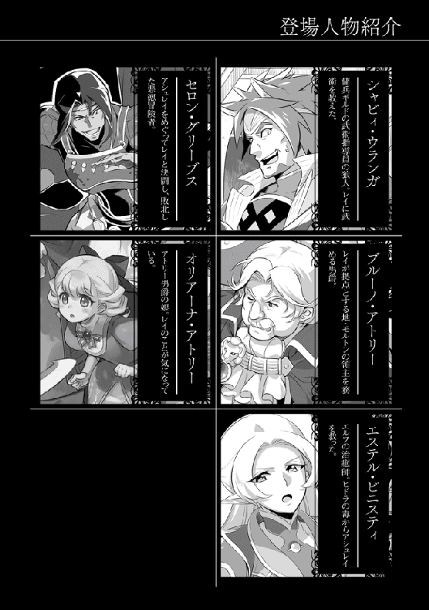

| Trinitasシリーズ トリニータス・ムンドゥス～聖騎士レイの物語～2 | |
| 愛山雄町 | |
| TOブックス (2016) | |
悪徳冒険者セロンとの決闘に勝利し、その夜アシュレイと結ばれたレイ。彼は冒険者として身を立てるべく、ギルドにきた依頼を２人でこなしていくことを決意する。そして経験を重ねてレベルを上げ、次第に気の良い仲間たちとも巡り合い、任務後に酒を酌み交わすなど充実した冒険者ライフを過ごしていた。だがそこに、何故か逮捕され奴隷の身となったはずのセロンの影が......。卑劣な巨悪を前に、レイとアシュレイは力を合わせて立ち向かう！
イラスト：和狸ナオ
デザイン：木村デザイン・ラボ

トリア歴三〇二五年四月二十五日。
聖礼こと、レイ・アークライトはアシュレイ・マーカットに絡んできた四級冒険者、セロン・グリーブスとの決闘に勝利した。
勝利の後、アシュレイに自らの秘密、異世界から来たことを告げる。アシュレイは彼の秘密を聞き、驚きを隠せなかったものの、すべてを受け止め、すでに惹かれあっていた二人はその夜、結ばれた。
同じ寝台で朝を迎えた二人は幸せな気分のまま、宿泊している銀鈴亭の食堂に降りていく。いつもからかってくる宿の女将ビアンカがニコニコと笑顔を見せるだけで、何も言ってこないことに首を傾げながら、朝食を摂っていた。彼らには自分たちが幸せな雰囲気を振りまいている初々しいカップルであるという自覚はなかった。
午前八時過ぎに宿を出ると、久しぶりに冒険者ギルドの扉をくぐった。ここ数日はセロンとの決闘準備に忙しく依頼を受けていなかったからだが、レイにはもっと長く来ていない気がしていた。
（この世界に来てから、ほとんど顔を出していたからかな。もの凄く久しぶりな気がする......）
懐かしく思いながらギルドの中に入っていくと、受付を待つ冒険者たちからの視線を感じた。その視線は好意的なものが多いが、敵意にも似た視線も多く混じっている。レイは彼らの視線を受け僅かにたじろぎ、居た堪れない気持ちになる。
（まだ、セロンのシンパがいるんだな。それにしても正々堂々の決闘で勝ったのに、そんな目で見なくてもいいんじゃないか......）
二人を見つけた受付嬢のエセルは、「支部長がお待ちです。ご案内します」と言って軽く頭を下げ、二人を奥に案内していく。支部長室ではユアン・ソロウ支部長が待っていた。常に強面な彼だが、レイにはいつもより不機嫌そうに見えた。
「セロンの取り調べが終わった。レイ、お前の告発通りだ。奴は冒険者仲間を裏切っていたのだ。済まん。本当に迷惑を掛けた」と自分の支部に所属する冒険者の不祥事に頭を下げる。
「未だ頑として口を割らんが、パーティメンバーの証言がある。これでお前たちを罠に嵌めたことは立証できる」と言うと、レイは「そうですか......」と僅かに安堵の表情を見せた。ようやく終わると思ったところで、セロンの身柄がどうなるのかが気になる。
「当然だが、冒険者ギルドからは永久追放だ。もちろん、お前たちへの殺人未遂で犯罪奴隷に身を落とすことになる。これも確定だ。だが、奴のパーティメンバーの証言から、まだまだ余罪がありそうでな。一旦、フォンスに護送して、取り調べを行うことになったのだ。つまり、処分はその後ということだ」
ソロウはセロンの仲間たちも彼に脅されており、セロンが裏社会──マフィアのような組織で、隠語では〝ファミリー〟と呼ばれている──との繋がりがあるのではないかと付け加えた。
ラクス・サルトゥース連合王国と冒険者ギルドは暗躍する〝ファミリー〟に煮え湯を飲まされ続けていた。このため、モルトンの領主アトリー男爵とソロウ支部長はこの機会を捉え、裏社会の者たちを一掃することに決める。そして、セロンを王都に送って、ファミリーに関する情報を洗いざらい吐き出させることにした。ちなみに彼のパーティメンバーは脅迫され、止む無く加担したことが判明したため、軽い処分──ギルドが指示する無償の奉仕活動と軽い罰金──だけで済んでいる。
この世界には奴隷制度が存在するが、ラクス・サルトゥース連合王国では奴隷取引は原則認められていない。犯罪奴隷についてのみ、犯罪の抑止と被害者の救済のため例外的に取引が認められている。この他にも戦争での捕虜を奴隷にする、いわゆる戦争奴隷がいるが、戦争奴隷は捕虜交換等の可能性があり、国家の管理下にあるため、取引されることは稀であった。
他国、特にカエルム帝国、ルークス聖王国、商業都市アウレラの三ヶ国においては、奴隷の取引は一般的な商取引として認められており、そのため、定期的にオークションが行われ、労働奴隷、性奴隷などを扱う専門の奴隷商人が多数存在していた。
奴隷商人の中には誘拐を行ったり、盗賊に襲わせ金銭的に困窮させたりする悪質な者も多く存在していた。特に狙われやすいのが獣人で、身体的な能力に秀でているだけでなく、孤立した小さなコミュニティで暮らしていることが多いため、奴隷商人たちの標的となっていた。獣人たちに対等な権利を与えている連合王国やカウム王国では取引自体が禁止されているのだが、腐敗したカエルム帝国や金のためなら何でもやると言われているアウレラなどでは、未だに違法な奴隷取引は後を絶たない。それも自国内ではなく、他国の国民を攫うことが多く、しばしば国際問題の種になっている。奴隷取引を認めていない国からは違法行為の取締りを強化するよう要請しているが、改善の見通しは立っていない。
そんな中、最も悪質な国がルークス聖王国だった。ルークスでは国を挙げて、獣人たちの奴隷化を進めており、国に依頼された奴隷商人たちが獣人のコミュニティを襲い、何の罪もない人たちを奴隷に落としている。これは彼の国の国教、光神教の教義において、人間至上主義が唱えられているためで、亜人である獣人の人権は極端に制限されていた。
余談だが、レイに稽古をつけた狼獣人シャビィ・ウランガも、幼い頃、カエルム帝国の西部、ルークス聖王国との国境付近からラクス王国に逃げてきた難民の一人だった。
その連合王国でも奴隷の取引こそ認められていないが、所有は認められている。これは商人、傭兵、冒険者など各国を往来する者たちが他国で購入した奴隷を持ちこむことが多いためだ。特に商人は絶対に裏切らない護衛として戦闘用の奴隷を雇っていることが多く、経済活動を円滑に進めるために止む無く認められているのだ。
但し、連合王国内においては奴隷を所有している者は蔑視の対象となるため、目立たないようにしていることが多く、レイは奴隷という存在に気付いていなかった。
話を終えると、ソロウはもう一度、二人に大きく頭を下げた。
「今回の件は冒険者ギルドの責任だ。二人には本当に迷惑を掛けた。こういった事例でギルドが賠償したケースはないが、今回はセロンの個人資産から君たちに幾ばくかの賠償がなされるはずだ。王都での取り調べ後に連絡があるはずだから、それまで待ってほしい」
そして、金貨を二枚取り出し、テーブルの上に置いた。
「前に預かったヒドラの魔晶石の買い取りだが、今回のこともある。少し色を付けて二百Ｃで買い取らせてもらおうと思うがどうだ？」
通常、三級相当の水属性の魔晶石の相場は、金貨一枚、百クローナ程度だ。三級といえば、討伐するのにベテラン冒険者が数名必要な危険な魔物だが、魔晶石自体の買取価格は危険が多い割には高くない。
これは討伐依頼が出ていない魔物は人的被害が出ているわけでもなく、逼迫した状況にないためだ。もし、ギルドが魔晶石を高値で買い取ると、冒険者たちは報酬を求めて比較的容易に討伐できる魔物や近場の魔物の討伐を優先してしまう。ギルドとしてはより緊急性の高い魔物の討伐を優先させたいため、魔晶石の買い取り価格を低く抑え、逆に討伐による報奨金を上げて、一部の魔物や地域に偏らないように調整しているのだ。なお、魔晶石の流通の大半が冒険者ギルドか傭兵ギルド経由であるため、ギルドの方針により価格が抑えられると、需要が急激に増加しない限り、価格統制は比較的容易であった。
今回は支部長の権限で相場の二倍で買い取るとの申し出であり、レイはアシュレイに目で確認した後、「それで結構です」と答える。
「今回の件は顛末を含め、すべて公表する。今もセロンを擁護する声があるが、事実を公表すればそれも収まるだろう」
二人は支部長室を後にし、受付のあるホールに戻ってきた。
レイの表情は硬かった。自分と愛する女性が殺されそうになったにもかかわらず、相手は奴隷に身を落とすだけというのが、理不尽であり納得できないのだ。
（こっちが死ねば、奴は何も〝なし〟だったんだ。この世界の発達していない司法制度なら、普通こういう裏切りは死罪が当然なんじゃないのか？）
そのことをアシュレイに伝えると、「そうだな」と言って頷くが、一般論として今の制度が被害者救済の措置であることを伝えてきた。
「だが、死罪にする方が手っ取り早いが、奴隷にして売った方が被害者にとってもギルドにとっても得だ。犯罪奴隷は首に特殊な魔道具を付けられる。その魔道具には闇の魔法が掛けられているから、命令者に服従するよう精神が操作されるそうだ。犯罪奴隷、特に戦闘力を持った奴隷は危険な魔物の討伐や戦場の最前線に回される。精神は操作されているが、恐怖は消えないらしい。だとするなら、罰としては死罪より重いという気がしないでもない」
レイはその説明で頭は納得するが、まだ、心に蟠りがあった。しかし、もう過ぎたことと忘れることにし、次はどの依頼を受けるか、掲示板を見始めた。
偶然、掲示板に「墓荒しの調査」という見出しの依頼票を見つけた。内容はモルトンの街の共同墓地が荒らされるため、調査をして欲しいというもので、依頼主は闇の神殿の神官長だった。
報酬は調査のみで三十クローナ、討伐で二百クローナとなっていた。
レイはアシュレイに向かい、「これって、どう思う？」と尋ねてみた。
「話を聞いてみなければ分からないが、屍食鬼の可能性があるな。今回は調査だけだから、危険は少ないと思うが、もしグールなら、通常の武器が効かない可能性もある。そうなると、危険の度合いは一気に跳ね上がるな」
レイは「グール......か」と呟く。不死の魔物、アンデッドということで僅かに怖気づいたのだ。それではいけないと軽く頭を振って恐怖を追い払い、「魔法は効くんだろ？」と確かめる。
アシュレイは「ああ、魔法なら......特に光属性の魔法が良く効くはずだ」と頷き、レイはその答えに安堵する。そして、自信に満ちた表情を作り、「それならいい機会かもしれないね。夜間活動とアンデッド系との戦闘の経験。街の中なら対応もしやすそうだし、報酬は大したことないけど、これにしていいかな？」と彼女の顔を覗き込む。
アシュレイは少し考えるが、「そうだな......やってみても面白いかもしれない。だが、調べてみたら、ただの墓荒しという結果になりそうだがな」と笑いながら同意した。
レイはその依頼票を剥がし、受付に持っていく。受付嬢のエセルは依頼票を確認しながら、レイの顔を見る。そして、手続きをしながら注意を促した。
「調査のみであれば七級の依頼ですが、討伐になると六級、最も厳しい場合、五級相当になる可能性があります。お二人なら大丈夫だと思いますが、十分に気を付けて下さい」
真面目な表情で心配するエセルにレイは「ありがとうございます」と頭を下げ、ギルドを出ていった。二人はそのまま話を聞きに行くため、街の北東にある闇の神殿に向かった。
闇の神殿は闇の神、ノクティスを祀る神殿である。ノクティスは闇及び夜の神であるが、休息、つまり死を司る神として、墓地の管理を行っていることが多い。
もちろん、闇の神殿を排斥しているルークス聖王国では死も光の神ルキドゥスが司るという解釈をもって墓地の管理も光の神殿──ルークスでは教会と呼ばれている──が行っている。
調査の話をしながら歩くと、すぐに闇の神殿に到着する。レイは神殿を仰ぎ見ながら、思っていた印象と違うことに驚く。死を司るという先入観から、もっと冷たい印象を受けると思っていたが、神殿の建物自体は黒を基調としているものの、落ち着いた感じのステンドグラスや黒御影石のような滑らかな石材がふんだんに使われており、想像とは逆に温かみを感じたのだ。
また、敷地内にある花壇には春の花が咲き始め、良く手入れされた芝生の庭が、柔らかな印象をより強くさせている。
「闇の神殿というから、もっと暗い感じかと思ったけど、随分、明るい感じがするんだな」
レイは何気なく、そう呟いた。
「そうだな。ここには死者を弔うだけでなく、懐かしみに来る者もいる。亡くなった親しい者と思い出を語るのに、暗いイメージは合わないからだろう」
アシュレイは少し寂しそうに応じた。レイは幼い頃に母親を亡くした話を思い出す。
（アッシュは時々、お母さんのお墓に行っていたんだろうな。だから、余計にそう思うのかも......）
二人は神殿の中に入り、若い神官に冒険者ギルドから来たことを告げる。すぐに神官長室に通されるが、レイは神殿の中を物珍しそうに見回していた。中も外観と同様に黒を基調としており、質素な作りで、過剰な装飾はなく、行き届いた手入れが彼に好印象を与えていた。
（なんか落ち着く感じだな。山奥の禅寺とか、長崎で見た小さな教会って感じかな......）
神官長室に案内されると、すぐに神官長らしき初老の女性が現れた。
「ノクティスの神殿へようこそ。私は神官長を勤めさせて頂いております、ダーナ・ヘイルズと申します」
柔和な表情で自己紹介したヘイルズ神官長は、本題に入る前に自ら茶を淹れ、彼らの前に置いていく。二人は自己紹介を済ますと、すぐに本題に入る。
まず、アシュレイが状況を確認していく。
「〝墓荒し〟とあったが、具体的な状況を聞かせて頂けないだろうか？」
墓荒しという言葉を聞き、神官長の表情が僅かに曇る。再び、柔和な笑みを浮かべると、ゆっくりとした口調で説明していく。
「事の起こりは五日前になります......」
神官長の説明では五日前の夜、神殿の裏にある墓地に何者かが侵入した形跡があり、その時は特に実害も無く、悪戯か何かだと思っていた。しかし、その翌日も墓地に入られ、今度は墓標が倒され、墓を掘り起こした跡が見つかった。幸い棺にまで到達していなかったのだが、墓荒しをこれ以上放置するわけにはいかないと守備隊に通報し、三日前の夜に警備を行ってもらった。警備を警戒したのか、その日は被害が無く、翌日、守備隊が引上げると、再び墓が掘り起こされた。
守備隊に連絡したが、常に警備し続けるわけにはいかないと言われ、冒険者ギルドに犯人探しの調査を依頼したらどうかと提案された。
そして、昨夜も墓荒しが現れ、遂に棺を開けられ遺体を荒らされた。その遺体には齧られたような跡があり、屍食鬼の可能性があると思われた。
「誰がこのようなことを行ったか調べて頂きたいのです。もし、グールであるなら討伐もお願いしたいと......」
レイは魔術師である神官が戦えば良いのではと思い、そのことを聞いてみた。
「......私ども、闇の神の神官は、人々に安らぎを与えることが務めです。ですから、迷える死者の魂が安らかに眠れるよう祈ることはできても、グールのような荒々しいアンデッドと戦うすべを持つ者はほとんどおりません」
闇の神殿の神官は光や火の神殿のような戦いに慣れた者はおらず、討伐までは難しいということだった。
「どうか、ここに眠る魂の安息を取り戻してほしいのです......」という神官長の真摯な言葉にレイとアシュレイは「必ず解決してみせます」と言って大きく頷いた。
話を聞き終え、現場の状況を見るため、墓地に向かった。
現場となった墓地は丘の斜面に沿って作られており、広さは五十ｍ四方ほどで周囲を木で囲まれ、見通しはあまり良くない。墓地自体は芝生の緑の絨毯の中に整然と墓標が並び、所々に木が植えられていた。一見するとアメリカのアーリントン墓地のようにも見え、〝墓場〟という陰気な感じはしない。
荒らされた現場は墓地の端、斜面の中腹にあり、植えられた木に遮られ、神殿からは見通しが効かない場所だった。そこには倒された墓標と動物が掘り起こしたような無造作に掘られた穴があった。
レイはヘイルズ神官長に事実を一つずつ確認していく。
「昔からこんなことがあったのですか」
突然聞かれた神官長は、やや戸惑いながら、「いいえ、少なくとも私が神官長を拝命してからは一度も」と首を振る。レイは小さく頷くと、更に質問を続けていく。
「荒らされた墓は同じ物だったのですか？」
「いえ、別々の場所ですが......」と答えると、更に「埋葬された方に共通点はありますか？」と確認する。
神官長は考え込むように首を傾げた後、ゆっくりとした口調で説明していく。
「特に共通点は思いつきませんが......ここに埋葬された方は食料品店を営まれていた方ですし、その前の方たちも確か、家具職人の奥様、飲食店のご主人、守備隊のご子息でしたから......」
レイは考え込むように、その場にじっと立ち、掘られた穴を眺めていた。その間にアシュレイが墓の周りを入念に調べていく。
「足跡はあるが、守備隊が入った後か......どれが犯人の物か分からぬな......神官長、守備隊は足跡や遺留品について何か言っていなかっただろうか？」
ヘイルズ神官長は「確か、人の裸足の足跡が残っていたと......他には何も......」と首を横に振る。更に十分ほど調べたが、特に手掛かりらしい物は見つからなかった。二人はここにいても埒が明かないと、一旦、神殿に戻ることにした。
アシュレイが神官長に、「今日から、神殿に泊めてもらおうと思うが、大丈夫だろうか？」と提案すると、神官長は静かに頷き、「夜もここに居ていただけるなら安心です」と顔を綻ばす。
レイとアシュレイは準備のため一旦ここを離れることを告げ、宿に戻っていく。レイは歩きながら、「どう思う、アッシュは？」と尋ねた。アシュレイは首を横に振り、「今のところ何も分からないな。だが、見張っていれば何かが起きる」と答えた。
「そうだね。でも、グールじゃないことは多分間違いないよ」と自信有り気に言うレイに対し、アシュレイが首を傾げる。その様子にレイはにこりと笑い、「守備隊がいる時だけ、墓を荒らしていない。グールに知性がどの程度あるのか知らないけど、アンデッドが生者である守備隊を恐れるとは思えない。きっと、何か他に理由がある」と言うと、アシュレイは「なるほどな」と頷いた。
「確かにグールに知性があるという話は聞いたことが無い。そうなると一体誰が......」
その問いにレイにはひとつだけ思いついたことがあった。しかし、確証がないため黙っている。
（推理小説だと、こういう時は一番利益を得る者を疑うのが定石だ。闇の神殿を貶めて利益があるのは......光神教、いや、アザロ司教だけだろう。男爵様の話だと狂信者だそうだから、闇の神殿を排除するためには、この程度の嫌がらせくらいやりかねない......）
二人は銀鈴亭に戻り、ここしばらくは夜に出かけるため、食事に戻ってくるだけだと伝え、再び闇の神殿に向かった。
途中、調査に使える道具を手に入れるため、道具屋に立ち寄ることにした。レイはもちろん、アシュレイもこういった調査に疎く、何が必要か思いつかなかった。そのため、役に立ちそうな道具が無いか、店の主人であるマニュエルに聞いてみた。
「夜の警備をするんですけど、何か役に立ちそうな道具ってありますか？」
マニュエルは意図が掴めず、秀麗な顔に訝しげな表情を浮かべ、「具体的にどこで使うつもりなんだ？ 屋敷の回りか？ それとも野営地か？」と聞く。
レイは依頼の内容を話していいものか判断に迷い、アシュレイの方を見る。レイの意図を悟ったアシュレイが話を引き取り、「マニュエルは聞いていないか？ 闇の神殿の墓地で墓荒しが出た話だ」と口にすると、マニュエルは「ああ、聞いているぞ」と頷く。
そして、すぐに納得した表情になり、「ははん、その依頼を受けたのか......しかし、大丈夫なのか、たった二人で？ グールが出たら、拙くないか？」と言い、疑わしそうな顔で二人を見つめる。
「多分大丈夫です。僕の槍は魔法を纏えますから、大抵のアンデッドには効くはずです。そもそも街の中にグールなんか出ませんよ」
マニュエルはレイの言葉を聞き流しながらアシュレイを見た。そして、ベテランの彼女が小さく頷くとようやく納得し、「それなら、野営地の警備用の鳴子と糸くらいか。灯りの魔道具はいるか？」と必要な道具をカウンターに出していく。
レイは目の前の道具類を見ながら少し考えた後、アシュレイに「鳴子と糸は欲しい。糸は五百メルトくらい必要かな？ 灯りは無くても大丈夫？」と確認していく。
アシュレイは「灯りは私の物があるから大丈夫だろう。しかし、五百メルトもの長さが必要なのか？」と予想を超える長さに首を傾げる。レイは「うん」と頷くと、「後でどう使うか説明するよ」と言って、いたずらを思いついた子供のようにニヤリと笑った。
二人は鳴子と糸を買い込み、闇の神殿に戻っていく。レイはその途中、糸の使い方を説明していった。
「もし、グールじゃなくて人が墓を荒らしているなら、昼間に堂々と鳴子を設置すれば、それを見ている可能性があるよね。そして、今日は僕たち二人が神殿に泊まるから、いつ巡回に来るか分からない。だから、犯人が人なら、今日は多分現れない。もし出てくるようなら、本物のグール。ここまではいい？」
そこで話を切り、アシュレイが頷くのを確認してから、話を進める。
「僕と君とで警報装置を張り巡らせていく。これは見ている者がいることを前提にね。その時、糸を二本設置していく。一本は普通に鳴子を付ける。そして、もう一本は地面に這わせておく......」
アシュレイは意図が判らず、「なぜそんな面倒なことをするのだ？」と疑問を口にする。レイは「今から説明するよ」と言って、更に説明を続けていく。
「さっきも言った通り、今日は警報装置を見ているし、僕たちがいることを知っているから、人なら出てこない。そして、明日、〝昨日はグールが出てこなかったから、依頼を達成できなかった〟って、依頼に失敗した振りをして、鳴子と糸を回収するんだ。その時、回収しながら、もう一本の糸を張り巡らしていって、神殿の中で鳴子が鳴るようにする。そうすれば、墓荒しは明日の夜は罠が無いと安心するだろうから、きっと出てくる。僕たちはすごすごと退散する振りをして、暗くなってから神殿の近くに戻ってくる。これでどう？」
アシュレイはポンと手を打ち、「なるほどな。一度目の鳴子を囮にするわけか」とレイの肩に手を置く。
「......お前は意外と策士だな。確かに鳴子を外しているところを見れば、次の日はもうないと思うはずだ。後は神殿からうまく合図を貰う方法を考えればいいということか......」
レイは「そういうこと」と言い、もう一度ニヤリと笑った。
更に歩きながら、夜の監視方法などを確認していく。午後二時頃に神殿に着き、神官長に段取りを説明すると、墓地に鳴子と糸で作った警報装置を設置する。
二時間ほどで罠を張り終えると、二人は神殿に入っていった。
「あとは夜中の警備だけだ。アッシュ、早いけど夕食に行こうか」
二人が神殿を出ようとすると、門の方から騒ぎ声が聞こえてきた。
ヘイルズ神官長の落ち着いた声の他に、男性にしてはやや甲高い、ヒステリックな声が響いていた。
「この悪魔の巣窟で屍食鬼が出たと噂になっておるぞ！ 貴様ら悪魔の手先が、街にアンデッドを放とうとしておることは明白。我ら光の神の僕の目は誤魔化せんぞ！」
その甲高い声の男は白い神官服──ローブのような丈の長い服に金糸、銀糸をふんだんに使った贅沢な物──を着込み、後ろには同じような服を着た神官と、武器を手に持った信者らしい男たち十数人が詰め掛けていた。
ヘイルズ神官長は勇敢にも一人で、十数人の男たちを説得しようとしていた。
「私どもノクティスの神殿は、アンデッドの存在を認めてはおりません。アンデッドは安らぎを得られなかった悲しき亡者。私どもはノクティスの安らぎを与えこそすれ、奪うことは致しません......」
その声も「悪魔の手先が何をほざく！」という信者らしい男の罵声で消されていく。遂には神殿の門を押し倒そうと、男たちが門扉を揺らし始めた。レイはその光景を見ながら呆れていた。
（酷い......何の証拠も無いのに断定するなんて......ヘイルズさんときちんと話をすればそんなことしないっていうのは、すぐ分かるのに......まあ、人の話を聞かないから狂信者なんだろうけど......日本にもいたよな。マスコミとかネットの情報に踊らされて、自分が正しいと思いこむタイプって......こういう人たちが一番、性質が悪いんだ。正義の味方気取りで、結局やっていることはイジメと同じ。罪の意識なんか無いから、すぐに暴走するし......そのくせ、自分が間違ったって分かっても、何事もなかったように忘れられる。そして、すぐに別のことで迷惑を掛けていくんだ......）
レイがそんなことを考えていると、アシュレイが一人で前に出ていく。
彼もすぐに追い掛けるが、彼女は門のところに来ると、いきなり剣を引き抜いた。そして、狂信者たちに対し、「グールのことは冒険者ギルドで調査している！ まだ調査が完了していないが、何を根拠に神殿を〝襲撃〟しようとしているのか！ 我々は傭兵ギルドにも登録している！ 貴様らが神殿を破壊するなら暴徒として処理しなければならんぞ！ 暴徒の処理は被害拡大を防ぐという名分があれば傭兵でも可能だ！ それでもまだ破壊活動をするつもりなら、それ相応の覚悟で来い！」と叫んだ。
戦場で鍛えられた彼女の声が日が傾きかけた街に響いていく。その勢いに狂信者たちも気勢を削がれ、門を揺らす手が止まっていた。
一瞬の静けさの後、「傭兵如きが口を挟む問題ではない！ 貴様らも悪魔の手先か！」という甲高い声が響く。最初に叫んでいた神官服の男がアシュレイを指差し、弾劾し始めたのだ。それは徐々にヒートアップし、アシュレイへの罵倒に変わっていく。
「......女が傭兵などと、碌な生まれではなかろう！ 穢れた母親から生まれた忌み子なのではないのか！......男と二人で闇の神殿に入り浸るなど、ここで何をやっているのか分かったものではない......」
ここまでの話で忍耐の限界を迎えていたレイは「黙れ！」と一喝する。そして、槍に光の魔法を纏わせた後、皆の注目が集まったところで一気に輝きを強める。
丘の陰でやや薄暗くなっていた闇の神殿の周りで、急に太陽のような光を目にし、狂信者たちは一斉に目を押さえた。
「光の神は闇の神と対を成す神のはずだ！ お前たちのような勝手な解釈で神の意思を穢すな！ 違うという者はこの光を見つめてみろ！ ルキドゥスの加護があれば、見つめ続けられるはずだ！ さあ、やってみろ！」
完全に切れてしまっているレイは、無茶苦茶なことを言っているという自覚はあるものの、アシュレイへの理不尽な暴言に怒りの方が勝り、完全に冷静さを失っていた。
「神の御力、光の魔法をそのようなことに使うとは......覚えておれ！ 貴様のことは忘れんぞ！」
神官服の男はそう捨て台詞を吐くと、その場から立ち去った。ヘイルズ神官長が、「ありがとうございました。レイさんとアシュレイさんに迷惑が掛からなければよいのですが......」と申し訳無さそうに下を向く。
アシュレイは力強く、「大丈夫だ。私もレイも何も間違ったことはしていない。間違っているのはアザロ神官長の方だ」と言い、レイはここに至って、今の相手が警戒していたアザロ神官長、光神教の呼び方でいえば、アザロ司教だとようやく気付いた。
（拙いな......アッシュを馬鹿にされて、完全に切れてしまった......でも、今のは仕方が無い。後悔はしていない......）
レイは心を落ち着かせ、「ご心配なく。我々には男爵様もついていますし、ギルドの後ろ盾もあります。精々、嫌がらせをしてくるくらいでしょう」と静かに言った。
レイとアシュレイの二人は嫌な気分を残しつつ、宿に食事を食べにいく。その姿をアザロ司教は暗い目で見つめていた。
（おのれ！ 私を愚弄しおって！......しかし、あの鎧、聖騎士の物ではないのか？ あの光の魔法も......聖騎士ならば、なぜ我らの邪魔をする......あの者を監視する必要があるな......だが、その前に邪神を崇拝する者どもを排除せねばならぬ......神の御心に沿うためには結果が必要だ。手段は選ぶ必要はない......）
その目には燃え盛る炎のような狂気が見えるが、それに気付く者は誰もいなかった。
レイとアシュレイの二人は銀鈴亭で食事を摂った後、午後五時頃に闇の神殿に戻った。アザロ司教たち光神教の狂信者たちの姿はなく、神殿にはいつもの静謐さが戻っていた。
二人は出入口に近い部屋を借りると、交代で不寝番を行っていくが何事もなく、夜は静かに更けていく。
レイの予想通り、その夜は何も起こらなかった。二人は段取り通り、神殿の外でヘイルズ神官長に謝罪してから、昨日設置した警報装置を取り外していく。そして、警報装置の撤去に手間取っている演技をしながら密かに用意してあった、もう一本の糸を張り巡らせていった。神殿の中に入ると、荷物を整理する振りをしながら鳴子を設置し、本命の警報装置を完成させる。
「暗くなったら戻ってきます。墓地の近くに身を隠していますから鳴子が鳴ったら灯りの魔道具で合図を送ってください」
神官長にそう伝えると、レイたちはギルドの方に歩いていく。依頼が失敗したように見せかけるため、冒険者ギルドで少し時間を潰した後、いつもの行動を取るべく、訓練をするため、傭兵ギルドに向かった。
「ここまでやれば充分だと思うけど、あんまり早く宿に戻ると不審がられるから、いつもの時間まで訓練をしてから、のんびり帰ろう」
二人が傭兵ギルドに入ると、カトラー支部長から呼び出しがあった。
何事かと思って慌てて支部長室に向かうと、王都にある傭兵ギルド・ラクス本部から連絡が来たとのことだった。
「ちょうど良かった。さっきフォンスのギルド本部からレイへの謝礼が決まったという連絡があった。現金を希望することで変更はないな」と、男爵を襲った裏切り者の討伐に対する謝礼が決まったことが伝えられる。
レイが肯くと、カトラーは話を進めていく。
「白金貨十枚、一万クローナだ。それで良ければ今すぐ渡せるが、貨幣より宝石などが良ければ替えることもできるが」
レイは小さく頭を下げ、
「ありがとうございます。えっと、貨幣でも大丈夫です。でも、本当に一万も貰っていいんですか？」
「ああ、構わん。というより、もっと増額するように頼んであったのだがな......良ければここに受け取りのサインをしてくれ」
白金貨が十枚入った革袋を受け取り、支部長が持つ受領証にサインする。貨幣の入った革袋をそのまま腰のポーチに入れ、訓練場に向かっていく。
（一万クローナということは一千万円くらいか......物騒だから、早くアイテムボックスに入れたいんだけど、ここじゃ目立つんだよな......）
何とか人のいないところを見つけ、収納魔法であるアイテムボックスに白金貨を片づけた。
レイは三日振りにシャビィに稽古を付けてもらうつもりでいた。今まではセロン対策で槍の訓練ばかりだったため、片手剣が得意なシャビィに普段あまり使わない長剣の手ほどきを受けようと思っていたのだ。
シャビィは「珍しいな、今日は長剣か？」と一瞬意外そうな顔をしたが、すぐにいつもの笑顔を見せる。
「そうだな、折角腰に剣を吊るしているんだ。槍と同じくらい使えるようになりゃ、戦いに幅ができる。よし、いっちょやるか」
シャビィから手ほどきを受けていくと、剣を振る姿が徐々に様になっていく。
アシュレイとの訓練である程度、使えるようになっていたが、やはり本職の師範の指導の方が上達は早い。三時間ほど訓練を続けて、程よく汗を掻いたところで宿に向かった。
その道すがら、レイは腰の長剣のことをぼんやりと考えていた。
以前、槍と鎧に銘があったことから、この剣にも銘が無いか確認したことがあった。槍や鎧と同じようにアイテムボックスに入れ、物品リストを思い浮かべたが、白い角や雪の衣のような銘はなく、ただ〝長剣〟とだけ記されていた。
（あの時はちょっとガッカリしたんだよな。格好いい名前でも付いているかと思ったのに......まあ、見た目はいいし、切れ味も良さそうだってアッシュも言っていたから、いい物なんだろうけど......）
彼は勘違いしているが、この長剣は銘こそ無いものの、最高級の鋼を使い、更に特殊な技法で鍛えられた逸品であり、この街で売っている長剣とは比較にならないほどの名剣だった。武器に対し造詣が深くないレイと、片手剣に興味のないアシュレイの見立てのため、評価が低くなっているに過ぎない。
宿で夕食を摂り、夜に備えて少し仮眠をした後、午後九時過ぎに二人は静かに宿を出ていく。闇の神殿の近く、墓地から百メルトほどの場所にある街路樹の陰に二人は身を潜めた。二人は交代で不寝番をしていくが、昼間は暖かいものの、春の夜ということもあり、吹き抜ける夜風は思いの外冷たく、風が吹くたびにマントをきつく締め、寒さを凌いでいく。
日付が変わる頃、不寝番をしていたレイの目に神殿からの合図が飛び込んできた。念のため、もう一度確認するが、神殿の入口で灯りの魔道具のほのかな光が揺れていた。
「アッシュ、起きてくれ。神殿からの合図だ」とすぐにアシュレイを揺り起こす。
瞬時に目覚めたアシュレイが目で状況を聞いてくると、「思った通りにことが進んでいるみたいだ」と笑みを浮かべながら、簡単に状況を説明していく。傭兵生活の長いアシュレイは既に完全に覚醒しており、二人は墓地に向けて静かに急行した。
墓地に近づくと、小さな光点が見えてきた。その弱い光を受けた三人の人影が浮かび上がってくる。更に近づいていくと、その人影は鍬のような道具で穴を掘っているように見えた。
影の一人が「早くしろよ。さっさと終わらせようぜ」と暢気に声を掛ける。
しかし、神殿の灯りに気付いた一人が、「静かにしろ！ 神殿に灯りが点いたぞ。気付かれたのかもしれん」と鋭い声で警告を発する。
三人目の男がリーダーなのか、「おい！ 灯りを消せ！ 周囲に警戒しろ！」と潜めた声で鋭く命じた。彼らは手元の光は消したが、作業の手は止めず、月明かりの下で黙々と穴掘りを進めていく。
レイとアシュレイは打合せ通り、二手に分かれた。
レイは三人の男たちのところに慎重に近づいていく。彼の鎧、雪の衣は金属鎧とは思えないほど静音性に優れており、音が出やすい通常の金属鎧を身に纏うアシュレイが離れた場所に隠れ、不測の事態に備える手筈になっていた。
男たちまで二十メルトほどの距離に接近した。そこでようやく、男たちも誰かが接近してくることに気付く。
一人の男が「誰だ。出てこい！」と誰何するが、レイはそれに応えることなく、声がする方に向けて、静かに閃光の魔法を放った。
やや遠いものの、夜の深い闇の中に突然、真昼の太陽のような強い光が現れ、三人の男たちは目を押さえて、「目が！」という悲鳴を上げた。
男たちは一時的に視力を失い、パニックに陥った。
「くそ！ 目が見えねぇぞ！ どっちに向かったら、オワッ！」
「ぶつかってくるんじゃねぇ！ とにかく逃げろ！」
彼ら目を押さえながら右往左往し、味方同士でぶつかって派手に転倒する。
レイはその隙に光球の魔法を上空に放ち、墓地全体を照らした。墓地の端、一昨日掘り返された場所の反対側に、慌てふためく三人の人影がはっきりと見えた。
墓荒したちに侮られないよう、レイは芝居を打つことにした。自分を歴戦の傭兵であると思い込ませるため、「動くな！」と一喝し、口調を荒々しいものに変える。
「グールには、言葉が分からないか！ ならば問答無用で斬り刻んでやる！」
レイがそう叫ぶと、墓荒しの一人が「誰か知らんが、一人しかいねぇ。こいつを殺してズラかるぞ」と視力が戻りきらないまま、闇雲に剣を抜く。
その言葉に他の二人も慌てて剣を抜くが、碌に見えない男たちはただ剣を振り回すだけで、かする気配すらなかった。
レイはどうやって殺さずに無力化できるか考え、槍で足を斬り裂くことに決めた。闇雲に振り回される剣の間合いを正確に把握し、届かない位置を慎重に選ぶ。そして、膝下に狙いを定め、一人ずつ斬り倒していく。
セロンとの戦い、正確には中鬼との戦いを経験していなければ、人間相手に槍を振るえなかったかもしれない。しかし、この世界で生きていくためには人を傷付けることを厭わないと決めていた。
脹脛を斬り裂かれた男たちは「痛ぇ！」と悲鳴を上げ、「殺さないでくれ！」と叫びながら、武器を捨て次々と投降していく。その姿にレイは安堵の息を吐き、彼らをじっくりと観察していく。
（ただのゴロツキにしか見えないけど、本当に光神教と関係があるのかな？ それとも偶然、墓を荒しに来ただけなのか？）
一瞬、そんなことを考えたが、すぐに尋問を開始した。
「全員武器を捨てたな。誰に頼まれた？」という彼の問いに誰も答えない。レイはもう一芝居打つことにした。再び声のトーンを落とし、「そうか......よかろう。事情を聞くだけなら、一人いれば十分だ。グールと間違えて殺したと言えば、こちらが咎められることはないからな」と言って、一旦言葉を切る。
男たちに動揺が見られたと確信した彼は、今度は出来る限り陽気な声を作り、「さて、誰が最初に話してくれるかな？」と言い、無造作に一番近くにいる男の右腕に槍を突き刺した。
「ギャア！」という悲鳴が墓地に響き渡る。
殺すつもりは毛頭無かったが、覚悟を決めたレイは躊躇いを見せず、更に槍に力を込めていく。
「次は誰の右手がいいかな？ しゃべるためには口があればいい。腕はいらないな。さてと......」とレイが言ったところで「わ、分かった、や、止めてくれ！ しゃべる、しゃべるから......」と二十代半ばくらいの革鎧を着た男が恐怖に負けて、口を割ろうとした。
無意味に人を傷付ける気はなかったのでレイは心の中で安堵するが、そのことを悟られないように努力しながら、その男に近づいていく。
次の瞬間、眩い光が彼の目の前を通り過ぎた。そして、証言しようとした男の腹部に太い光の槍が突き刺さる。その男は「グウェ！」という悲鳴ともつかない声をあげ、そのまま動かなくなった。
レイは潜んでいる敵を警戒するように、腰を落としながらゆっくりと周囲を見回していく。その時、丘の上側三十メルトくらい先の場所に突然光が溢れた。すぐに、その光は眩い光を纏った金色の槍となり、彼に向かってきた。
大して速くない光の槍をレイは難なく回避する。そして、槍を構え直し、次の魔法を警戒する。彼が身構えた直後、次は細い光の矢が襲いかかってきた。光の矢は槍よりも速い速度で飛んでくるものの、距離が離れていることから容易に回避できる。
（アッシュは気付いてくれただろうか？ さすがに二人はいないと思うけど......）
レイは墓荒しの実行犯の他に、見届け役兼口封じ役が潜んでいる可能性があると考えていた。墓荒しが屍食鬼で無かった場合、魔法を使え静かに接近できるレイが実行犯を追い詰め、アシュレイが少し離れた位置で見届け役がいないか、警戒する分担になっていたのだ。
レイには魔法が効かないと判断したのか、今度は実行犯に対して魔法を放ち始めた。レイは実行犯を墓標の陰に引き摺っていき、自らは敵に身を晒す。
（こうしておけば、僕に気を取られて、アッシュに気付くのが遅れるだろう......）
アシュレイはレイが三人の墓荒しを無力化したことを確認すると、潜んでいるかもしれない見届け役に対し警戒を始めた。
（定石なら墓地の上方に配置するはずだ。あとはどの程度の戦力を隠しているかだが......あっさり降伏したところを見ると、大した技量は持っていない連中を使っているな。だとすると、見届け役は一人。光の神殿の関係者なら、魔法を使ってくるはず......）
傭兵の経験が長いアシュレイは見事に敵の心理を読みきっていた。レイたちのところに向けて、次々と光の槍や光の矢が飛んでいくが、レイのことを心配しながらも、魔法が撃ち出される地点を見極めると、音を立てないよう慎重に接近していく。
レイが打ち上げた光の球が墓地全体を照らしているが、木々に遮られた場所は足元が覚束ない。アシュレイは木々に身を隠しながら、静かに、しかし、可能な限り足を早め、丘を登っていく。
墓地の上では黒い服を身に纏い、短い杖を持った魔術師らしき者が反撃してこないレイに対し、無造作に魔法を撃ち込んでいた。アシュレイは攻撃に夢中になっている魔術師から二十メルトほどの位置に到着した。そして、その魔術師を冷静に観察していく。
（素人だな。自分の攻撃に夢中になり過ぎ周囲への警戒を怠っている......その割には魔法の威力はあるな。詠唱速度もかなりのものだ......どうする？ 見つからずに接近出来るのはここくらいまでだ......レイは充分に対処できている。更に上に回りこむか......）
レイに余裕があると判断すると、迂回しながら更に丘を登っていく。
魔術師が墓地にいるレイに攻撃を始めてから、十分ほど経過していた。レイに向けて光の矢が三十回ほど撃ち込まれたが、彼はそのすべてを回避していた。
（この距離で視認しやすい光の矢を何本撃ち込んでも当たらないよ。そんなことも分からないのかな？ それにしてもこれだけ続けて魔法を発動できるって、結構凄いんじゃないのかな？）
レイはそんなことを考えながらも、飛んでくる光の矢を易々と回避していく。彼の想像通り、暗闇の中で光属性の魔法を使うことは、明るい昼間に比べ魔力の消費量が多い。その状況で短時間に連発できる魔術師の能力は相当高いと言えるだろう。
墓地の上方で魔法を放っている男、光神教の司祭、フラヴィオ・バッサーニは自分がなぜこんなことをしているのか、釈然としない思いで魔法を放ち続けていた。
（私はこんなことをするために光の神に仕えたのではない。世を光で満たし、幸福な世界を作るためだったはずだ。その私がなぜ夜の墓地で人を殺めようとしているのか......すべてはあのアザロ司教のせいだ......）
バッサーニ司祭は今年で三十一歳になる。若くして光属性の魔法、彼らの言う〝神の御力〟を極めた俊英で、ここモルトンの町に派遣されるまでは順風満帆の人生を送っていた。ここで何事もなく数年間勤め上げれば、聖都パクスルーメン──ルークス聖王国の首都、光神教本部のある都市──に戻り、司教になることもあり得た。
だが、上司である司教がアザロに代わってから、モルトンでは光神教への風当たりが強くなり、そのことは聖都にも伝えられた。そのため、彼の評価も必然的に下がっていった。彼はアザロの行状について、自らの個人的なルートを使い、聖都に訴えていたが、急進派と呼ばれる派閥に属するアザロとは違う派閥に属していたため、ほとんど効果はなかった。更に行き過ぎた狂信者であるアザロは同じ派閥の人間からも敬遠され、この田舎町に封じ込められたため、彼の行いを気にする者は誰もいなかったのだ。バッサーニは偶然この町に配属されただけだが、面倒ごとを嫌った急進派の犠牲者といっても過言ではない。
バッサーニ本人はこのような非合法なことを行いたくは無かったが、光神教では上位者による命令は絶対であり、例え違法な命令でも逆らった者は組織の秩序を乱す者というレッテルを貼られてしまう。そうなると完全に出世街道から落伍し、教会内での栄達は望めない。
彼はあと二年の任期を勤め上げることだけを考え、納得できないまま狂信者の命令に従っていたのだ。
（あの騎士は誰なのだろう？ 神の御力を使っていた。それもかなり強力なものを......）
バッサーニはごく若い頃、助祭になる前の修道士時代に従軍した経験はあるものの、その時も治癒魔法の使い手として後方任務についていただけだった。その後、厳しい修行を積み、優秀な神の御力の使い手となったが、荒事の経験は無かった。今もアザロ司教の命令で人に対して攻撃魔法を使っているが、遠距離から狙撃することしかできない。回避を続けるレイに対し、漫然と攻撃を続けるだけで有効な手を打つことができないのは、その経験の無さのせいだ。司教からの命令は〝邪魔者は殺すこと〟、それができない場合は〝墓荒しの実行者を処分する〟ことだけであり、邪魔者であるレイを殺せず、更には実行者の処分もできない状況に、彼は困惑していた。
（実行者の一人は処分できたはず......あと二人は墓標の陰に隠れて攻撃できない。あの邪魔な騎士も私の光の矢を尽く回避してしまう......ここは一旦引き上げるべきか......だが、失敗をあの司教が許すはずは無い......どうする、どうしたらいい......）
迷いながらも更に光の矢を撃ちこんでいく。周囲に注意を向ければ、時折発する金属同士が当たる〝カチッ〟という音と、草を掻き分ける〝ザザッ〟という音が聞こえていたはずだが、バッサーニは魔法を放つことと、この状況をどうすべきかということに気を取られ、自分に向かってくる一人の戦士の存在に気付くことができなかった。
アシュレイは未だ漫然と魔法を撃ち込み続ける魔術師の後方、丘の上側に回り込むことに成功した。
（ここからは十メルトほどだ。一気に下れば五秒も掛からない......奴は一度も後ろを見ていない。灯りの魔道具を使っても問題ないだろう......）
彼女は這うように進むのをやめ、すくっと立ち上がると一気に丘を駆け下りていった。
バッサーニは自分の後ろから何かが近づいてくる音にびくっとし、慌てて後ろを振り向いた。そこには腰に灯りを点け、両手剣を構えて走る戦士の姿があった。
その魔術師、バッサーニはパニックに陥った。「うわぁぁぁ！ 誰だ！ 来るな！」と叫びながら、闇雲に光の矢を撃ち込もうとしたが焦りで呪文の詠唱が乱れ、戦士が目の前に来る前に魔法を発動することができなかった。
アシュレイは目の前の黒いローブの魔術師がパニックに陥っていることに気付き、一気に決着を付けようと剣を振りかぶる。バッサーニはその迫力に腰を抜かして座り込み、「ひぃぃぃ！」という情けない悲鳴を上げ、「助けてくれ......殺さないでくれ......」と命乞いを始めた。よく見ると失禁し股間を大きく濡らしている。
アシュレイはその様子を見て、この魔術師が荒事に慣れていない素人であると確信した。
（やはり素人だな。それも実戦経験、いや、殴り合いすら経験したことがない全くの素人か。どうする、こいつの魔法は厄介だ。殺すか？ それとも気絶させるか......しかし、絶好の証人になる......捕えてみるか......）
アシュレイは凄みを利かせるため、いつもより低い声で詰問する。
「お前は何者だ？ なぜこのような夜更けに墓地に向けて魔法を放つ？ 墓荒しの手先なら、この場で成敗しても問題は無いが......」
そこまで言ったところでバッサーニは慌てて言い訳を始めた。
「わ、私は、えっと......偶然、いや、墓荒しがいると聞いて......」
だが、アシュレイは「下手な言い訳は聞きたくない！」と一喝し、「正直に話さないなら、ここで始末する。三つ数える間だけ時間をやる。死ぬか、正直にしゃべるか......」と言い、「一つ、二つ......」と数え始めた。そのカウントダウンにバッサーニはすぐに折れた。
「わ、分かった！ しゃべる！ こ、殺さないでくれ！ た、頼む......殺さな......いで下さい......」
アシュレイは杖を拾い上げ、その男を立たそうとするが、腰が抜けたまま立ち上がることができない。仕方なく、腰紐を掴んで立ち上がらせ、よたよたと歩く男の後ろを歩き、丘を下りていった。
アシュレイは捕らえた魔術師、フラヴィオ・バッサーニ司祭を引き連れ、レイと合流した。レイも捕らえた男二人に槍を突きつけながら、彼女を待っていた。
「ケガは無いか。かなり魔法を撃ち込まれたようだが」
アシュレイの言葉に明るい口調で「大丈夫だよ」と答える。
「あの距離からあの程度の魔法を撃ち込まれても避けるのは簡単だから。アッシュの方もケガは無さそうだよね？」
アシュレイは「ああ、剣を振ることすらなかった」と笑い、「こいつが魔法を撃ち込んでいた魔術師だ。名前はフラヴィオ・バッサーニ。光神教の司祭だそうだ」とバッサーニの背中を軽く押す。バッサーニはそのままよろけ、レイの足元に転がった。レイは用意してあったロープを取り出し、三人を縛り上げ、その場で尋問を始めた。
まず、先ほどと同じように歴戦の傭兵のつもりで、墓荒しの二人に尋問をしていく。
「お前らは誰に頼まれて墓を荒らした。何の目的でこんなことをした？」
二人は先ほどの恐怖が去ったのか、憮然とした表情でレイを睨みつけるだけで何も答えない。レイは芝居掛かった口調に変え、「なあ、何でこの場所で尋問しているのか分かっているのか？ この場所なら殺してしまっても不可抗力って言えるんだ。殺さなくても耳を削いだりしても誰にもばれないからな。さっきも言ったが、一人いればいいんだ。しゃべりたくない奴はここで死んでもらう。ここなら埋葬も楽でいいしな。くくっ......それにここにいる司祭様はお前らを殺そうとしたんだぞ。そんな奴らに義理立てする必要があるのか？」と言うと、男たちはキョロキョロと視線を彷徨わせ始めた。
先ほど右手を切り裂かれた仲間のことを思い出し、男たちは遂に口を割った。
「俺たちは雇われて墓を荒らしたんだ。雇った奴は顔を見せねぇし、誰かは知らん」
そこまで言ったところで、レイが槍を突きつけると、慌てて話を続ける。
「ほ、本当だ！ 墓を荒らして、闇の神殿の評判を落とせば、金貨を一枚くれるって。声を聞けばそいつが誰か分かる。なあ、信じてくれよ......」
レイはこれ以上聞いても無駄だと思い、バッサーニ司祭に向き直る。
「あなたはなぜこんなところにいたんですか？ 言っておきますが、今のあなたの格好なら、悪魔に魂を売った魔術師が襲い掛かってきたって言っても、みんな信じてくれますよ。だから、下手なことは言わないほうがいいですよ」
バッサーニはレイの言葉に戦慄するものの、言い逃れが出来ないか考えを巡らせていた。それを見たアシュレイが、「レイはともかく私は気が短い」と凄む。
「さっき殺しても良かったのだが、これ以上、夜中に茶番に付き合う気はない。まともに話せないなら、ここで悪の魔術師として死んでいってくれ」
バッサーニは剣を振りかぶり自分を殺そうとしたアシュレイの姿を思い出し、涙を流しながら話を始めた。
その声を聞いた実行犯の二人は、「この男に頼まれた」と同時に叫んだ。バッサーニはそのことに気付いたが、目の端に映るアシュレイの姿に怯え、観念して話を続けていく。
その内容はアザロ司教の命令で闇の神殿を陥れようと墓荒しを行い、屍食鬼が出たという噂を流す。そして、何度か墓を荒らしたあと、光神教が墓の警備を行うことにし、その際に屍食鬼が現れ、浄化して消し去ったことにする。その後は墓荒しも現れないことから、それが真実として伝わるよう噂を流し続ける。更に実行中に発覚しそうになったら、実行者を処分する。最後に彼は「自分は命じられただけだ」と付け加え、自白は終わった。
レイはこの証言を録音できないことから、どうするか悩んでいた。
（この司祭が朝になっても同じことを言うとは思えないな。脅されて嘘の証言をさせられたと訴えるに違いない。そうなれば、実行犯のこの二人だけが処分されて、真相は闇の中に葬り去られる......どうするかな。この司祭はアザロ司教を嫌っているように見えるし、そこをうまく利用できないか......）
レイはアシュレイにそのことを耳打ちし、今から演技をするので黙って見ていて欲しいと頼む。アシュレイは何をするのか分からないが、レイの言う証言を覆す可能性があることは理解したので、黙って見ていると約束した。
レイは少し離れた場所で純白のマントを取り出し、普段付けている茶色いマントと取り換えた。そして、バッサーニ司祭だけを少し離れた場所に連れていく。
レイは覚悟を決め、自分に暗示を掛けるように気合を入れる。自分なりに大物感を出しながら、バッサーニに語りかけていく。
「この姿を見ても私が何者か分からないか？ 田舎に長く居過ぎたようだね」
バッサーニは薄暗い墓地で限られた光源の中で見るレイの姿に、驚きの表情を隠せなかった。
（せ、聖騎士！ このマントはかなり高位のはず......なぜ？......パクスルーメンの教団本部から派遣されてきたのか？ 何のために......）
バッサーニは口を動かすだけで、言葉を失っていた。
「私が何者か、ようやく分かったようだね。ところで何のためにここに来たと思う？ 念のため言っておくが、目的は君ではない」
レイが芝居っ気たっぷりにそう言うと、バッサーニは「もしかして、アザロ司教の件でしょうか？」と口にし、「フォンスの大司教猊下はアザロ司教の件を本部に伏せていたはずですが......ラクスでの布教活動に支障が出ると私は何度も訴えたのです......ですが、司教には逆らえません......私はどうすれば......」と聞かれもしないことを話していく。
レイは心の中ではドキドキしながら、バッサーニの言葉に満足する。
（うまくいっている。今の切羽詰った状況なら騙されると思ったんだ。後はどう味方につけるかだが......朝になっても誤魔化せるようにして、なおかつアザロ司教が関与していたと証言させないと......）
そこで再び、重々しい声を出し、「分かっている。だが、君に全くの罪が無いとは言えない」と言うと、バッサーニの顔に絶望が広がっていく。
レイはその表情に気付かない振りをして、「しかし、罪を償うすべはある」と静かに告げた。バッサーニはその言葉に縋るように「どうすれば良いのでしょうか？ 私は......」とすすり泣くような声で訴えた。
レイは落胆の表情を作り、「既に自分の中に答えがあるのではないかね？ それともそれすら分からないほど......」と言って、バッサーニを見つめる。
バッサーニはレイの表情に慌て「告白します。すべて告白します。光の神の前で......」と言って頭を垂れる。
「今回の件はそれだけでは済まないだろう。〝我々〟全体に支障が出ることが問題なのだ。当然、〝我々〟の目的を忘れてはいないな。そうであるなら簡単だ。その目的に沿った行動をすればいい」
レイは重々しく聞こえるようにそう言ったあと、バッサーニの様子を窺った。バッサーニは下を向いて考えをまとめているようで、レイはその様子に不安になっていく。
（ちょっと調子に乗りすぎたか？ もう一押しだと思ったんだけど......）
レイが内心不安に思っている中、バッサーニは自分の将来のことについて考え始めていた。
（この聖騎士は若いが実力者だ。もしかしたら司教と同じ第四階梯、いや、あのマントは大隊長クラスに見えた。ということは、更に上の第五階梯かも......今はそんなことを詮索している場合じゃない。この方にアザロ司教の命に従ったという言い訳では不十分だと思われている。ならば、私に出来ることは何だ？......この聖騎士は教団本部から派遣されている。地方の司教より本部の命を受けた聖騎士に従うべきだ......しかし、この方は何も命じない。私は今、試されているのかもしれない。では、どうすべきだ......こうするしかない！）
意を決したように顔を上げる。
「アザロ司教を告発します。そして、すべてを明らかにします......私は十二歳からこれまで、二十年近く教団のために尽くしてきました。今回のことは私の不明が起こしたもの。アザロ司教と共に自らも告発しようと思っております」
バッサーニはそう言うと静かに頭を垂れ、断罪を待つかのような姿勢をとった。その姿にレイは、どうすべきか悩んでいた。
（ここでアザロ司教を告発すれば、とりあえず解決するかもしれない。でも、僕の正体がばれると拙いことになりそうだ。どうする......ここはこの司祭に考えてもらおう）
レイは再び重々しい声を作り、「それですべてが解決するのか？ 本当にそれが最善なのか？ そうか......残念だ......」と告げ、バッサーニに背を向ける。バッサーニが顔を上げ、目が大きく見開かれていた。
「な、何がいけないのでしょうか！ 神の前ですべてを明かし、更に罪ある者を告発する。それのどこが......」
バッサーニの表情に絶望の色が見え、掠れるような声で訴えていく。
「私の言葉を聞いていなかったのか......もう一度言おう。〝我々の目的〟のために何が出来るのか」
バッサーニは再び考え込む。
（我々の目的？ 教団の目的は光の神の力を世に遍く知らしめること。すなわち、正義を司る神に仕えるものとして正義を行う......それだけでは足りないということか？ 何が足りない......そうか、すべての神の上位に立つ光の神、ルキドゥス。ならば、正義や力だけではなく、慈悲や寛容も見せなければならない。今回の被害者は闇の神殿。闇の神殿を救済することで我らの正義を世に知らしめる......そうか！ そう言うことだったのか！ しかし、具体的な方法が思いつかない......）
一分ほどの沈黙の後、「忘れておりました。我らが神は力や正義だけではなく、慈悲や寛容も示さねばならないということを。ですが、私にはその方法が思いつきません。どうか、道をお示し下さい」と言い、再び頭を下げた。
レイはその言葉に一瞬驚くが、内心では安堵していた。
（慈悲や寛容か......なるほど、それならやりようはある......）
重々しく頷くと、「仕方がない。謝罪すべき対象は闇の神殿。だが、ただ謝罪しただけでは慈悲を示すことにはならない」と言った。更に「闇の神殿が安らぎを与えるというのであれば、我々はそれ以上の安らぎを与えるべきだ。そうは思わないか」と言って小さく頷く。
その言葉にバッサーニも頷く。レイは更に話を続けていく。
「こうしてはどうだろう。闇の神殿の窮地を救うために君が立ち上がるのだ。このまま、君が無事に帰り、すべては順調であったと報告する。そうすれば、アザロ司教は明日もう一度ここに来て、ヘイルズ神官長を糾弾するだろう。その時、身分を隠したままの私が現れ、アザロ司教を告発する。この町での調停はアトリー男爵が取り仕切っている......」
レイの考えは以下のようなものだった。明日の朝、アザロが闇の神殿を糾弾するため闇の神殿にやってくる。実行犯はレイとアシュレイが確保しておき、アザロが何に基づき告発したのか、逆に糾弾する。そして、白黒つけるため男爵のところにこの案件を持ち込む。
その時、バッサーニがすべてはアザロの差し金で、光神教は正義に基づき闇の神殿を擁護する。この件はフォンスの大司教に話が伝わるだろうが、男爵からはバッサーニの行動の方がモルトンの町の住民に支持されているという報告が行く。そうなれば、ただでさえ扱いに困っていた司教をこれ以上庇うことは出来ず、司教は罷免される。
レイの策を理解したバッサーニは安堵の表情を浮かべた。
（フォンスが何を言おうと本部の指示なら何も問題はないはずだ。アザロのせいで消えかかっていた本部復帰の道もこれで見えてくる......あとはこの方を失望させないようにしなければ......）
バッサーニはレイを聖騎士だと完全に思い込んでいた。それは、死の恐怖による異常な精神状態に加え、普段抑えていたアザロへの反発がそうさせていたのだ。彼は晴れ晴れとした顔で立ち上がった。
「分かりました。それでは私はこれから神殿に戻ります」
レイはいつもの口調に戻し、仕上げに入った。
「さて、僕はただの駆け出し冒険者のレイ・アークライト。光神教のバッサーニ司祭とは面識はない。誰に聞かれてもそうとしか言いようが無いですよね？」
バッサーニは少し面食らうが、すぐに理解したようで、「あっ、はい。あなたとは会ったことはないですよ......レイ君」と少し砕けた口調でそう言った後、立ち去ろうとした。
レイはバッサーニの格好を見て、「司祭、ちょっと待って下さい。その格好では拙いですね」と引き止める。
そして、「少しだけ目を瞑ってもらえますか。僕がいいと言うまで」と言うと、バッサーニは小さく頷き、素直に目を瞑った。
レイは清浄の魔法をバッサーニに掛け、失禁した跡をきれいに消していく。魔法を掛け終えると、「もういいですよ」と声を掛けるが、バッサーニには何が起こったのか分からなかった。しばらくして自分の衣服に付いた失禁の跡がきれいになくなっていることに気付く。
（か、神の御力......これがごく限られた者にだけに伝えられるという秘術の一つなのだろうか......）
バッサーニは驚きのあまり言葉を失うが、レイが聖騎士であるという確信を更に強めて、光の神殿に帰っていった。
バッサーニを見送った後、レイの横には思考を停止し立ちすくむアシュレイの姿があった。レイは彼女に構うことなく、墓荒しの実行犯に近づきながら、「あの二人を神殿に運ぶよ。アッシュ、聞こえている？」と僅かに笑みを零す。
アシュレイはしばらく呆然としていたが、彼の呼びかけにようやく再起動を果たした。そして、今、目の前で起こっていたことが理解できず、普段の彼女からは想像できないような早口で、思いつくまま質問をしていく。
「今のはどういうことだ？ 黙って見ていると言ったが、大丈夫なのか？ バッサーニは信用できるとは思えん。何を考えている？ 男爵閣下のところに行くと言うが大丈夫なのか......」
レイは手を上げて興奮するアシュレイを制すると、「そんなにいっぺんに聞かれても答えられないよ」と再び笑う。
「バッサーニは信用できるよ......多分。アザロ司教に相当苦労させられているみたいだし、僕を教団本部から来た聖騎士、つまり司教より更に上位の者だと思いこんでいるからね」
「だが、お前は聖騎士ではないのだろう？ 彼を騙して後で問題にならないのか」
レイは「僕は一度も聖騎士とは名乗っていないよ。それどころか教団関係者とも言っていない」とニヤリと笑う。
「だが、話を聞く限り、教団関係者同士が話しているようにしか聞こえなかったぞ。確か、〝我々〟と言っていなかったか？」
未だに納得いかないアシュレイの問いに、
「確かに〝我々〟という言葉は使ったよ。でも、この場合の〝我々〟というのは、この世界に住む人々という意味に取れるように使ったし、僕は光神教の利益だなんて一言も言っていない」
そこでレイがバッサーニを巧みに誘導したことに気付く。
「き、詭弁ではないのか？ いや、確かに覚えている限りではそうかもしれない......」
しかし、同時に懸念も覚え、「だが、バッサーニが後で報告したら拙いことにならないか？」と心配げな表情を浮かべた。
「そうだね。でも、少なくとも彼の今の地位なら大丈夫だと思う。それに彼がどう勘違いしているのか分からないけど、秘密の任務についている聖騎士のことをうっかりしゃべれば、教団内での信用を失うと思ってくれているはず......ここはちょっと自信がないんだけど......」
「そうか......明日、いや今日の朝を迎えてからの話だな。少なくとも墓荒しの調査は終わりだ......もうこりごりだな、こんな話は。普通の討伐の方が楽だ、私にはな」
実行犯を引き摺ろうと苦労しているレイを見つめながら、アシュレイは考えていた。
（レイは大丈夫だと言っているが、本当に大丈夫なのだろうか？ 男爵はある程度信用できる。しかし、このモルトンの町に損害を与えると判断すれば、容易く我々を切り捨てる非情さを持っている......光神教もそうだ。バッサーニ司祭は騙せたかもしれない。だが、このことが教団本部に伝われば、拙いことになるのではないか......それよりもアザロ司教だ。あの狂信者が黙って消えていくはずがない。どこがとは言えないが危うい......そのことを気付いているのか、レイは......）
危惧を抱きつつも、走り出してしまった以上仕方がないと腹を括る。肩を竦めるようにレイに笑いかけたアシュレイは、彼と共に二人の実行犯を神殿に引き摺っていった。
実行犯の足の傷はレイの光の治癒魔法で癒すが、逃げられないよう、もう一度ロープで縛り上げた上、猿轡をして倉庫に転がしておく。
更に殺されたもう一人の実行犯の遺体を回収し、ヘイルズ神官長に弔いを依頼する。
神官長には墓荒しの真犯人が光神教であること、犯人は光神教が来るまでここに確保しておきたいこと、光神教が再び糾弾に来たら自分たちが対応することを伝える。
「よろしいのですか？ レイさんとアシュレイさんにご迷惑が掛かりますし、今回の依頼はそこまで求めていませんが」
レイは「いえ、最後までやらせてください。これは自分たちの身を守ることにもなりますから」と答えると、アシュレイも「大丈夫だ。今回はレイがやりすぎただけだ。最後までこいつが責任を取る。それだけだ」と笑いながら、レイの肩をポンと叩く。
レイは「それはないだろう」と笑いながら抗議の声を上げる。神官長も釣られて笑い出し、深夜の神殿に三人の明るい笑い声が響いていた。
翌朝、朝の勤めが行われている神殿で、レイとアシュレイは目を覚ました。
神殿の奥から、休息を齎してくれる夜に感謝し、無事に朝を迎えられたことに喜ぶ内容の祈りが聞こえてくる。
二人は眠い目を擦りながら起き上がり、身を整えて外に出ると、空はきれいに晴れ上がっており、爽やかな西風が彼らの頬を撫でていく。顔を洗うため井戸に向かうと、若い神官たちが朝の勤めである、庭の掃き掃除や花壇の水遣りなどを行っていた。
ヘイルズ神官長が朝食を用意してくれるということで、神官たちと共にテーブルに着いた。食事は神殿らしく質素な物だが、味はよく、満足いくものだった。
食後のお茶を飲みながら、レイは光神教のことを考えていた。
（ここは平和そのものなんだけど、何でこういう穏やかな人たちに迷惑を掛けようとするのかな？ 全く理解できない......バッサーニ司祭は、まだそれほど毒されていないんだろうけど、宗教の宿命なのかな、権力が集中していくと、本来の信仰の目的が歪められていくのは......。今日はあのアザロ司教との対決があるはずだ。そのために今日も芝居を打たなければいけない......精神的にはきついものがあるな。ちょっと前までただの高校生だったんだから......）
レイは自分で始めたこととはいえ、狂信者であるアザロ司教との対決に、少し怖気づいていた。しかし、アシュレイを馬鹿にした彼の言葉が蘇り、再び闘志が燃え上がってくる。
（初めてできた恋人......言葉にすると恥ずかしいな......その恋人を守るためなら、少々の無茶は承知の上だ。いざとなったら二人で逃げ出せばいい。いくらなんでも地方都市の司教が追っ手を差し向けることなんか出来ないはずだ......多分だけど......）
アシュレイは考え込むレイの様子を見て、
（昨夜は少しやりすぎたと反省しているのか？ しかし、レイはなぜ光神教、アザロ司教のことになると、あれほどむきになるのだ？）
彼女自身はアザロに罵倒されたことをあまり気にしていなかった。戦場に立てば、あの程度の罵りなど日常茶飯事であり、一々気にすることはない。また、戦場でなくとも、女が傭兵をやっていれば、いろいろ言われることはよくある話だ。
そのため、レイが何に対して怒りを燃やしているのか、全く分かっていなかった。
（確かにヘイルズ神官長やここの神官たちはいい人たちばかりだ。この人たちを貶める光神教にひとこと言いたいのは良く分かる。だが、昨日会ったばかりの人たちのために、自分を危険に晒す必要があるのだろうか？）
レイがそれを知れば落胆しただろうが、幸い彼女の心の声は彼に届かなかった。
朝食から二時間ほど経った午前九時。
外が俄かに騒がしくなる。外を見ると、アザロ司教を先頭に信徒ら数十人が門の外に詰めかけていた。
「悪魔の手先、闇の神を信奉する者ども！ 昨夜も屍食鬼が現れ、死者の眠りを妨げたそうだな。これからは我々が死者を弔う。悪魔の手先どもは即刻立ち去れ！」
アザロ司教がそう叫ぶと、後ろにいる信徒たちも同じように「悪魔の手先は立ち去れ！」とか、「グールどもが！」などという罵声を上げている。
レイはゆっくりとした歩調で門に向かった。後ろにはアシュレイが同じようにゆっくりと付いてきている。
彼は不自然にならないように注意しながら、バッサーニがいるか確認していた。しかし、何度確認しても司祭の姿は見えなかった。
レイは心の中で安堵の息を吐き出した。
（バッサーニ司祭がいると面倒だったけど、予想通り連れてきていない。アザロ司教なら自分だけが目立ちたいと思うだろう。それに、実行犯が逃げ損なっていた場合、連絡役の司祭がいると厄介だと思うだろうし......）
レイはアザロの前に立ち、ゆっくりとした口調で話しかけた。
「アザロ神官長殿。昨夜、墓が荒らされたと誰に聞きました？ 今日はまだ誰も通報に行っていないはずですが。それにグールは現れていませんよ。私たちが見張っていましたから、間違いありません。それに墓荒しの調査は昨夜終わりましたよ。信用できないなら一緒にギルドに行って確認しますか？」
彼はあえて〝司教〟ではなく、〝神官長〟という正式名称で問い掛けた。
そして、アザロが知るはずがないという事実を突きつける。
「な、何を言っておる......我が教団が間違いなく確認した。か、隠しても無駄だ！ 冒険者風情がでしゃばるでない！」
アザロは明らかに動揺しているが、後ろにいる信徒たちに動揺が広がらないよう強気で言い放つ。
「そうですか......おかしいですね。どこで聞いたのですか？ 私たちは昨夜遅かったもので、今から冒険者ギルドに報告に行こうと思っていたんですが......不思議ですね？ それとも本人、グールから聞いたんですか？ 変わった知り合いがいるんですね」
レイの辛らつな言葉にアザロの顔が赤く染まっていく。
アザロが反論しようとした時、レイが先んじてしゃべり始めた。彼は弾劾するかのような口調でアザロを詰問していく。
「アザロ神官長！ いい加減、本当のことをしゃべったらどうだ！ あなたが闇の神殿を貶めようとしたのではないか！ 墓荒しは普通の人間の男だった。一人は殺したが、二人は捕らえてある。そして、依頼されて墓荒しをしたと証言した！ 実際、グールなどいなかったんだ！ それでもまだグールがいると言い張るのか！」
突然変わったレイの口調に驚き、アザロも後ろの信徒も静かになる。
我に返ったアザロは、「そのような偽りを申して、我ら光神教を貶めようとするのか！ 我らが関与しているという証拠を見せてもらおうか！」と叫ぶ。
レイはおやおやという顔をし、馬鹿にした口調に変え、「さっきまで、闇の神殿を証拠もなく弾劾していたのはどこの誰だ？ 数分前のことすら忘れてしまったのか？」と言い放ち、取り巻きの信徒たちに向かって、「後ろの人たち、あなたたちも同じなのか？ もし、アザロ司教が有罪になった場合、あなたたちも同罪だという訴えにするぞ！ それでもいいんだな」と睨みつけながら低い声で付け加える。その言葉に信徒たちは黙り込んでしまう。
彼らは司教の陰に隠れ、安全な場所から罵倒したいだけだった。反撃してこない相手に向かって罵声を浴びせ、ストレスを発散させたいという欲求しかなかったのだ。そんな彼らは自分たちが罪に問われる可能性があると聞き、俄かに態度を変える。自分たちが安全な場所にいると思っていたら、実は危険な場所だったという事実を目の当たりにし驚くかのように。
数人の男が、「構わん、我々は司教様に付いていく」と叫んでいるが、大多数の人々は互いに顔を見合わせていた。中には司教の言葉を信じてきたのに裏切られたという表情の者さえいた。
「じゃ、全員、アザロ司教と同罪ということで告発してもいいのだな！ 今から犯人を連れてくる。そして、そのまま、ご領主様の館に向かうが、司教と一緒にいる者も付いてきてもらうぞ」
彼はゆっくりとした歩調で神殿に戻っていく。
残された人々はその自信有り気なレイの様子に更に不安になっていく。
一人の男が用事を思い出したと言って立ち去ると、櫛の歯が抜けるように信徒たちは消えていく。その場にはアザロと神官服を着た光神教の関係者だけが残された。
アザロは足早に立ち去る人々を見ながら、
（信仰心の薄い者どもが......だから、この国はもっと力を入れて布教をせねばならんのだ。そのことを聖都の奴らは分かっておらん。しかし、バッサーニの報告に誤りがあったのか？ 多少反抗的なところはあったが、このような失敗を犯すことはなかったが......まあよい、どちらにしても証拠はない。信仰の邪魔をする領主に裁定を任すのは気に入らんが、証拠もなしに断罪することはできん。逆にこちらが無実の罪で告発されたと訴えてやる......）
レイとアシュレイは実行犯二人を連れ、門のところに戻ってきた。
「おや、随分減りましたね。領主様の館には神殿の関係者だけですか......それでは私たちは行きますが、くれぐれも犯人や私たちに手を出さないで下さいね。反撃する時に間違って殺してしまったらいけませんから」
その言葉にアザロは睨みつけるような視線を送るが、何も言わず、先にこの場を立ち去っていく。
二人はヘイルズ神官長に挨拶をした後、ロープに縛られた実行犯を連れて坂を上っていった。
ブルーノ・アトリー男爵はここ最近の光神教の闇の神殿への嫌がらせについて、執務室で報告を受けていた。そして、一昨日、彼が監視しているレイ・アークライトとアザロ神官長が闇の神殿で衝突したことも知っていた。
（あの男はトラブルを呼ぶ体質なのか？ セロンという冒険者との決闘騒ぎ、そして、今回の光神教とのトラブル。報告だけ見れば彼が被害者なのだが、どうも無用な波風を起こすようにしか思えん。監視を強めるか、それともここから退去させるか......）
男爵はレイが聞けば憤慨しそうなことを考えていた。
だが、それ以上に愛する自分の街に災いを呼ぶのではないかと不安を抱いていた。
（まだ、儂たちを襲わせた主犯が見つかっておらん。彼が犯人でないことは確かだが、どうも藪を突つく癖がある。早く犯人が見付かって欲しいが、どうもおおごとになりそうな気がする）
男爵はアシュレイが以前言っていたように、レイを危険視していた。だが、それは彼女が言っていた意味とは違い、〝災いを呼ぶ男〟という意味だった。
その男爵の下に、レイがアザロ司教を告発したという知らせが届く。
（やはりか......やはり、あの男はこの街には相応しくない。だが、あの狂信者を道連れにしてくれるなら、彼にも存在意義はある......）
男爵は執務室を出て、謁見の間にもなっている大広間に向かった。
レイとアシュレイは実行犯二人を館の警備兵に預け、アザロを闇の神殿にある墓を荒らした真犯人であると告発した。そして、執事のエドワードに案内されるまま、大広間に向かった。
既にアザロも到着しており、傍らにはバッサーニも控えていた。
（ここまでは計画通りなんだけどなぁ......何かちょっと裁判っぽいんだけど、何でこんなことをしているんだろう？）
彼は自分が言い出したことにも拘らず、物々しい雰囲気に怖気づき始めていた。だが、アザロの自信有り気な顔を見て、すぐに気を取り直す。
（今のうちだけだ。その余裕は。闇の神殿での行いにも頭に来たけど、アシュレイへの暴言は絶対に許せない。今回の件で僕のことを敵視しているみたいだし、絶対に負けられない......）
彼は決意を新たにするが、相手を油断させるため、おどおどした態度で広間を見回すことにした。
レイたちが大広間に入ってから数分後、アトリー男爵がやってきた。後ろには守備隊の騎士たちを伴い、厳しい表情で上座の椅子に座る。
「七級冒険者、レイ・アークライトより光の神殿の神官長、ザンブロッタ・アザロに対する告発を受理した。告発の内容は告発人より再度述べてもらう。レイ・アークライト、告発の内容を述べよ。本陳述は筆記され、正式な書類に残す。間違いのないように正確に述べよ」
重々しい男爵の言葉に、レイの緊張はピークに達した。
（本当にご領主様って感じだ。駄目だ、緊張してきた......どうしよう......何かしゃべらないと......）
「えっと、こ、ここにおられます光神教のアザロ神官長が闇の神殿に対して、嫌がらせをして......」
緊張のあまり言葉がうまく出てこない。
（ああ、駄目だ。もっと冷静になれ。心の中で深呼吸だ。ふぅー。よし、もう一度最初から......）
「申し訳ありません。もう一度最初から話します。ここにおられますアザロ神官長ならびにモルトンの光の神殿を、闇の神殿にある共同墓地及び遺体の損壊の罪で告発します。更にその罪を闇の神殿になすりつけ、闇の神殿をここモルトンの街から排除しようとし、住民の安寧を奪おうとした罪でも告発します」
男爵は鷹揚に頷き、目で先を続けるよう促した。
「証拠は墓荒しの実行犯二名と、本日の朝のアザロ氏の発言です。証人については後ほど尋問するとして、問題のアザロ氏の発言ですが、昨夜実行された墓荒しについて、我々及び闇の神殿が被害を報告していないにもかかわらず、墓荒しの事実を伝えてきました。この事実を知りうるものは、被害者である闇の神殿、調査を受けた私レイ・アークライトとアシュレイ・マーカット、墓荒しの実行犯、そして、墓荒しを命じた者しかおりません。また、実行犯を尋問したところ、光の神殿関係者から直接依頼されたと自白しました」
レイはここで言葉を切り、周囲を見渡す。そしてアザロに目を合わせた後、男爵に向き直る。
「以上が告発の内容とその証拠になります」
男爵は「うむ」と頷いてから、「反論はあるか、アザロ神官長？」と重々しい声でアザロに発言を求めた。
アザロは光神教内の正式な肩書きで呼ばれないことに苛立ちを感じながらも、余裕の表情を作り、「閣下に申し上げます。全くの事実無根。我が光神教の誰が墓荒しを命じたのかすら、明かされておりませぬ。更に小職が闇の神殿を糾弾しに行ったことは事実でございますが、墓荒しが行われた事実を確認した上のこと」と述べた。
男爵はその言葉に目を細くして、「ほう、どうやって確認したのか？」と先を促すと、アザロはその仕草に好機が来たとやや甲高い声で話を続けていく。
「我が教団も墓地での屍食鬼の噂を聞き、憂慮しておりました。ですので、密かに教団の者を派遣し、屍食鬼が現れた場合に被害が出ないよう退治するつもりでおりました。その者が墓荒しがあったという事実を小職に伝え、小職が闇の神殿を糾弾しに行ったわけでございます」
男爵は身を乗り出すようにして、「もう少し具体的に話してくれんか。誰が、どういう報告をし、神官長がどう糾弾したのかを」と更に話を促す。
「我が教団の司祭、フラヴィオ・バッサーニが確認しております。バッサーニによれば、屍食鬼が闇の神殿から現れ、墓を荒らした後、神殿に戻っていったと。更に雇われた冒険者たちを騙すため、闇の神殿が街のゴロツキを集めていたと。それゆえ、小職は闇の神殿に対し、屍食鬼を隠す悪魔の手先と糾弾したのでございます。闇の神殿には屍食鬼の体が残っているはずです。二十代半ばの若い男の姿をしていたと報告されておりますので、ご確認いただければ、わが証言に間違いが無いことが証明されるはずでございます」
「うむ。よく分かった。レイ・アークライト、何か言いたいことはあるか？」
レイは切り札であるバッサーニを使う前に、アザロを逆上させることにした。
（冷静さを装っているけど、内心怒り狂っていそうだ。一度火をつけてやれば逆上するはず。その方が対処しやすいし、男爵の判断もこっちに傾きやすい......）
レイは一度男爵に軽く頭を下げると、「直接この件に関係ないのですが、確認しても構わないでしょうか？」と言った。
男爵は何を聞くのだと言う表情を見せるが、「必要なことなら構わぬ。但し、あまり時間は掛けぬように」と頷く。レイはもう一度男爵に頭を下げ、「ありがとうございます」と礼を言ってから、「アザロ神官長に聞きたいのですが、なぜ、闇の神殿を敵視するのでしょうか？ 闇の神殿のヘイルズ神官長は穏やかな人物です。若い神官たちも穏やかで、質素な生活を営むだけで問題はないと思うのですが？」と静かに話す。
アザロは突然の質問に驚くものの、持論を展開できる機会だと、喜んで話し始めた。
「闇の神、ノクティスは、光の神、ルキドゥスのように人間に遍く幸福をもたらす神と違い、魔族も信仰する神なのだ。その一点だけでも十分にこの世から消し去るべき存在なのだが、更に闇の魔法は人の心を操る。闇に心を操られた者はその害悪を周囲に撒き散らす。闇の魔法の根源、ノクティスは撃ち滅ぼすべき存在なのだ......」
アザロの演説が五分を過ぎたところで、男爵が「もう良かろう」と遮る。話の腰を折られたアザロは嫌そうな表情を見せる、黙って引き下がった。
レイは司教の言葉を聞き、心の中で憤りを感じていた。
（全く一神教の悪いところを集約したような考え方だな。一点のみを捉えてすべてを否定する。それも否定した相手はすべからく悪魔に認定される。ルークスに行こうかと思ったけど、行く気がなくなるな......だが、切り口は見つかった......）
「それではアザロ神官長は、闇の魔法は存在すら認められないと？」と何気ない口調で尋ねた。
「その通り。闇の魔法など害悪以外の何者でもないわ。使う者すべてを撃ち滅ぼし、二度と使う者が現れないようにすべきものだ」と得意げにアザロは答える。
レイは大きく頷くと、
「なるほど。では、光の神殿、いえ、光神教では奴隷制度に反対なわけですね？ 隷属の首輪は闇の魔法を使った物。そのような〝穢れた〟道具を光神教はお認めにならないと」
アザロは思わぬ問いに答えを窮し、焦る。
「い、いや、奴隷は生き方を誤った者たち。その者たちに使うことは全く問題ない」
「それはおかしくないですか？ 闇の魔法を否定するなら、奴隷制も否定しないとおかしいでしょう？ それとも光神教は闇の魔法、いえ、他の魔法も独占したいために、他の神殿を排斥しようとしているのではないですか？」
レイの辛辣な言葉に司教の顔が一気に紅潮する。
「な、何を証拠に......痴れ者が！ わが光神教をそのような下賎な考えで貶めるとは！」
レイは更に追い討ちを掛けるべく、馬鹿にしたような口調で質問を続ける。
「答えになっていませんよ。闇の魔法を否定するなら、奴隷制を否定するべきという問いに。まあ、いいですよ。どうせ答えられないのでしょうから。もう一つ教えてください。ルークス聖王国では獣人たちを狩りだし、奴隷にしているそうですが、本当ですか？」
アザロは話題が変わったことに安堵する。
「獣人は前世の穢れによって人間になりそこなった者たちだ。更に獣人たちはルキドゥスを崇めぬ。そのような者たちを我ら光の神の子らの役に立てるのに何が問題なのだ？ そのような馬鹿げた問いに答えるまでもないわ」
レイはアザロの失言に気を良くするが、油断しないよう気を引き締めて更に反論していく。
「ということは、獣人に限らず光神教の信者にならないと、奴隷にされても仕方がないということですね。光神教は遍く世に光を照らすと聞きましたが、照らすのは教団に従順な者たちだけということですか......聖都におられる高位の聖職者の方たちはそのようなことは言っていないと思いますよ......それはあなたの勝手な解釈ではないのですか。その独善によってどれだけの人が迷惑を蒙っていると思っているのですか」
その言葉にアザロはまだ反論しているが、彼は聞いていなかった。
彼はバッサーニが話しやすいように教団の上層部の考えと、アザロの考えが違うことをさり気なく伝え、止めを刺すべく行動に移す。
「閣下に申し上げます。今の話で告発内容を変更したいのですが、よろしいでしょうか？」
男爵はこの問答を、この男がどう使うのか興味深く見ていた。そこに今の発言があったため、「どのように変更するのか、申してみよ」と即座に了承する。
「はい、今の話を聞く限り、アザロ神官長の独断で行われ、光の神殿自体に罪は無いのではないかと思いました。告発する相手をアザロ神官長個人に限定いたします」
男爵は「良かろう」と頷き、「それではアザロ神官長個人に対する告発とする」と変更を認めた。
レイは心の中で順調に進んでいることに満足していた。
（これでバッサーニはこちらに付くことに躊躇いがなくなるはずだ。それにうまく行けば教団とは揉めなくてすむ）
そして、最後の仕上げに入っていく。
「閣下、それではアザロ神官長がおっしゃった墓地を監視していたバッサーニという方に証言をしていただきたいのですが」
男爵は「うむ」と頷き、「アザロ神官長、その者はここに連れてきておるのか」と確認した。アザロは怒りのため、男爵を見ることすらせず、バッサーニの方を見て、「バッサーニ、証言を」と命じた。
未だ興奮が収まらないアザロはバッサーニの証言でこの茶番が終わると楽観していた。
（これで終わりだ。バッサーニが処分した男を屍食鬼に仕立て上げれば、すべてはこちらの思い通りになる。このクソ忌々しい男は後でじっくりと追い詰めてやる......）
バッサーニは一瞬だけレイと目を合わせた後、男爵の前に進み出た。
「閣下に申し上げます。私、光の神殿の副神官長フラヴィオ・バッサーニは自らを告発いたします」
その言葉に広間にどよめきが広がる。
男爵は事態が掴めず、「バッサーニ副神官長、もう少し分かるように説明してくれんか」と言い、額に手をやる。
「申し訳ございません。私はアザロ神官長の命を受け、闇の神殿を貶めることに手を貸しておりました......」
バッサーニは自分がアザロに命じられ、闇の神殿に屍食鬼騒動の罪を被せようとしたことを告白していく。
「......私は我が教団が雇った墓荒しの実行犯を殺害しました。それはアザロ司教からの命令、つまり発見された場合は処分しろという命令に従っただけですが、人を殺した事実に変わりはありません......」
レイはその言葉を聞き、自らの策が効き過ぎたことに困惑する。
（しまった！ ここで殺人犯になってしまったら、この後の展開が......この人の性格を読み誤ったかも。もう少し出世を目指す人かと思ったけど、意外に真面目な人だったんだ......）
レイはそう思っていたが、バッサーニの考えは異なっていた。
彼は神殿に戻った後、実行犯の一人が死んだことをアザロ司教に告げたが、司教はそのことを利用しようと考えた。それは死体が闇の神殿に安置されていることを逆手に取り、その死体を屍食鬼に仕立て上げる企てだった。バッサーニはその企てを失敗させるため、その死体は自らが殺した、ただの男だと証言することにしたのだ。
もし、その男を殺したことを言わなければ、アザロ司教が〝バッサーニは殺人者であり、証言が信用できない〟などと反撃に出る可能性があった。それを未然に防いだのだ。
「......以上が私の知りうる事実でございます。どのようなご裁定にも従います」
バッサーニはそう言った後、頭を深々と下げ、元の席に戻っていった。
男爵はアザロに向かって、強い口調で問いかけた。
「どういうことかな、神官長！ 神官長自らがそのような暴挙に出ていたとの証言だ。反論があればしてみるがいい！」
この急展開にアザロの頭の中は真っ白になっていた。そこに男爵からの弾劾の言葉が突き刺さり、彼はパニックに陥った。
「し、小職は......私は悪くない......闇の神を擁護する者すべてに災いあれ！ お前たちは分かっておらぬのだ！ 真に偉大な神は光の神であることを！ 我ら光神教に従い、真に平和な世を作ることをなぜ邪魔する！ ええい！ ここにいる者どもはすべて悪魔の手先！ 神よ！ 我に力を与え給え！」
アザロは錯乱し、光の魔法を発動しようと、呪文を詠唱し始めた。
レイは武器を持っていなかったが、すぐに光の矢を作り出し、アザロに向けて放った。
光の矢は真直ぐアザロの方に飛んでいき、彼の肩に深々と突き刺さる。その痛みで詠唱が中断され、守備隊の騎士たちはその絶好の機会を捉えて、一気に取り押さえた。
「光の神殿の神官長、ザンブロッタ・アザロに申し渡す！ レイ・アークライトの告発を真実と認め、その方の罪を問うこととした。大神殿から派遣された神官長を罷免する権利を儂は持たんが、この件は必ず大神殿に伝え、厳重な処分を求めるぞ！」
魔法を発動しようとしたアザロには怒りをぶつけた男爵だったが、バッサーニには穏やかな表情で語りかけていた。
「バッサーニ副神官長、そなたのような清廉なものが光神教にいたとは気付かなかった。そなたのような者ばかりなら光神教も受け入れられたかもしれんな。よって殺人の罪は問わん。墓地の監視も狂人の命を受け、止むを得ず行ったものだろう。それに殺した相手は墓荒しの犯罪者だ。犯罪の抑止を行ったと解釈しよう」
頭を垂れるバッサーニに対し、一度頷くと話を続けていく。
「そなたは新たな神官長が着任するまで、光の神殿を〝適正〟に管理してくれ。神官長はこちらで預かることができん。神殿で厳重に閉じ込めておけ。これは依頼というより命令だ。必要なら騎士を派遣する」
バッサーニは一度顔を上げ、「閣下のご厚情、ありがたき幸せにございます。閣下のご指示につきましては、このバッサーニ、命に代えましても成し遂げてみせます」と言って、もう一度深々と頭を下げた。
レイはこの展開についていけなかった。
（こんな展開になるとは......結果的には良かったのかな？......それにしても、アザロ司教を処分できないとは知らなかったな。聖都ってどのくらいの距離なんだろう？ その間、司教はただの軟禁状態ってことなのかな？）
呆けているレイに向かって、男爵が「レイ殿。また、命を助けられたということになるのかな？」と声を掛ける。レイはどう答えていいものか戸惑いながら、「いえ、今回は私が持ち込んだものですから......ご迷惑をお掛けしました......」と頭を下げた。
男爵は「まあよい」と片手を上げて謝罪を受け入れるが、苦笑いを浮かべ、
「アザロ司教のことは、神殿と儂の方で何とかする。だが、決闘騒ぎに加え、今回の騒ぎ。できればもう少し平穏に暮らしてくれんか」
レイはもう一度、深々と頭を下げ、「気をつけます」と小さく答えることしかできなかった。
男爵邸での対決も終わり、レイとアシュレイは屋敷を後にした。
アザロは光の神殿で厳重に軟禁されることになった。男爵の許可なく面会や外出はできないという暫定処置が採られ、バッサーニは〝無声の部屋〟と呼ばれる闇属性魔法により声が出せない特殊な部屋にアザロを閉じ込めた。この部屋は通常、瞑想に使われる場所なのだが、懲罰にも用いられている。今回はアザロの魔法を警戒し、呪文の詠唱が行えないこの部屋が軟禁場所とされた。
実行犯二人は余罪がないか取り調べを受けた上で、その罪状に応じた罰が与えられる。それまでは守備隊にある牢に収監されることになった。
バッサーニ以外の光神教関係者についても、司教であるアザロの暴走ということで罪には問われなかったが、当面の布教活動は自粛するように言い渡される。
レイは釈然としない表情で、「結局、解決したって事かな？」と言うと、アシュレイは「少なくとも〝墓荒しの調査〟に関しては解決したな」と言い、厳しい口調で「だが、今回の件は少しやり過ぎだ。相手があの狂信者でなければ危うかった。大きな組織を侮らない方がいい」と窘める。
レイも「そうだね」と素直に頷く。
「いい教訓だったと思うよ。セロンの件も今回の件も。昔はこんなことに関わったことなんかなかったのにな......」
アシュレイも彼が反省していると分かり安堵するが、「しかし、なぜあんな無茶をしたのだ？ 確かにヘイルズ神官長たちに対する光神教のやり方は気に入らないが、あんな無茶をするほど、闇の神殿と関わっていたわけでもないが？」と気になっていたことを口にする。
レイは少し顔を赤くし、「いや......うん。アザロ司教がアッシュのことを悪く言っただろ。あれで〝ぶちっ〟と切れて......」と最後は呟くようにそう言った。
アシュレイは予想もしない言葉に、彼女の顔が一気に紅潮していく。
「そ、そうか......私もレイのことを悪く言われたら、ああなるかもしれないな」
二人はそんなことを話しながら、闇の神殿に戻っていった。闇の神殿に着くと心配顔のヘイルズ神官長が迎え入れる。事の顛末を説明すると安堵の息を吐き出し、「今回は本当にありがとうございました」と感謝の言葉を口にした。
「お二人のおかげで、これから静かに過ごせそうです。依頼の完了については討伐の完了ということで署名しておきます」
二人は神殿を後にし、冒険者ギルドで完了報告を行い、報酬の二百クローナを受け取った。まだ、正午にもなっていないが、昨日の夜の疲れもあり、今日は依頼を受けないことにした。
今回の件で〝調査〟はこりごりと感じたアシュレイは、「調査は当分受けたくないな。短期間の護衛を受けてはどうだ？ 急ぎの商人の護衛なら野営もある。他の傭兵がいるが、揉めることも無いだろう」と、明日からはシンプルな護衛の依頼を受けることを提案してきた。
レイも同じように考え、「そうだね。護衛ってやったことがないから丁度いいかも。それにしようか」と護衛の依頼を探すため、傭兵ギルドに向かった。
その道すがら、レイは気になっていた光神教のことをアシュレイに聞いた。
「神殿の神官を罷免できないって男爵様が言っていたけど、どういうこと？」
アシュレイは突然の話に僅かに驚くが、「詳しくは知らないが」と前置きした上で、「神官たちは各神殿の総本山である大神殿から派遣されてくる。確か......」と説明を始めた。
彼女の話では、以前どこかの領主が勝手に神官を任免して私腹を肥やしたことがあり、それに怒った大神殿が神官の派遣を止めた。そのため、収穫祭や夏至祭などの祭祀や結婚や葬式といった身近な行事が滞るだけでなく、田舎では神官が治癒師を兼ねているところが多いため、その領内では大混乱が発生した。それを憂慮した国王は大神殿に対し、神官の任免に口は出さない、その代わり、一定以上の規模の街には必ず一定の能力を持った神官を派遣するという協定を結んだ。
その話を聞き、レイは納得した。
（〝カノッサの屈辱〟ではないけど、それに近いことがあったんだ。神の力が実在するこの世界だと中世ヨーロッパよりも切実なんだろうな。木の神殿なら農業に関係するし、水の神殿なら飲み水に関係する。能力がある神官がいるかいないかで、大きな影響が出そうだな......）
レイは自分の小説の設定通りなら神の力が発現しにくくなり、いろいろな影響が出そうだと考えたが、彼の理解はあまり正確ではなかった。実際には神殿に神の力を具現化する能力はなく、神官がいようがいまいが、祭祀の進行役がいなくなるという影響はあるものの、神々の力が衰退することによる生活への影響は全くなかった。唯一、治癒師としての役割だけが直接的な影響であり、その他は単に心の拠り所を失ったことによる混乱に過ぎなかったのだ。
レイは「ところで、ここからルークスの聖都までどのくらい時間が掛かるんだろう？」と先ほど思った疑問を口にした。
アシュレイは「そうだな」と言い、地図を思い浮かべながら、「ここからなら王都フォンス、冒険者の街ペリクリトルを経由して、商都アウレラに行く。そこから海路を使ってルークスの聖都に入るルートが最短だろう......早馬でも片道で一ヶ月は掛かるのではないか？」と答える。
レイは、「一ヶ月か......」と呟き、アザロ司教が二ヶ月以上も大人しくしているとは思えず、「往復で二ヶ月以上。それまで何事もなければいいけど......」と不安になった。
（バッサーニ司祭がうまくやってくれることを期待しよう。アトリー男爵も手を打ってくれるだろうし、何とかなるだろう......）
無理やり不安を心の中に封じ込め、傭兵ギルドに入っていった。
野営を行う護衛依頼を受けるつもりで、受付近くの掲示板で小規模で数日単位の依頼を探す。アシュレイが南のレザムという街までの護衛依頼を見つけた。
レザムはモルトンから八十五ｋｍの距離にあり、途中、バラスターとブリーマーという村を経由するが、急ぎの商人の場合、バラスターとブリーマーの間で野営をして二日に短縮することがある。
そのため、野営地が整備されているが、そこは見晴らしがよい草原ではあるものの、魔物や盗賊に襲われる危険性があった。ただし、小規模な輸送では盗賊側もリスクの割にうまみが少ないため、興味を示すことは少ない。魔物についても定期的に討伐されているため、危険はそれほど大きくないというのがアシュレイの見立てだった。
今回は三台の荷馬車に六人の商人という小規模な商隊で、募集されている護衛の人数は六名だった。既に四名が決まっているようで、残りの二人の枠にレイとアシュレイが入った形になる。
アシュレイは受付で既に受け付けた傭兵たちの情報を聞き、納得の表情を見せていた。
既に受諾している傭兵のロッシュは何度も一緒に護衛をやったことがあり、「このメンバーなら問題ないな。レイが初めて護衛を経験するには丁度いいメンバーだろう」と太鼓判を押した。
レイもアシュレイの判断を信頼し、すぐに受けることを決め、手続きを行った。受付で明日の午前六時にオービルという商人のところに集合だと告げられる。
その日は保存食など必要な物資を買いに行ってから、宿に帰っていった。
元四級冒険者セロン・グリーブスはモルトンの町から、王都フォンスに護送されようとしていた。
オーブを取り上げられ、代わりに拘束用の首輪──奴隷に付ける物と同じ物──を付けられ、更に檻ごと馬車に乗せられる。
（何でこうなった？ 俺はこのまま戦闘奴隷にされるのか？ その前にフォンスで洗いざらい吐かされ、奴らに裏切り者として殺されるのか？ どうしたらいい？......どうしようもないのか......）
セロンは数日前の生気溢れる顔から、一気に力が抜け、老人のような顔になっていた。彼は今まで協力していた裏社会の犯罪者集団、通称〝ファミリー〟と呼ばれる者たちに口封じをされないか恐れ、馬車の中で膝を抱えてぶつぶつと呟き続けていた。
ラクス王国は湖と森に覆われた美しい王国だが、その分、街道は森の中を通ることが多い。その湖や池、更に丘を迂回するため、街道は曲がりくねっている。
そのため、街道が森に入ると見通しが利かず、魔物や盗賊に襲われる危険が常にあった。
今回の護送では、隊長はモルトンの守備隊の騎士だが、護衛として傭兵が雇われていた。護衛の人数は隊長である騎士を含む五名に加え傭兵が十名と、たった一人の罪人を運ぶには充分過ぎる規模であり、万全を期して王都に送り出されていた。
出発から四日目、深い森に入った時、その護送部隊は正体不明の武装集団に襲撃される。護送部隊、特に傭兵たちは前回の男爵の護衛で裏切り者を出した汚名を晴らすべく奮戦した。しかし、倍以上の四十名近い敵に奇襲され、主導権を失った彼らは守備隊の兵士もろとも三十分ほどで殲滅されてしまった。隊長の騎士も奮戦するが、手傷を負わされた上、捕らえられてしまう。
襲撃者の一人が馬車に近づき、「これで借りは返したぞ。もう少し待っていろ」とセロンに声を掛ける。セロンは虚ろな目で「何のことだ？ ああ、あの時の......」と呟いた。
襲撃者のリーダーは騎士に向かって、「セロンの首輪を外してもらおう。貴様が外す権限を持っていることは分かっている。拷問を加えてもいいが、素直に従った方が身のためだぞ」と冷たく言い放った。その言葉に騎士は戦慄するが、部下たちが殺された今、自分だけが助かるとは思えず、断固としてその申し出を拒絶した。
今回、王都で尋問を行うため、首輪の管理者が王都でも必要になる。その首輪の管理者が隊長である騎士だった。万全を期すなら、管理者は別に移動するべきだったが、男爵を始め、守備隊の面々は口封じが行われることはあっても、奪還に来るとは思っていなかった。そのため、護衛を分散させることを嫌ったことと、セロンを奪還する動きがあるとは考えていなかったことから、今回の体制となった。
襲撃者の執拗な拷問を受け、守備隊の騎士はセロンの首輪を外してしまった。そして、拷問で死に掛けている騎士に止めを刺した襲撃者たちはセロンを伴い、いずこかヘ消えていった。
ザンブロッタ・アザロは無声の部屋と呼ばれる小部屋に軟禁された。焦点が合わぬ虚ろな目で壁を見ながら、小部屋にある寝台に腰を掛けて、思いに耽っていた。
（神よ！ なぜ私をお見捨てになるのか......私は神の国を作るため、すべてを捧げてきた......私の何が......）
生気のない顔で壁を見つめていたが、突然、立ち上がる。
（こ、これは試練！ 神は私を試しておられる！ この試練を乗り越え、神の御心に沿うべく、あの悪魔の手先どもをこの世から消し去らなければならぬ......）
アザロは濁った目で自らの指を見つめていた。
（魔法陣があれば、呪文を詠唱せずともこの部屋から出ることが出来る。魔法陣を作れれば......）
彼は自らの指を傷付け、扉に近づいていった。そして、その滴る血で扉に魔法陣を描き始めた。
バッサーニはアザロの監視を強めるように部下である助祭たちに指示していた。だが、助祭たちは魔法を使うことができないアザロをただの貧相な男に過ぎないと考え、食事を差し入れる時も彼の様子に注意を払わなかった。彼らは死角となっている扉の内側に魔法陣が描かれつつあるとは、夢にも思っていなかった。
ブルーノ・アトリー男爵はアザロ司教を軟禁し大神殿に告発したことで、本件は終わったと考えていた。彼にとって光神教は頭の痛い問題ではあったものの、それほど優先度が高い案件でもなく、彼の関心は専ら、自らの暗殺計画を誰が企図したかということだった。
（儂を殺めて利益を受けるものは二人か。一人はあの狂信者、アザロだ。奴は儂が布教の邪魔をしていると思い込んでいたからな。この際に尋問しても良かったのだが、証拠がなさ過ぎる。どちらにしても奴は既に無力。それに傭兵たちとの接点が少なすぎる......）
そしてもう一人のことを考えていた。
（もう一人はオージアスか......）
オージアスはブルーノ・アトリーの腹違いの弟であり、モルトンの街に本拠を持つアトリー商会──アトリー男爵の実家に当たる──の総支配人であった。但し、総支配人といっても実権は男爵が握っており、完全に肩書きだけの存在だった。
男爵と異なり、見た目は落ち着いた紳士に見え、名士として振舞っていれば何も問題ないのだが、能力は劣る割に野心が大きく、男爵は厄介者だと常々思っていた。
（オージアスが絡んでいる可能性は否定できんな。だが、オージアスではあのような計画は立てられん。狂信者とオージアス、この他にまだいるはずだ。可能性があるのは〝ファミリー〟か......セロンが王都で情報を漏らせば一気に解決するかもしれんが楽観視はできん......）
更に考えを進めていく。
（オージアスが儂に関する情報を、アザロが金を、〝ファミリー〟と呼ばれるならず者たちが暴力を用意する。これはありうる構図だ。だが、この三者の繋がりが良く分からんな。オージアスでも自分の命が掛かっておれば簡単には尻尾を掴ませまい。きっかけとなる〝何か〟が起これば、状況が一気に変わる可能性はあるが......）
男爵はオージアスの監視を強めることに留め、ファミリーについては王都の調査結果を待つつもりでいた。
オージアス・アトリーは街の噂を聞き、焦りを感じていた。
（レイ・アークライトという男をオリアーナの婿に迎えようとしているだと......兄上の命の恩人であり、武術の腕もある。更に兄上が嫌う光神教のアザロ司教を、弁舌で失脚させたと聞いた......もし本当なら、私がアトリー家の実権を握る障害になるだろう......）
ブルーノ・アトリー男爵はレイを迎え入れるつもりはなかったが、長女のオリアーナは命の恩人であり、穏やかな性格のレイに恋心を抱いていた。
オリアーナ本人はそのことを隠しているつもりだったが、使用人たちには周知の事実となっていた。オージアスは男爵家の情報を篭絡した使用人を通じて密かに入手しており、オリアーナとレイの結婚の話は噂話として、彼の耳に入っていた。
（レイ・アークライト......これ以上噂が広まる前に排除すべきだ......だが、どうする？ 兄上を襲わせた傭兵たちすら一蹴された。奴らの力だけでは危ういかもしれぬ......奴の知恵を借りるか......）
オージアス・アトリーは一人モルトンの街に出ていった。
アザロ司教との対決の翌日。
レイとアシュレイは受けた依頼のため、いつもより早く起床し、オービルという商人の店に向かった。
オービルの店の前には彼らと同様に依頼を受けている傭兵たちがいた。四人の男女、人間の男二人に犬獣人の女二人が荷馬車の準備が終わるのを座って待っている。その中でリーダー格と見られる二十代半ばの人間の男性が立ち上がった。
その男、ロッシュは革鎧に身を包み、背丈ほどある長弓を装備した弓術士で、アシュレイの姿を見て笑いながら右手を出してきた。
「今回はアシュレイも入るのか。よろしく頼む。そっちは？」
アシュレイは「よろしく頼む」と言って右手を握り返すと、ややはにかんだような表情で、「こいつはレイ、私の......連れだ。腕は確かだが、護衛の経験がない。迷惑を掛けるかもしれないが、よろしく頼む」と頭を下げる。
ロッシュは彼女の態度でレイが誰なのか思い出した。僅かに意地の悪い笑みを浮かべると、「こいつが、あのレイか。武勇伝は聞いているぞ」と言いながら、レイに右手を差し出した。レイは「よろしくお願いします」と頭を下げ、握手をしながら、彼の言葉について考えていた。
（武勇伝って、セロンのことを言っているのかな？ この顔はアッシュのことだろうな......）
他の三人、ロッシュと同じ年齢の人間の男性ウーゴと、獣人の女性、ヴィエリとカルディナの二人が紹介される。
ウーゴはロッシュとコンビを組むことが多い六級の傭兵で、金属鎧に長剣と盾を装備している無口な男だった。ヴィエリはアシュレイと同じ年くらいの二十代前半に見える犬の獣人で、革鎧に短剣と投擲剣を腰に差している。レトリーバーのような垂れた耳が頭髪からのぞき、太い尾が揺れている。彼女も六級の傭兵で、主に斥候として働く。カルディナもヴィエリと同じく犬の獣人で、革鎧に短槍と短剣を装備している。彼女はヴィエリと同じくらいの年齢で見た目は非常に良く似ていた。レイは後で知ることになるが、二人は姉妹だった。
傭兵との顔合わせも済ませ、二人は依頼主である商人のオービルに会いにいく。オービルは三十代半ばの日に焼けた顔が印象的で、商人というより温厚そうな農夫のような印象を与える人間の男性だ。簡単な挨拶を済ませると、護衛たちはオービルが用意した馬に跨る。全員が騎乗したのを確認したオービルは、出発の合図を出した。
午前六時半頃、商隊はモルトンの街を出発した。
ヴィエリとカルディナの軽戦士二人が先頭を行き、ロッシュとウーゴの二人が殿に付く。レイとアシュレイの二人は一台目と二台目の荷馬車の間を担当する。
この六人の中で一番の手練はアシュレイなのだが、護衛の経験がないレイとコンビを組ませるため、対応が最も容易な中央部に配されていた。
街道を東に向かい、二時間ほどで初めての依頼、リザードマン討伐を行ったラットレー村に到着する。ここで小休止すると、再び街道を進んでいく。この辺りから道は緩やかに南に方向を変え、三時間ほど進むと、丘の上にある小さな村、リニー村に到着した。
「ここで昼食を摂る。護衛は交代で荷馬車についてくれ。御者は馬の世話をしてから飯に行ってくれ」というオービルのテキパキとした指示が飛ぶ。
ロッシュは護衛を二つの班に分け、レイとアシュレイはロッシュと同じ班になり、三人は先に食事を摂ることになった。レイはどうしようかとアシュレイの顔を見るが、ロッシュには既に目的地が決まっているようで、宿屋兼食堂といった感じの店にスタスタと入っていく。アシュレイもロッシュに従う形で付いていくため、レイも遅れないように二人に付いていった。
中に入ると空いているテーブルにドッカと座り、「ここは豚肉料理がうまいんだ」と言い、「ちょいと割高だが、今日の夜は野営だからな。ここでうまい物を食っておいたほうがいいぞ」とさりげなくレイにアドバイスを与える。
レイはそのアドバイスに素直に頷き、ポークソテーのような豚肉料理を頼んだ。出てきた料理は厚切りの豚のバラ肉にやや甘めで香草か何かで香りを付けた少し癖のあるソースが掛かったソテーと、黒パンのような香りのパンが一緒に出てきた。
「本当にうまいね。この辺って魚の方がおいしいと思っていたよ......」
この辺りを含め、湖の多いラクス王国はマスなどの淡水魚料理が名物だ。しかし、ここで出てきた肉料理はレイの舌を十分満足させるもので、うまそうに料理を平らげていく。
アシュレイも「ここは特別うまいからな」と言いながら、レイを微笑ましく見つめていた。料理を食べ終わったレイは、「ロッシュさん、本当においしかったです」と礼を言った。
ロッシュは自分が褒められたかのように胸を張り、「そうだろう。ここに来たら必ず食うんだ」と言った後、気になっていることをストレートに口に出していく。
「なあ、そのしゃべり方、何とかならねぇか？ 堅苦しくていけねぇ」
レイは、「すみません」と謝り、「普通にしゃべっているつもりなんですが......」と頭を下げる。その姿にロッシュも頬を掻きながら、「まあいい。傭兵をやっていくなら、もう少し砕けた口調の方がいいんじゃないかと思っただけだ。アシュレイもそう思うだろ？」とアシュレイに話を振る。
そう言ったロッシュだが、それほど気にしているようではなく、ただレイがこのメンバーで浮かないか、心配しているだけだった。
話を振られたアシュレイは、「ああ、そうだな」と頷くが、「レイはこういうしゃべり方が普通のところで育ったようなのだ。記憶がないから良く分からないがな」と曖昧に答える。ロッシュはもう少し聞きたそうだったが、過去を詮索しないことが傭兵の不文律であるため、「そうか。まあ、気にしないでくれ」と言っただけで、特にそれ以上聞かなかった。
アシュレイは何かを思い出したかのように笑いながら、「だが、レイには注意したほうがいいぞ。こいつは突然、弁舌が冴えるからな」と彼の肩をバシンと叩く。レイは恥ずかしそうに顔を赤らめるが、アザロを告発したことを知っているロッシュは聞いた話と今の仕草のギャップから、声を上げて笑い出す。
三人で談笑しながら食堂から出ると、そのままウーゴたちと交代する。
天気は良く、四月後半の柔らかな風を受けながら馬の世話をしていると、休憩が終わり、何事もなくリニー村を出発した。
午後三時頃にバラスター村で小休止を入れると、更に街道を南下していく。街道は次第に深い森に入っていき、傾いていく日の光は徐々に足元に届かなくなっていった。
午後六時頃、今日の目的地である野営地に到着した。
太陽は西の山に消える寸前で、既に空は茜色から藍色に変わりつつあった。野営地に入る前の森の中は薄暗かったが、直径五十メルトほどの小さな草原はまだ完全に暗闇に包まれておらず、照明が無くても行動に支障はない。
商人たちは荷馬車を降り、黙々と野営準備を進めていく。御者の一人が荷馬車から馬を外し水場である小川に連れていき、他の者は焚き火の準備など、誰かが命じることもないのに手際よく準備を進めていく。
傭兵たちもヴィエリとカルディナの姉妹が安全を確認するため周囲の森に偵察にいき、ロッシュは野営の準備をする商人たちの護衛を、ウーゴは御者と共に馬の世話をしている。
レイは特に明確な指示がなくても手際よく仕事を進める姿に見惚れてしまうが、自分が何をしていいのか分からず、アシュレイに「僕たちは何をしたらいいんだろう？」と聞いた。
アシュレイは「そうだな」と頷き、周囲を見渡す。
「薪拾いと水汲みだな。ロッシュにひとこと言ったら、森に入るぞ」
ロッシュにそのことを伝え、暗くなり始めた森に入っていく。
森は白樺のような木と楢のような木が混在し、薪になる木の枝はたくさん落ちていた。しかし、野営の経験が無いレイにはどの枝を拾うべきか全く分からない。
「どんなの拾ったら良いんだろう？」
レイの呟きに「知らないのか？」と言うもののすぐに彼の話を思い出した。
「そうか......〝ガス〟とかいうもので簡単に火が使える生活をしていたと言っていたな......すまない。忘れていた」
そう言って軽く頭を下げると、レイは「いや、いいんだ」と笑い、「でも、誰でも知っていると思うことも教えて欲しい。もちろん、分からなければ、こっちから聞くけどね」と少し真面目な表情で付け加える。
レイの言葉にアシュレイは「了解した」と言って微笑み、「乾いていて硬く重そうな物が長く燃えてくれる。軽いものは最初の焚き付けに使えるからある程度あっても構わない。とにかく、できるだけ濡れていない物を選んでくれ」と実際に薪を拾いながら教えていく。
二人は二十分ほど薪拾いを行い、十分な量を確保して、野営地に戻っていった。
辺りはすっかり暗くなり、灯りの魔道具が荷馬車などに取り付けられ、充分な明るさを確保していた。
「明かりを点けても大丈夫なのか？ 魔物とかが寄って来ないのかい？」
アシュレイは「大丈夫だ」と言って笑うが、すぐに真剣な表情になる。
「明かりがあろうがなかろうが、鼻の利く魔物は寄ってくる。暗闇の中で戦える亜人ならともかく、我々人間は暗闇の中では戦えない。それならできる限り死角を作らないよう明るくしておく方が安全だ」
彼は「なるほど」と納得する。そして、持っていた薪を焚き火の傍に置き、桶のようなバケツを持って、灯りの魔道具の淡い明かりを頼りに小川に水を汲みにいった。
野営の準備が終わった頃、ロッシュから夜間の警備について説明があった。
「明日は夜明け前に起床して、夜明けと共に出発する。不寝番の順番だが、最初にアシュレイとレイ、次が俺とウーゴ、最後がヴィエリとカルディナで行く。何か質問は？」
誰からも質問は無かった。
商人たちが夕食の準備を終え、肉の入ったスープと固いパンが配られる。肉のスープはそのままでは塩味が濃いものの、パンをちぎって入れて食べると、移動で疲れた体には丁度いい味付けだった。
食事を終え、片付けが終わった頃には、夜はすっかり更けていた。商人たちは荷馬車の御者台や荷台の隙間に潜り込み、すぐにいびきを掻き始める。ロッシュたちも焚き火からやや離れた位置でマントに包まり横になっていた。
レイはその行動に疑問を感じ、迷惑にならないよう小声で、「どうして焚き火の近くで寝ないんだ？ ここの方が暖かいのに」とアシュレイに尋ねた。
「灯りの魔道具で我々は丸見えだ。もし、弓や魔法で攻撃できる盗賊が襲ってきたらどうなる？ 一箇所に固まっていたら、一気に殲滅されるかもしれない。商人たちが荷馬車に潜り込むのも同じだ。魔法はともかく、矢なら防げるからな」
レイは「そうか......いろいろあるんだな」と呟き、更に疑問を口にする。
「ところでどうして焚き火を点けたままにしておくんだ？ 灯りはあるし、明日の朝、改めて点ければいいと思うんだけど」
アシュレイは好奇心豊かな彼を内心微笑ましく思いながらも、真剣な表情で答える。
「普通に言われているのは火を恐れる獣がいるためと不寝番が暖を取るためだな。だが、本当の理由は不寝番が寝ていないことを確認するためとも言われている」
レイはその意味を掴みかね、「うん？ どういうこと？」と首を傾げる。
「定期的に薪をくべなければ火は消える。もし、火が消えていれば、不寝番が寝てしまった証拠になる。そういうことだ」
レイは「なるほど」と感心した後、更にいろいろな話を聞いていく。
彼女も子供のように興味深く聞く彼に説明するのが楽しく、あっという間に交代の時間になった。時間は計る道具がない──時計に似た魔道具は存在するが、高価で嵩張る──ため、星の動きで時間を計っている。
ちなみにこの世界にも月は存在している。地球の月と同じように満ち欠けがあり、三十日周期、つまり一ヶ月で満月から新月になり、そして再び満月になる。
二人はロッシュとウーゴを起こし、不寝番を交代すると、すぐにマントに包まった。しかし、初めての野宿にレイは興奮し、なかなか寝付けなかった。やることもないので、のんびりと澄んだ星空を見上げていた。
（きれいな星空だ。小学生の頃、プラネタリウムで見た星空のようだ......知っている星座は......北斗七星もオリオン座もない......本当に異世界なんだな......）
ぼんやりそんなことを考えていたが、十時間近く馬に揺られていた疲れが、彼を眠りに誘っていった。
翌朝、不寝番をしていたヴィエリに起こされる。
辺りは夜明けの少し前といった感じでうっすらと明るくなっているが、森に近いからか、ベールのような朝靄が草原に立ち込めていた。
レイは眠い目を擦りながら小川に行き、顔を洗ってから森に用を足しに行く。森の中も靄が立ち込め、視界は二十メルトほどしかない。
澄んだ冷たい空気が心地よく、すっきりとした目覚めを楽しんでいた。野営地に戻ると、既に朝食の準備が始まっていた。朝食は昨日のスープと同じものだった。
仲間たちとしゃべりながら朝食を摂っていると、突然、森の中から〝ウォーン、ウォーン〟という狼の遠吠えが聞こえてきた。護衛の傭兵たちはその遠吠えを聞き、一斉に立ち上がる。そして、周囲を警戒するように武器を手に周りを見回していく。
「狼、この辺りなら森狼か......拙いな。いや、夜、襲われなかっただけましか......だが、この時期に、ここに森狼が出るなんてことは聞いたことがない......」
アシュレイが独り言を呟いている。
その独り言を聞きつけたレイが「森狼？ どの程度危険なんだい？」と戦ったことがない魔物に先ほどまでの爽やかな気分はすっかりと吹き飛んでいた。
「数によるが、普通は十五から二十頭くらいで襲ってくる。ただの獣なのだが、頭がよくて厄介な敵だ......」
森狼はこの辺りで最も警戒すべき灰色狼に比べ一回り小さいが、それでも体長一・五メルト程度ある。鋭い牙が最大の武器で人間の腕程度なら簡単に食い千切るほどの力を持っていた。また、護衛に襲い掛かり、本隊が逃げ出すのを待ってから馬を狙って落後者を作るなど、獣とは思えない行動を見せることがあった。
ロッシュは長弓を構えながら、オービルに指示を出していく。
「すぐに荷馬車に馬を。街道で襲われると厄介なので、この場で迎え撃つ。馬が暴れないように気をつけてくれ！」
そして、護衛たちにも指示を出していく。
「カルディナとレイはオービルさんたちの護衛を。ヴィエリ、狼たちの様子を見てきてくれ。ウーゴとアシュレイは荷馬車と狼の間で迎え撃ってくれ」
ヴィエリが狼の鳴き声のする方に走っていくが、すぐに森の中から狼たちが現れ、彼女はすぐに荷馬車のところに引き返してきた。
現れた狼たちは二十頭ほどでグルルと唸り、灰色掛かった茶色い体を低くしながら、ゆっくりと近づいてくる。
狼たちとの距離は約三十メルト。
ウーゴとアシュレイが迎え撃つため、荷馬車から十メルトほど前に出ている。馬たちは狼の出現に気付き暴れ始めるが、商人たちが必死に走り出すのを抑えていた。
二十頭の森狼たちはゆっくりと野営地である草原を進んでくる。
弓術士であるロッシュが攻撃の口火を切った。彼は接近してくる狼たちに向け、矢を放った。
彼の長弓は見た目以上に強い弓なのか、レイの耳に〝ヒュッ！〟という鋭い風切り音を残し、飛んでいく。その矢は先頭の狼の頭に深々と突き刺さり、狼はその場で跳ねるように倒れ、動かなくなった。
それが合図となった。狼たちが一斉に走り出す。
レイは魔法で迎撃しようと思ったが、思ったより速い動きに魔法を放つことができない。
（逡巡している暇はない。近づく奴を倒すだけだ！）
既にウーゴとアシュレイが七、八頭の狼に囲まれていた。その他の狼たちはその横をすり抜け、荷馬車の方に向かってくる。
ロッシュの矢が放たれてから五秒ほど。その僅かな時間で十頭以上の狼が荷馬車に殺到していた。狼たちは危険な敵、武器を持った者を最初に倒すことに決めたようで、ロッシュ、ヴィエリ、カルディナ、そしてレイに向かって突っ込んでくる。
レイにも二頭の狼が纏わり付くように襲いかかってきた。
彼は愛槍アルブムコルヌを振るい、一頭の狼の前足を斬り裂くが、すぐにもう一頭が彼の膝を狙って噛み付いてきた。狼たちの巧みな連携だったが、レイは冷静に足を少し上げ、鎧部分でその鋭い牙を受け止めた。〝ガッ！〟という音がし、引き摺り倒されそうになるが、狼の牙はその固い鎧を貫通できず、空しく顎を動かすだけで踏ん張った彼を引き摺り倒すほどの力が加えられない。顎を無駄に動かすその狼にレイの鋭い槍が容赦なく叩きこまれる。狼は柔らかい腹を斬り裂かれ、蹴り上げられた犬が鳴くような〝キャイン〟という情けない悲鳴をあげ、その場で転げ回っていた。
二頭をあっさりと無力化したレイは、近くで苦戦しているロッシュの救援に向かった。
ロッシュは馬たちを守るため、あえて囮となり、狼たちを引き付けていた。
（拙いな。ウーゴが近くにいれば何とかなるんだが......）
弓術士である彼は剣の心得はあるものの、得意というわけではない。コンビを組むことが多いウーゴと一緒であれば、彼が遊撃的な動きで翻弄し、ウーゴが止めを刺すという戦法を取れるが、一人で戦い、かつ、動きの素早い狼たちに苦戦を強いられていた。
（何とか一頭を仕留めたが、まだ三頭も食らいついてきやがる。脹脛を噛まれたのは失敗だったな。右足に力が入らねぇや......こいつはやばいな......）
長剣を振るうが、それは攻撃するというより追い払う感じだった。そうやって何とか狼を捌いていると、近づいてくる白銀の鎧が目に入った。
アシュレイの連れであるレイのことはセロンとの決闘騒ぎで知っていたが、話をすると本当にこの男があのセロンに勝ったのかと、疑いたくなるような軟弱そうな男に思えた。
しかし、今、自分の目の前にいる白銀の男は十字の槍を自在に振るい、狼たちを確実に仕留めている。仕留めるという言い方は適切ではないかもしれない。その戦い方は止めを刺す時間を惜しみ、足や腹にダメージを与えることで、最短の時間で、かつ、最小の動きで狼たちを確実に無力化していたのだ。
あっという間にロッシュの周りには無傷の狼はいなくなり、彼はケガを負い、動きの鈍くなった狼を一頭ずつ葬っていく。
（思った以上だな。無駄に突き刺して抜けなくなるのを恐れ、斬り裂いてダメージを与える。全く無駄がない......言うのは簡単だが、普通はできるもんじゃねぇ......あの槍も凄いんだろうが、それ以上にあの判断力が凄ぇな......あのセロンが負けたのも分かる気がするわ......）
ヴィエリとカルディナの姉妹は、獣人特有の素早い動きで狼たちにダメージを与えていた。だが、狼たちの硬い毛皮に対し、彼女たちの攻撃は軽く、有効なダメージとは言い難い。そして、狼たちに与し易いと思われたのか、多くの狼に群がられていた。
背中合わせに戦う姉妹は、素早く動き回る狼たちに辟易としていた。
「鬱陶しいわよ！ カルディナ、大丈夫？」と姉のヴィエリが叫ぶ。妹のカルディナは焦りを含んだ声で、「こっちは大丈夫だけど、お姉ちゃんは？」と聞き返した。
「今のところかすり傷くらいで大丈夫だけど、投擲剣が無くなったの、ちょっとやばいかも......」と弱気な答えが返ってきた。
その時、レイが見事な槍を回転させるように振るいながら、二人に群がる狼たちを追い払うため、物凄い勢いで駆け込んできた。その姿に弱気になり始めていたヴィエリは勇気付けられる。
彼は二頭の狼を左右に振った槍で斬り裂き、隙を突いて襲い掛かってきた狼を咄嗟に右手で殴りつけた。鎧と同じ頑丈な金属製のガントレットはほとんど鈍器と同じで、殴られた狼は〝ギャウン〟という情けない鳴き声を上げ、地面に叩き付けられる。
カルディナはレイの戦いを見ながら、同じ槍術士として、あの槍の使い方に驚いていた。
（短槍というより、ハルバードかグレイブみたいに使っているわ。相当斬れ味が良くて、作りが丈夫なのね......）
彼女は今度、槍を見せてもらおうと考えるが、まだ自分の周りに狼がいることを思い出し、今は戦いに集中すべきだと、意識の中から戦い以外のことを締め出す。二人は数が少なくなった狼たちを、いつもの連携で翻弄しながら、次々と葬っていった。
レイが荷馬車の周りの状況を確認すると、十数頭の狼のうち、まともに動けそうなものは二、三頭しか残っていなかった。既に戦意を失って尾を丸めている狼もおり、彼は殺すより追い払うべきだと考え、できる限り目立つように派手な音を立てて駆け寄っていく。その勢いに恐れをなした狼たちは、荷馬車から少しずつ離れていった。
見える範囲の狼を引き離すことに成功し、これで荷馬車は大丈夫だと安堵した矢先、突然、レイの背中に強い衝撃が走った。慌てて振り向くと、そこには他の狼より一回り以上大きい巨大な狼の姿があった。その大きさは体長二メルト、体高一メルトほどで、仔牛かポニーほどの大きさだった。
その狼はレイを引き摺り倒そうと、巨体を生かした体当たりを掛けたのだ。
レイは突然の攻撃に息が詰まるほどの衝撃を受け、狼の体ごと吹き飛ばされていく。狼は彼の背中を蹴るようにして距離をとり、次の攻撃の機会を窺っていたが、たたらを踏むようにバランスを崩したレイを見てチャンスだと判断したのか、再び突進してきた。
レイは転倒を免れるため、槍を杖代わりにして体を支えた。そのため、突くことも払うこともできず、その突進に対応する術を失う。接近してくる狼の姿を目の当たりにし、〝こいつがボスだ〟と直感するが、槍が繰り出せない状況に焦りを感じていた。
そんな彼に関係なく、狼は再び大きく跳んだ。危険な槍を使わせないよう、レイの腕に食らいつこうと、口を大きく開ける。その口には鋭い牙とだらだらと流れる唾液が見え、レイは恐怖を感じていた。
（拙い！ どうすればいい！）
そう考えるが、彼の体は勝手に反応していた。槍に体重を預け、大きく体を傾けると、狼の顔めがけて蹴りを放ったのだ。槍を支点にした不安定な姿勢であったため、蹴りというより、足を振り上げただけに過ぎなかったが、偶然にもカウンター気味に狼の鼻先に硬いブーツの底が当たった。鼻先を蹴られた狼は地面に着地すると、〝グルゥ〟と唸り、鋭い動きで元の位置に戻っていく。
一方、蹴りを放ったレイも百ｋｇ以上の重さの突進を受け止める形となり、槍だけでは勢いを殺し切れず、半回転して尻餅を付く形で転倒する。
（これで圧し掛かられたら、首を噛まれる。どうする......）
そう考えるものの、重装備の彼はすぐには立ち上がれない。
狼は千載一遇のチャンスと見て、唸ることなくレイに向かって跳び掛った。立ち上がれず、槍も使えない状態のレイは仰向けに押し倒される。
彼の首を噛み千切ろうと、狼はその大きな口を力任せに押し込んでいく。
レイは狼の首を必死に押さえて自らの首を守ろうとするが、仰向けに倒れた姿勢では力が入らず、徐々に押し込まれていく。
両手で必死に狼の首を押さえながら、その状態で使える魔法を考えていた。
（光の矢は使えない。火の玉も......武器がないから光を纏わせることも出来ない。何か使える物は......）
彼はすぐに使えそうな魔法が思いつけず、止む無く雷の魔法をスタンガンに変えようと、無理やり右手に光の精霊の力を集めていく。狼を抑えながら必死に精霊の力を集めていくと、十数秒でジリジリという音がし始めた。数秒後、突然、狼がビクンと跳ね上がり、彼の上から飛び退いた。
（うまく行ったのか？ そんなことはどうでもいい。今のうちに......）
レイは転がるようにして素早く立ち上がると、槍を構えながら狼の状態を確かめた。狼は首に受けたショックが抜けないのか、しきりに首を振っている。
（よし！ 今がチャンスだ！）
この絶好の機会を生かすべく、最短距離で槍を繰り出したが、狼も危険を察知したのか、素早く後方に跳んでいた。
狼とレイは距離をおいて、再び対峙することになった。
先に動いたのはレイだった。彼は槍を低く構えながら、狼の前足を薙ぎ払う。狼はその攻撃を予想していたかのように横に跳ねるように避けると、四本の足で一瞬踏ん張った後、機械仕掛けのような勢いで真っ直ぐ彼の方に跳び込んでいく。
レイはその動きに戸惑うものの、繰り出した槍を素早く引きながら軽く体を捻り、狼をいなす。そして、横を通り抜けていく狼の腹目掛けて、槍の柄の部分を大きく跳ね上げた。
腹に金属製の柄を叩きつけられた狼は無様にも顔から地面に落ち、首を振りながら苦しそうに立ち上がろうとした。
しかし、それが限界だった。レイはその隙を見逃さず、立ち上がりつつある狼に対し、柄で攻撃した後の力を利用して槍を半回転させており、その勢いのまま無防備な狼の後足に突きを放った。
槍の穂先が後足の付け根に深々と突き刺さり、狼は苦しそうにもがく。レイは槍を素早く引き抜くと、再び風車のように槍を回し、石突部分で狼の背中を強く打ちすえた。
それだけのダメージを負いながらも、狼の両目に宿る闘志に衰えは見えなかった。茶色い毛を赤く染めながら、レイの膝下を噛み砕くため、顔を横にし、大きく口を開けて跳び掛っていく。最後の足掻きがあることを予想していたレイは、今度は槍を水平に半回転させながら、狼の顎の下を斬り裂いた。顔面を斬り裂かれた狼はさすがに怯んだのか、前足を踏ん張るようにして動きを止めてしまった。
動きを止め、無防備に伸びきっている横腹に、十字に張り出した槍の刃が突き刺さる。
狼はよろよろと数歩歩いた後、口から血を吐き出し、顔から落ちるように倒れていった。腹を斬り裂かれたことが致命傷になり、狼のリーダーは赤い血の海を作りながら、数回痙攣した後、息絶えた。
アシュレイはウーゴと共に七頭の狼と戦っていた。
二人は防御力の高い金属鎧を着ているが、狼が狙う足元の防具は隙間が多い。七頭の狼は背中合わせに戦う二人を取り囲み、周囲を回りながら攻撃を加えていく。
アシュレイは狼の数が多過ぎるため、殺すよりも時間を稼ぐことに戦術を切替えていた。両手剣を下段に構え、斬り上げるように振るい、狼たちを寄せ付けないようにしていたのだ。しかし、後ろで戦っているウーゴは既に二度足を噛まれており、右足を引き摺っている。アシュレイはウーゴに、「大丈夫か、もう少し我慢すれば、レイが来る。倒すことを考えるな。捌くことを考えろ」と声を掛ける。
彼女の言葉に「本当に来るのか？」と疑問を口にするが、今は信じるしかないと「分かった......」とボソリと呟くように答えた。ウーゴはアシュレイのアドバイス通り、右手の剣で牽制しつつ、寄って来た狼は左手の盾で殴りつける戦術に切り替えた。
（レイなら大丈夫だと思うが、向こうの方が数は多い。ロッシュやヴィエリたちが苦戦しているようなら、レイが来られない可能性の方が高い。さて、いつまで耐えられるか......）
七頭のうち二頭を戦闘不能にしたが、まだ五頭がしつこく攻撃してくる。鬱陶しいと思いながら、剣を振っていると狼たちの動きがおかしくなったことに気付いた。
突然、戦意を失ったように尾を丸めて後退り、落ち着きなく周囲を見回すとそのまま森に逃げていった。
何が起こったのか分からない二人は警戒しながらも顔を見合わせる。「何が起こったのだ？」とウーゴが呟くが、アシュレイも「分からん......」と答えるしかなかった。
狼たちの脅威が去ったことを確認すると、アシュレイは荷馬車の方が気になり振り返る。すると、荷馬車に向かった狼たちのほとんどが傷を負い、すでに戦意を失っていた。
脚にケガを負ったものが多く、逃げるに逃げられないところを、ヴィエリとカルディナの二人が次々と止めを刺していく。
荷馬車から少し離れた場所に目を向けると、一際大きい狼に槍を突き立てているレイの姿が目に入った。その姿は泥だらけだが、すぐに槍を持ち上げ、アシュレイに無事であることを伝えてきた。
（あれが群れの長だな......長を失ったから戦意を失ったのか。とりあえず助かったようだ......）
アシュレイはそう納得すると、ウーゴの傷を確認した後、レイの下に駆けていった。
ロッシュは商人、馬などの被害状況を確認し、護衛以外に被害が無かったことに安堵していた。護衛の被害も一番酷いケガを負ったのは自分で、それでも歩けないほどの傷ではなかった。ウーゴとヴィエリもかすり傷とはいえないが、行動に支障はないため、このままレザムの街に向かうことが可能だった。
そのことをオービルに伝えると、「このまま、レザムの街に向かう。荷馬車が動けるようになり次第、出発する」と部下たちに命じ、彼らは移動の準備をすぐに始めた。
レイはアシュレイの無事な姿を見て「良かった」と安堵するが、彼女を助けにいけなかったことが悔しく、「囲まれているのが見えたから、助けに行こうと思ったんだけど......ごめん。結局いけなかった......」と落ち込んだ表情をした。
アシュレイは特に気にする様子もなく、落ち込んでいる彼を慰める。
「気にするな。最後の奴は群れの長だった。お前が倒したから他の狼たちは逃げていったのだ。だから、結果的には助けてくれたことになる」
アシュレイにケガがないことを確認したレイは、血を流すロッシュに「治癒魔法が使えますけど」と伝える。ただの戦士だと思っていたレイが治癒魔法を使えると聞き、ロッシュは「本当か！」と驚くが、「済まんが頼む」とすぐに治療を依頼した。
その後、レイはウーゴとヴィエリにも治癒魔法を掛けていく。その行為にウーゴもヴィエリも驚き、声を失っていた。
治療を終えたところで、オービルの出発の合図が掛かる。既に出発予定の夜明け直後を過ぎていることと、血の臭いで他の魔物たちが寄ってくることを恐れ、治療が完了するのを待っていたのだ。レイたちは朝食も摂らずに急いでその場を出発した。
野営地からはすぐに峠道に入るため、急峻な坂を上ることになる。
森の中を走る街道にも時折、獣の鳴き声が届き、その度に護衛たちは警戒を強めていく。いつもとは違う森の様子に、馬たちの疲労を無視する形で峠道をひたすら進んでいった。
二時間ほどで上り坂も終わり、峠の頂点に出たが、小休止することなく、更に馬を進めていく。馬と人の疲労がピークに達するかと思われた時、前方に小さな村が見えてきた。
野営地を出発して約四時間、午前十時頃、無事にブリーマー村に到着した。
朝食代わりに馬上で携行食を食べていたため、空腹ではなかったが、戦闘とその後休む間もなく移動したことから疲労が溜まっており、ここで一時間の小休止を取ることになった。
安全な村の中ということもあり、張り詰めていた護衛たちの表情もようやく緩む。井戸で水をもらい、一息ついたところでロッシュを始め、護衛の面々がレイに声を掛けてきた。
ロッシュが「凄いな、お前は」とレイの肩を叩く。
「さすがにセロンに勝った男だけのことはある。森狼をたった一撃で無力化していくなんて初めて見たぞ、俺は。それに治癒魔法まで使えるとはな......」
そう言うと、今度はアシュレイに向かって、「お前、凄い男を引っ掛けたな」と笑う。
アシュレイは「〝引っ掛けた〟はないだろう」と笑いながら、抗議の声を上げる。横にいたカルディナもロッシュに賛同するように「本当に凄かったわ」と感想を漏らし、「それにしても凄い槍ね。槍の使い方も普通とはちょっと違うし......ちょっと持ってもいい？」と同じ槍術士として、彼の槍に興味を示した。
レイは「無茶苦茶重いから気を付けて」と言って、自分の槍を渡すが、カルディナはその想像以上の重さに「何て重さなの！ これをあんな風に......」と言いながら、尻餅をついてしまった。
目を丸くして驚くカルディナに、レイは「どうも軽量化の魔法が掛けてあるみたいなんだ。それも僕専用の......僕が持つと普通の槍、カルディナさんの槍と同じくらいになるんだ」とはにかみながら答える。その言葉にアシュレイ以外の全員が言葉を失った。
魔法が掛けられた武具は非常に高価であり、高名な騎士や超一流と呼ばれる二級以上の冒険者や傭兵が稀に持つ程度だ。六級の彼らでは遠目にも見たことがなかった。
ヴィエリがボソリと「あなた、何者なの？」と口に出すと、アシュレイがレイに代わり答える。
「レイは突然森に現れたのだ。記憶がなく、ちょっと常識外れだが、ごく普通の男だ」
ヴィエリは憮然とした表情のアシュレイに対し、慌てて謝罪する。
「ごめん、そういう意味で言ったわけじゃないの。だって、魔法が掛けられた槍を持って、光の魔法まで使えるのよ。ルークスの聖騎士って言われたら、すぐに信じるわよ、普通」
険悪な雰囲気になることを嫌ったレイは、「普通はそう思うよね」と、アシュレイから話を引き取る。
「でも、多分聖騎士じゃないと思う。この鎧にある紋章も聖騎士のものとは違うそうだし、第一、光神教は好きじゃないから......」
彼がアザロ司教を告発した話は既に噂になっており、小さな街であるモルトンではほとんどの者が知っていた。ロッシュたちも宿や酒場でその噂を聞き、特に獣人であるヴィエリとカルディナは、二人で喝采を上げていたほどだ。
ヴィエリはにこりと笑いながら、「分かったわ。あなたが光神教を嫌いなのは知っているし、あの狂ったアザロを破滅に追い込んでくれたことには感謝しているわ」とレイの腕を軽く叩いた。
小休止の時間が終わり、再び騎乗した彼らは一路レザムの街に向かった。ブリーマーを出ると、再び深い森に入り、護衛たちは警戒を強めていく。そんな中ロッシュは森の様子に違和感を抱いていた。
（さっきの峠もそうだったが、森がいつもより騒がしい気がするな。森狼のこともそうだが、森の中に何かいるのか？ それとも騎士団が訓練でも......いや、そんな情報は無かった。気になるな......）
ロッシュだけでなく、レイ以外の傭兵たちは皆、同じことを考えていた。彼らはこの街道での護衛を数多くこなしており、いつもと何かが違う、どこか森がざわついていると、野営地を出た直後から感じていたのだ。
傭兵たちが警戒していたことが功を奏したのか、何事もなく、午後六時の鐘と共に目的地であるレザムに到着した。
依頼主のオービルから依頼完了のサインを貰い、傭兵たちはレザムの傭兵ギルドに向かった。レザムの傭兵ギルドはモルトンのものと大して変わらない。商隊が到着するには遅い時間であったため受付は空いており、六人は手早く完了報告を済ませると、報酬である半金貨一枚、五十クローナを受け取って、翌日の依頼を探していく。
さすがにこの時間になると、翌朝からの依頼はほぼなくなっていた。経験がほとんどないレイは、このような状況でどのようにしていいのか分からない。「あまり無いね。どうする？」とアシュレイにそう声を掛ける。
「仕方が無いな。明日の朝、もう一度来るとしよう。急いで戻る理由も無いからな」
二人は諦めて宿を探そうと傭兵ギルドを出て行こうとした。その時、ロッシュが二人に声を掛ける。
「宿を探すんだろ？ いいところがあるから、一緒に行かないか？」
今回のような護衛を何度もやっているロッシュは、常宿にしている宿屋があった。レイとアシュレイは顔を見合わせると同時に頷き、彼に着いていくことにした。後ろを見るとウーゴだけでなく、ヴィエリとカルディナの姉妹も一緒に歩いている。彼女たちも同じ宿が目当てだった。
五分ほどで木造二階建ての小さな宿屋に到着した。外から見た限りでは一階が食堂兼酒場になっている一般的なスタイルで、二階に宿泊できる作りだった。宿の看板には大きな黄色い鱒の絵が描かれていた。
六人はその「金の鱒」亭に入っていった。
「部屋は空いているか？」とロッシュが入ってすぐにそう声を掛けると、四十代後半くらいで強面の、がっしりとした体格で背の低い男が出てきた。
「おう、ロッシュか。久しぶりだな。おっ、珍しく大勢じゃねぇか。で、何部屋いるんだ？」
その男──金の鱒亭の主人のギャビンは、六人を見渡しそう言ってきた。
ロッシュが「レイとアシュレイは一部屋でいいな」と聞いてくるが、二人の答えも聞かずに、「一人部屋と二人部屋を二部屋ずつだ」と言い、「どうせ、いつも暇な宿だ、空いているんだろ？」とニヤリと笑いながら付け加える。
「うるせぇ。確かに空いているがな。そっちの二人は初めてだな。二人部屋なら二食付きで、一人五クローナだ。飯なしなら四クローナでいい」
ロッシュが真剣な表情を作って、「飯は付けとけよ。こいつは面は悪いが、料理はうめぇ。この面じゃなきゃ、もっと繁盛してるはずなんだ」と話に割り込んでくる。
「いちいちうるせぇんだよ」とギャビンがロッシュに吠えると、「で、どうする？」とレイとアシュレイに確認する。二人は顔を見合わせた後、笑いながら食事付きで宿泊すると答えた。
時間も遅く、既に午後七時を過ぎていたため、荷物を部屋に入れると装備もそのままに食堂に下りていく。食堂は四人掛けのテーブルが十卓ほどで、空いているのは三卓しかなかったが、そのうちの二つに六人で陣取り、食事と共に酒を頼んでいく。すぐに酒──淡い色のエールと白ワイン──がテーブルに届くと、ロッシュが「ちょっとトラブったが、無事に達成できた。昨日の昼から碌なもん食ってないから、楽しく食って飲もうぜ。乾杯！」と乾杯の音頭を取った。
レイは傭兵たちの打ち上げに初めて参加し、少々面食らっていた。
大人数での飲み会自体、セロンとの決闘の後の祝勝会が初めてであったが、あの時はすぐに潰されてしまったため、あまり記憶に残っていない。
（命懸けの仕事だから、こういう打ち上げが必要なのかな？ よく分からないけど、何かみんな楽しそうだ......）
飲み始めるとすぐに料理が出てきた。宿の名の通り鱒料理がメインで、バターを使って香ばしく焼いたポワレや軽く燻製したものにビネガーを振ったサラダなど、ロッシュの言う通り、非常に質の高い料理が彼らの舌を満足させていく。
酒も近くに産地があるのか、思ったより安く、エールがジョッキ一杯で銅貨二枚、二十ｅだった。
一時間ほどで食欲を満たし、皆、飲む方が主となっていく。
特に酒好きなのか、ロッシュはエールとワインを交互に頼み、かなり酔っていた。「今日は助かったぜ、レイ」とレイの肩をバシンと叩きながら隣の席に座る。
「しかし、お前は強ぇな。昔のことは覚えてねぇそうだが、今のレベルはいくつなんだ？」
レイは狼との戦いの後、自分のレベルを確認していないことを思い出し、その場で確認した。
「えっと......レベルは二十三だ......上がっている」
「二十三？ 嘘だろう？」と自分より遥かに低いレベルにロッシュは首を傾げた。
レイはそれに答えるでもなく、別のことに驚き「あっ！」と声を上げる。彼の驚きの声に周りが一瞬静かになる。
レイは周りの雰囲気を察することも無く、「スキルが......スキルが確認できる......」と呟いていた。
その言葉にアシュレイだけが反応し、「いくつなのだ？ 槍術は......」と聞くが、他の四人は何のことか分からないという顔をしている。
「槍術三十九......剣術はまだ分からないか......」というレイの呟きに、「三十九か......妥当な数字だな」とアシュレイは満足そうに頷いていた。
話の見えないロッシュが、「何の話だ？」と聞き、レイは「あまり他の人には話して欲しくないんですが」と断った上で、自分のことを説明していった。
「一ヶ月より前の記憶が無いんです。登録の時にスキルもギルドで調べてもらったんですが、変な表示しか出なくて......」
彼はレベルの話はせず、スキルの話だけを四人に伝えていく。
（レベルのことは話せないよな。僅か一ヶ月でレベル一から二十三になったなんて......）
四人は槍術士レベルと槍術スキルレベルの大きな差に驚いていた。ロッシュが代表して、その驚きを言葉にする。
「普通ありえんだろう！ レベルとスキルはほとんど同じというのが常識だ......違うな......槍術士の職業レベルが低すぎるんだ。二十三なんて......」
深刻そうな雰囲気になり始めた時、ヴィエリが笑いながら場の雰囲気を戻そうと、「あの動きなら私の剣術スキル二十八を超えているはずだもの。レベルがおかしいのよ。まあ、そんなこと、どうでもいいじゃない。飲みましょ」とジョッキを掲げる。他の者たちもその気遣いに気付き、すぐに元の明るい雰囲気に戻っていく。
六人は酒を飲み始めるが、アシュレイはジョッキに口を付けながら、レイのスキルについて考えていた。
（槍術三十九か......そうだろうな。ほとんど私と互角。いや、あの槍、白い角の性能を考えれば、私の方が不利だろう......しかし、今になって見えるようになるというのは......もしかしたら、元の体の持ち主のレベルがそのくらいだったのか？ だから経験を積み、体が思い出すことで元の技量に戻り、数値が確認できるようになったのだろう。剣術が分からないのは剣をあまり使ってないからではないのか......他のスキルも......それにしても元の体の持ち主はどのような経歴なのだろうか。私より明らかに年下、五歳は下だろう。五年前の私でもレベル三十になっていなかったはずだ。どれだけの訓練と経験を積めば、あの若さでそこまでいくのだろうか......）
レイはアシュレイが自分のことを考えていると分かっていたが、彼自身はそれほど気にしていなかった。
（レベル二十三か......まだ、ベテランというには程遠いけど、カルディナさんくらいのレベルにはなっているってことだな。まだ、傭兵は九級、冒険者でも七級だけど、実力的には六級クラス。一人前って言われるレベルなんだから、アッシュの横にいる資格はあるはず......）
その後、ヴィエリとカルディナから誘いが掛かる。
酔って赤い顔をしているヴィエリが「レイはアシュレイとコンビを続けるの？ 二人じゃなくて、四人で組まない？」としなだれかかる。
「そうよ。お姉ちゃんと私がいれば、斥候も出来るし、夜もある程度、目が見えるから、役に立つわよ」とカルディナも調子を合わせる。
レイは自分が誘われていることが信じられない。自分では一人前と同じくらいになれたかなと思っていても、所詮は駆け出し。この二日間でも基本的なことはアシュレイだけでなく、他のメンバーにも聞き続けていたので、なぜ自分に声を掛けてくるのか理解できない。
「僕なんか、まだ駆け出しもいいところですよ。確かにアッシュがいっしょなら、多少のことはできるけど......絶対に迷惑を掛けますよ」
少し目が据わっているヴィエリは笑いながら、「何言ってるの。今朝だってレイがいなけりゃ、何人か死んでいたわよ。それに治癒の魔法を使える仲間なんて、無茶苦茶貴重なの。少々、経験が無くても全然問題ないわよ」と彼の肩をバシバシと叩く。レイはそう言われるものの、酔っ払いの戯言にしか聞こえなかった。
彼は困った顔でアシュレイを見るが、「そうだな。レイは自分の価値を分かっていない。それだけの腕とあれだけの魔法......いや、あれだけの治癒が使えれば、ベテランクラスと組んでも遜色は無いのだ。実際、私のいた傭兵団でも治癒師は貴重だった」とヴィエリの意見に賛同する。
レイは更に困った顔になり、ヴィエリとカルディナに向かって、「お誘いはありがたいんですけど、当分、アッシュと二人でやって行こうって決めていますから。すみません」と言って頭を下げた。
ヴィエリもすぐに答えが出ると思っていなかったのか、「まあいいわ。でも、いつでもあなたと組むつもりがあることだけは覚えておいてね」とあっさりと諦めた。カルディナは少し口を尖らせて、「こんな美人姉妹を袖にするなんて......〝アッシュにぞっこん〟てこと？ 焼けるわね。ふふふ」と最後は自分で言って、噴き出しそうになる。
場が和み、再び飲み始めるが、ここまで黙っていたウーゴが突然話し始めた。
「さっき聞いたんだが、昨日、ここをセロンが通ったそうだ」
ロッシュ以外の四人は驚き、彼を見つめる。その雰囲気にウーゴはすぐに黙ってしまい、彼の話を引き取るようにロッシュが話し始めた。
「ああ、俺も聞いたぜ。一昨日に檻に入れられて到着したそうだ。見た奴の話じゃ、かなりがっくりきていたようで、まるで別人だったって話だ。昨日の朝、ここを出発してフォンスに向かったって言っていたな」
レイとアシュレイはセロンがフォンスに護送されるという話は聞いていたが、自分たちがアザロ司教と揉めていたため、その話は聞いていなかった。
アシュレイは安堵の表情を顔に浮かべ、「これで一つ、心配の種が減ったな。アザロ司教もルークスに帰ってくれればもっと平和になるのだがな」と独り言を呟くようにそう言うと、レイも同意するように頷いていた。
打ち上げも終わり、それぞれの部屋に帰っていく。
レイとアシュレイの二人は、セロンとの決闘の翌日に結ばれてから、同じ部屋にしようと思っていたが、墓荒しの調査で部屋を空けたり、アザロとの対決があったりで、結局、別々の部屋のままだった。
二人は無言で部屋に入ると、無言のまま装備を外し始める。
装備を外し終わり、着替えを済ますと、レイがアシュレイに近づいていく。そして、肩に手を掛け、抱き寄せながら口付けをする。
「何かいろいろあったね。でも、今日は......」
アシュレイは体すら拭いていないことが気になり、「昨日から体を拭いてすらいない。汗臭いだろう......」と言うが、レイは小さく首を横に振ると、抱き合ったまま清浄の魔法を使う。光が二人を包み、すぐに消える。
レイは「これできれいになった......」と言って、彼女と共にベッドに倒れ込んでいく。
二人は愛し合った後、裸のまま抱き合っていた。アシュレイは伏し目がちに彼を見つめると、少し硬い口調でしゃべり始めた。
「ヴィエリとカルディナのことは、満更でもなかったのではないか？」
レイは唐突に始まった話についていけず、「うん？ なんのこと？」と聞き返す。アシュレイは彼の目を見ながら、「ヴィエリもカルディナも美しいと思わないのか？ その二人がお前に興味を持ったのだぞ。あの時、鼻の下を伸ばしていなかったか？」と拗ねたような彼女の口ぶりに、レイは噴き出しそうになった。
「アッシュ、もしかして妬いてる？ 僕があの二人も一緒にって言ったらどうしたの？」
普段剛毅な彼女の妬いている仕草がかわいいと思い、ついからかってしまう。アシュレイは主導権を握られたままで、レイの意図が掴めない。
「もしかして、ふ、二人を仲間にしようと考えたのか？ わ、私だけでは駄目か。なあ、レイ、私に不満が......」
彼はからかい過ぎたと、顔を近づけて自分の口で彼女の言葉を止めた。
そして、「ごめん。ちょっとからかってみただけ。あんまりアッシュが可愛かったから......」と耳元で囁く。アシュレイはその言葉に真っ赤になり、「か、可愛かった!? わ、私が......な、何を......本当に......」と最後は自信なげに声が小さくなっていった。
レイはもう一度口づけをした後、「本当」と言って、彼女を抱きしめた。
翌朝、レイとアシュレイの二人は傭兵ギルドと冒険者ギルドに行き、レザムからモルトンに戻る依頼を探していた。しかし、傭兵ギルドにも、冒険者ギルドにも条件に合うものが無く、二人はもう一度オービルの商隊の護衛をするか、依頼を受けずにそのままモルトンに帰るか迷っていた。
「意外とないんだね。どうする？」とアシュレイに聞くと、彼女もどうすべきか判断に困ったように、「そうだな。特に急ぐことも無ければ、帰りもオービル殿の護衛をすればよいと思うのだが......」
レイは金銭的に余裕があり、無理に依頼を受ける必要はないと考えていた。
（今で大体一万三千クローナ、一千三百万円くらい持っているし、最初から持っていたあの金貨も二十枚ほどある。普通の百クローナ金貨より大金貨に近い大きさだから、これだけでも一万クローナくらいになるかもしれない。それなら、のんびり帰ってもいいかな......でも、この金貨、アッシュも知らないって言っていたから、緊急時しか使えないんだろうけど......）
アシュレイに「オービルさんも帰りは野営をしないんだろ。それなら、のんびり旅行気分で帰るのもいいかもしれないね」と提案する。アシュレイも傭兵ギルドの賠償金などで金銭的に余裕があり、レイの提案に乗ることにした。食堂でロッシュたちに声を掛けると、レザムの街を午前九時過ぎに出発した。
出発するにはやや遅い時間だったが、目的地のブリーマーまでは約三十キメル。騎乗の二人にとっては遠乗り気分で移動できる距離だ。
空は晴れ渡り、昨日はあれほどざわついていた森も普段通り静かで、二人は鼻歌が出そうなほどのんびりと街道を進んでいく。レザムからブリーマーの間は緩やかな丘の間を街道が通っており、道の両側には放牧されている羊や牛がのんびりと草を食んでいる。その牧歌的な雰囲気そのままに街道に危険はなかった。
途中、小さな集落で食事を摂ると、再びのんびりと馬を進めていく。
何事もなく、まだ日が高い午後四時くらいにブリーマー村に到着した。二人は村の雰囲気がおかしいことにすぐに気付いた。昨日通った時と比べ、明らかに殺伐とした空気が漂っている。
レイとアシュレイはどうしたのだろうと思い、事情を聞けそうな人を探すが見つけられない。宿屋兼食堂に入ると、商人とその護衛が集まり、何やら協議を行っていた。
アシュレイはその中に知り合いの傭兵を見つけ、事情を聞いていく。その傭兵の話では、ブリーマーからバラスターの間の森でいつも以上に魔物が出るため、明日はここにいる商人たちが一つの商隊を組んで街道を進むことになったと教えてくれた。
宿屋は三軒しかなく、三軒とも回ってみたが、すべてが満室だった。レイはベテランであるアシュレイに「こういう時はどうするんだい？」と聞くと、「そうだな。誰かに部屋を譲ってもらうか、民家にでも泊めてもらうか、それとも納屋のような小屋を借りるか......この季節でこの天候なら、最悪、野宿という手もあるな」と真剣な表情で答える。
「部屋を譲ってもらうのが一番だね。この中で一番護衛の少ない商人は誰なんだろう？」
レイは何か思いついたことがあるようで、キョロキョロと食堂内を見回している。
アシュレイは彼が何を考えているのか分からず、「どうするつもりだ？」と聞く。
「ああ、明日の商隊の護衛に僕たちも加えてもらおうと思ってね。報酬は二人分の宿泊費。どうせ、明日はバラスターに向かうつもりだったんだから、護衛をしながらでも問題ないし、逆に人数が多い方が安全だと思ったんだけど......変かな？」
「いや、問題ない。なら、私が交渉してこよう。お前より私の方が傭兵の階級は上だし、この辺りでもある程度は名前が通っている」
アシュレイはそう言うと話し合っている商人たちのところに歩いていく。数人の商人と話をすると、護衛に加わってくれるなら一人部屋だが一部屋を譲り、更に食費も負担するという商人を見つけた。
二人はその条件で護衛を引き受けることにした。
夕食の時間になると、更に人が増えていく。どうやら早い時間に宿にいたのは、昨日から宿泊し、今日の出発を見合せた者たちと、今朝レザムを出発し一気にバラスターまで行こうとしたが諦めた者たちのようだ。そこに元々今日ここに泊まる予定だった商人たちが加わったため、いつもの倍以上の人数になっていた。
このため村の宿の収容人数を遥かに超え、食事すら満足に行えない。何とか食事を確保したものの椅子が足りず、立って食事を摂る者すらいた。
二人は早めに部屋を確保できたことに安堵していた。
「もう少し遅かったら、交渉しても無理だったかもしれないね。運が良かった」
二人は一つしかない狭いベッドで抱き合いながら、寝ることになった。
「二つ寝台があってもこうやって寝るなら、銀鈴亭でも一人部屋でいいかもしれないな。そう思わないか、レイ？」
彼はアシュレイが冗談を言っているのか、本気なのか判断が付かず、曖昧に笑っていたが、すぐに彼女を求め、そのことは意識の片隅にも残らなかった。
翌朝、商人たちの出発の準備の音で二人は夜明け前に目を覚ました。
アシュレイは眠い目を擦りながら、これほど早い時間に出発の準備をする理由を考えていた。バラスターまでは険しい山道とはいえ、僅か二十五キメルしか離れていない。魔物の襲撃を警戒するために商隊を組むなら、早朝から準備を始める意味はない。
「なぜこんなに早く準備をするのだ？ いや、ともかく急いで準備をするべきだな」
アシュレイは状況を確認するためにも、早く準備をするべきだと、早々に準備を始める。寝惚けていたレイも、その言葉に慌てて準備を始めた。装備を整えて食堂に向かうと、そこには大勢の商人、護衛たちが食事を摂っていた。
二人も食事を摂りながら、この慌しい状況について情報収集を始めた。同じテーブルに座っている三十代の商人に、「我々は急に護衛をすることになったのだが、このように早く出発するとは聞いていない。もし、事情をご存知なら教えていただけないだろうか？」と尋ねると、商人は「昨夜遅くに商業ギルドからの伝令があってな」と言い、うんざりとした顔で説明を始めた。
「レザムの守備隊が到着次第、このブリーマー村からバラスター村の間の街道は封鎖されるそうなんだ。何でも盗賊団だか何だかがこの辺りを徘徊しているらしく、レザムとモルトンの守備隊が合同で山狩りをするんだそうだ。だから、こっちは守備隊が来る前にバラスターに向けて、出発してしまおうって算段なわけだ」
レイはその考えに驚き、「大丈夫なんですか？ 守備隊が合同で狩り出すほどの盗賊団がいるんですよ！」と聞くが、商人は小さく頭を振る。
「何でも五十人くらいの集団なんだそうだが、こっちにも護衛が三十人以上いる。これだけの護衛に向かってくる盗賊は少ない。普通ならもっと護衛の少ない商隊を狙うからな」
レイは釈然としないものの、アシュレイの意見を聞くことにした。
「アッシュはどう思う？」
アシュレイも危険を感じたのか、乗り気ではない表情を見せる。
「そうだな。危険な気がするが、商人たちの全員の総意なら、行かざるを得ないだろうな。昨日、ここに部屋を取るために契約したのだから」
朝食を終え、準備を整えた後、馬を引いて、集合場所である村の広場に向かった。まだ薄暗い広場には二十台以上の荷馬車と三十人以上の傭兵がおり、早朝とは思えないほど騒がしかった。
商人たちは荷馬車の順序を調整しており、場所が気に入らないのか、罵声にも似た声が聞こえている。護衛である傭兵たちは商人たちを尻目に護衛のやり方を話し合おうとしていた。
ベテランらしい長剣を腰に吊るした男が、場を取り仕切っていた。
「みんな聞いてくれ！ 俺はレザムのガッド、四級のガッド・フィンクだ！ 依頼主たちがバラスターまでの移動を強行することは聞いているな。護衛の数は俺が把握しているだけで三十六人。誰かが頭をやらなきゃならねぇことは分かるな！ とりあえず俺が仕切るが、文句がある奴はここで言ってくれ！」
ガッドという男が周りを見渡すが、誰からも声は上がらなかった。
「よし！ じゃ、すまねぇが、バラスターまでは俺が隊長だ！ 荷馬車の数は全部で二十五台。全部並べば二百メルトくらいの大行列になっちまう。そこで五台ごとにチームを組むつもりだ。基本的には依頼主の荷馬車に付くことになるが、依頼主たちがチームを決めているから、チームごとにリーダーを決めろ！ 時間が掛かるようなら〝級〟と〝レベル〟の高い奴が頭になってくれ！ 分かったな！ それじゃ、リーダーが決まったら俺のところに来てくれ」
レイとアシュレイは自分たちが護衛を行う商人のところに向かう。彼らは二組に入り、アシュレイが五級で剣術士レベル四十二ということでリーダーになった。
アシュレイがガッドのところに行き、レイは二組の護衛たちを見回していた。
（僕とアッシュを含めて、八人か......剣術士が五人に槍術士が三人、弓術士がいないのが痛いな......剣術士のうち、二人は僕と同じ歳くらい。どの程度使えるのか分からないけど、実戦経験はあるだろうし......）
六人に挨拶に行くと、全員、レザムのギルドに所属する傭兵で、十代後半から二十代半ばといった比較的若い人員構成だと分かる。
（ベテランがいない。アッシュが一番のベテランだけど......どうしてこんなに若いんだろう？ 僕が言うのも変だけど......）
十分ほどでアシュレイが戻ってきた。
「みんな聞いてくれ！ とりあえず決まったことを伝える。出発後は最も足の遅い荷馬車に速度を合わせる。先頭にそいつがいるから気にする必要はないが、間を空けたくない。護衛が伝令になって速度を調整して欲しいそうだ。それから盗賊や魔物が出た時の対応だ」
盗賊や魔物と聞き、全員の表情が厳しくなる。
「敵の数を見て、前後の班から増援を出す。基本的には三つの班の護衛で対応する方針だ。私が指示したら増援に向かってほしい。だが、深追いは厳禁だ」
全員が頷いたところで、「馬を持っていないものはいるか」と最後の確認をする。二人の獣人が手を上げた。二人とも虎か山猫系の獣人で、双子なのか、よく似た顔をしている。
「二人は荷馬車に分乗してくれ。増援には向かってもらうが、馬車はそのまま進んでいく。手間取ったら、追いつくために走らなくてはならない。問題はあるか？」
二人の獣人は互いを見ることも無く、黙って頷いた。
「それでは私とレイが先頭に立つ、獣人の二人は四台目と五台目の荷馬車に乗ってくれ。他は最後尾に六級の二人、三台目と四台目の間に七級の二人が付いてくれ」
アシュレイの指示で六人の傭兵たちはそれぞれの持ち場に向かっていく。
（やっぱり慣れているな、アッシュは。それにしても傭兵の印象が変わるな。訓練場でも思ったけど、傭兵と言っても本当に兵士なんだ。きちんと訓練はやるし、命令にもしっかり従う。どうも物語の傭兵のイメージが強すぎるみたいだ......）
そんなことを考えていると、「レイ、グズグズするな。お前だけだぞ、騎乗していないのは！」とアシュレイに怒鳴られる。「あっ！ ごめん」と謝り、ひらりと馬に跨って、アシュレイの横に並んだ。
（レザムの宿のベッドで、あたふたした面影は全く無いな。本当に兵士なんだな）
すべての準備が整うと、曙光を受けた二十五台の荷馬車がブリーマー村を出発していく。ブリーマーからバラスターへの街道は途中に峠があり、深い森の中を進むことになる。
村を出るとすぐに上り坂になり、深い森に入っていく。森の中では朝日が木々を通して差込み、新緑の葉がきらきらと光っている。まだ気温は低く、馬たちの吐く息が白い煙のように吹き上がる。
レイは「アッシュ、聞いていいか？」と言って、彼女の馬に近づいていく。アシュレイは「なんだ？」と少し首を傾げて彼を見た。
「盗賊団って、出てくると思うかい？ それに昨日、魔物が多かったって言っていたけど、その盗賊団と関係があるのかな？」
アシュレイは「どうだろうな」と言い、「五十人もの武装した集団が森に入れば、魔物や獣がいつもと違った行動に出ることはよくある。騎士団や町の守備隊が訓練で森に入ると、同じように魔物たちがざわめく。今回もそれに似た話だろう」
レイは小さく頷くと、「もしかしたら、一昨日、僕たちが森狼に襲われたのもその影響かも知れないってこと？」と更に尋ねると、アシュレイは少し間を置いてから、ゆっくりと話し始めた。
「ありうる話だな。もっと気になる話がある......盗賊団というか、その武装集団がなぜこんなところにいるのかという話だ。このラウルス街道はサルトゥースの王都ラウルスからラクスの王都フォンスに向かう主要街道だ。だが、この辺りは険しい森で村も街道沿いにあるだけだ。つまり潜伏するには不向きな土地なのだ。大人数の盗賊団なら、もっとフォンスに近い土地の方が活動しやすいはずなのだが......」
彼女は兵士として、武装集団の行動に疑問を持っていた。素人であるレイには彼女の言っている意味が良く分からない。
「フォンスに近いと警戒が厳しいから、こっちに来たとか？」
アシュレイは「それはないな」と即座に否定する。
「確かに警戒は厳しくなるが、街道すべてを警戒するわけにはいかない。森もここよりは深くないとはいえ、十分に険しい。それに森の中に小さな村が点在しているから、脇街道が多くある。人数が多いなら、ここのように街道が一本だけで、あとは獣道というところより、余程活動しやすいはずだ」
何となくイメージが掴めてきたレイは「そうなると、この商隊を襲ってくる可能性は低いってこと？」と僅かに安堵の表情を見せる。だが、アシュレイは楽観的な言葉を口にしない。
「どうだろうな。そいつらがどの程度困窮しているかで変わってくる。普通に考えれば、襲い掛かることは無いのだろうが......」
レイはここでやや声を潜め、「ところで同じ班の護衛って当てになると思う？」と聞くと、アシュレイは少し考えた後、「正直な話、レイと最後尾の二人は当てに出来る。残りの四人はあまり当てにしない方がいいと思っている。まあ、戦は数だからな。武器を持った兵がいればそれだけで抑止力になる。それを期待するしか......」
レイは〝やっぱりそう考えているんだ〟と思った後、「分かった。アッシュ、僕は当てにしてくれ。絶対に守ってみせるから」と決意をみせる。
その言葉にアシュレイが目を見開き、顔が真っ赤になっていく。
「わ、分かった。当てに、当てにさせてもらう。私も全力でお前を守ってみせる」
徐々に森が深くなり、二人も警戒を強めていった。
レイたちが護衛する商隊は峠道に入っていく。
午前六時過ぎに出発し、既に二時間が経過していた。登り勾配が徐々に強くなるが、ゆっくりとした速度で進むため、馬たちにもまだ余裕があるように見える。
森の雰囲気は一昨日と同様にざわついている感じはあるが、荷馬車二十五台、護衛三十八人──ガッドの把握していた護衛の人数にレイとアシュレイが入っていなかった──を含む八十人近い集団が通るため、峠に入って一時間以上経っても襲撃の知らせはなかった。レイはガラガラと大きな音を立てている荷馬車を見ながら、襲撃の可能性について考えていた。
（これだけ大きな音がしていれば、普通の魔物なら襲ってこないはず。あとは盗賊か......先頭から最後尾まで三百メルトくらいあるから、僕たちがいる二組目の先頭でも最後尾は見えない。もし、襲撃されたら、増援が来るまで結構時間が掛かるんじゃないのかな......何箇所かで同時に襲撃されたら......ヤバいかも......）
隣にいるアシュレイ以外、仲間の傭兵の姿は荷馬車に隠れてほとんど見えない。この状況で盗賊に襲われたら、危険だと考えていた。
（峠の頂上まではブリーマーから十キメルくらいだから、あと少しのはず......こんなに長い隊列で休憩はどうするんだろう？）
未だ全行程の四分の一を消化したに過ぎないのだが、五十人近い武装集団という情報に加え、大規模な商隊の護衛経験がないレイの感覚にずれが生じていた。レイは十キメル近く進んでいると思っていたが、ブリーマー村を出てからまだ六キメル程度しか進んでいない。そのため、まだ先の話である休憩中について心配を始めていた。
レイは「アッシュ、どこかで休憩を入れる予定がある？」と尋ねるが、アシュレイは「いや、峠を抜けるまでは休憩はしないそうだが......」と今のタイミングで聞いてくる理由が分からない。彼女はレイが何か思いついたのかと思い、「まだ、休憩まで時間はあるが、何か問題でもあるのか？」と逆に尋ねる。
レイは休憩まで時間が掛かると聞き、自分の感覚がずれていることに気付く。そして、僅かに苦笑いを浮かべ、「いや、大したことじゃないんだ。この長い隊列でどうやって休憩を取るのかなと思ったくらいなんだ......もし、休んでいるところでいろんな場所を同時に襲われたら拙いなと思ったんだけど......」と口にした。
（レイは緊張しているようだな。ならば、少しだけ付き合ってやるか......）
そう考え、彼の話に付き合うことにした。
「そうだな。同時に何箇所かで襲われたら、お手上げだ。特に先頭を襲われたら、荷馬車は逃げるに逃げられず、我々は袋のネズミになる......」
その言葉に「この辺りの魔物って何がいるんだ？」とレイは不安な表情を浮かべる。
「そうだな。森や山にいるものは、ほとんどいたはずだが......面倒なのは大鬼、灰色熊、大牙猿などの比較的大型の魔物だな」
レイは大型の魔物はどこでも厄介だろうと思い、「大型の魔物が何で特別厄介なんだい？」と聞く。傭兵にとっては常識の範疇だが、彼の勉強のためと思い説明する。
「これだけ狭い道では取り囲むことが出来ないが、一対一で対応出来る者は限られる。それに接近してくるところが見えないから、経験の少ない奴がパニックを起こす......」
彼女がそこまで説明したところで、前方から「槍鹿の群れだ！ 馬を抑えろ！」という叫び声が上がる。
その言葉を聞き、アシュレイはレイとの会話を打ち切ると、すぐに後方に向けて命令を発した。
「槍鹿だ！ 駆け抜けるだけだから、無闇に攻撃を仕掛けるな！」
後ろからは「了解」という声が聞こえてくるが、前方からは馬の嘶く声や喚くように叫ぶ護衛たちの怒鳴り声が響き始めていた。
そして、レイに向かって「槍鹿は角が槍のように鋭い鹿だが、基本的には大人しい。だが、パニックになると群れで、それも数十頭の群れで辺り構わず走り回る。傷を与えると更に暴れる。自分の前に来たものだけ、最低限の攻撃で捌いていけ......」と言った直後、エゾジカのオスほどの大きな鹿が目の前を飛ぶように横切っていった。
レイは反射的に「うわぁ！」と叫ぶが、何とか手綱を離すことなく、落馬を免れた。
彼の目の前を通り過ぎた鹿には、長さ五十ｃｍほどで先端が鋭く尖った真直ぐな角が二本生えており、木漏れ日を浴びてきらりと光っていた。
彼の周りを何頭もの槍鹿が通り過ぎていく。
動きは大きさの割に素早く、カモシカのように跳ねるように走るため、軌道が予測しにくい。
（こんなのが数十頭......突然、森から現れたら逃げようが無い......）
再び、彼の馬の目の前を一頭の鹿が掠めていき、それに驚いた馬が棹立ちになった。
レイは巧みに手綱を操り、「どう、どう」と馬を落ち着かせようとしたが、パニック状態の馬は走り出そうと前足を振り上げたまま暴れている。必死に手綱を操り、何とか落ち着かせることに成功するが、後ろでは何頭もの馬が嘶き、荷馬車が何かにぶつかるドーンという大きな音と、御者の悲鳴が森に響いていた。
結局、一分ほどで槍鹿は現れた時と同じように唐突に姿を消した。しかし、商隊の混乱は続いており、罵るような声が前後から聞こえてくる。レイたちのいる二班でも馬が暴れ、三台目と四台目の間にいた若い剣術士が落馬していた。幸い荷馬車に損害は無く、御者たちは興奮する馬たちを何とか宥めることに成功していた。
レイはアシュレイの許可を取り、落馬した若い剣術士、ティフの治療を行うため、馬から降りて走り出す。ティフの下に辿り着くと、彼は左腕を押さえ苦悶の表情を浮かべていた。防具の上から見ても不自然に曲がっており、骨折していることは明らかだ。レイは応急処置の訓練など受けたことがなく、どう治療していいのか瞬時に判断できない。
（骨折っぽいな。明らかに変な方に曲がっているし......どうやって治療をしたらいいんだろう？ とりあえず細胞の活性化を促すくらいしか思い浮かばない......まずは真っ直ぐに戻してから固定して、それから魔法を掛けてみるくらいか......）
彼はティフの左腕を添え木で固定し、無詠唱で光の魔法を掛けていく。ティフは添え木をするだけの応急処置だと思っていたため、その光景に目を丸くしていた。
ティフは痛みが引くにつれ、冷静さを取り戻し、「あんた、治癒の魔法が使えるのか？ 助かったよ。すまねぇ」と頭を下げる。レイは笑顔で「気にしなくていいよ」と軽く手を上げ、「それより僕は本職じゃないから、ちゃんと治っているか自信がないんだ。だから、無理をしないほうがいい」と付け加えた。
そこへ、商隊全体の状況を確認していた護衛の臨時隊長であるガッドが通り掛った。
ガッドはアシュレイに向け、「前の荷馬車が転覆した。今、荷物を積み直しているが、二十分は掛かる。すまないが、俺が戻るまで前の一班の指揮も執ってくれ。後ろの混乱を収めたらすぐに戻る」と依頼し、治癒魔法を掛けていたレイに対し、「後ろに一緒に来てくれるか」と声を掛ける。
レイはアシュレイが頷くのを確認してから、「分かりました」と答え、彼に従った。
後方の班は前方の二つの班に増して混乱していた。
三班では一台の荷馬車が道から外れて森に突っ込んでおり、曳いていた馬は大木の幹に頭をぶつけ、首の骨を折って死んでいる。幸い御者は馬がぶつかる前に飛び降りており、掠り傷程度で大きなケガは無かった。護衛の一人がその荷馬車に跳ねられたが、こちらも大きなケガはしていない。
四班では二台の馬車が道を塞ぐように並んでいた。一台の車輪が破損しており、その横では応急処置で直せそうか、商人たちが真剣な表情で話し合っている。話を聞くと、パニックになった馬が前の馬車の横を走り抜けようとしたため、車輪同士がぶつかり、破損したとのことだった。ガットは状況を把握すると、「直せそうか？ 無理なら一台を放棄する。後ろの状況を確認して戻ってくるまでに結論を出しておいてくれ」と命じた。商人たちは泣きそうな顔で、御者たちと修理について相談を始めた。
ガッドはそれに構わず、「ケガ人がいれば言ってくれ」と言いながら、荷馬車の横を通り過ぎていく。
「すまねぇ！ ここにいる！」という声が聞こえてきた。
四班の護衛の一人が落馬し、ケガを負っていた。その傭兵は落馬の際に地面に強く頭を打ちつけたようで、後頭部から血を流しており、意識が無い。レイは応急処置を超えた治療を期待され、困惑する。
（僕にこんな重傷者を診ることができるのか......素人の僕が......）
周囲を見回しても彼以外に治癒師はおらず、このまま放置するわけにはいかないと腹を括る。
（やれるのは僕一人！ なら、僕にできることをやるだけだ......よし、やってやる！......）
心の中で自分に気合を入れ直すと、ケガを負った傭兵である二十代後半の女剣術士の頭から、慎重にヘルメットを外していく。
ヘルメットを外すと長い髪がはらりと落ち、その女性の顔に掛かる。髪の毛を掻き分けて後頭部を見ると、ヘルメットと首の境目辺りに張り出した木の枝で切ったような、ギザギザの切り傷が見えた。髪の毛や異物が傷口にないことを確認し、光の魔法で細胞を活性化していく。白い光に包まれたその女性の傷口は見る見る塞がっていった。傷は塞がったものの、その女性の意識は回復しなかった。
（脳震盪？ 脳挫傷じゃないよな......こっちの処置はどうしようもないか......脳内出血をしていたらヤバいから、一応、水と木の魔法で浄化してみるか......）
彼は効果があるのか自信はなかったが、脳内に出血箇所があると想定して光の魔法で細胞を活性化し、水と木の魔法で浄化と再生を掛けていく。
白、青、緑の光が交互に彼女の頭を走査していく。どの程度掛け続ければいいのか分からないので、適当なところで切り上げる。そして、四班のリーダーに対し、「僕は本職じゃないですから、頭を打って気を失った人の治療はやったことがないんです。とりあえず、治癒魔法を掛けてみましたけど、意識が戻るか分かりません。でも、できるだけ動かさないで欲しいんです」と言って、リーダーの感謝の言葉も聞かずにガッドを追いかけた。
既にガットは五班のところに来ており、レイが追いついた時には損害状況を確認していた。五班がいた場所には槍鹿がほとんど来なかったため、損害は軽微で混乱も起きていない。
ガッドは改めて出発の合図をするまで、周囲を警戒するよう指示し、前方に戻っていく。
歩きながら、凄みのある顔に笑みを浮かべ、「凄いな、お前は。俺も二十年くらい傭兵をやっているが、頭を打った奴の治療なんか初めて見たぞ」とレイの肩を軽く叩く。
四班のところに戻ると、既に荷馬車の車輪が外され、修理が始まっていた。ガッドが「どのくらいで終わるんだ」と確認すると、商人は振り返ることなく「三十分で終わらせる」と言って、修理の指揮に専念する。
頭を打った女傭兵の意識は未だ戻らず、道の端に寝かされていた。レイは彼女の呼吸に乱れがないことを確認し、その場を離れる。
三班では森に突っ込んだ荷馬車を引き摺り出していた。ここでもガッドが作業完了見込みを確認すると、二十分で終わると答えが返ってきた。傭兵の乗る馬を曳き馬にするようで、既に一頭の馬に馬具を取り付けており、こちらは問題が無さそうに見えた。
レイは自分の班である二班に戻ったが、この混乱状態で盗賊に襲われたらと思うと、気が気ではなかった。
レイたちの北側、バラスター側の森の中にセロンと彼を助けた黒衣の集団がいた。
セロンともう一人が見晴らしのいい岩場から商隊を見下ろしていた。セロンは護送していた傭兵から奪った革鎧を身に着け、細めのロングソードを腰に吊るし、長剣の感触を確かめるように柄をいじっている。
「あの商隊はかなり混乱しているぜ。今がチャンスじゃねぇのか？」と黒衣の集団のリーダーに、にやけた笑みを浮かべながら、話し掛けた。
黒衣の男は商隊を一瞥したあと、「あんな商隊が運ぶのはほとんどが食料品だ。奪っても実入りは少ない」と言い、すぐにセロンに向き直る。
「それよりお前はどこに向かうつもりだ？」
セロンの顔から先ほどまでのにやけた表情が消え、憎しみを込めた目で「借りを返してぇ奴がいる」と低い声で呟くが、すぐに表情を緩めて話を続けていく。
「とりあえずサルトゥースに入って、ソヴィニーにでも潜むわ。あそこなら、多少は〝融通〟が利くしな」
黒衣の男はセロンの答えに興味無さそうに頷くと、五十人ほどの集団のところに戻り、「出発するぞ。今日中にバラスターの先には行っておきたい」と命令を発した。
黒衣の集団は無言で頷くと、道の無い深い森の中に入っていった。
槍鹿によってもたらされた混乱が収まり、再出発できるようになったのは一時間後だった。
二班の護衛ティフの腕は何とか繋がったが、力を入れるとまだ痛みが走るようで、手綱を握る時に顔を顰めている。頭を打った四班の女傭兵はしばらくしてから意識を取り戻した。まだ回復し切っていないためか、青い顔をしているものの行動に支障はなかった。
壊れた荷馬車の車輪は応急処置が施され、移動が可能な状態にはなった。しかし、御者たちの見立てでは無理に速度を上げると車軸が完全に折れ、移動できなくなるという危うい状態だった。
レイは自分が治療した傭兵たちが回復したことに安堵するが、不安は消えない。
（護衛は何とかなったけど、荷馬車に爆弾を抱えることになるんだよな。次に襲撃を受けたら、あの一台は放棄しないといけないかもしれない......）
何とか出発した商隊は先ほどと同じようなゆっくりとした速度で峠を登っていく。
森の中のざわめきは相変わらずで、商人、護衛、御者を含め、全員がピリピリとした雰囲気を出しながら、周りを警戒していた。
再出発から一時間半、太陽が中天に差し掛かり、日差しが強くなってきた頃、ようやく峠の頂上に到着した。商隊はここでも休憩をいれず、そのまま峠道を下っていく。
下りは僅かだがスピードを上げることができ、頂上を通過してから一時間半ほど経った、午後一時頃に一昨日森狼に襲われた野営地に到着した。休憩を取るため次々と野営地に入り、荷馬車を丸く円を描くように並べる。その間に斥候役の傭兵が森の中を偵察していく。
野営地には食い荒らされた狼の死骸が散乱していたが、護衛たちがそれを片付け、ようやく小休止に入った。
「ここまで来れば、あと二時間半でバラスターに着く。四班の荷馬車はもう一度念入りに点検してくれ！ 護衛は班ごとで適宜休憩を取ってくれ！」
護衛隊長のガッドの指示により、交代で休憩を取ることになったが、まだ危険な地域を抜けていないと、食事を摂る者も緊張した面持ちで周囲を警戒している。
アシュレイが「まだ、森がざわめいている。もう一波乱あるかもしれないな」と独り言を呟く。レイは「バラスターまであと十キメルくらいだっけ。何ごともなく行けるといいんだけど......」と不安な表情でその独り言に応えていた。
小休止を終え、商隊は再び街道を進んでいく。緩やかな下り坂の道を順調に進み、幸い懸念していた襲撃も荷馬車の故障も起きなかった。
午後四時半頃、商隊は無事バラスターの村に到着した。
レイとアシュレイは村の入口で商隊と別れ、宿を探しに村の中心部に向かった。二人は商隊の商人や護衛に部屋を奪われる前に、今夜の宿を確保しようと宿屋を目指していた。村の中心に一軒の宿を見付け、すぐに部屋を取る。部屋に入り一息ついたところで、村が物々しい雰囲気に包まれていることに気付いた。
窓を開けて外を見ると、守備隊の騎士や兵士、更には守備隊に雇われたと思われる傭兵や冒険者たちが村の中を歩いている。
「山狩りの人たちかな？ 結構な人数だな」
彼が見ただけでも三十人以上の兵士がいた。馬の嘶きや人の話し声から、百人以上の兵士がいるのではと思えるほどで、そこに数十人もの商隊の面々が村の中心部にやってきたため、祭りか繁華街のような賑わいになっている。
レイは外の様子を見ながら、「早く宿を確保しておいて良かった。ところで明日はどうする？」とアシュレイに明日の予定を確認した。彼女も特に考えがないのか、「そうだな」と答え、少し間を置いてから、「商隊にいた商人の護衛をやっても良いが、二人でのんびり帰ってもいい。山狩りに参加するのも、良いかもしれない」と答える。
レイはアシュレイの言葉を聞き、僅かに悩んだ。
（まだ、山の中で行動する自信がないんだよな。この身体って腕力や体力は凄いんだけど、僕自身がロープワークや岩登りなんてやったことがないからな......迷惑を掛けそうだし、二人でのんびり帰るのが一番いいかもしれないな）
彼はそのことをアシュレイに伝えると、彼女も山の中での行動は時期尚早と考えていたのか、あっさりと「その方が良いかもしれない」と彼の考えに同意した。
二人は装備を外した後、ベッドに腰掛けて、明日以降の話を始める。
「明日、モルトンに帰るけど、その後はどうしたらいいかな？ 今回の野営で自分がいかに何も知らないのか良く分かったんだ。ある程度教えてもらってからじゃないと、アッシュに恥をかかせることになるし......」
レイが自分のことを気にしていることに気を良くするが、「私のことはどうでも良いが、確かにもう少し基本のところを学んだ方が良いな。ラットレー村かリニー村辺りで野営の練習をしながら、討伐依頼を受けても良いかもしれない」と真面目な表情で提案する。
レイはその提案に「そうだね」と頷いた後、更に考えていたことを告げた。
「もう一つ、考えていることがあるんだ。今日も治癒魔法を使ったけど、僕の魔法は自分で考えたもので、本当に使い勝手のいいものか分からないんだ。治癒師のエステルさんに治癒魔法を教えてもらおうかと思っているんだ」
彼女は「そうか......十分使える魔法だと思うが」と感想を述べ、「レイがそう思うならエステルに弟子入りしても良いのではないか。彼女なら多分教えてくれるだろう」と賛成する。
明後日からの方針も決まり、時間も夕食の開始時刻、午後五時を過ぎていたため、夕食を摂りにいく。しかし、食堂は昨日のブリーマー村の宿以上に混雑し、ゆっくりと食事を楽しむという雰囲気ではなかった。かき込むように食事を摂った後、二人はワインを一壷持ち、部屋に戻っていく。アシュレイがニヤリと笑いながら、「レイ、今日が何の日か分かるか？」と聞いた。
突然聞かれたレイは考え込むが、答えが思いつかない。降参したと両手を挙げると、アシュレイが笑顔で「私がお前に助けられてから、今日でちょうど一ヶ月。お前がこの世界に来てからちょうど一ヶ月経ったのだ」と言い、彼に身体を寄せる。
レイは必死に生きてきたため、日付のことなどすっかり忘れていたのだ。
（カレンダーなんか見ないし、先の予定があるわけじゃないから、今日が何月何日かなんて忘れていた......確かに今日は五月一日、四月一日にこっちに来たから、ちょうど一ヶ月か......）
アシュレイの体温を感じながら、「そうだね。もう一ヶ月なんだ。一ヶ月間ずっと一緒だったんだ......」と呟いた。
アシュレイも「そうだな。ずっと一緒だった。これからもよろしく頼む」と言い、小さく頭を下げる。レイは困ったような笑みを浮かべながら、「お願いするのはこっちだよ。これからもよろしくお願いします」と頭を下げた。
その瞬間、二人を包む微妙な雰囲気が彼らの笑いを誘った。二人は同時に噴き出すと、次第に声を出して笑い出し、終いには涙を流して笑っていた。
笑いが収まると、アシュレイが再び、「これからの私たちのために、乾杯をしないか？」とワインの壷を持ち上げながら言うと、レイも大きく頷いた。二人は兵士たちの声が響く宿の中で、二人だけの時間を過ごしていった。
翌朝、目が覚めると、まだ暗いうちから兵士たちの声が響いていた。
山狩りは早朝から始められるようで、準備を行っているらしい。特に急ぐことがない二人は窓からその様子をのんびりと眺めていた。
レイは偶然、準備をしている兵士の中に知り合いを見つけた。ヒドラと戦った後、正門で世話になった、バート・フレッカーだった。レイはバートを見つけると、すぐに声を掛けにいく。
「お早うございます。バートさん。バートさんも山狩りに参加ですか？」
突然掛けられた声にバートは「誰かと思ったら、レイじゃないか」と笑うが、「ああ、今日から三日間のハイキングだ。面倒なんだがな......」と不満げな表情をする。
彼はこの山狩りにあまり参加したくないらしく、いやいや参加しているという空気を隠そうともしない。レイが理由を聞くと、「五十人からの武装集団だぞ。目的が無けりゃ、こんな田舎には来ねぇよ。目的がありゃ、さっさと移動する。ってことはよ、ここで探しても無駄ってことだ。どうして、お偉いさんはそんなことが分からんのかねぇ」と肩を竦める仕草をする。
（確かにそうだよ。アッシュの話でも、盗賊がこの辺りで活動するのは合理的じゃないって言っていたから、山狩りに行く頃には既に移動し終わっているはずだよな。でも、どこに何をしに行くんだろう？ それより、昨日も森が騒がしかったから、この辺りに潜んでいたんだろうけど、僕たちが森狼に襲われた日から三日間もこの辺りをウロウロしていたことになる。何が目的なんだろう？）
レイは謎の武装集団の行動に疑問を持つが、情報が少なすぎて答えは得られなかった。
バートの班は準備が完了したらしく、彼にも出発の合図が掛かった。「バートさん、気を付けて。僕たちはモルトンにこのまま帰りますから」と手を振った。バートも「じゃな、暇な時には正門か詰所に遊びに来いよ。じゃ行って来るわ」と片手を上げて応えながら、彼の所属する班と共に森に入っていく。
バートと別れ部屋に戻ると、ブリーマー村で部屋を譲ってくれた商人ギブ・クロトーが声を掛けてきた。
「二人は山狩りに行かないのか。なら、今日も護衛を頼めないかな」
レイはここからは安全なはずだと思い、「ここからは安全な街道じゃないんですか？ 元々の護衛もいるのに、なぜなんでしょうか？」と聞く。クロトーは少しバツが悪そうな感じで、「いや、雇った護衛が若くて心配なんだよ。ほら、昨日、君が治療したティフと、もう一人も七級のダレンなんだ。どうも不安でね......」と答える。
「荷馬車一台だから安く済まそうとしたら、こんな状況だろう。だから手練の君たちに頼めないかと......」と付け加えるが、レイはこういった場合、どうするべきか判断が付かず、「こういう時、雇われてもいいの？ 元からいる傭兵とトラブルになることは？ その辺が分からないから、アッシュに任せるよ」と彼女に判断を委ねる。
アシュレイは「ああ、任せてもらおう」と言って小さく頷くと、「クロトー殿、このことはダレンとティフは知っているのだろうか？ それと報酬と条件を確認したい」と交渉を始めた。
クロトーは即座に断られなかったことに気を良くすると、「ダレンとティフにはまだだ。君たちがやってくれるつもりがあるなら、私から話す。報酬はモルトンまでで一人三十クローナでどうだろうか？ 昼食付きで午後六時までにモルトンに到着が条件だ。遅れた場合は割り引かせてもらう。それでも荷馬車一台でバラスターとモルトンの間の護衛としては破格だと思うが」と笑顔で契約条件を説明した。
アシュレイは暫し目を瞑って考えた後、「ダレンとティフが承諾する条件でなら、受けても良い」と言い、「だが、彼らが少しでも渋るようなら、私たちは受けない。それから彼らへの説明の場には、私も立ち合わせてもらいたい」と付け加えた。
クロトーはアシュレイの条件を承諾すると、二人を伴い、ダレンたちの所に向かった。
クロトーがダレンたちに説明していくが、二人は特に渋った表情も見せず、すぐに了承した。アシュレイは特に問題が無いと考え、レイに目でそのことを伝える。彼が小さく頷くと、護衛を受けることを了承した。
午前八時に出発することになり、二人はすぐに準備に取り掛かった。
準備をしながら、「さっきの話なんだけど、傭兵同士の間で何か暗黙の了解みたいなものがあるわけ？ 確かに途中で割り込んできたら嫌だろうけど、自分の命が掛かっているんだし、そんなに気にするのかなと思ったんだけど」と疑問に思ったことを口にした。
「そうだな。普通なら、あの二人の方からキャンセルしてもおかしくない話だ。自分の技量を疑われるというプライドのこともあるが、雇い主の状況判断能力が疑われるからだ」
アシュレイの説明が理解できず、「どういうこと？」と尋ねる。彼女は「つまりだ」と言って詳しく説明していく。
「途中で追加の護衛が必要になるということは、自分の運ぶ物、ルート、季節や時間帯などの状況を把握できていないことになる。そういうことができない雇い主というのは往々にして情報管理が甘く、襲われる危険性が高い。だから、新しい護衛に仕事を譲り、自分たちはキャンセル料を支払っても、護衛を下りることがある。もちろん商人側は護衛の人数をギリギリに抑えたいが、傭兵側はできるだけ余裕がある方がいいのだがな」
まだ理解できず、「それだと護衛が増える追加の方がいいことにならない？」と聞いた。
「ああ、本来、護衛が増えることは傭兵にとっても良いことなのだが、それを認めすぎると、いい加減な商人が多くなる。そのせめぎ合いといっていいのかもしれない」
「今回、ダレンたちが認めたのは？」と更にレイは疑問を口にした。
アシュレイはやや誇らしげに胸を張ると、「私が五級で、お前が治癒魔法を使えるからだ」と言い、「向こうは七級だ。ようやく駆け出しを卒業したばかり、なかなか言いにくいのだろう......今回は急きょ予定が変更になったという事情もある。それに昨日のこともあるからな。その辺りを考えて何も言わなかったのだろうな」と付け加えた。
レイはアシュレイの説明に納得するものの、昨日自分が部屋を取るために飛び入りの護衛をしようと言ったことが気になり、「昨日、僕たちが飛び込みで護衛をやったのも、実は問題がある話だったとか？」と不安な表情を見せる。
アシュレイは首を横に振りながら、「いや、昨日は商隊を組んだからな。個別の護衛というより隊全体の護衛のような扱いだ。それに報酬をほとんど払わず雇えたのだ。これは商人の能力が高いことを証明するものだから、特に気にしない。今日とは事情が違うのだ」と分かりやすく説明する。
レイはアシュレイの説明に納得するものの、いろいろ面倒だと思っていた。
二人は準備を済ますと、クロトーたちに合流した。商隊は既に出発の準備を終えており、午前八時にバラスター村を出発した。
セロンと黒衣の集団はバラスター村の西、五キメルほどの山の中を進んでいた。
深い森、それも道なき山中を進むため、一時間に一キメルも進めない。そのため、夜も最小限の休憩だけで済ませ、暗闇の中を灯りの魔道具を使って、先を急いでいた。
レイたちがバラスター村を出発した頃、セロンたちはバラスター村の西におり、レザムの守備隊の山狩り範囲からは抜けていた。
セロンが「ここまで来れば大丈夫だろう」と言うと、黒衣の男は、「いや、レザムの守備隊は撒けたが、モルトンの守備隊の領域に入った。まだ、油断はできん」と慎重な姿勢を崩さない。
彼らは森の中を進んでいたため、モルトンの守備隊がバラスター村に到着し、山狩りを行うという情報を得ていなかった。しかし、黒衣の男たちは守備隊の行動パターンを熟知しており、その予想は正しかった。セロンはそこまで気にしなくてもと思うが、この森の中で彼らと別行動するわけにも行かず、森の中の移動を仕方なく続けていく。
結果的にその判断が、モルトンの守備隊の山狩りから、彼を救ったことになった。
レイとアシュレイは一台の荷馬車の前後に分かれて、護衛を行っていた。前をアシュレイとティフ、後ろをレイとダレンが分担している。バラスターからモルトンまでは約三十キメル。今日は商隊を組まず、別々に進んでいくため、出発してすぐに他の荷馬車は見えなくなった。
最初の中継点、リニー村までは森も大して深くなく、見通しもいい。それほど警戒しなくてもいいと判断したレイは、隣にいるダレンに話し掛けた。
ダレンは革鎧に長剣、小型の丸盾を装備し、その革鎧や盾には数多くの傷があり、若いが歴戦の傭兵という印象をレイは受けていた。
「ダレンは何年傭兵をやっているんだい？」
年齢がほとんど同じ──ダレンが二十歳、ティフが十九歳──であり、レイにしては珍しく敬語ではなく、友達同士のような普通の口調で話すようになっていた。
「登録してもうすぐ三年になるかな。冒険者の方は十五で登録したから五年になるが」
レイは「そうなんだ。ずっと、この辺りで仕事を？」と尋ねた。ダレンは「ああ」と言って小さく頷くと、「レザムから、南のターブスと北のモルトンの間の商隊の護衛ばかりだがな」と笑う。
「この辺りって、襲撃とかってよくあることなのかな？」と気になっていたことを尋ねた。それに対し、ダレンは「いや」と頭を振り、「魔物に襲われたのは、この一年間で十回くらいかな？ 盗賊と戦ったことは無いけどな」と答えた。
（行きと帰りで二回も襲撃に遭うっていうのは異常なんだな。今回は例の武装集団のせいだろうけど。護衛が危険なら、冒険者一本にしようかと思っていたけど、心配はいらないかな......でも、一年で十回くらいしか戦闘を経験していないってことは、ほとんどレベルが上がらないんじゃないのか？ だから、この辺りの傭兵のレベルが思ったより高くないとか......アッシュみたいに戦場に立つ傭兵の方が少ないのかな......）
レイは世界情勢を充分に理解できておらず、そう考えていた。しかし、モルトン周辺は国境とはいえ、国境を形成するサルトゥース王国とラクス王国とは連合王国を形成するほど親密であり、両国で魔物や盗賊たちの討伐を行うなど、王都周辺と比べてもそん色がないほど安全な地域だった。これが南のカエルム帝国との国境付近や東の山岳地帯なら、こことは比較にならないほどの危険が存在している。
レイがそんなことを考えていると、逆にダレンが話し掛けてきた。
「昨日は助かった。礼を言わせてもらう」
レイは何のことか分からず、首を傾げている。ダレンは苦笑いしながら、「相棒のティフの腕のことだ」と言い、「ティフとは同じ村の出身でな。三年間一緒にやっているんだ。あいつを助けてくれた礼を言いたかったんだ......ふふ、レイは治癒魔法を無料で掛けたことが、どんなことか分かっていないんだな......」と笑みが零れる。
レイはその言葉でも理解できず、「どういうこと？」と首を傾げた。
「左腕を折るような大怪我をした傭兵を護衛として雇う奴はいない。ティフはあのままなら、バラスター村に残されたはずだ。腕の骨折なら少なくとも一ヶ月は仕事ができん。俺たちみたいな若造に一ヶ月分もの蓄えは無いんだ。治癒師に治療してもらえば、どれだけ金を要求されるか分からないしな。だから大げさに言やぁ、ティフの命の恩人ってことになるんだよ」
真剣な表情でそう言われるが、相互扶助が当たり前だと考えていたレイは「でも、同じ護衛なら治療するのが当たり前なんじゃないのか？」と聞き返した。
ダレンは「確かに戦に出てりゃ、そうだろう」と言って、小さく首を横に振ると、「だがな。護衛の傭兵なんざ、掃いて捨てるほどいるんだ。特に俺たちみてぇな駆け出しに毛の生えたような奴はいくらでも替えがきく。実際、俺たちがいなくても、あんたやアシュレイみたいな奴がいれば、十分だろう。普通は応急処置だけして、足手纏いにならないようにするだけなんだ」と自嘲気味に言った。
「そんなものなんだ......だから治癒師が貴重だって言われたのか......まあ、あのくらいの治癒なら負担でもないし、気にしなくていいよ」
ダレンはその非常識な言葉に噴き出しそうになるが、「一応、俺たちも傭兵で食っている。大した礼はできねぇが、モルトンに入ったら、一杯奢らせてくれ」と笑いをこらえた顔でそう付け加えた。レイは頷き、周囲を警戒しながら、様々な話を聞いていった。
（まともに話した人って、アッシュやシャビィさん、支部長たちくらいだもんな。みんな腕の立つ人たちだし、あれを標準って考えると、足元を掬われる気がするな......でも、普通の傭兵って大変なんだ......その日の宿代、それも銀鈴亭みたいな高い宿じゃなくて、安い宿の宿代を稼ぐために汲々としているなんて......その点、僕はこの体とアッシュがいてくれたおかげで、その苦労を味わわなくても済んでいる......）
最初の中継地点、リニー村に到着し、小休止を挟んだ後、再び街道を進んでいく。
リニー村から次のラットレー村の間は、森が深く道が悪い。ブリーマーとバラスターの間の峠ほどではないが、魔物の襲撃も多く、森に入る前にアシュレイから警戒を強めるよう指示が出る。
「ここからは周囲の警戒を強めろ！ ダレン、レイは経験不足だからフォローしてやってくれ！」
ダレンから了解の声が上がると、一行は再び移動を開始した。森の中は昨日までのようなざわついた感じは無く、いつもと同じような穏やかさだった。しかし、護衛たちは例の武装集団の話もあり、馬上から絶えず周囲を見回しながら、慎重に森の中を進んでいく。
午後一時頃、無事ラットレー村に到着した。
常に緊張していたためか、いつも以上に精神的な疲れを感じた一行は遅い昼食を摂るため、一時間の休憩を入れた。
レイとアシュレイが休憩していると、村長のキアランが偶然その姿を見つけた。キアランは猫耳をピコピコと動かしながら、二人に話しかけてきた。
「アシュレイさんとレイさんじゃないですか。今回は護衛ですか？」
二人が頷くと、キアランから時間があれば話を聞いて欲しいと頭を下げられた。出発までに時間があるため、話を聞くと言うと、「実はお二人にお願いがありまして......」と話を始めた。
キアランの話は次のようなものだった。
村の前にあるドラメニー湖の向こう岸に巨大な蛇が出るようになり、朝早く湖に漁に出た漁師たちが襲われそうになった。その蛇は全長十メルト以上もあり、人を丸呑みに出来るほどの大きさだという。今のところ人的被害は出ていないが、早晩に被害が出ることは間違いなく、ギルドに討伐依頼を出したいのだが、受けてくれそうな人がおらず、困っていたとのことだった。
「......灰色熊をあっという間に退治したお二人に、この蛇を退治してもらいたいんですよ。できれば、アシュレイさんとレイさんを指名する形で依頼を出させてほしいと思っているんです......」
未だギルドの仕組みに詳しくないレイは「指名依頼って？」とアシュレイに聞く。
「ああ、指名依頼はその名の通り、冒険者を指名して依頼を出すものだ。普通は三級以上の強者に出すのだが......報酬はいいが、完了するまで拘束される......」
アシュレイはキアラン村長に指名する理由を問い質した。
「なぜ私たちなのだ？ 普通に討伐依頼を出せばいいはずだが」
キアランは頭の上の猫耳をややしおれさせながら、小さく首を横に振った。
「元々、この村の依頼は普通のものでもなかなか受けて貰えなかったのです。今回はどこにいるかも分からない大蛇を探し出すだけでも時間が掛かりますし、我々が出せる依頼料では受けて貰えないでしょう。その点、お二人は腕は確かですし、仕事もお早い。我々が用意する謝礼でも受けて貰えるのではないかと......」
アシュレイは「なるほどな」と納得し、レイの意向を確認する。
「僕はいいと思うよ。どうせ、この辺りの依頼を受けようと思っていたし」
アシュレイも「そうだな」と頷き、「では、村長。私とレイの二人に対する指名依頼を出しておいてくれ」とにこやかに言った。
キアランは安堵の表情を浮かべた後、満面の笑みで頷く。そして、明日の朝一番にモルトンの街に人を送ると言って、何度も頭を下げながら、去っていった。
休憩が終わり、一行はモルトンに向けて出発した。ラットレーからモルトンも深い森の中だが、この辺りの魔物はモルトンの冒険者たちが頻繁に駆除しているため、それまでの森より安全度は格段に高い。しかし、護衛を指揮するアシュレイは経験の少ない三人に対し、「油断するな。例の武装集団の話もある」と緩みそうになる三人を引き締める。
その甲斐もあってか、午後四時の鐘と共に、無事モルトンの街に到着した。
クロトーは「またいつか頼む」と言いながら、レイとアシュレイに報酬を渡す。荷馬車はそのまま街の中を進んでいくが、ダレンとティフは「後でな」と言って片手を上げて笑顔を見せる。レイたちもそれに笑顔で応えると、懐かしい銀鈴亭に向かって歩き始めた。
護衛を終えたレイとアシュレイの二人は、四日ぶりに定宿である銀鈴亭に戻ってきた。
既に二十日以上宿泊している銀鈴亭は、レイにとって我が家のような場所になりつつあった。女将のビアンカが出てくるまで、宿の中をゆっくりと眺めながら懐かしんでいた。ビアンカにからかわれながら二人部屋を頼むと、夕食までの時間をのんびりと過ごしていく。
夕食には約束通り、ダレンとティフの二人が現れ、「奢らせてもらうぜ」と言って、護衛の成功を祝した打ち上げを始めた。ダレンたちは「俺たちがいつも泊まっている宿より遥かに良いところだな。確かに料理がうまいわ」と言って、銀鈴亭の料理に舌鼓を打つ。レイとアシュレイも同じ世代ということですぐに打ち解け、飲み会は盛り上がっていく。
話が弾むうちに、レイが冒険者は七級、傭兵は九級という事実をダレンたちが知った。ティフはそのことが信じられず、「おしいよなぁ。絶対どこかの騎士だぜ、レイは」と言って小さく頭を振る。更に「あの凄ぇ武具に治癒魔法だろ。どう考えてもお偉いさんの家の御曹司だと思うぜ。それが駆け出しの冒険者なんてなぁ......」と嘆くような表情をした。
レイは照れながら、「そんなことはないよ。冒険者は楽しいし......」と小さな声で言うと、酒が入り陽気になっているダレンが、「そりゃ、楽しいだろうぜ。アシュレイみたいな別嬪と一緒に仕事ができりゃよ。レザムの街でもアシュレイを狙ってた奴はいっぱいいたんだぜ」と言って、レイの肩をバシンと叩く。
その言葉にアシュレイは何も言えず、顔を赤くするが、その横で聞いていたティフが、「組んでいるのが、俺で悪かったな」と笑いながら絡んでいた。四人で楽しく飲み、「また一緒に仕事ができたらいいな」と言って、ダレンたちは自分たちの宿に戻っていった。
ダレンたちを見送った後、「本当に楽しいな。こんな生活が続くなら、ずっとここにいてもいい」と少し酔ったレイがそう言った。アシュレイも、「そうだな。このモルトンはいい街だ。それに厄介事も、もうないだろうしな」と言いながら彼に身体を寄せる。
レイは頷きながら、彼女を抱き寄せる。
二人は久しぶりにのんびりとした、一夜を過ごしていった。
ラットレー村からの依頼が入るのは、早くても午前十時頃になる。二人はゆっくりとした朝を迎え、空いた時間を使って、治癒師のエステルの下に向かった。
エステルは治療の仕事がないのか、暇そうにしていたが、二人を柔らかい笑みを浮かべて出迎えた。
レイは単刀直入に「治癒魔法を教えてください。できる範囲で謝礼も払います」と言って頭を下げる。それに対し、エステルは「いいわよ。暇な時なら。お礼は気持ちだけ受け取っておくわ」とあっさりと了承した。レイはこんなに簡単でいいのかと思うものの、気が変わらないうちに習い始めることにした。
「早速ですが、解毒の魔法は水と木の魔法を使うんでしたよね。普通のケガなんかはどうするんですか？」
エステルは彼の言っている意味が分からず、「あなたも使えるのよね？」と首を傾げている。
「僕のは我流なんです。光属性の魔法で再生していくんですが、これが普通なのか、もっと別のいい方法を皆さん使っているんじゃないかって......」
エステルは「我流ね......」と呟いた後、「分かったわ。でも、みんな同じようなものよ......治癒の魔法と相性がいいのは水と木。光は力が強すぎて、普通は調整が難しいそうよ......」と説明していく。
エステルの話では、治癒魔法のやり方は治癒師がそれぞれ自分にあった属性を使うそうで、その中でも水属性と木属性が治癒と相性がいいとの説明だった。水属性は体内の循環を正常にし、木属性は生命力を活性化させる。レイが使う光属性の魔法も生命力の活性化という点では、木属性よりも効果が早く出るのだが、光属性は調整を誤ると逆に肉体を焼くことになるため調整が難しい。光の神殿、光神教では安定的に活性化させる方法を確立しているため光属性を治癒魔法に使うが、特別な教育を受けていない光属性の魔術師では治癒魔法は難しいとのことだった。
レイはその話を聞き、イメージを固めていく。
（基本的には水が内科的な処置、木が外科的な処置って感じか。光が万能だが難しいってことか......最初から使えたのは運が良かったから......あの時、失敗していたらアッシュは死んでいたかも......）
エステルの話は続いていく。
他の属性の治癒魔法についての話では、風属性や土属性でも治癒自体は可能で、火属性や金属性の魔法は治癒には向かない。闇属性については治癒が可能と言われているが、実際に闇属性で治癒を行っているのを見たことがないとのことだった。
「......水属性では人も動物も体は水で出来ていると考えるの。もし、病気なんかでおかしくなっているなら、水自体を浄化してやればいいという考え方ね。もう一つの木の方は、体は成長するもの、ケガは成長して治すという考え方ね。木の枝を切っても葉が出てくるように、ケガをした部分を成長させることによって、傷を塞いでいくの」
レイは「何となく分かる気がします......」と頷き、「でも、毒消し、いえ、解毒の魔法はどうするんですか？ よく分からないんですが？」と尋ねた。エステルは「簡単よ。さっき言ったことの応用だもの」と笑い、「水が毒で濁っているから浄化する。弱った体を成長させるように活力を与える。この二つを組み合わせれば、〝普通〟の毒は消せるわ。でも、解毒の魔法も万能じゃないの。例えば、毒に精霊の力が加わっているとほとんど効かないの」
レイは言っている意味が分からず、首を傾げながら「精霊の力？」と口に出した。
「そう、呪いって言った方が早いかしら。アンデッドなんかが持つ毒は、水と木の魔法ではほとんど浄化できないの。それには光の魔法が必要になるわ......」
エステルの説明では単純な毒なら、体が弱りきる前であれば、水属性だけでも治癒できる。だが、闇の魔法で作られた呪いには、水属性と木属性を組み合わせても効かない。病気も同じで単純な風邪や腹痛なら水属性魔法で治すことができるが、病の元に精霊の力が加えられている場合、それの反属性の魔法で浄化する必要がある。
「さっきの話で、木で再生をイメージっていうことは腕や脚を失っても再生させられるっていうことですか？」
レイの問いに「うーん、そうね」と首を傾げるポーズをし、「理屈の上ではそうだけど、すぐに再生しないといけないみたいなの。治される方の体が、失った部位を覚えているうちにとでも言えばいいのかしら。時間を空けると、部位を失った状態が、普通って体が思い込むみたい。でも、欠損部位の再生なんて、物凄い治癒師じゃないとできないから、私には良く分からないけどね」とペロッと舌を出す。
（エステルさんみたいな凄い治癒師でも再生はできないのか......魔法も万能じゃないってことか......）
エステルは説明を終えると、治癒魔法に使う呪文とイメージを教えていく。普段、無詠唱のレイは呪文を覚えることが楽しかった。
「水の精霊に願う。かの者の躯、理のうちに......」
エステルの美しい声で唱えられる呪文を聞きながら、頭の片隅で別のことを考えていた。
（それらしい呪文を唱えると、魔法を使っている感じがするなぁ。無詠唱は便利だけど、〝魔法使い〟になった気にならないからなぁ......）
二時間ほど呪文と魔法のイメージを習うが、呪文のバリエーションが多くて覚え切れない。
（イメージは大体分かった。僕の考えていた水で血の浄化と、木で体力の回復って考え方はそれほど間違っていなかった。あとは再生する時のイメージをうまく精霊に伝えられれば、治癒魔法はそれほど難しくない......）
大まかなところだけを習ったところで、ギルドに向かう時間になり、二人はエステルに礼を言うと、彼女の診療所を後にした。
残されたエステルはレイの後ろ姿を見ながら、笑みを浮かべていた
（本当に面白い子ね。普通、体が水で出来ているなんて理解できないんだけど......体は骨と肉で出来ているって固定概念が邪魔するのに、あの子は当たり前って顔で理解していた......それに呪文ね。誰に教えても呪文の〝言葉〟を覚えようとするのに、あの子は〝意味〟を覚えようとしていたわ。まるで、〝精霊と話ができるから意味が分かればいい〟とでもいうように......本当に面白い子......）
エステルは数日後に再び来ると約束した一番新しい弟子に興味を持ち始めていた。
レイとアシュレイの二人は午前十時の鐘が鳴った頃、冒険者ギルドに到着した。さすがにこの時間になると冒険者はほとんどおらず、受付は閑散としている。いつものように顔見知りの受付嬢、エセルを見つけ声を掛けた。
「僕たちに指名依頼が来たはずなんですけど」
エセルは「はい」と頷き、「アシュレイ様、レイ様のお二人宛てに、ラットレー村のキアラン村長からの依頼が来ております。内容はご存知でしょうか？」と尋ねた。
レイが詳細は聞いていないと言うと、「分かりました。それでは説明させていただきます。依頼内容は討伐です。ドラメニー湖の湖岸に現れる大蛇一匹の討伐で、期限はありません。報酬は一人百クローナ、依頼中は三食付き、宿泊は村長宅が無料で利用できます」と説明していく。
概要を聞いた後、アシュレイが大蛇に関する情報が無いか確認すると、「残念ながら......」と少し表情を曇らせ、「この辺りに生息する魔物ですと、六級相当の青大蛇がそれに当たると思うのですが、西の山奥にいる三級相当の緑蛇竜の可能性も......くれぐれもご無理はなさらないように」と真剣な表情で付け加えた。
青大蛇は全身が青緑色の水辺に棲む蛇の魔物で、大きさは五から十メルト。毒などは持たず、巻き付きによる締め付けが主な攻撃方法で、リザードマンより硬い外皮を持つ。性質は比較的おとなしく、空腹時以外では人を襲うことは少ない。
緑蛇竜は全身を鮮やかな翡翠色の鱗で覆われた、美しい大蛇である。山にある滝などに好んで棲み、人里にはほとんど出てこない。大きさは十五メルト以上あり、強力な尾による打撃と麻痺毒を持つ牙が武器である。
二人は受付を済ませると、何日掛かるか分からないため馬は借りず、歩いてラットレー村に向かうことにした。
宿に戻って荷物をまとめると、宿の主人であるレスターが作ってくれた弁当を持ち、五月の爽やかな風を受けながら、のんびりと街道を歩いていく。レイは一応警戒しながらも、頭の片隅でこの状況を楽しんでいた。
（仕事というよりピクニックか遠足だな。この辺りは安全だし、今日は天気もいい......この辺りの緯度がどのくらいか分からないけど、他の季節はどんな感じなんだろう？）
アシュレイと他愛の無い話をしながらのんびりと歩き、午後三時頃、ラットレー村に到着した。ラットレー村に入ると、面識のある漁師たちが手を振って迎えてくれる。レイたちもそれに応えて手を振り、村長宅に向かった。
村長の家ではキアランが出迎え、今朝も大蛇が出たと猫耳を萎れさせて心配そうに話していく。アシュレイが具体的な場所と時間を確認し、大蛇を見かけたという漁師に話を聞きにいくことにした。
目撃者である漁師は四十代半ばの実直そうな男で、夜明け前の午前五時くらいにドラメニー湖の南西の湖岸付近に、青緑色をした大きな蛇が泳いでいたと少し震えながら説明する。
アシュレイが「大きさは分からないか？ 全身を見たか？」と聞くと、
「頭は俺を丸呑みできそうなくらいでかかった。水の上に顔を出していたが、高さ一メルト以上は頭を出していたと思う......全身は見ていないな」
漁師から情報を入手すると、再び村長宅に戻っていく。
その途中、レイはアシュレイに「どうする？」と聞くと、アシュレイは深刻そうな顔で、「思ったより大きい」と言い、「グリーンサーペントの可能性が高いな。いずれせよ、水の上で戦うわけにはいかぬから、今日中に現場近くに行って、野営をしながら警戒しようと思う」と説明する。
レイはこの時間に出発する理由が分からず、「今から？」と首を傾げる。
「そうだ。明日の朝一番に出たら、湖の上で奴と遭遇するかもしれない。それなら、今のうちに行っておいた方が安全だろう」
レイは「確かに」と一応納得するものの、「夜に出てきたらどうするんだ？ そっちの方がやばくないか？」と疑問を口にする。アシュレイは小さく頭を振り、「灯りの魔道具を借りていく。野営地に多めに配置しておけば問題はない。水の上で襲われるより、陸で襲われる方がまだましだろう」と言うと、レイは少し考えた後、「そうだね」と同意した。
キアラン村長に灯りの魔道具を借り、漁船で現場近くに運んでもらうことにしたが、レイたちを運んだ漁師は大蛇が出た場所に近づくに従い落ち着きが無くなり、辺りをキョロキョロし始めた。幸い、大蛇は現れなかったが、レイたちを降ろすと、漁師は後ろも振り向かずに大慌てで村に戻っていった。
日が大きく傾き、深い森の中はすでに闇に包まれ始めていた。二人は野営地に向きそうな場所を見つけると、すぐに野営の準備を始める。準備とはいっても、薪は村で譲って貰っており、拾う必要はなく、レイが魔法で火を熾し、アシュレイが灯りの魔道具を設置していくだけだった。三十分ほどで準備が終わると、森の中はすっかり暗くなっていた。
レイは鍋を火にかけながら、「夕食を作りながらだけどいいかな」と言い、「最悪、グリーンサーペントだった場合、どうしたらいいんだろう？ 相手は三級相当の魔物なんだろ」と尋ねた。アシュレイは「そうだな。私も戦ったことは無いが、おおよその対処方法は考えてある」と言い、説明を始めた。
彼女の作戦は簡潔だった。
前衛がアシュレイ、後衛にレイの体制で当たる。緑蛇竜は防御力が高く生命力も強いため、生半可な攻撃では倒せないが、火が弱点なのでアシュレイが敵を牽制している間に、レイが火属性の魔法で攻撃を加えていくというものだった。
レイはその作戦に一抹の不安を感じ、「もし、グリーンサーペントだったら、僕の魔法が通用するのかな？ 槍に火を纏わせた方が確実のような気がするけど」と自信無さげに提案する。
アシュレイも自分の考えが大雑把であることは自覚しており、「そうかもしれないが、一度戦ってみなければ対策の立てようがない」と認める。
「ブルーパイソンでなければ、長期戦を覚悟して相手の力を見ていくしかないだろう。幸いグリーンサーペントは陸上では動きがそれほど速いわけではない。危険を感じたら、走って逃げれば十分に逃げ切れるはずだ」
レイもその通りだと納得し、「了解」と言って、夕食を作る方に専念していった。夕食後、二人は交代で休むことにし、レイが最初に警戒に当たることになった。
一人になったレイは蛇竜という戦ったことが無い魔物のことを考えていた。
（サーペントか......竜の亜種になるのかな？ 再生能力がない分、ヒドラより楽だとは言っていたけど、ヒドラにはかなり苦戦したからな......やばくなったら、逃げて増援を呼んで退治すればいいか。ともかく無理はしない。それだけだな......）
途中で二回交代を行うが、大蛇はもとより他の魔物にも襲われず、夜明けを迎えた。
「レイ、湖に向かうぞ」というアシュレイの言葉を合図に野営地を後にし、湖岸に向かう。
ドラメニー湖の湖面には朝霧が立ち込め、幻想的な風景が広がっていた。遠くから漁師たちの漕ぐ櫂のギィギィという音が聞こえてくるだけで、湖は静けさに包まれている。
薄暗い湖岸で大蛇の痕跡がないか慎重に探っていく。
突然、湖の方から「で、出た！ た、助けてくれぇ！」という小さな悲鳴が聞こえてきた。更に「逃げろ！ 早く漕げ！ 早く！」という焦りに満ちたが声が湖面に響いていく。
慌てて湖面を見ると、湖岸から五十メルトほど離れた場所に、二隻の漁船が大慌てで櫂を動かして逃げていく姿が見えた。更に湖を見つめ続けると、漁船の後ろに蛇が泳ぐような首だけが水面から飛び出た黒いシルエットが目に映る。その黒い蛇はみるみる漁船を追い詰めていく。漁師たちは「駄目だ！ 追い付かれる！」という悲鳴を上げながら、必死に逃げる。
アシュレイは、「魔法で攻撃してくれ！」と叫んだ。レイは遠距離であり、どのような魔法がいいか、悩んでいたが、「注意を向けさせるだけでいい。早く撃ち込んでくれ！」と更に催促され、最も得意な光の矢を作り出す。
すぐに光の矢を放つが、大蛇の泳ぐスピードを見誤ったのか、大蛇のやや後ろに向かって飛んでいった。普通の光の矢ならそのまま外れるところだが、レイの光の矢には追尾機能があり、大蛇を追いかけるように軌道を変える。そして、大蛇の首元に突き刺さるように命中した。レイは「よし！」と言って右の拳を上げようとしたが、大蛇は首を軽く振っただけで全くダメージを受けていなかった。
「全然効かないのか」と言いながらも、このままでは漁師たちが危ないと、更に光の矢を放つ。次の矢も命中したが、大蛇は全く気にする様子もなく、漁船を追いかけていく。
レイは更に光の矢を放ち続けていく。さすがに大蛇も鬱陶しくなったのか、数発後にようやくレイたちの方に顔を向けた。
「アッシュ、こっちに呼び込むけど、大丈夫か！」
レイの叫びにアシュレイは簡潔に「任せろ！」と叫び返す。だが、レイの魔力が気になり「魔力は......」と口にしかけたところで、「問題ない」という声が被る。
レイは接近してくる大蛇を挑発するように、更に光の矢を撃ち込んでいく。大蛇はしつこい人間に業を煮やしたのか、くるりと身をくねらせると、二人の方に向きを変え、静かに、しかし想像以上に素早い泳ぎで彼らに接近していく。
アシュレイは注意を引くという目的を充分に果たしたと判断し、タイミングを計る。
「森に引き摺り込むぞ！ 合図をしたら攻撃を止めて森に向かう......よし！ 森に引き返せ！」
大蛇が十メルトほどで岸に上陸するというタイミングで、二人は森の中に走り込んでいく。大蛇は水に濡れた青黒い鱗を朝日に煌かせながら、ザザッという音を立てて、岸に上がる。
その姿を見たアシュレイは「サーペントだ！ 作戦通り、森の中で戦うぞ！」と叫び、更に森の奥に向かった。
蛇竜はその巨体をくねらせながら、二人を追い始めた。金属質の鱗のため、巨大な橋を支える太いワイヤーのように見え、レイには三十メルト以上の巨体に見えていた。実際には長さが二十メルト、太さが一メルトほどだった。
充分に森の中に引き込んだと判断したアシュレイは安定した足場で立ち止まった。そして、息を整えながら蛇竜に向き直る。レイもアシュレイの右斜め後ろに立ち、火属性魔法を準備していく。
蛇竜はアシュレイを呑み込もうと一旦立ち止まると、鎌首を高く持ち上げ、威嚇するように口を大きく開けた。
その瞬間を好機と見たアシュレイは、「ハァァァ！」という裂帛の気合と共に蛇竜の首に自慢の大剣を叩き込む。餌が反撃してくるとは思わなかったのか、蛇竜は動きを止めた。その瞬間、〝ガッシャン〟という金属を叩き付けるような音が森に響く。
後ろで見ていたレイは〝行ける！〟と思ったが、蛇竜は彼女の渾身の一撃を受けても痛痒に感じないのか、そのまま大きく開けた口でアシュレイに咥え込もうと首を回していく。
アシュレイは冷静だった。蛇竜の動きを予想し、打ち込みと同時に左に流れるように身体を流しており、その攻撃を苦も無く回避していく。
だが、蛇竜の攻撃はそれだけではなかった。アシュレイが回避した直後に、人が抱えきれないほどの太さを持つ尾が彼女に襲い掛かっていた。
アシュレイはその攻撃も予想していたのか、大きく後ろにステップすることで危なげなく回避する。
レイは蛇竜がアシュレイに気を取られている隙を突き、自分の槍と同じ長さの炎の槍を作り出した。そして、真横を向いている蛇竜の首に叩きつける。
十メルトも離れていない近距離からの攻撃であり、炎の槍は首に見事に命中する。
「やった！」と叫んだレイだったが、炎の槍は蛇竜の鱗を僅かに焦がしただけで、本体にダメージが与えられたようには見えない。
「駄目だ！ 全然効いていない！ アッシュ、一旦引いた方が良くないか」
アシュレイも彼の炎の槍が全く効いていないことに驚き、「了解した。湖を迂回して一旦村に戻ろう」と了承する。
二人は蛇竜に背を向けると、森の中を全速力で走り始めた。蛇竜も追いすがるが、やはり陸での移動は苦手なのか、徐々に引き離されていく。それでも蛇竜はズリズリという音を立てながら、二人を追っていった。
二人は五分ほど走り続け、後ろに気配が無いことを確認し、ようやく足を止めた。荒い息を整えながら、レイは「この後どうするんだ？」と言い、「村に帰るか、もう一度戻って戦いを挑むか。どっちにする？」と確認する。
アシュレイは「そうだな」と言った後、僅かな間を置き、「仕切り直しだな。私の剣もレイの魔法も効かない。本来なら討伐隊を編成するべきなんだろうが......」と村に戻ることを考えていたが、それでも迷いがあった。
彼女自身はラットレー村に戻り、キアラン村長に三級相当の緑蛇竜だったと報告することが妥当だと考えている。しかし、ラットレー村では三級相当の討伐依頼を出す資金がなく、モルトンの街も山狩りで守備隊、傭兵、冒険者のいずれも減っており、報告したとしても根本的な解決はならないとも思っていた。歩きながら、そのことをレイに話していく。
レイは彼女の話を聞き終わると、考えをまとめるようにゆっくりと話し始めた。
「今回のことで分かったんだけど、サーペントって足が遅いよね。陸に引きずり出せば、罠とかで何とかできないかな」
「確かにその通りだが、どのような罠を考えているのだ？」と先を促す。
レイは少し困った顔をしながら、「うーん、まだ具体的なものは思いつかないけど、要は動けなくしてから、焼き殺せばいいんだよね。蛇竜っていうから、竜種のように知性があるのかと思ったら、あんまり頭は良さそうじゃないから、何とかできるような気がするんだけど......」と具体策までは思いつかないと話す。
アシュレイは「お前がそう言うのなら、やってみても良いが、自分の命を危険に晒すような策は却下するからな」と釘を刺した。
周囲を警戒しながら二時間ほど歩き、ラットレー村に戻ってきた。
村に入ると、すぐに村長に大蛇の正体が緑蛇竜であったこと、通常の手段では自分たちでは討伐できないことを伝える。
キアランは「そ、そんな......」と項垂れ、「三級相当なんて五千クローナは最低必要に......無理だ......何とか、何とかなりませんか。お二人なら......」と拝むように懇願する。
そんなキアランを見て、レイは「大丈夫ですとは言えませんけど、もう少し何とかしてみます。もしかしたら村の人に手伝ってもらうかもしれませんけど......もちろん、危険なことはお願いしません」とできる限りのことはすると約束した。
アシュレイは当分の間、船でドラメニー湖の南西側には近寄らないことと、ギルドに三級相当の緑蛇竜が出た情報を伝えるよう依頼した。
二人は蛇竜退治が終わるまで、ラットレー村に滞在することを決めた。
オージアス・アトリーは商人たちの会合で、レイ・アークライトという名の傭兵の噂を聞いていた。
若手だが羽振りの良さそうな商人が、「レザムでうちの従業員が聞いた話では、何でも槍を一振りするだけで森狼を瞬殺していったそうですよ......」と言うと、更に面白い話があるとでも言うように、脂ぎった感じの中年男が話に加わる。
「なんの、なんの、それだけではありませんぞ。何でも頭に大怪我を負った剣術士をあっという間に治してみせたとか。更にその治療費を請求しなかったとも......元は清廉な騎士だったという専らの噂ですぞ......」
他の商人も話に加わり、「専属の護衛に雇いたいものですな。あのハミッシュ・マーカットの一人娘と一緒なら、二人で十人分くらいの働きはしそうですな......」と笑う。
オージアスはその話を聞き、危機感を抱く。
（兄上が気に入るのも無理はない。このままではオリアーナの婿になってしまうではないか......記憶がないという話だが、何か事情がある落ちぶれた騎士か何かなのだろう......だが、欲がないのは拙い。噂を集めれば集めるほど正義感に溢れた男のようだしな......そんな男が兄上についたら、私が実権を握るなど夢のまた夢に......早急に手を打たねば......）
オージアスは商人たちの会合から帰ると、すぐにある場所に向かった。彼の目的地は商業地区の最も寂れた場所にある小さな商会で、商業ギルドの会合にもほとんど出てこない零細企業だが、実体は裏社会との窓口になっているダミー商会だった。
しかし、この商会自体は非合法なことに一切手を染めておらず、ある小さな村の出身者たちとコネクションがあるだけだった。オージアスはその商会に入ると、重そうな革袋を使用人に渡す。
「トフィンズの者だ。ランファナンに荷物を送りたいのだが」
オージアスは合言葉を言って面会を申し込むと、その使用人は目を合わさず、「ランファナンへは明後日に便があります。明日の夜、もう一度お越し下さい」と事務的な口調で告げる。
オージアスは翌日、再び商会を訪れた。昨日とは別の使用人が現れ、「カーラの店で待つとのことです」とだけ、告げるとすぐにいなくなる。
オージアスは行商人たちが良く利用するカーラという女性が経営する酒場に足を運んだ。カーラの店は場末の酒場と言えそうなところで、オージアスのような大商人が足を踏み入れるような店ではない。そのため、彼は目立たぬようにあえて安っぽいマントを身に纏い、店の奥に入っていく。そして、カウンターにいるバーテンダーに銀貨を渡しながら、「トフィンズの者だが、同郷の者が来ていると聞いたのだが」と符丁を告げた。
バーテンダーは銀貨を素早くポケットに仕舞うと、「二階の一番左の部屋に行きな。合図は......」とオージアスが聞き取れるかどうかという小さな声で囁いた。
オージアスは小さく頷くと、酒も飲まずにそのまま二階に上がっていく。二階にある小さな部屋の前でバーテンダーから聞いた通りの合図を行うと、中から了承する声が聞こえた。中に入ると、そこには顔を黒い布で覆った女性が椅子に座っていた。
その女性は一言、「要件は？」と呟く。
女の声は思ったより若く、二十代から三十代前半ほどに聞こえるが、雰囲気は年を経た貫禄があった。オージアスは、「ある男を始末して欲しい」と言った後、レイの特徴などを説明していく。
「分かった。報酬は確実に処分するなら十万クローナ。但し、この場合は三ヶ月ほど時間を貰う。早急な処分を求めるなら、この辺りにいる十名だけで実行する。報酬は一万クローナでいい。準備が不足する分、失敗の可能性があるがね。我が手の者が全滅した場合は再度一万クローナが必要になる......」
オージアスはその莫大な金に二の足を踏む。
（十万か......手持ちの金でそこまで使えん。兄上の時に五万も使ったからな......）
彼は前回の依頼が失敗に終わったことを思い出し、嫌味に聞こえないように注意しながら懸念を口にした。
「前回失敗したが、大丈夫か？ 奴は手練の槍術士と聞く。それに前回より安くて仕事ができるのか？」
女は「前回は〝領主〟が相手だ。準備にも時間と金が掛かる。それにあの男が現れねば成功しておった......ふっ、今回は手練とはいえ、ただの傭兵。それに〝四級〟の手練をつける。更に魔術師にも当てはある......」と自信を見せる。
その自信を含んだ口ぶりにオージアスも納得し、「良かろう。前金で五千を置いていく。できるだけ早く〝処分〟してくれ」と言って膨らんだ革袋をテーブルに置いた。そして、「頼んだぞ」と念を押し、部屋を出て行った。
（二度は失敗せんだろう。まあ、失敗したとしても支障はないがな。命を狙われたと気付けば、街から逃げ出すだろう......要はオリアーナと結婚さえしなければよい。奴がこの街から出て行くだけでも目的は達せられる。殺すことにこだわる必要はないのだ......）
彼はそのままカーラの店も出て、夜の町に消えていった。
大蛇討伐の依頼を受けた翌日の五月四日。レイとアシュレイは昨日の失敗を踏まえ、罠を作ろうと頭を悩ませていた。
レイは罠を考える前に、先輩冒険者であるアシュレイに罠の基本について聞いていく。
「大型の魔物を狩るのに罠とかって使わないの？」
アシュレイはその問いに「ないことはないが......」と考えながら、「例えば大型の人型の魔物、大鬼や魔動人形なら、落とし穴で足を止めたり、崖の上から岩を落としたりする」と答える。
レイは他にはないかと「火攻めとかは？」と聞くが、「難しいだろうな」と首を横に振る。
「昆虫系や不定形魔物なら効くだろうが、大型の魔物を火で倒し切るには大掛かりな罠が必要だ。油の量だけでも馬鹿にならぬからな」
レイは「そうか......」と呟いた後、それ以上の質問はせず、頭の中で今の情報をまとめていく。
（確かにあれだけのサイズの蛇竜を油で焼き殺すのは難しいよな。落とし穴はあの体型だと効かなさそうだし、あの森の中じゃ、岩を落とす場所もない。木の上から尖らせた丸太を落とすにしても標的が細すぎる......いい手が思いつかないな......うん？ そういえばサーペントも爬虫類だよな。氷系の魔法で動きを鈍く出来ないかな？）
彼は蛇竜を凍らせることを思いつき、そのことをアシュレイに話すが、「恐らく効かないだろう」と答えた。レイは理由が分からず、「どうしてだい？」と尋ねると、
「グリーンサーペントは水属性だ。水属性は氷、つまり低温に対する耐性がある」
レイは「これも駄目か」とがっくりと肩を落とす。それに対し、「相手は三級の魔物だ。簡単に倒す方法が見付かるなら、皆やっている」と励ます。レイも「そうだよなぁ......」と呟くが、方法が見つからないことに落胆の表情を浮かべていた。
「我々だけで倒す必要はないのだ。無理なら守備隊に連絡して、討伐隊を編成させることも視野に入れておくべきだ」
行き詰まったレイは何かヒントがないか、村の中をぶらぶらと歩き始めた。
ラットレー村は半農半漁の村で小さな漁港があった。漁港には三、四人乗りの小型の漁船が十隻程度あるだけで、目ぼしい物は見当たらない。
畑にも行ってみたが、芋か豆類のような植物が植えられているだけで、枯れた葉や茎が放置されているだけだった。畑から村の中心部に戻ってきたが、あちこちで網の手入れをしている姿があるだけで、ヒントになるようなものは見当たらなかった。
（やっぱり無理なのかなぁ。アッシュの言うとおり守備隊に頼むしかないのか。それだと犠牲者が出るまで動かないって話だし......それもちょっとな......）
このまま放置するのは忍びないと思い、更にブラブラ歩きながら、考えを整理していく。
（一つずつ整理していこう。サーペントにはアッシュの剣は効かない。僕の魔法も単体では効かない。多分、僕の最強の魔法、雷でも傷をつけるのが精一杯だろう......効果があるとすれば、ヒドラ戦でやったように僕の槍、アルブムコルヌに魔法を纏わせることくらいだ。それでもヒドラより硬い鱗を持っているし、第一あの太い体にどの程度の効果があるのか疑問だな......）
彼は自分たちの今の力では三級相当の蛇竜を倒すことは困難だと結論付けた。
（......だとすると、何らかの別の手段、やっぱり罠が必要になる。大々的な罠を作るには物資が足りない。ここにある物で、そして、後の生活に支障をきたさない物で間に合わせるしかない......奴の弱点は〝火〟だ。油が使えれば楽なんだろうけど、あの巨体を焼くのにどれだけの油が必要か分からない......）
そこで、ふと自分の考えに疑問を持った。
（......巨体を焼く？ 全部焼かなくてもいいんじゃないか？ 頭だけで十分だろう......それでもあのでかい頭を焼くには相当な油が要る......）
それでも解決策は見つからず、ブツブツと呟きながら歩いていた。彼のその姿は異様で、村人たちから奇異な目で見られていたが、考えに没頭しているため気付いていなかった。
（頭を焼く必要はないんじゃないか？ 頭にダメージを与えれば......岩で潰す。杭を打ち込む。窒息させる。毒を飲ませる......駄目だ。岩は落とすほどの落差がない。木の上に引っ張り上げても、その程度の重さの岩なら弾き返すだろう......杭を打ち込むのも無理だな。あの硬い鱗は尖らせただけの丸太なんかでは貫通しない......窒息か......蛇竜が爬虫類だとすると、確か爬虫類は酸欠に強かったはず。脳が発達している哺乳類なら効果的なんだろうけど、頭が悪そうだし......毒か......そもそも毒は持っていないか......）
いい案が思いつかないレイは、その場に座り込む。
顔を上げて前を見ると、子供たちが捕まえたトンボのような虫に糸を繋いで遊んでいた。虫は逃げ出そうと飛び立つが、糸で繋がれているため、その場をグルグルと回っている。
（こういう遊びってどこでもやるんだ。僕はやったことがないけど、小学生の頃、よくやっていた奴がいたな......）
虫が軌道を何度も変えるうちに、次第に糸が絡まっていく。最後には翅にも絡まり、そのまま地面に落ちていった。
（うん？ もしかしたら使えるかも......）
レイは子供たちの遊びからヒントを得た案を検討するため、急いでアシュレイのもとに走っていった。
興奮気味に話すレイの案にアシュレイも「それなら何とかなるかもしれないな」と目を輝かせた。その日から二人は蛇竜狩りの準備を始めた。
光神教の司教ザンブロッタ・アザロが無声の部屋に軟禁されてから、既に七日が過ぎていた。彼は自らの指を傷つけて得た血を使い、黙々と魔法陣を描いている。しかし、複雑な魔法陣を指で描くためには、魔法陣自体が大きくなる。その大きさは扉一面分、直径一メルトほどの大きさが必要となるため、遅々として進んでいない。
（ええい、早く、早く描かなくては気付かれてしまう。いや、気付かれるより先に、フォンスの教団支部から召還の命が届くかもしれん。早く......）
彼は次第に狂気の色を強めていき、部下であった助祭たちが食事を差し入れる際も目を合わすことなく、ブツブツと何事かを呟くように口を動かし続けていた。その姿を見た助祭たちは遂に発狂したかと思い、監視の目を緩めていった。
アザロは更に三日かけ、五月七日の深夜に魔法陣を完成させた。
アザロが魔法陣を完成させる前日、セロンはサルトゥース王国のソヴィニー市に到着した。街に入る直前に黒衣の集団と別れ、手配された荷馬車の中に隠れて、門をくぐった。
彼は荷馬車から降りた後、ある商会に向かっていた。
（しばらくは〝奴ら〟の世話になるが、仕方がねぇな。これで俺も〝奴ら〟の仲間入りか......さて、このままサルトゥースに潜むか、それともいっそカエルム辺りで心機一転やり直すか......どちらにしても二ヶ月くらいはここに潜む必要がある......）
彼はラクスの治安当局が自分の逃亡の事実を知るのに、大して時間が掛からないと思っている。
（俺が助けられたのが四月二十八日だ。不測の事態で野営することもあるだろうから、ターブスに到着していないことが確認されたのは次の日の夕方だろう。そこからモルトンの街に向けて早馬が走れば、五月三日には俺が消えたことの第一報が守備隊の耳に入ったはずだ。続報を待つとして、五月四日には俺が逃走したと判断するはず......）
そんなことを考えながら、セロンは目的の商会に入り、案内されるまま二階にある部屋のベッドに横になる。
（久しぶりのベッドだぜ。横に女がいねぇのが物足らんが、今日はさすがに疲れた......）
疲れた体を休めながら、これからのことについて考え始めた。
（こっちに来て良かったのか？......南に逃げた方が......いや、南に逃げれば伝手がねぇ俺はすぐに足がつく。こっちで準備をしてからの方が確実なはずだ......俺は間違っちゃいねぇ......しかし、どうするかな。サルトゥースもあまり長くは居られないだろう......いっそ魔族の領域にでも逃げ込むか......無理だな。魔族どもの中で楽しくやれる気がしねぇ。やはりカエルムか......）
そして、この原因になった一組の男女を思い出し、怒りが込み上げていく。
（それにしても、奴が......レイとかいう奴がいなければ、こんなことにはならなかった！ アシュレイもそうだ！ あいつが俺になびきさえすれば何も問題はなかったんだ！ ただの男嫌いなら我慢してやったが、あの男とくっつきやがった......奴の親父と同じで、俺のことを馬鹿にしていやがるんだ......許せねぇ......）
まだ外は明るかったが、彼は溜まった疲れのため、知らない間に眠っていた。
その日の夜、セロンを訪ねてきた男がいた。
純朴そうな顔をした田舎の村の農夫か樵といった感じの四十代の男で、人の良さそうな笑顔を顔に張り付かせ、彼の前に座る。
「仕事だそうだぜ。レイとかいう人に会って仕事をして来いってさ」
その男は商談か何かのような、ごく普通の仕事のような口ぶりで話していくが、セロンは隠語の意味を悟り、険しい顔になる。
（レイを殺す依頼が入っただと！ 誰が......そんなことはまあいい。モルトンの街に入って大丈夫なのか？ どうやってやるんだ？）
セロンは「レイはモルトンにいるのかい？ どうやって会ったらいい？」とさりげなく聞く。その男はすぐに「何でもしょっちゅう外出しているから、近くに行けば連絡が入るそうだ。だから、モルトンには行かなくてもいいってよ」と話すと、その場を去っていった。
（レイを殺すチャンスか......モルトンの周辺に戻るのか。危険だな......ふっ、どうせ一度は諦めた命だ。いいだろう。乗ってやるよ......）
セロンは商会で旅費と必要な物を受け取ると、モルトンを目指しソヴィニーの街を出発した。
セロンがレイの暗殺依頼を受けた同じ日。
ラットレー村では漁師たちがドラメニー湖に向かわなくなり、蛇竜に襲われることはなくなっていた。一方、目撃情報もなくなり、蛇竜が今どこにいるのか、分からなくなっている。
レイとアシュレイの二人は罠の設置場所を決めるため、曇り空の下、ドラメニー湖の南西の湖岸に向かっていた。レイは「これで居なくなってくれたら、万々歳なんだけど......」と自分でも信じていないことを口にした。
アシュレイも「それはないだろう。この湖は餌が豊富だ。元の山奥に引っ込むことなく、ここに居つくはずだ。被害を出さないためには、村に近づく前に倒すしかない」とにべもなかった。
昼過ぎ、二人は一昨日に蛇竜と戦った場所に再びやってきた。周囲を警戒しながら湖が見える場所に移動し、蛇竜の姿を探す。しかし、湖に蛇竜の姿はなく、静かな湖面が広がっているだけだった。
レイが「どこかに移動したのかな？ それだと拙いことに......」と呟くと、アシュレイは、「いや、それは早計だろう。襲われたのはいつも早朝だ。昼間はどこかで身体を休めているのかもしれん......前に合図で使った火の魔法、あのでかい音がする魔法を使ってくれないか」と言った。
レイはすぐに彼女の意図を理解し、「寝ているサーペントを叩き起こすんだね。どの辺りを狙えばいい？」と湖を見渡す。
アシュレイは岸近くの湖面を指差し、「あそこへ」と彼に指示すると、レイは花火の魔法をその場所に撃ち込んだ。
水平に撃ち込まれた花火はヒュルヒュルという音の後に、パーンという破裂音をさせ、水面を叩いていく。
水面に大きな波紋が広がっていく。だが、蛇竜が出てくる気配はなかった。
「いないのかな？」とレイが呟いた瞬間、アシュレイが「あそこを見ろ！」と鋭く言いながら、魔法を撃ち込んだ場所から更に百メルトほど東を指差した。レイがそこに視線を向けると、蛇竜の鎌首が水面から突き出ていた。
二人はすぐに森の奥に向かい、大木の陰から蛇竜を観察していく。蛇竜は魔法を撃ち込んだ辺りで数回旋回し、何もいないことを確認すると再び水中に潜っていった。
「普段は水中に潜って休み、船が近づく音を聞いて襲い掛かっていたようだな」
アシュレイはそう呟くと、レイも「そうみたいだね」と頷く。
二人はまだこの辺りに潜み続けると考え、罠の設置場所を探すことにした。二時間ほど森の中を歩き回り、レイが考えた罠に適した場所を見つけた。
村長の家に戻ると、キアラン村長に作戦の概要と罠の設置の補助を依頼する。作戦を聞いたキアランは「分かりました。それで何とかなるのなら、安いものです。いえ、失敗しても安い物でしたね」と明るく応えるが、「ですが、罠の設置に村の者たちを使っても大丈夫なんでしょうか？ サーペントに襲われることは......」と不安を口にした。
それに対し、アシュレイが、「大丈夫だ、村長」と自信に満ちた声で応え、「昼間は水の中に潜んでいる。仮に陸に上がったとしても、走れば充分に逃げ切れる」と説明するが、キアランは納得し切れないのか、猫耳をせわしく動かしたまま、唸っていた。
アシュレイが「あまりグズグズしていると、村に向かってくるかもしれんぞ」と危機感を煽ると、キアランは三級の魔物が襲ってくる光景を想像し青くなりながら頷いた。
「出来るだけ多くの男衆を集めてくれ。罠の設置は丸一日掛かる」
キアランは空を見上げながら、「分かりました。ですが、明日は雨が降ると村の年寄りが言っております」と伝えてきた。
「雨か......それでは雨が止み次第、手伝ってもらうことで問題ないな」
アシュレイの言葉にキアランは大きく頷く。
「分かりました。夕方にでも男衆を集めますから、説明してもらえませんか」
その日の夕方、キアランが男衆を集め、「皆の衆、サーペントを退治するには儂らの力が必要なんだ。村を守るために力を貸してくれ」と頭を下げる。
二十人ほどの男たちは不安そうな顔をするが、村が襲われるかもしれないと聞き、決意に満ちた表情に変わっていく。
「やるぞ！ 村を守るためだ。何でも言って下さい！」
一人の若者がそう言って立ち上がると、他の男たちも次々と立ち上がり、拳を振り上げていた。レイはその姿を見て、ピコピコと動く猫耳を付けた二十人の男たちが拳を振り上げ、気勢を上げている姿に笑いを堪えていた。
（あの可愛い猫耳が付いていなければ、シリアスなシーンなんだけどなぁ......どうも猫耳で男臭い仕草をすると、コスプレっぽくて......駄目だ。みんな真面目なんだから、笑っては......）
アシュレイはレイの様子がおかしいことに気付くが、すぐに男たちに明後日からの作業について説明していく。
「全員、聞いてくれ！ 明後日の朝、雨が止んでいれば、早朝から罠に使う物資を運ぶ。船が使えれば楽なのだが、サーペントに襲われる可能性があるから徒歩で運ぶ......」
アシュレイが説明を始めると、男たちはその説明を真剣に聞いていった。
五月七日の深夜、光神教の司教ザンブロッタ・アザロは教会の者たちが寝静まった頃に魔法陣を完成させた。
（ようやく完成した。明日、神の力が最も強い昼間、昼の礼拝が終わった後、扉を破壊して背教者どもを撃ち滅ぼしてくれる。まずは神に仕える栄誉を授かったにもかかわらず、神を裏切ったバッサーニめを懲らしめねばならぬ。バッサーニめの次は聖騎士を騙るレイという騎士、そして男爵も......）
アザロは頭の中でバッサーニ、レイ、アトリー男爵、闇の神殿のヘイルズ神官長らを次々と殺していく。
彼は声が出せない中、口を大きく開けて、誰にも聞こえない狂気の笑いを上げていた。もし、無声の部屋でなければ、それを聞いたものはその狂気に染まった笑い声に、正気を保てなかったかもしれない。
翌日、いつもより落ち着いた表情のアザロを見て、バッサーニら元部下たちは安堵していた。
（ようやく、落ち着いたか......あの狂気に迫った目で見つめられると、こちらまで狂ってしまいそうだ。王都の本部に連絡を送ってから既に十二日。今日の夕方にでも指示が届いてもおかしくはない。午後には男爵に会いに行っておいた方がいいだろう）
バッサーニはアトリー男爵の考えを再度確認するため、昼の礼拝後に屋敷を訪問する予定にしていた。
午後一時。昼の礼拝を終えた後、バッサーニは男爵の屋敷に向かった。助祭たちはいつもの日課をこなすべく、それぞれの持ち場に散っていく。
バッサーニが屋敷に向かってから二十分ほど経った頃、アザロを閉じ込めている無声の部屋の方から爆発音に似たドォンという音が教会の中に響いた。
助祭たちは何事かと思い、無声の部屋に向かった。しかし、すぐに甲高い耳障りな怒鳴り声が耳を突く。
「貴様たちは神に仕えし、私を裏切った！ 否、神を裏切ったのだ！ その報いを受けよ！」
アザロは彼を無声の部屋に戻そうと「お戻りください」と言って近づいてくる助祭たちに、光の魔法を放つべく、呪文を詠唱し始めた。
助祭の一人が「お止め下さい」と叫ぶが、アザロは全く耳を貸さず、魔法を発動する。彼の右手に直径一メルトほどの光の輪が現れ、それを投げつけるような無造作な仕草で放つと、光の輪は神殿の狭い廊下を高速で飛んでいく。先頭にいた不幸な助祭は逃げようと振り向いた瞬間、胴を輪切りにされ、一瞬にして命を奪われた。その助祭は理不尽な死を受け入れられないとでもいうように驚愕の表情を浮かべたまま、虚ろな目で壁を見つめていた。
その後ろにいた助祭は飛んでくる光の輪から逃げるため、後ろに向かって走り出すが、光の輪は彼の足より遥かに速く、一人目の犠牲者と同じように胴を輪切りにされて殺された。
二人の悲鳴を聞いた助祭たちが恐る恐る廊下を見た時、そこには胴を輪切りにされ、血と内臓を撒き散らした同僚の姿と狂気に犯され、恍惚とした表情を浮かべた元上司の姿があった。
その姿に助祭たちの精神は耐えられなかった。彼らは狂ったように逃げ惑いながら、神に助けを祈った。
アザロは光の槍の呪文を詠唱しながら、彼らを追っていく。戦闘経験のない若い助祭たちは戦うこともできず、ただ無秩序に逃げ回ることしかできなかった。アザロは神の名を唱えながら、一人ずつ殺していく。僅か十分ほどで六人の助祭を惨殺した。
「神罰を受けよ！ そして神の前で懺悔せよ！ 神の子たる私に逆らいし愚か者どもよ！ 悔いよ！ 改めよ！」
アザロは助祭を殺し終わっても叫び続けながら、すべての部屋の扉を開け放っていく。そして、最も罰を受けるべきバッサーニの姿がないことに失望する。
（バッサーニはどこに、どこにおる！ 仕方がない。バッサーニは他の者どもと合わせ、後ほど罰を与えてくれようぞ......）
狂気に侵されながらも僅かに残っていた理性が彼の動きを止めた。
（バッサーニと偽聖騎士はともかく、男爵に罰を与えるには私の手だけでは不足だ。これも神の試練。どうするべきか......神よ！ 導き給え！）
彼は神に祈りを捧げるように跪くと、すぐに何かを思いつく。すぐに神に感謝の言葉を捧げると、自分の執務室に早足で向かっていった。
執務室に入ると教会には不釣り合いなほど重厚な金庫の扉を開け、入っている金貨、白金貨をすべて袋に詰めて教会を出ていった。
血走った目で歩くアザロを見た市民たちは、係わり合いになることを避けるように道を空けていく。その中にいた一人の獣人が守備隊の詰所にそのことを知らせにいった。
アザロは血走った目をしながら、ある一軒の酒場に向かっていた。
カーラの店と呼ばれる場末の酒場には場違いな神官姿の男が入ってきたため、僅かにいた客たちは驚くが、その神官は血走った目で二階を見つめると、そのまま階段を登っていく。カウンターにいたバーテンダーがアザロを止めようと近づき、「勝手に上がるな！」と怒鳴ると、アザロは濁った目で彼を一瞥した後、素早く光の矢の呪文を唱え、その胸に叩きこんだ。バーテンダーは一瞬にして心臓を貫かれ、大きな音を立てて階段を転げ落ちていく。その出来事に客たちはパニックになり、転がるように店の外に逃げ出す。
アザロは客たちの行動が目に入っていないかのように、ゆっくりと二階に上がっていった。そして、部屋の扉を一つずつ破壊していき、中に目当ての者がいないか、確認していく。
一つ目の扉の先には娼婦を抱いた中年男がいたが、彼は目的の者以外目に入らないかのように無視していく。中年男と娼婦はアザロが去っても驚愕の表情を張り付けたまま、震えていた。
三つ目の扉で目的の者、布で顔を隠した女性を見つけた。
「これをくれてやる。神の敵、アトリー男爵、バッサーニ、レイとかいう騎士を我が前に引きずり出して来い」
アザロは相手のことなど無視して、革袋を投げつける。
「アザロ司教様、このような手順を無視したことをされたら困ります」と静かに抗議の声を上げ、「これでここは二度と使えないのですよ。それにあなたはこれからどうなさるおつもりですか？」と後先考えない司教に呆れていた。
この女はオージアス・アトリーと話した女と同一人物なのだが、しゃべり方が幾分柔らかくなっている。ただ、その口調とは裏腹に苦労して手に入れた拠点を放棄させられたことに、はらわたが煮えくり返るほどの怒りを覚えていた。しかし、彼女はすぐに頭を切替えていた。元々、彼女の属する組織ではアザロを助け出し、レイにぶつけるつもりでいたため、この狂信者をこのまま利用することを思いつく。
（ここを使えなくされたのは痛いけど、ちょうど良かったわ。助け出す手間は省けたし、金まで持ってきた......ふふ、あとはこちらの思い通りに動かすだけ......）
そして、金貨の数を数え、「アトリー男爵とバッサーニ司祭についてはこの金額では不足です。レイ・アークライトならば、お受けすることが出来ますが......」と小さく首を横に振る。アザロは「ええい、私に逆らうのか！ 神罰を恐れよ！」と言いながら、怒りに任せて光の槍を手に作り出すが、その女は余裕の笑みを浮かべ、アザロを見つめていた。
「ここで私を殺せば、誰にも神罰を与えることはできませんよ。ご自身の手でとおっしゃるのなら、私を殺しなさい」
女にそう言われ、逆上していたアザロも怒りをぶつける相手が別だと思い直す。
「良かろう。レイ・アークライトを我が前に引き摺ってこられるのだな」
その問いに「はい」と頷き、「うまく行けば、男爵はともかくバッサーニ司祭も猊下の前に出てくるかもしれません」と付け加える。
アザロは大きく頷くと、「その方法を説明せよ」と言うが、その女は「ここは危険ですから場所を変えましょう。そのお召し物では目立ちます。こちらに......」と言って、普通のマントを羽織らされる。そして、店の裏口から共に町の中に消えていった。
光の神殿からアザロが出てきたという一報を聞き、守備隊の騎士と部下たちは神殿に急行した。神殿に入ると中は血と臓物の臭いでむせ返るほどで、若い兵士はその惨劇の様に吐き気を催し、外に飛び出していく。
騎士は「酷いな......」と呟くと、「生き残っている者を探せ！ 閣下に伝令だ！ アザロ神官長が脱走、神官たちを惨殺の上、行方が分からぬとお伝えせよ」と部下たちに命じていく。
命令を終えた騎士は助祭たちの遺体に黙祷を捧げながら、光神教という組織を排除すべきだと考えていた。
（自分の部下たちをこのように......正に狂人の所業。このようなものが神官長を勤める光神教はこのモルトンには相応しくない......）
ブルーノ・アトリー男爵は騎士からの報告を受け、屋敷に来ていたバッサーニにもその報告を聞かせた。
「アザロの行き先は未だ分からんのだな......バッサーニ副神官長、光の神殿はこの事態をどう終息させる？」
問われたバッサーニには案は無く、頭を垂れて謝罪することしかできなかった。
「あの狂信者は儂とそなた、闇の神殿、そして、レイ・アークライトを狙うだろう。そなたはここに隠れていてもらう」
バッサーニは「しかし、神殿に戻らねば......」と口にするが、苛立つ男爵はバッサーニの言葉を遮った。
「儂は光神教がどうなろうと気にはせん。だが、神殿関係者が皆殺しになれば、儂に謀殺の嫌疑が掛けられるのだ。そなたにはフォンスか大神殿からの連絡が来るまで生きていてもらわねばならん」
それだけ言うとバッサーニを下がらせ、部下たちに次々と指示を与えていく。
守備隊にアザロの行方を追わせること、闇の神殿に警備の兵を送ること、そしてレイの所在を確認し、保護することを命じていく。
（セロンといい、アザロといい、レイ・アークライトが関わった者たちが、次々と我がモルトンに牙を剥いてくる。やはりあの者にはこの街から出て行って貰うしかない......命の恩人だが、儂にはこの街を守る義務がある......）
セロンとその護送部隊が行方不明になったという報告が届いてから数日経っているが、未だに手掛かりすら掴めていない。
（護送部隊は全滅だな。十五名も付けたというのに......しかし、口封じなら皆殺しにする必要はない......セロンを逃がすためにどこかの組織が動いたと考えるべきなのだろう......だが、誰が何のために？ ただの冒険者にこれだけのことをする理由が分からん......どちらにしてもセロンはもうこの辺りにいないだろう。カエルムか、アウレラに向けて、南に逃げているはずだ......）
一時間ほどすると、第二報が入ってきた。
商業地区にある小さな酒場にアザロが現れ、店員を殺したというものだった。男爵はその目的が分からず、報告に来た兵士に説明を求めた。
兵士は完全に聞き取りが終わっていないと断った上で、「目撃者の話では真っ直ぐ二階に向かい、誰かを探していたようだとのことでございます。誰を探していたのかは今のところ分かっておりません」と報告する。
男爵は兵士を下がらせ、椅子に深く沈みこむように座り、アザロの行動を考え始めた。
（何をしに行ったのだ？ あの狂信者が酒場に行くなど......）
だが、狂信的なアザロと場末の酒場という組み合わせからは何も思いつかなかった。
その後、光の神殿の調査が終わったと報告が入ってきた。アザロが閉じ込められていた無声の部屋の扉には彼の血で描かれたと思われる魔法陣があり、更に神官長室の金庫が開けられ、中には金貨や白金貨が一枚も無かったという報告も付け加えられていた。
男爵にはアザロが金を持ち出す理由が分からなかった。
（あの狂信者が金を持ち逃げするために、金庫を開けたのではあるまい。何の目的で......先ほどの報告の酒場......人を探すような仕草......もしや......）
男爵はアザロが持ち出した金額を確認するため、一旦下がらせたバッサーニを呼び戻す。
「神殿にはいかほどの金があったのだ？ 副神官長」
バッサーニは記憶を辿りながら、「帳簿上は運営資金として白金貨十五枚、大金貨二十枚、金貨百枚ほどであったと記憶しております。但し、金庫の中を検めておりませんので、正確なところは分かりかねます」と答えた。
男爵は「三万五千クローナか」と呟いただけで、すぐに黙りこむ。
（それだけの金でどの程度の暗殺者が雇えるのか分からんが、少なくともならず者どもなら動かせるだろう。奴はそれを狙って、その店に......）
男爵は守備隊にその店の店員、出入していた客たちから事情を聴取するように命じた。
「アザロ以外にもどのような者が、その店を利用していたのか。特に店員は拷問を加えても構わん。徹底的に調べよ」
そう命じると、街の警備を強化する必要性に頭を痛める。
（山狩りから帰ってまだ二日しか経っておらんが、守備隊には警備の強化を命じねばならんな）
男爵はアザロの捜索を再度命じるとともに、夜間の警備と街への出入管理の強化を守備隊に命じた。
その頃、セロンはモルトンの街近くの一軒の農家に潜んでいた。
（昨日は酷い目にあったぜ。急がなきゃならんのは分かるが、あの雨の中をここまで歩かされるとは......まあ、次の連絡があるまでここに待機だ。少しは身体を休められるが、いつまで待たされるんだろうな。ここが安全かは分からんが、レイの奴を殺せるなら、多少の危険は仕方ねぇか......）
彼は外に出るわけにも行かず、離れになっている小さな小屋で寝転がっていた。
日没の直前、冒険者らしき風体の男が小屋を訪れる。
「今からすぐにターバイド湖に向かえ。そこにいる連中が今回お前が使える〝手駒〟だそうだ」
それだけ言うと、すぐにその小屋から消えていった。
（ターバイド湖だと......蛙退治をやった場所じゃねぇか......今からだと、日付が変わるぞ......仕方ねぇ。行くとするか......）
アザロが光の神殿から逃走した同じ日。
村の長老の予想通り、前日に雨が降ったが、その雨も夜には止み、早朝から澄みきった青空が広がっていた。アシュレイは村長宅の前に集まった男たちに、「全員、割り当てられた荷物を持ってくれ！ 午前中はその荷物を運ぶだけだ。二往復するからそのつもりで頼む。昼からは罠の設置を手伝ってくれ」と命じた。
そして、レイに対し、「私が先頭に立つ、レイ、最後尾を頼む。落伍者が出そうだったら、合図してくれ」と言い、彼が頷くとすぐに「出発！」と大声で命じる。男たちは〝オォォ！〟と気合を入れてから歩き始めた。
彼らは丸めたロープのような物や小さな樽など様々な物を背負っていた。そして、最も大きなものは数名の男たちで担ぐ、ゴミの塊のようなものだった。
二時間で罠を設置する場所に辿り着くと、荷物を降ろし、再び村に戻っていく。男たちは黙々と歩き、予定の荷物の運搬を終了させた。
その後、罠の設置を行い、日が傾き始めた頃、罠の設置を終えた。村の男たちは夜になる前にすべて引き揚げ、二人だけが森に残る。
「明日の朝、グリーンサーペントを誘い込む。それまでは罠を荒らされないよう二人で不寝番を行う......」
アシュレイの言葉にレイは頷き、二人で罠の周りに灯りの魔道具を設置していく。
罠に火が移らないよう、やや距離を離した位置で焚き火を熾し、交代で不寝番を行っていく。夜半過ぎに罠に付いた魚の臭いに誘われたのか、野犬が数匹近づいてきたが、レイが槍で追い払い、それ以降は何の問題も起きなかった。
五月九日の夜明け前に二人は準備を始め、手順を確認していく。
「僕がサーペントをここに誘い込む。アッシュはここに隠れて、奴が通ったタイミングでロープを引く......という感じで、手順に抜けはないよね」
レイの説明にアシュレイは「大丈夫だ」と大きく頷く。
「くれぐれも無理はするなよ。失敗したら守備隊に討伐依頼を出せばいい。分かったな」
アシュレイは僅か二人で三級相当の緑蛇竜を討伐することに未だ懐疑的だった。特にレイが自分で罠を考えだし、討伐の目途が立ったことで無理をするのではないかと心配していた。
（こういうギリギリ成功しそうな作戦が最も被害が大きいのだ。特に経験の少ないレイは無理をする可能性が高い......それに早く一人前になろうとする意識が強すぎる。これが危うい......）
まだ薄暗い森の中をレイは湖に向かっていた。罠の場所から湖岸までは直線で五百メルト程度。魔道具の灯りを頼りに慎重に歩いていく。
湖岸に着くと霞がかった湖面が広がり、時折、魚が跳ねる音以外、風もなく、無音の映像のような印象を受ける。
（あと二十分もすれば、朝霧は晴れる。視界が開けたら陸に引き摺り出す！）
湖岸で待つこと二十分。夜明けの太陽の光により、ゆっくりと霧が晴れていく。
彼は振り向き、森の中の明るさを確認した。
（よし！ 森の中も明るくなってきている。これで蛇竜に追いかけられても転ぶことはない。焦らず、落ち着けば大丈夫......三級の魔物を討伐すれば、七級から五級に上がるはずだ。アッシュも六級から五級になるけど、これで横にいる資格が得られるんだ......）
彼は自分に気合を入れるため、パシンと頬を叩いたあと、花火の魔法を湖面に向かって撃ち込んだ。
ヒュルヒュルという音の後、三十メルトくらい先でパーンという大きな破裂音が湖面を大きく揺らす。
音に驚いた水鳥たちが抗議の鳴き声を上げながらバタバタと飛び立ち、静寂に包まれ眠っていた湖は一気に目を覚ました。
レイが湖面を食い入るように見つめていると、湖岸から百メルトほどの湖面から蛇竜の緑色の鎌首が現れた。蛇竜は眠りを邪魔されて苛立っているのか、それとも餌が現れたと喜んでいるのか、首を左右に振りながら、湖面に出来た波紋の中心に向かっていく。
レイは蛇竜が自分を見つけられるよう石を湖に投げ込み、槍を大きく振って自分の存在を誇示した。
蛇竜は彼の姿を見つけたのか、左右に振っていた首を彼の方に真直ぐ向け、大きな航跡を残しながら、湖岸に向かってくる。
（もう少し接近させて......大体三十メルトくらいを目安にしておけば、不測の事態にも対応できるはずだ。よし！）
彼は蛇竜が湖岸に上陸したのを確認すると、森の中に向かって走り始めた。
時折、後ろを見ながら走るため、下生えの草や木の根などに足を取られるが、転倒することなく、罠に向かっていく。
アシュレイはレイが湖岸に向かってから、罠の最終準備を行っていた。
彼女の目の前には、麦藁や木の枝を取り付けられた魚網が大きく広げられ、ロープが二箇所取り付けられている。ロープは大木の太く張り出した枝に掛けられた滑車を通してあり、ロープを引くと魚網の一辺が持ち上げられるようになっていた。
アシュレイは麦藁や木の枝が問題ないか確認し、用意してあった油を撒いていく。
五枚ある魚網に油を撒き終わり、準備は完了した。
まだ、時間が掛かると考えたアシュレイは、作戦の概要を思い返していた。
（レイが蛇竜を引っ張ってきたら、魚網を吊り上げ、蛇竜の頭に魚網を絡ませる。蛇竜は魚網を外そうともがくはずだが、五枚の魚網はすべてロープで繋がれているから、余計に絡まっていくだろう。ある程度絡まったところでレイが火属性の魔法を撃ち込む......麦藁や木の枝の火力では蛇竜は殺せないが、奴の目を潰すことくらいは出来るはずだ）
そして、レイとの会話を思い出していた。
（煙を吸い込めば動きが弱くなるはずだが、レイは懐疑的だったな......眼を潰した後は、レイが槍に魔法を纏わせ少しずつダメージを与えていく。私は他の魔物が接近してこないか、周囲を警戒する......）
ジリジリとした待ち時間を作戦のイメージを思い浮かべることで消化していく。
（もうそろそろのはずだが......）
彼女の耳にパーンという乾いた破裂音が聞こえてきた。
アシュレイはロープを握りなおし、レイが走ってくるはずの方向に目を凝らしていく。
レイは蛇竜が追ってくるのを確認しながら、罠に向かっていた。蛇竜が横に回り込んだり、湖に戻っていったりしないよう調整しながら走るため、直線距離の倍以上の距離を走っている。
（半分くらい来たかな？ もう少し近い方が良かったんだけど、ダメージを与えた後に湖に逃げ込まれると厄介だし......これくらいの距離があれば逃げ込まれる前に倒しきれるはず......）
彼はまだ策が成功したわけでもないのに、止めを刺すことを考えていた。そして、自分でそのことに気付き苦笑する。
（取らぬ狸のなんとやらって奴だな。まずは罠がきちんと成功すること、僕の攻撃が通用することを確認するべきだ。先走りすぎると必ずミスをする......）
レイはアシュレイの待つポイントが見えてきたところで、一気に逃げ足を加速させる。
（罠の上を走ると油が足に付くし、下手をすると転んでしまう。予定通り、網の間を走り抜けて......）
魚網の横を走り抜けたレイは、アシュレイに目で合図をしたあと、蛇竜のほうに向きを変えた。そして、愛用の槍を構え、威嚇するように大声を張り上げる。
「早く来い！ ここで決着だ！」
蛇竜は理解しているわけではないが、獲物であるレイが立ち止まったことで、威嚇するように鎌首を高く持ち上げ、レイに襲い掛かろうとしていた。
「アッシュ！」
レイの合図でアシュレイはロープを引いた。麦藁や木の枝が油に濡れ、重くなった魚網を持ち上げるため、渾身の力を振り絞る。
彼女の「ウォォォ」という気合の声と共に、ガラガラという滑車の音が響き、魚網の端がゆっくりと持ち上げられていく。
勢いのついている蛇竜の前に、麦藁や木の枝でできた二メルトほどの壁ができ、蛇竜はその壁を頭で突き破るように突っ込んでいった。
その瞬間、アシュレイはロープを手放した。張力を失った魚網はだらりと垂れ下がっていく。蛇竜は魚網の下に入り込むような形で突っ込み、その視界を魚網に奪われた。
目の前に現れた鬱陶しい魚網を食い破ろうと、蛇竜は口を大きく開け、頭を強く振った。だが、緩く張られた魚網は蛇竜の背びれや鱗に絡みついていく。
一分ほどで用意してあった五枚の魚網のうち、三枚までが蛇竜の体に巻きついていた。頃合と見たレイはアシュレイに頷くように合図をした後、くねるようにもがく蛇竜の顔に向けて、炎の玉の魔法を放った。炎の玉は大きな蛇竜の顔部分に命中し、すぐに可燃物に着火する。そして、魚網はすぐに大きな炎を上げ、轟々と燃え始めた。蛇竜の巨大な身体の三分の一ほどが炎に包まれる。
炎の熱さに蛇竜は更にもがいていく。だが、そのうねるような動きは残りの二枚の魚網も引き摺り寄せていた。
二人の目の前には全長二十メルトの巨大な松明が出現していた。
レイはその炎の勢いに「凄い」と呟いたあと、「これならいける！」と槍を構え直す。アシュレイは作戦が思いのほか、思い通りにいっていることが気になるが、彼同様にこれなら倒せるのではないかと考え始めていた。
（これならいけるかもしれん。後は油断しないことが重要だ......）
もがく蛇竜は頭を地面に叩きつけるように暴れ、必死に炎を消そうとしている。しかし、幾重にも絡みついた魚網は外れず、炎の勢いもほとんど変わらなかった。
さすがに麦藁と木の枝で構成されているため、二、三分で炎の勢いは弱くなる。蛇竜の動きは相変わらず大きくうねり、森の木々をなぎ倒しながら、湖のほうに向かおうと身体の向きを変えていく。
レイは蛇竜の動きを見て、目を潰せたと判断した。そして、逃げられる前に倒してしまおうと、槍に炎を纏わせ慎重に接近していく。だが、全長二十メルトもある巨大な蛇が不規則に大きくにうねるため、近づくことすらできない。
（どうする！ タイミングを合わせて接近するか、それとも魔法を使うか......確実性を狙うなら、タイミングを合わせての槍での攻撃なんだが......）
レイはリスクを覚悟して接近するか、リスクの少ない遠距離から魔法を撃ち込むかで悩んでいた。既に魚網は燃え尽き、緑色の美しい鱗を黒く焦がした蛇竜は湖に向かってジリジリと逃げていく。
（このままでは逃げられる。多少のリスクは覚悟の上だったはず！）
意を決して、蛇竜の前に立ちはだかり、炎を纏わせた槍を振るっていく。
蛇竜の頭や胴体には魚網の燃え残りが纏わりつき、その目は固く瞑っていた。
（時々、木にぶつかっているから、目は見えていないはず。あとは蛇みたいにピット器官で熱を感知できると厄介だけど、あの炎でその器官も馬鹿になったはずだ）
レイはのたうつ蛇竜の頭目掛けて、槍を突き出す。
太さ一メルトもの巨大な頭が大きく揺れるため、突きを入れた瞬間に槍ごと弾き飛ばされそうになるが、必死に両足で踏ん張り、転倒を免れる。
蛇竜も頭を攻撃されていることは分かっているため、口を開けて威嚇するが、積極的に攻撃を仕掛けようとはせず、湖の方に逃げることを優先していた。
（戦意を喪失している。反撃を狙っているのかもしれないけど、弱っている感じもするから、確実にダメージを与えていこう......）
レイは一撃に賭ける攻撃ではなく、浅くてもいいから確実にダメージを与える攻撃に切り替え、焼け焦げた頭や威嚇している口を狙って、炎を纏わせた槍で少しずつ焼いていく。
蛇竜はその攻撃を嫌がり、レイに飛び掛ろうとするが、視力を失っているため、見当違いの方向に攻撃を向けていた。
湖にかなり近づいたと思っていたが、それでもまだ三百メルト以上ある。
（よし、いけるぞ！ 湖に逃げ込む前に動けなく出来そうだ......）
その余裕が油断に繋がったのか、蛇竜の弱った姿が擬態だったのかは分からないが、蛇竜は突然、頭を中心に体を大きく振り、尾でレイを吹き飛ばそうとした。その巨体の動きは緩慢に見えるが、半径十メルト以上もの範囲であるため、レイは逃げ切れず、硬い尾に数メルト吹き飛ばされ、白樺のような白い木肌の立木に背中から激突する。
その姿を見たアシュレイが「レイ！」と叫びながら、助けに入った。
彼女は未だ尾を振り回している蛇竜から、彼を引き摺りながら遠ざけていく。
「大丈夫か！ レイ！」
彼女の叫びに「だ、大丈夫......ちょっと油断した」と弱々しく答える。
幸い骨折などはしていないようで、自らに治癒の魔法を掛け、ゆっくりと立ち上がった。
「大丈夫。まさかあんな動きをするとは思わなかった......」
頭を軽く振りながら、槍を構えなおし、とぐろを巻いている蛇竜に慎重に接近していく。
（どうする？ この体勢だと体を突き刺せば、尾を振り回してくるはず。突き刺してすぐ下がれば、逃げ切れるか？ 意外と速かったしな......太さは一メルト、飛び越えるには太すぎる......とぐろを解かせないと......）
彼は槍での攻撃を諦め、光の矢で顔を狙っていく。
外皮に当たってしまえば、ほとんどダメージは与えられないが、口の中に入ればダメージは通る。数発魔法を撃ち込むと、蛇竜はレイの攻撃を嫌がり、とぐろを解いて再び湖に向かって移動し始めた。
レイは移動し始めた蛇竜の顔を再び槍で攻撃していく。数回攻撃すると、先ほどと同じように体を回転させ、尾で攻撃してくる。しかし、蛇竜が前進するスピードが落ちたと見るとすぐに距離を取り、その攻撃を回避していく。そして、レイに避けられた蛇竜の尾は空しく木をなぎ倒していった。
一時間ほど同じような攻撃が続く。
レイのしつこい攻撃が功を奏したのか、体中に数十箇所の傷を負った蛇竜は、とぐろを巻いたまま、遂に動かなくなった。
レイは擬態である可能性を考え、慎重に近づき、止めの一撃を蛇竜の目に突き入れ、再び距離を取った。
「やったのか？」
長時間に渡る戦闘で疲れているレイは、脱力しそうになる体を槍で支えながら、アシュレイを見た。彼女も信じられないという表情で近づいてきて、「終わったのか？」と聞いた。
数分間待ってみるが、蛇竜に動きはない。
レイは再度慎重に接近し、渾身の突きを放ち、蛇竜の様子を窺った。その体に動きはなく、ようやく仕留めたと安堵し、その場に座り込んでしまった。
（避けきれるとはいえ、一発喰らうと危険っていう相手に一時間近く付き合うのは精神的に疲れるな......槍に炎を纏わせた分、魔力も結構減っている感じはするし......早く帰ってゆっくり寝たい......）
アシュレイは蛇竜を倒せたことが信じられなかった。
（レイは本当に凄い奴だ。敵を自分の得意な場所から引き摺り出す。その上で罠を使って敵の眼を潰す。軍の戦いにも通じる策だった......〝チキュウ〟という世界の人間はこれほどまでに戦いに精通しているのだろうか？......）
我に返ったアシュレイは珍しく興奮しながら、レイを立ち上がらせて抱きついている。
「凄いぞ！ レイ！ ほとんど一人で三級相当の魔物を倒すとは！」
疲れた表情だが、満足げなレイはふぅと息を吐きだした。
「疲れたよ。魔晶石を回収して一旦村に戻ろう」
その言葉に「そうだな。帰ろうか」とアシュレイは応えながら、蛇竜から回収した魔晶石をレイに渡した。
疲れた体を引き摺るように帰ろうとした彼らに、聞き慣れた声が掛かった。
「まだ、帰ってもらっちゃ、困るんだがな」
そこには勝ち誇った顔で立つ、セロン・グリーブスの姿があった。
五月八日の夕方、光神教の司教ザンブロッタ・アザロは黒覆面の女に紹介された二人の男たちと共に、街道を東に進んでいた。
彼はカーラの店を抜け出した後、すぐに行動を起こしたため、アトリー男爵の命じた非常線が張られる前に門を通過することができた。モルトンの街を脱出した後、そのままドラメニー湖を目指した。
途中、早馬らしき騎馬が通り過ぎるが、付き従う男たちが事前に察知したため、森の中に身を潜めてやり過ごせ、その後は数台の荷馬車とすれ違うのみで、全く問題は発生しなかった。
日没前にラットレー村近くに到着すると、そのまま二十分ほど森の奥に進み、ドラメニー湖の湖岸近くに潜む。男たちにこの場で連絡を待つよう言われたアザロは、「このようなところで待てばよいのか？ レイ・アークライトと名乗る偽聖騎士をここに連れてこられるのだな」と濁った眼を向ける。
「そう聞いてますです。連絡が無ければ、明日の朝までここに潜んでいろって......それまでは司教様をお守りしろって......」
ボソボソとしゃべる男に一瞥を与えると、この先のことを考え始めた。
（どうやるのかは分からんが、ここで待っていれば奴が通るのだろう。まあよい。奴が来たら神罰を加えるのみ。夜は闇の時間、明日の朝、神のご加護のある時間の方が都合がよい......）
アザロは昼間に使用した魔法のため、魔力が枯渇していた。彼は男たちに警護を任せ、自分は用意された毛布に身を包んで、すぐに眠りに落ちていった。
アザロがドラメニー湖近くに潜んでいた頃、セロンはターバイド湖の湖岸に辿り着き、焚き火を囲んでいる八人の男たちを見つけた。
八人のうち、四人は弓を持ち、傭兵というより猟師に近い風体だった。他の四人はすべて剣を腰に吊るし、三人が盾を持っていた。
彼は「セロン・グリーブスだ」と自分の名を告げ、「お前たちが今回の助っ人か？」と声を掛ける。剣士で唯一盾を持っていない男が頷き、「俺以外は全員、あんたの指示に従う。俺はあんたに〝仕事場所〟を説明したら報告に戻ることになっている」と説明した。
セロンは鷹揚に頷くと、「で、場所は？」と先を促す。
「ラットレー村のドラメニー湖だ。その南西の湖岸にいる。守備隊が出張って来ているかも知れんから、街道は使うな。森の中だが、道はこいつらが知っている」
その男はそれだけ言うと、細長い包みを取り出し、セロンに渡した。
「こいつをお前に渡せと言われた」
セロンがその包みを開けると、一振りの曲刀が出てきた。
セロンはシミターを軽く振り、「ありがてぇ。長剣よりこっちの方がいいぜ」とほくそえむ。男はそれを無視し、「ドラメニー湖であと二人合流する予定だ。運がよければ、更にもう一人、助っ人がいるはずだ。お前も知っている魔術師だそうだ」とそれだけ言うと、その男は北に向かって走り去った。
（知っている魔術師だと？ 誰のことだ？ まあいい......しかし、また森の中を歩くのか......）
セロンと七人の男たちはターバイド湖からラットレー村に向け、森の中を東に歩き始めた。深夜の森の中ということもあり、十キメルの距離を五時間以上掛けて移動し、夜明け直後になってドラメニー湖に到着した。
ドラメニー湖に到着した直後、パーンという乾いた破裂音が聞こえてきた。セロンは「何だ、今のは？」と言って辺りを見回した。
（この辺りには俺たちと奴らしかいないはずだ。奴は妙な魔法を使う。奴が何か魔法を使ったんだろう）
その音は彼らから見て東側から聞こえ、湖岸に沿って音のした方に足早に進んでいった。
三十分ほど歩くと、木がなぎ倒されるようなドシンという音が何度も響き、微かに男女の叫ぶ声が風に乗ってきた。
（間違いねぇ。レイとアシュレイだ......大物と戦っているって話だが、何とやり合っているんだ？ ちょうどいい。魔物と戦って疲れたところに襲い掛かれば勝率が上がる。まあ、魔物に殺されていても一向に構わんが......）
セロンは猟師風の弓術士を先行させ、自分はその後を慎重に進んでいく。森の中からドーンという音やガシャンという音が聞こえた。そして、男女の声もはっきりしてくる。
「よし、この近くだ。あの音が静まるまで、ここで待機するぞ」
セロンは男たちにそう命じると、木にもたれかかって、休息を取り始めた。
（魔術師が来ねぇが、問題ないだろう。向こうは二人、こっちは八人。こいつらの腕は分からんが、弓術士が四人いる。レイもアシュレイも盾を持たねぇから、十分に役に立つはずだ。盾持ちの三人に俺を加えれば四対二だ。こっちも疲れているが、向こうは魔物とやり合っているんだ。もっと疲れているだろう。うまくすりゃケガもしているかもしれん......）
更に三十分以上も攻防が続いていたが、遂にその音が途切れた。セロンは静かに男たちに指示を出し、ゆっくりと近づいていった。
彼はレイとアシュレイの二人が大型の蛇の魔物、恐らく蛇竜の一種を倒したことに驚いた。
（サーペントだと！ たった二人であいつを倒しちまったのか？ それほどの腕が......それとも他に味方でもいるのか......）
彼は周りを見回し、周囲に他の人影がないかを確認する。しかし、人の気配は無く、レイとアシュレイも誰に声を掛けるわけでもなく、二人で大物を倒した喜びに浸っている。
（クソッ！......俺がどん底に落ちたのはお前らのせいなのに......）
セロンは自分には絶対に見せない満面の笑みで嬉しそうにレイに抱きついているアシュレイが許せず、奥歯をギリッと強く噛み締める。
そして、その嫉妬が彼に無駄な行動を取らせてしまった。彼は村に戻ろうとする二人に静かに近づいていき、後ろから声を掛けてしまったのだ。
「まだ、帰ってもらっちゃ、困るんだがな」
彼の姿に驚いたレイが、「セロン!?」と声を上げ、アシュレイも「お前はフォンスに護送されていったのではないのか？ なぜこんなところに......」と最後には言葉を失っていた。
「お前たちに借りを返すために来たんだよ」と歪んだ笑みを浮かべ、「やれ！」という合図を出す。その直後、四本の矢が二人に向かって飛んでいく。
セロンの出現に驚いていた二人は僅かだが、行動が遅れた。
レイの左腕とアシュレイの右腕に矢が突き刺さる。二人は同時に「うっ！」と呻いて、膝をついてしまった。
その隙を狙って、シミターを振りかぶったセロンが二人に襲い掛かっていく。更に長剣を持った三人の男たちも森の中から、走りこんできた。
レイはアシュレイに「蛇竜の体を盾にしよう」と言って、矢を引き抜きながら、とぐろを巻いた巨大な蛇竜の体の向こう側に走りこんだ。
セロンが冷静であったならば、弓術士による奇襲で容易に決着を付けられたはずだ。七人の男たちは何も言わないが、セロンの身勝手な行動に怒りを覚えていた。しかし、その軽率な行動を非難する時間を惜しみ、レイたちに攻撃を加えるため、自分たちが最も有利になる位置にそれぞれ移動していく。
アシュレイもレイに続き、蛇竜の体を盾にし始める。二射目が蛇竜の体に当たるが、堅い鱗に弾かれる音だけが響く。
レイは痛む腕に治癒魔法を掛け、アシュレイにも治癒を掛けようとしたが、セロンが接近してくる方が早く、彼女に治癒魔法を掛ける時間を得られなかった。
「無駄なことだ。こっちはお前たちの何倍もの人数だ。嬲って殺してやるよ。ふははは！」
レイはアシュレイの腕が気になるものの、セロンを食い止めるために槍を振るっていく。すぐに三人の剣術士が現れ、四対二の混戦になってしまった。
レイはセロンを抑えるので精一杯であり、アシュレイは利き腕に傷を負ったため、いつもの鋭い攻撃が行えない。レイはこの状況をどう切り抜けるべきか、槍を振るいながら必死に考えていた。
（矢は四本だった。ということは最低四人の伏兵がいる。ここにいる四人とあわせて、八対二。逃げるにしても弓を封じないと逃げるに逃げれない......どうする。くそっ、いい考えが思いつかない......）
アシュレイも痛む腕を庇いながら、この状況を打破する方法を考えていた。
（レイだけなら逃げられるか？ いや、すでに無理だろうし、私を置いては逃げるはずがない......それに弓術士が四、五人いる。動き回れば当たる可能性は低いが、この状況では矢を避けること自体難しいな......）
セロンは奇襲を掛けなかった自らの失態に気付いていた。しかし、現状ではレイたち二人は成すすべも無く防戦一方であるという事実に、それほど大きな失敗だとは考えていなかった。
（厄介なのはレイの魔法だけだ。だが、攻撃を続けていけば、奴の魔法も恐れる必要はねぇ）
セロンとレイの間では、半月前の決闘が再現されていた。
セロンは愛用のシミターではないものの、決闘の時と同じように手数でレイを圧倒していく。一方、レイは蛇竜との戦闘で疲れていたにも関わらず、決闘の時より余裕があった。
決闘から僅か半月しか経っておらず、彼が著しく技量が上がったわけではない。だが、森狼や蛇竜との戦闘を経験し、精神的に成長したことが大きかった。
更に、セロンが使うシミターが、彼の愛用のものとは微妙に異なるため、決闘の時のような、ミリ単位で急所を狙う攻撃になっていないことも、彼に余裕を与えている。
（前より正確じゃない。アッシュが二対一で、敵の一人が近づけないでいる、今のうちに何とかしなければ......短時間で発動できる魔法......）
レイはセロンの激しい連続攻撃を受け続け、セロンが僅かに手を緩めたところで反撃に出た。
彼の愛槍、白い角を頭上で回すように構え、上から叩き斬るように振り下ろした。セロンはその鋭い攻撃を後ろに下がることで回避し、次の攻撃に備える。レイは振り下ろした槍をそのままセロンの足元に向けて突き出すが、セロンは余裕を持ってシミターで弾いていく。しかし、その動きのせいで僅かずつながら二人の間合いが広がっていた。
（チャンスだ！）
レイはその刹那の時間を使い、左手の魔法陣に精霊の力を溜めていく。
セロンはレイに時間を与えたことに舌打ちしながら、彼に肉薄しようとした。レイは左手を槍から離すことなく、溜めた精霊の力を槍に流し込んでいく。
槍の穂先は眩い光に包まれていき、レイが槍を振るうと、それが目に入る位置にいた男たちはその強い光に目を向けてしまった。
セロンだけは咄嗟に目を離して視力を奪われずに済んだが、アシュレイと戦っていた男たちは初めて見る光る槍に気を取られ、更にはその強い光に視力を奪われていた。
その隙をアシュレイは見逃さなかった。痛む右腕を無視し、左に立つ男の右腕に向けて気合と共に大剣を振り下ろした。男の右腕は握った剣と共に斬りおとされ、呻きながらその場に蹲っていく。
隣にいる男は仲間の腕が落ちたことに驚き、僅かに後ずさった。
アシュレイは振り下ろした剣を左手一本で振り上げ、フェンシングのような突きをその男に入れた。突きそのものには普段の力強さはなかったが、彼女の剣は男の喉下を掠めていた。その直後、男の首からは真っ赤な血が噴き出す。
男は自分の首から噴き出す血に気付き、剣を手放して首を押さえるが、血は彼の指の間から噴き出し続け、すぐに力なく膝から崩れ落ちていく。
レイもセロンに鋭い突きの連撃を繰り出していく。
仲間二人が倒された姿が目に入り、やや弱気になったのか、セロンは槍を弾きながら、攻撃範囲から徐々に後退していった。
三人目の剣術士はアシュレイの前が空いたことから、その場に入り、疲れの見える彼女に鋭い斬撃を加えていく。
弓術士たちも蛇竜の体の陰に隠れるレイたちを狙えるよう移動しながら、矢を放つ機会を窺っていた。
セロンは弓術士たちに、怒鳴った。
「さっさと援護しねぇか！ 回り込め！ 当てなくてもいいから隙を作らせろ！」
セロンは弓術士たちの援護を待って雌雄を決するつもりでおり、レイの魔法を邪魔することに専念する。
馬鹿にしたような口調で「てめぇは魔法がなけりゃ、俺の敵じゃねぇんだ」というが、レイは「確かにそうだよ」と簡単に認める。セロンは僅かに目を見開くが、再び連続攻撃しようと接近していく。レイはそれに構わず、「でも、魔法が使えれば、僕の方が強いってことを認めるんだね」と嘲笑するように言い放ち、槍をセロンの顔に向けて突き出した。更に先ほど集めた精霊の力の残滓を使って、槍の穂先を僅かに伸ばしていた。
ギリギリの間合いで避けるセロンにとって、僅か数セメルの長さの違いは大きい。彼は見切ったはずの槍の穂先が伸びたことに驚き、更に避けようとするが、光の刃は容赦なく彼の顔に近づいていく。
「ウグッ！」という悲鳴が上がり、セロンの整った顔に光の刃が食い込んでいく。
その刃は彼の右頬を貫き、醜い傷を付ける。
レイは動きの止まったセロンに追撃を加えようとしたが、射線を確保した弓術士の矢が降り注いできたため、慌てて下がるしかなかった。
その機会にセロンは転がるように後退する。セロンの後退で更に射線が空いたため、弓術士の攻撃が激しくなっていく。
レイの後ろではアシュレイが戦っているが、傷が痛むのか、動きにいつもの精彩がない。
（拙いぞ。下手に避けるとアッシュに当たってしまう。弓術士を無力化しなければ......）
セロンが後退したことから、レイの前に敵はいなくなった。
降り注ぐ矢を槍で叩き落とし、叩き落とせなかった矢は後ろに流れないよう鎧で受けていた。何本かの矢が鎧の隙間に入り、彼の体を傷つけるが、それに構わず少しずつ場所を移動していく。
そして、アシュレイの背中に矢が当たらない位置に着いた時、槍で叩き落とすことを止め、光の矢を作り出していく。光の矢が完成するまでの三秒間に、更に一本の矢が彼に当たった。その矢は鎧の胸甲部分に当たり、彼をよろめかせるが、彼の肉体にダメージを与えることは無かった。
そうして時間を稼ぎ、作り上げた光の矢を正面にいる弓術士に向けて放った。
（引っ掛かれ！）
彼はそう念じつつ、大きく上に外れるコースに矢を撃ち込む。
それを見た弓術士はレイがミスをしたと喜ぶ。
（焦って外しやがった！ 今のうちに止めを刺してやる！）
彼は光の矢から意識を外し、弓を大きく引き絞り、狙いをつけていく。
しかし、レイの光の矢には追尾機能があった。
そのことを知らない弓術士は視線の端で急激にコースを変える光の矢に、「何！」と叫び、一瞬動きを止めてしまった。その僅かな間に、光の矢は弓術士の右肩に突き刺さる。弓術士はその痛みに弓を取り落とし、膝を突いて痛みに呻いていた。
（一人！ でも、連射機能が欲しいな......何とか連弩のイメージで連射できないか......）
レイはそう考えながら、光の精霊の力を集め始めた。一方、攻撃を受けた弓術士たちは急激にコースを変える魔法に恐怖を感じていた。
（あんな魔法、初めだ！ 治癒魔法を使うとは聞いていたが、光の魔法をあんなに使いこなすとは聞いていない......やばいぞ、こいつは......セロンの奴がしくじりやがったせいだ。タイミングを見て逃げ出すか......）
別の弓術士はレイに矢を撃ち込みながらも、強靭な鎧に弾かれてダメージを与えられていないことにジリジリとした焦りを覚えていた。
（何て硬さだ！ 顔か首、腕くらいしか通らないぞ！ どうすりゃいいんだ！）
レイは三人の弓術士からの攻撃を引き受ける形で、更にアシュレイから離れていく。そして、精霊の力を溜める十五秒間を耐え切り、三本分の力が溜まったと感じたところで、光の矢の連弩バージョンを発動した。
発動直後、彼の左腕に三本の矢が現れる。目標に決めた弓術士に向けて左手を突き出すと、すぐに光の矢を放っていく。一本目の軌跡を確認することなく、続けざまに次の目標である右手側にいる弓術士にも矢を放っていく。
（何だ、ありゃ！ 連射だと！......こいつはやばいぞ。一旦、隠れた方がいい......）
三人目の弓術士はそう考え、大木の陰に逃げ込んだ。完全に死角に入ったことで安堵の息を吐き出していく。レイはそれに構わず、その男にも矢を放っていく。
一人目の弓術士は正面から飛んでくる光の矢を回避しようと、咄嗟に地面に飛び込んでいた。彼に向かっていた光の矢はその動きに追従できず、僅かにオーバーシュートして地面に突き刺さる。
二人目は連射されたという事実に驚き、僅かながら反応が遅れた。そのため、彼は胸の中心に光の矢を受けてしまった。幸い革製の鎧を着けていたため、その威力は弱まり、致命傷とはならなかったが、鎧を貫通した高熱の光の矢によって胸を焼かれ、悶え苦しみ、のた打ち回る。
三人目は木の陰に身を潜め、跳び出すタイミングを計っていた。
（そろそろ撃ち尽くしたはずだ......動きまわりながら矢を撃ち込むしかねぇ）
そう考え、身を乗り出そうとした瞬間、強い衝撃を背中に受けた。そのまま大木の陰から跳ねるように押し出され、地面に倒れ込んだ。
レイの放った光の矢は大木を大きく迂回するように飛んでいき、ブーメランのようにＵターンして戻ってきたのだ。偶然、大木の陰から飛び出そうとしていた弓術士の無防備な背中に突き刺さった。
（一人だけ当てられなかった。追尾機能は僕が意識を向けないとうまく機能しないんだな。弓術士を倒すか、いや、アッシュを助けにいくのが先だ......）
レイがアシュレイを助けようと後ろを振り向くと、三人目の剣術士を倒したところだった。その男はレイが三本の光の矢を放ち、更に大きく軌道を変える見知らぬ魔法に注意を反らしてしまい、その隙を見逃さなかったアシュレイの剣が首を貫いていたのだ。
「アッシュ、大丈夫か！」
レイの問いかけに「だ、大丈夫だ。レイはどうだ？」と一拍遅れて答えが返る。最初に受けた傷が痛むのか、掠れたような声だった。
「弓術士は三人に光の矢を命中させた。セロンは顔に傷を付けたら、下がっていった。無傷の弓術士がいるはずなんだけど、地面を這っているから攻撃できないんだ」
レイは周囲を警戒しながら、アシュレイの右腕の矢を引き抜き、治癒の魔法を掛けていく。しかし、彼の顔色は悪く、魔力切れの兆候が見えていた。
アシュレイは「魔力は大丈夫なのか？」と心配するが、「多分......」と答え、「今はそんなことは言っていられないし、何とかするしかない」と覚悟を伝える。
レイの決意に「分かった」と頷く。
「確認するが、セロンはまだ動けるのだな。弓術士も大きなケガをしていない可能性があるということか」
その問いにレイは頷く。
「ならば、こいつらの盾を奪って弓術士に接近戦を仕掛けるべきだ。援護を絶てば二人で対応できる」
レイは「了解」と微笑んだあと、表情を引き締め「僕が先に突っ込む！」といって、倒れている男の腕からラウンドシールドを抜き取った。
二人は蛇竜の死体の陰から身を低くして、セロンたちの動きを確認した後、森の中に駆け込んでいく。一本の矢が彼らに向かって飛んでくるが、慌てて放ったためか、避ける必要もないほど外れていた。
ザンブロッタ・アザロは夜明けと共に目を覚ますと、日課となっている朝の勤めを始めた。
彼は湖で水を汲むと体を清め、それが終わると東の空に向けて祈り始める。
「闇を打ち払いし、光の神、ルキドゥスよ。神の子たる我らに祝福と力を与え給え......」
その姿は敬虔な聖職者そのもので、闇の神殿で敵意を剥き出しにし、更には光の神殿や酒場で無差別に殺人を行った人物とは思えないほど、落ち着いた雰囲気があった。
そのアザロの行動を二人の男たちは興味無さそうに眺めていた。ぼんやりと眺めていると、突然、遠くの方からパーンという不思議な音が聞こえた。二人はその音がした方向、湖の方に目を向けるが、鳥の飛び立つ音が聞こえるだけで興味を引くようなことは何も起こらない。
男の一人は連絡が来なかったことに不安を感じていた。
（モルトンの姉御から連絡があるはずなんだが......セロンたちの情報もねぇ......もし守備隊がここに来たら、アザロと一緒にいるところを守備隊に見られちまう......）
彼の待つ連絡役は昨夜セロンに状況を説明し、モルトンの街に戻っていった男なのだが、アトリー男爵が敷いた非常線のため立ち往生していた。男爵は彼らが思っていた以上に厳重な封鎖線を敷いており、モルトンへの出入りが不可能になっただけでなく、街道にも守備隊が非常線を何箇所も張っていたため、ラットレーに直接向かうこともできなかった。このため連絡役は現れず、アザロと二人の護衛はラットレー村に比較的近い湖畔で待機したままになっていた。
本来であれば、セロンが無事に合流したのを確認した後、レイたちが蛇竜狩りをしている場所に向かう予定だったが、情報管理を厳重にするためセロンたちの予定は知らされておらず、セロンたちもアザロが来ることを知らなかった。
早い段階でアザロがセロンに合流していれば、弓術士四人に加え、魔術師、それも高位の使い手が参加することになり、レイたちは更に苦境に立たされていただろう。
そんなことは知らないアザロは朝の勤めを終えると、二人の護衛が用意した朝食を摂り、再び祈りを始める。
二人は神官というものを良く知らないため、こんなものかと思っていたが、いつ守備隊が現れるか分からない状況に焦りを感じていた。
（こんなところで暢気に祈っているんじゃねぇ！）
もう一人の男に目配せをすると、二人で森の奥に入り、今後のことを相談し始めた。
「拙いぜ、これは。あの司教と一緒にいるところを見つけられたら、拙いことになる」
「そうだな。だがよぉ、逃げ出すわけにもいかんだろ。どうしたらいいんだ？」
二人は知恵を出し合うが、良い知恵が浮かばない。
ふと、さっきの湖に響いた音を思い出し、「さっき湖から変な音がしただろう。あそこに奴がいるはずだと吹き込めば、少なくとも森の奥に進める。連絡を待って、こんなところにいるよりよっぽどましだろう」と提案する。その提案にもう一人の男も「それがいい」と言って賛同し、アザロに説明にいく。
「先ほど湖で変な音がしたのをお聞きなったと思います。よく分からんのですが、レイっていう奴が何か罠を仕掛けているって聞いていますんで、それの音かと......できれば先に進んだ方が奴を見付けられるんじゃないかと......」
アザロは「よかろう」と頷き、「確かに自然の音ではなかったような気がする。では案内せよ」と鷹揚に命じた。
二人は「へい」と言って頭を下げ、先頭に立って森の奥に進んでいく。
後ろを歩くアザロは暗い眼をしながら、レイとバッサーニのことを考えていた。
（レイ・アークライト、栄えある聖騎士の名を騙る闇の眷属。フラヴィオ・バッサーニ、司祭という名誉ある地位にありながら、神を裏切りし背教者め......神のお導きがあればこの者たちは必ず来る......必ず撃ち滅ぼしてくれる......）
前日の五月八日。
ブルーノ・アトリー男爵はモルトンの街を完全に封鎖し、アザロの行方を追っていた。更に冒険者ギルドからレイとアシュレイがラットレー村にいることも確認していた。
男爵はラットレー村に早馬を飛ばし、レイの所在を確認させた。三時間ほどで戻ってきた早馬の兵士はレイたちが泊まりがけで討伐に向かい、今は森の奥にいるという報告を持ち帰る。
更に命令通り、レイを確保しようと森に入ろうとしたが、夜間の単独行動は緑蛇竜に襲われる可能性があると村長に止められ、止む無く戻ってきたと付け加えた。
男爵は兵士を労った後、この状況をどうすべきか悩んでいた。
（アザロは光属性魔法の使い手。それも帝国との戦闘では大きな武勲を上げたほどの術者だ。下手な人数では返り討ちに遭う可能性が高い......明日の朝一番で、二十名程度を急行させるしかないだろう。夜明けに出発すれば一時間ほどで村に到着できる。しかし、彼らがいるのは村から二時間ほどの距離......間に合わぬかも知れんな......）
男爵は部下の騎士に明日、ラットレー村に向かうことを命じた。
レイとアシュレイの二人は一旦森の中に逃げこみ、セロンたちが魔法を警戒していることを利用し、容易に狙撃できない木々の間で接近する機会を窺っていた。
セロンは頬を大きく抉られたが、光の魔法で焼かれたため、思ったより出血は少なかった。その代わり、頬は口の横から顎の付け根まで大きく抉られ、そこから奥歯まで見えるほど傷つけられていた。その傷のため、彼の顔はピエロか悪魔が笑っているような醜い顔になっていた。
（俺の顔が......レイの奴を殺す！ いや嬲り殺してやる......）
彼は生き残った弓術士のうち、無傷の者と胸に火傷を負った者二人を引き連れ、レイたちの動きを探っていた。右肩を貫かれた弓術士と右腕を斬りおとされた剣術士は、応急処置を受けることなく、その場に放置されている。
セロンは痛む頬を押さえながら、思ったより冷静に戦況を分析していた。
（奴の魔力はいつ切れてもおかしくはない。サーペントと戦ってから、俺たちと戦ったんだからな。少なくとも疲労はピークに達しているはずだ......奴はこっちの戦力がどうなったのか分からんはずだ。俺が前衛でレイを押さえ、弓でアシュレイにダメージを与える。自分の女が傷付きゃ、奴も動揺するはずだ。今度こそ......）
レイとアシュレイの二人もセロンたちの動きを探りながら、木の陰で休憩を取っていた。
特に蛇竜戦から魔法を使い続けているレイは疲労し切っており、顔は土気色になっている。アシュレイは右腕の傷も癒えたことから、レイに代わってセロンと戦うつもりでいた。
（そもそもセロンとの確執は私が原因だ。私が奴と雌雄を決すれば問題は解決する......それに、これ以上レイに魔法を使わせれば、魔力切れで動けなくなる。いや、既に気力だけで動いているのかもしれない......レイに助けられてばかりでは傭兵としての私の矜持が許さない......）
疲れて目を瞑っているレイもこの先の展開を考えていた。
（セロンはここで決着を付けようとするはずだ。僕たちがモルトンに戻ればセロンがこの辺りに潜んでいることがばれる。男爵も守備隊も逃げられた失点を回復するため、多くの人員を投入するはず。そうなれば、僕に復讐する機会は当分やってこない。それに僕の魔力が切れそうになっていることに気付いているだろうし......僕がセロンを抑えている間に、アッシュが弓術士を倒す。そして、二人でセロンを倒す......うまくいくかな......）
レイたちはセロンが動き出すのを待つ作戦に出た。
彼らにとって時間は味方であり、セロンたちが動くのが遅くなるほど、レイの魔力が回復するからだ。
その待ち時間を利用し、この後の作戦を話し合う。
「私がセロンとやりあう。レイは弓術士に向かってくれ」
レイはその言葉に驚き、「駄目だ」と頭を振る。
「アッシュでは相性が悪すぎる。セロンの戦闘のスタイルを忘れたのか？」
レイの言葉に「そのことは分かっている。だが、今のお前より私の方がマシだ」と首を縦に振らない。
「そんなことは......」とレイが反論しようとした時、「聞け！ 私の鎧では弓術士からの攻撃を防ぎきれないかもしれない。最大三人から攻撃される可能性があるのだぞ。勝つため、生き残るためには、お前が突っ込んでいった方が良いのだ」と強く主張する。
レイは僅かに考えた後、彼女の言うことに「分かった」と言って頷いた。
（確かにそうかもしれないけど、アッシュでセロンを抑え切れるんだろうか？）
彼は一抹の不安を抱えつつ、セロンたちが動き出すのを待っていた。
セロンは無傷の弓術士に、大きく迂回して側面に出るよう指示を出す。その弓術士、ジェスローはすぐには了解せず、「お前がしくじらなければ、誰も死ぬことはなかった。あそこで仕事は終わっていたんだぞ。何か言うことがあるだろうが」とセロンの失態を責め、謝罪の言葉を引き出そうとした。横にいる胸に火傷を負った弓術士も、その通りだとでも言うように頷いている。
「今はそんな場合じゃないだろうが！ お前らは俺の指示に従う契約で雇われたんだろう。なら、つべこべ言わず俺の指示に従え！」
その言葉に二人の弓術士が切れる。
「確かにその通りだ！ だがな、まともな指示すら出せん奴に従うっていう契約じゃねぇ！ それに相手に魔術師がいるなんざ聞いていねぇしな。俺たちは降りるぞ！ 奴らも逃げる俺たちを追わねぇだろうしよ」
怒りに打ち震えるセロンは二人の弓術士を斬り殺してしまいたいという誘惑と戦っていた。
（この馬鹿どもが！ レイの魔法に怯えていやがる......あとで制裁を加えるにしても、今はこいつらの力が必要だ......）
セロンはその引き攣った顔で無理やり笑みを浮かべると、「すまねぇ。少し熱くなっちまったぜ。さっきは俺のミスだ。頼む、力を貸してくれ」と頭を下げると、二人の弓術士も矛を納める。
「最初っからそう言ってくれればいいんだ。で、どうすりゃいいんだ？」
内心の怒りを何とか隠しながら、セロンは二人の弓術士に指示を出した。
セロンの指示通り、ジェスローがゆっくりと後ろに下がっていく。セロンはその姿を見ながら、胸に火傷を負った弓術士に、「この場所から援護してくれ。俺が奴らを抑える。もう一人横から矢を撃ち込めば一気に片を付けられる」と笑みを浮かべて指示を出す。だが、内心では別のことを考えていた。
（こいつは囮だ。俺が前に出れば、奴らの一人が俺を抑え、一人がこいつを始末しに来るだろう。できるだけ目立たせたい......）
セロンは「奴の魔法はギリギリで避けろ。木の陰に隠れても無駄だからな」と言い、頷く弓術士に手を挙げて応えてから、レイたちに向かって動き始めた。
アシュレイはセロンたちの仲間の一人が離れていくのに気が付いていた。
「レイ、拙いぞ。一人が離れていく」
レイも木の陰から覗き込み、「どうするつもりなんだろう？」と呟く。その呟きに「恐らく迂回して側面か、背面に出るつもりなんだろう」と答えるが、彼女の声に焦りが含まれていた。
（アッシュが焦っている。確かに僕の魔力が尽きているから、三手に分かれられると打つ手は無くなってしまうんだけど......）
レイは長距離攻撃のすべを失っていることから、どう対応したらいいのか考えようとした。しかし、すぐに「セロンが動き出したぞ！」というアシュレイの小さいが鋭い警告の声が彼の耳を打つ。方策を考える間は与えられることなく、事態は動き始めた。
アシュレイは迂回していく弓術士をとりあえず無視することにし、「作戦通り行くぞ。迂回した敵は警戒だけしておけ」と言い、レイはそれに頷くと、疲れた身体をゆっくりと起こす。
アシュレイの「行くぞ！」という合図で、二人は木の陰から飛び出した。
アシュレイは盾を前に翳し、全速力で三十メルト先のセロンに接近していく。「セロン、私と勝負だ！」と言って、邪魔な盾を投げ捨てる。
盾を投げ捨てると同時に、自慢の大剣をセロンに叩きつけるように振り抜いた。その横をレイが駆け抜け、更に奥にいる弓術士に肉薄していく。
セロンは作戦通りだと、ニヤリと笑う。そして、「お前じゃ相手にならねぇよ、アシュレイ。つまらねぇ男とつるんだ自分を恨みな！」と叫びながら、シミターで大剣をきれいに受け流し、体勢の崩れたアシュレイの脇腹を斬り裂こうとした。
アシュレイは振り下ろした大剣が受け流されたことで、蹈鞴を踏むようにバランスを崩すが、横から襲ってくるシミターに気付き、飛び込むようにしてその斬撃を回避する。セロンは「ほう」と感心したような声を上げるが、立ち上がろうとするアシュレイに素早く接近し、無防備に伸びる足を狙ってシミターを振り下ろす。アシュレイは何とかその動きに反応し、尻餅を付いたような状態のまま体を捻り、大剣でシミターを弾く。
「やるじゃねぇか。見直したぜ」と余裕の笑みを浮かべるが、「その程度じゃ、次で終わりだな」と言って、シミターをがら空きになっている彼女の腹に叩き込もうとした。
アシュレイは剣では間に合わないと背中で回転するように脚を回し、死に物狂いでセロンの軸脚を払おうとした。セロンはアシュレイの必死の反撃に対しても焦ることなく捌いていく。振り降ろそうとしたシミターをすぐに引くと、「危ねぇ、危ねぇ。足癖の悪い女だ」と笑いながら、バックステップで彼女の足払いをかわして見せた。
アシュレイはその僅かな隙に立ち上がり、どう対応するか必死に考えていた。
（私の大剣では奴のシミターのスピードについていけない。次の攻撃は奴の得意な連続攻撃だろう。どうする？ 捌ききれるのか？）
彼女の内心の焦りを知ってか知らずか、セロンは「こっちから行かせてもらうぜ」と声を掛け、レイに見せた剣舞のような流れるような連続の斬撃を繰り出していく。アシュレイは大剣を盾のように前に出し、最低限の動きでその攻撃を捌いていく。
しかし、セロンの攻撃は思った以上に速く、捌ききれない斬撃が彼女の身体に次々と傷を付けていく。
（このままでは拙い！ 何とか間合いから外れなければ......）
アシュレイは強引に右に跳び、その攻撃範囲から離脱しようとした。だが、セロンはそれを予想していた。「ばればれなんだよ」と彼女が跳んだ瞬間を狙って、左足を大きく斬り裂いた。アシュレイはその衝撃で投げ出されるように無様に転がり、同時に愛剣を手放してしまった。
「これで終わりだ！」
セロンは醜く傷付いた顔に歪んだ笑顔を作る。そして、アシュレイの首にシミターを振り下ろすため、大きく振りかぶった。
レイはセロンの横を抜けると、矢を放ち続ける弓術士に迫っていく。前に掲げる円盾には数本の矢が突き刺さっているが、思ったよりも威力が小さい。
（ケガをしている？ だとすると、無傷の弓術士が迂回した......ヤバいぞ......）
弓術士まであと五メルト。レイは盾に矢が刺さった感触でこれ以上の攻撃はこないと確信し、盾を投げ捨てた。そして、槍を突き出すように構え、弓術士に向かって突っ込んでいく。
弓を構える弓術士は次の矢を放つか、逃げ出すか一瞬迷った。その間にレイは跳ぶように一気に距離を縮めていく。弓術士はその勢いに慌て、碌に狙いを定めることなく、慌てて矢を放った。しかし、その矢はレイの顔に向かっていくものの、避けることなく右頬を掠めて抜けていった。
弓術士は最後の賭けに敗れた。彼は腰の短剣を抜くことすらできず、絶望の表情を浮かべながら、手に持つ長弓でレイを迎え撃とうとした。
レイは走りこむ勢いのまま、弓術士の腹に槍を叩き込んだ。弓術士は長弓を前に出して受けようとするが、レイの槍は何の抵抗を感じることなく易々と長弓を切り裂き、そのまま弓術士の腹に吸い込まれていく。
その直後、断末魔が森に響く。弓術士は悲鳴を上げながら、体をくの字に曲げ後ろに倒れていく。レイは弓術士の死を確認することなく、セロンと戦うアシュレイを援護するため、後ろを振り返った。しかし、彼の目に映ったのは、左足を斬り裂かれたアシュレイが剣を手放した状態で横たわっている姿だった。
レイは「ああぁぁぁ！」という言葉にならない叫び声を上げながら、彼女のところに戻ろうと全力で走る。だが、二人の間には絶望的な二十メルトという距離があった。
その時、レイは何も考えられなくなっていた。彼は本能に従って、シミターを振り下ろそうとするセロンに向け、手に持つ槍、アルブムコルヌを投げつけていた。
セロンはアシュレイに止めを刺すべく、無防備になっている首にシミターを振り下ろそうとしていた。
（これでこの女はお仕舞いだ。あとはレイだけだ）
その時、後ろから「あぁぁぁ！」という叫び声が聞こえ、その直後に彼の左腕に衝撃が走る。
レイが投げた槍が彼の左側を通り過ぎ、十字に張り出した刃が彼の左腕を掠めていったのだ。
セロンは「痛っ！」と叫び、一瞬何が起こったのか理解できなかったが、自分の左前方に突き刺さっている槍を見て、レイがそれを投げつけ、偶然掠ったのだと理解した。
（痛ぇが、これで奴の武器はなくなった。アシュレイを始末したら、嬲ってやる！）
アシュレイは手に愛剣がなく、目の前には大きく振りかぶったセロンがいる状況を見て、自らの死を覚悟した。しかし、殺されると思った瞬間、自分の右側にドスンという音が響き、自分に死をもたらすはずの刃は振り下ろされることはなかった。
何が起こったのか分からないまま、痛む左足を無視して剣が落ちているところに転がっていく。
セロンはすぐにそのことに気付き、シミターを振り下ろしてきたが、間一髪その刃から逃れた。彼女は大剣を手に取ると、寝転んだ状態から大きく剣を振り抜いた。その攻撃にセロンも一旦、下がるしかなかった。
「その足でまだ抵抗するのか。まあいい。先に奴から始末してやる。武器を失ったあいつは敵じゃねぇ」
セロンはレイが槍を取り戻すまでに倒してしまおうと考えた。冷静に考えれば、傷付き立っているのもやっとというアシュレイを先に殺し、一対一の状況を作る方が確実に勝利できるはずなのだが、彼はレイに槍を持たせることの方に脅威を感じていたのだ。
（奴を槍に近づかせねぇようにする。その間に弓の支援があれば、確実に二人を殺れる。それにアシュレイはまともに動けねぇはずだ......）
レイは腰に吊るしている長剣を抜き、セロンに向かっていく。
彼の頭の中は愛する女が殺されそうだということしかなく、長剣でセロンに対抗できるのか、もう一人の弓術士がどう出てくるのかなどという考えは完全に抜け落ちていた。
（間に合え！ 間に合ってくれ！）
右手に長剣を構え、セロンに向かって走っていくと、セロンもアシュレイを無視して彼に向かっていく。
「上等じゃねぇか！ 得意の武器を捨てて、俺に勝てると思っているのか！」
嬉しそうに叫ぶセロンの声を聞き、レイは僅かに冷静さを取り戻した。
（何も考えていなかった......槍を取らないと......どうやっていく？ もう一人の弓術士は？）
考えがまとまる前にセロンが目の前に迫っていた。
不敵な笑みを浮かべながら、「これでも喰らえ！」と言って、下げられたシミターの切っ先をレイの目の前で振り上げる。レイは長剣で払うように避けるが、慣れない長剣に僅かに身体が振り回される。
（もう少し練習しておけば良かった。今更言っても仕方がないけど......どうする、このままだと、簡単に斬り殺される。何か使える手は......）
レイは必死の表情を浮かべ、セロンの流れるような攻撃を捌いていく。数合斬り結ぶと、徐々に長剣が馴染んでいく感覚があり、身体が思い出していく気がしていた。
（槍のときと同じだ。身体が思い出していく......でも、捌ききれない......どうする、このままだと......何かきっかけがあれば......）
レイが長剣に馴染んでいくように、セロンもシミターに慣れつつあった。
（このシミターにも大分慣れたな。こうなればこっちの物だ。さっさとこいつを始末して、顔を治しに行かないとな......）
自信を得たセロンは剣舞のような連撃を加え始めた。先ほどまでの微妙なずれもなくなり、正確に鎧の隙間、顔、腕を狙った斬撃がレイを襲い続ける。レイは何本もの剣で攻撃されるような錯覚に陥っていた。
（目で追えない！ 間合いがセロンの間合いになっている......ヤバい。決闘の時より手数が多いかもしれない......）
上下左右から円を描くように繰り出されるセロンの連撃を受け、致命傷とはならないまでも薄い傷が顔、腕、脚に見る見る増えていく。レイは状況を変えるすべを思いつかないまま、絶望が心を侵食していく。
（拙いよ......このままじゃ、僕もアッシュも殺されてしまう......でも、どうしたら......こんなところで死ぬのか、僕は......）
セロンは自分の攻撃を捌ききれないレイの姿に満足していた。
（この間合いに入れば、こっちの物だ......その絶望した顔が堪らねぇぜ......ククク......）
アシュレイは満足に動けない自分が歯痒かった。苦戦しているレイの姿を見ながら、自分が行っても足手纏いになるだけだと動けずにいた。
（レイが槍を取り戻すきっかけさえ作れれば......）
偶然、腰に差してある短剣に手が触れる。その短剣は彼女の母親の形見で常に身に着けているものだった。
（この距離なら......母さま！ 力を貸して！）
アシュレイは母の形見の短剣を愛する男に攻撃を加え続けるセロンの背に向けて投げつけた。傭兵である彼女は父から武芸一般について叩き込まれており、得意ではないが、投擲の技も身に着けていた。
彼女の投げた短剣はセロンの左太ももに見事命中する。
しかも大腿甲の隙間に偶然決まり、短剣は深く突き刺さっていた。セロンはその痛みにバランスを崩す。
アシュレイの援護を目の端で見ていたレイはセロンがバランスを崩した瞬間を逃さず、槍に向かった。レイは槍を引き抜きながら「ありがとう。助かったよ」とアシュレイに言い、セロンに槍を向けた。
セロンは一瞬何が起こったのか分からなかった。
レイに攻撃を加えていた時、突然、左脚に火を押し付けられたような痛みと衝撃を感じたのだ。そして、それがアシュレイの投げた短剣のせいだと気付くのに数秒を要してしまった。
（アシュレイか！ まさか投げナイフを使えるとは......奴も槍を取り戻しちまった。一気にやばくなってきたぞ。弓術士はどうしたんだ！）
その時、その弓術士のジェスローは森の奥を大きく迂回していた。それはセロンの命令で〝レイたちの背後に出ろ〟と言われたためであり、この数分の戦闘の展開が早過ぎ、所定の位置につけていなかったのだ。
セロンは弓術士を口の中で罵りながら、太ももの裏に刺さった短剣を抜く。
血管は傷付いていなかったようで、大きな出血はないが、俊敏な動きを支える足にダメージを負ったことで彼の戦闘力は大きく損なわれた。
セロンの動きが止まったことにレイは戸惑う。
（脚に受けた傷が大きいのか？......それとも、もう一人の弓術士を待っているのか？）
失念していたもう一人の弓術士の存在を思い出し、慌てて周囲を警戒するが、その姿は今のところ全く見えない。今の場所は遮蔽物もなく無防備であると気付き、大木の陰に移動すべきか悩む。
（この隙にアッシュをどこかに隠すか。それとも深手を負ったセロンを倒すべきか）
セロンのダメージが小さい場合、二人を引き離す策という可能性がある。しかし、脚に深手を負ったアシュレイは満足に歩くことができず、矢の格好の標的となる。迷った挙句、アシュレイの安全を優先するため、一本の大木の陰に彼女を運ぶことにした。
「アッシュはあそこの木の陰で休んでいてくれ。あとは僕が何とかする」
彼女にも今の自分では足手纏いになると分かっているため黙って頷き、木の陰に向かっていく。レイはセロンを威嚇するように見つめながら、アシュレイを庇うように下がっていく。
セロンも一人で突っ込んでいくわけにもいかず、睨みつけるだけで動こうとしなかった。
ザンブロッタ・アザロは二人の護衛と共に森の中を進んでいた。
一時間ほど森の中を進むと、前方から人の断末魔のような叫び声や罵声が聞こえてきた。
「司教様、どうやらこの先でレイとかいう男が戦っているようです。急ぎましょう」
三人が先を急ぐと、セロンが立ち尽くし、レイとアシュレイの二人がゆっくりと後退していく姿が見えた。
「なぜあの男は偽聖騎士と戦っておるのか？ あの者に神罰を加えるのは私の義務、邪魔をするつもりなのか！」
アザロの怒りを感じた護衛はこの狂信者に何を言っていいのか分からず、黙っているしかなかった。アザロはその男、セロンに怒りを感じるものの、すぐにレイに向けて光の魔法、光の槍を撃ち込もうと呪文を唱え始めた。
レイは傷付いたアシュレイが安全な木の陰に移動する時間を稼ぐため、セロンに攻撃する素振りを見せながらゆっくりと後退っていく。そのため、彼から五十メルトほど奥にいるアザロに背を向ける形となり、徐々に強い光を放っていくアザロの光の槍に気付くことができなかった。
アザロは自分に気付かないレイの姿に勝利を確信し、神に感謝を捧げる。
（これこそ神の御加護。偽聖騎士を征伐せよとの神の御意思！）
アザロは笑みを浮かべながら、レイの無防備な背中に向けて、静かに光の槍を放った。光の槍は銀色にも見える神聖な輝きを発しつつ、レイの背中に向けて真直ぐに飛んでいく。
アシュレイは剣を杖にして歩きながら、アザロが光の槍を放つ直前にそのことに気付く。しかし、既に放たれた光の槍は真直ぐ彼女の愛する男、レイの背中に向かっていた。
「レイ！」
アシュレイは愛する男の名を叫びながら、彼の体を突き飛ばすように飛び込んだ。アザロの放った光の槍はレイに当たることはなかった。ただ、彼女の左肩に深く突き刺さっていた。光の槍はゆっくりと消えていく。それと同時にアシュレイは血を吐きながら地面に倒れていった。
レイは何が起こったのか分からないまま、アシュレイに突き飛ばされていた。
何が起こったのかと後ろを振り向くと、そこには肩に光の槍を突き刺さり、ゆっくりと倒れ込んでいく彼女の姿があった。
「アッシュ！ あぁぁぁ！ アッシュ！」
狂ったように叫ぶレイはアシュレイを抱き起こす。彼女は弱々しい息の中で「あ、アザロがいる......逃げろ......」と呟いた後、意識を失った。
レイには目の前の状況が理解できなかった。
（何が起こっているんだ？ アッシュがやられた？ 光の槍？ アザロ？？？ うわぁぁぁ！）
彼が顔を上げると、そこには勝ち誇った顔のアザロの姿があった。
そして、止めを刺すつもりなのか、再び光の槍を作り上げていく。
（あいつが......あいつがアッシュを......許せない！）
この時、レイは完全に理性を失っていた。
後ろにいるセロンのこと、どこかにいるであろう弓術士のこと、そしてアザロの横にいる剣術士のことすら、彼の意識から消えていた。
（殺してやる！ 殺してやる！ 殺してやる!!）
彼はただアザロを殺すことだけを考え、自らも光の円盤を作り始めた。
既に魔力切れの症状を見せているレイはふらつきながらも、復讐心だけで魔法を作り上げていく。
アザロの方が僅かに早く魔法を発動させた。そして、「偽聖騎士よ！ 死ね！」と叫び、その光の槍を投げ付ける。
槍は真直ぐ彼に向かって飛んでいく。レイは虚ろな表情のまま、当たる直前で横に跳んだ。その後ろで悲鳴のような呻き声が上がるが、彼の耳には入っていなかった。
そして、完成させた直径一メルトほどの光の円盤を高速で回転させると、彼の憎悪の対象、アザロに向けて放った。
光の円盤は左右にふらふらと揺れるように、そして、ゆっくりとアザロに向かって飛んでいく。
（神の御力だと！ まあよい。あの程度の威力ではこの木は斬り倒せぬ。）
アザロは光の魔法に驚くものの、その速度に脅威を感じず、余裕の笑みを浮かべて大木の陰に身を隠した。横にいた護衛二人も円盤が飛んでくることに驚くものの、アザロと同じ大木の陰に身を隠そうとしていた。
セロンは目の前で起こっていることが理解できなかった。
（何だ？ 誰が魔法を？ 増援が今頃来やがったのか！ まあいい、間に合った。これで奴を逃がすことはないだろう......）
彼は倒れていくアシュレイと彼女に声を掛けるレイの姿を見て、攻撃の絶好の機会だと確信する。そして、止めを刺すべく、背後から慎重に近付いていく。
レイはその接近に気付かず、魔術師の方に向き直り、魔法を作り始めた。
（よし、チャンスだ！ 今なら簡単に殺せるぞ......）
痛む左足を引き摺りながら、レイの背中だけを見ながら近づいていく。これで殺せると笑みを浮かべた瞬間、突然レイが右に跳んだ。
セロンは「何！ あぁぁ！」と叫んだ。その時、彼の胸には太い光の槍が突き刺さっていた。
セロンにはレイの背中が邪魔になり、アザロの放った光の槍が見えなかった。突然開けた視界の中に、真直ぐに自分に向かって飛んでくる光の槍を認めたが、痛めた左足は彼の意思通りに動かず、気付いた時にはアザロの放った光の槍に胸を貫かれていたのだ。
セロンは仰向けに倒れていった。
（なぜだ！ 味方じゃなかったのか？ こんなところで俺は......なぜ俺が死ななくちゃならねぇんだ！ 俺が何をした......みんな他の奴が悪いん......だ......）
彼は光の槍に心臓を貫かれ、僅かに与えられた時間の中で、自分の理不尽な死に対して呪詛の言葉を吐いていく。
セロンが背中から地面に落ちた時、彼の目に命の光はなかった。
レイはセロンが自分のすぐ後ろで死んだことに、気付いてすらいなかった。彼の意識はアザロただ一人に向かっていた。
（逃がすものか！ 殺してやる！ 切り刻んで殺してやる！）
疲労で落ち窪んだ彼の目には憎悪しかなかった。大木の陰に隠れたアザロを殺すため、光の円盤を操作する。光の円盤は大木の前で大きく軌道を曲げると、後ろにいるアザロたちに襲い掛かっていく。
木の陰に隠れ、安心していたアザロたちだったが、突然、自分たちの横から現れた眩く光る円盤に驚き、動くことができなかった。
アザロは大木に背を付けていたため、掠めていく円盤に右腕を斬り落とされただけで済んだ。更に不幸だったのは二人の護衛だった。彼らはアザロの後ろ、大木から少し離れた場所にいたため、共に胴を輪切りにされてしまったのだ。二人の男は何が起こったのか理解できないまま即死した。
目の前で二人の男が胴を輪切りにされ、アザロは戦慄する。
（な、何だ！ 今の魔法は！ 私ですら、いや、教団の最高の使い手でも、あれほどの御技は使えぬ。奴は何者なのだ......まさか、奴は神の使い......いや、そんなことはない。神は私と共にある......あるはずだ......）
通常の光の円盤では一人か二人を斬り裂けば消滅する。まして、防具を着けた戦士を二人まとめて輪切りにした力は尋常ではない。あまりに衝撃的な状況に斬り落とされた右腕の痛みすら、感じていなかった。そして、飛んでいったはずの光の円盤が再び戻ってきていることに気付けなかった。
レイは気力が続く限り、アザロが逃げた辺りを切り刻むつもりでいた。
（逃がすものか！ 何度でも切り刻んでやる！）
一度、通り過ぎた光の円盤は最初より少し小さくなり、直径八十セメルほどになっている。しかし、発する光には充分な力を感じ、未だに威力は衰えを見せていない。彼はその円盤を再び大木の後ろに飛ばしていく。
アザロは再び横から飛んでくる光の円盤を見て恐怖した。
（な、なぜだ！ これほど早く次の魔法が使えるのか？ 奴は悪魔、いや、〝光〟を使っている。やはり神の使い......逃げなければ......）
アザロは言い知れぬ恐怖を感じ、失った右腕を押さえながら、よろよろと大木の陰から飛び出した。光の円盤は人が走る速度の倍程度、馬を全力疾走させたほどの速度で彼を追っていく。
追いかけてくる光の円盤に、アザロは「ひっ！」と悲鳴をあげ、更に脚を動かすが、速度に勝る円盤は彼を逃がさない。
アザロは恐怖に顔を歪め、心の中で神に祈りながら必死に走っていく。
二十メルトほど走ったところで突然、彼の視界が下がった。そして、前に跳び込むように倒れ込んでいく。
（何が起こったのだ？）
そう思った瞬間、強烈な痛みが襲いかかる。
「ぐわぁぁ！」という悲鳴を上げながら、激痛の元である脚を見た。そこにはあるはずのものがなかった。彼の両脚はともに膝から下がなく、切断された膝下は彼の後方に残されていた。
「ヒッ！ か、神よ！ 御許し下さい！ 神よ！」
跪くことも出来ず、無様にうつ伏せになったまま、彼は神に許しを乞い始めた。
だが、彼に応える言葉はなかった。ただ、彼の脚を切断したであろう、光の円盤が再び戻ってくる姿だけが彼の目に映っていた。
アシュレイは痛みで意識を取り戻した。肩から背中に掛けて激痛が走ったが、それもすぐに感じなくなった。
（私は......レイに向かっていた光の槍を......レイは！）
彼女は自らが盾となって助けた男、レイの姿を探した。
（良かった......助かったのだな）
彼の無事な姿を見て安堵するが、彼の顔を見て言葉を失った。その復讐に取り付かれた彼の顔は殺意と狂気に歪み、いつもの温和な彼とは似ても似つかなかったのだ。
（駄目だ！ レイ！ お前はそんな顔をしてはいけない......お前は優しい男......私の愛した男......いつものお前に戻ってくれ......）
アシュレイは彼を止めようと思った。しかし、体を動かすことができず、声もほとんど出せない。必死に声を出そうとし、一度咳き込むと、「レ、レイ......止めろ......もういい......」と消え入りそうな声で彼に訴えていた。
レイはアザロに止めを刺すべく、光の円盤を彼に向かわせていた。
（次はどこを切り裂いてやろうか！ 残った左腕か、それとも一気に首を落としてやろうか......）
彼はどす黒い感情の虜になり、必死に祈るアザロにどのような苦痛を与えようかと考えていた。
その時、「レ、レイ......止めろ......もういい......」という弱々しい声が聞こえてきた。
一瞬、誰の声か分からなかったが、すぐに最も大切な女の声であることに気付く。
「アッシュ！ 生きているのか！ 答えてくれ！」
彼はアザロのことなど忘れ、すぐにアシュレイを抱き寄せる。彼女は小さく、「もういい......もう」とだけ、言った後、再び意識を失った。
レイはまだ命の火が消えていないアシュレイを助けるため、治癒魔法を使おうとした。
しかし、光の円盤で魔力を使いきり、今にも倒れそうな彼に精霊の力は集まってこない。
「いやだ！ 死ぬな！ アッシュ！ 死なないでくれ！」
レイはアシュレイの命を繋ぎとめるかのように、強く抱き締める。
「誰でもいい！ 助けてくれ！ 僕の魔力、命、何でもやる！ だから、力を、力を貸してくれ！」
彼はそう叫ぶと、必死に精霊の力を集め始めた。飛びそうになる意識を繋ぎとめ、無理やり精霊の力を集めていく。
その時、彼は何も考えられなくなっていた。愛する女性を助ける、ただ、それだけしか考えられなかった。
「魂でも、命でも、何でもくれてやる！ だから、力を分けてくれ！ 僕をここに呼んできた奴！ 見ているなら助けろ！ 助けてくれ！......こんな悲しい思いを......許さない！......何でもいい、助けてくれ！」
彼は怒り、そして祈った。そして、精霊に自分の命を与えるから、力を分けてくれと強く願った。遂にすべての気力を使いきり、声を出すことすらできなくなっていた。
意識も混沌とし、彼は何をしようとしているのかすら、分からなくなっていた。ただ、ひたすらアシュレイを助けたいとだけ願った。
唐突にそれは始まった。彼の身体から金色の光の粒子が浮き上がるように出ていく。その光の粒子は二人を包み込むように広がっていき、金色の繭が出来上がる。その半透明の繭に吸収されるかのように、周囲からも金色の光の粒子が更に集まっていく。光の繭は次第に力強く、そして眩さを増していく。
目が開けられないほどの強さになった。
そして、唐突に光の繭から真っ白な閃光を放たれる。その閃光は一瞬にして消え、辺りは元の森の明るさに戻っていた。
光が消えた後、そこには抱き合うようにして倒れる、レイとアシュレイの二人だけが残されていた。
アザロは、再び迫ってきた光の円盤に自らの死を覚悟した。目を瞑り覚悟を決めると、神に祈りを捧げ始める。
「神よ！ 私はあなたにすべてを捧げました。これ以上、何をお求めか！ 私は何も間違ってはいない......すべてはあなたのため......すべては正しい世界のため......」
どのくらい祈っていたのかアザロには分からなかったが、なかなかやって来ない死の苦痛についに目を開く。しかし、自分に向かってくるはず光の円盤はどこにも無かった。アザロは自分が助かったことが信じられない。
（私は助かったのか......神よ、感謝します。私は間違っていない。私は......）
彼は切断された右腕と両膝に治癒魔法を掛けようと呪文を唱えようとした。その時、精霊の力がある方向に向かっていくのを感じた。
（精霊の力がこんなにも......何が起こっているのだ？）
二人の男女が光の繭に完全に包まれる姿が見えたと思うと、網膜を焼くような真っ白な閃光を放って、それは唐突に消えた。
アザロはその光景を目の当たりにし、呆然とする。
（何が......何が起こったのだ......）
彼は一瞬痛みを忘れたが、すぐに治癒魔法が必要だと精霊の力を集めようとした。呪文を唱え、どれだけ魔力を与えようと、精霊の力は全く集まってこない。
緩やかな出血が続く切断面を早く治療しようと焦るが、何をしても治癒魔法を発動することができない。
（なぜだ！ 魔力は与えている。光も満ちている。それなのに......神よ！ なぜ......）
アザロは魔力を限界まで使うが、治癒魔法が発動することはなかった。
（私は神の意思に従っていなかったのか......どこで私は誤ったのか......私は......）
魔力切れと出血により、アザロは意識を失った。その顔には悔恨の表情が張り付いていたが、懺悔の言葉は誰も聞き届けることは無かった。
襲撃者の中で唯一無傷の弓術士、ジェスローはセロンの指示通り、レイたちの背後を狙える位置に到着した。その位置に着いたとき、彼の目に入ったのはアシュレイがアザロの光の槍に貫かれた姿だった。
（何が起こっているんだ？ 言っていた増援の魔術師か？）
そして、セロンがレイの後ろから、襲いかかろうとしている姿が目に入る。
ジェスローはセロンが邪魔になり、矢を放てない。
（そんなところにいたら撃てないだろうが。お、おい、真後ろから近づくのはやばくないか）
彼の目には光の槍を放とうとしているアザロが見え、目標であるレイの延長線上にセロンがいることに気付いていた。そして、アザロが光の槍を放った。レイはそれをギリギリのタイミングで避けると、光の円盤を放っていた。
レイが避けた光の槍が彼の懸念通り、セロンに突き刺さる。
（ああ、やっぱりだ。まあいい、自業自得だ。さて、奴を殺して、さっさとずらかるとするか......）
彼は矢を番え、レイの無防備な背中に照準を定める。その時、ふと、レイの放った光の円盤の動きが目に入った。その円盤は大きなカーブを描き、大木の陰に向かっていく。距離が離れているため、人数まで確認できないが、複数の男の悲鳴、断末魔が聞こえてきた。
（相変わらず、恐ろしい魔法だ。こっちに来る前にさっさと射殺してしまわないとな）
通り過ぎた光の円盤が小さな弧を描き、再び大木に向かっていく。
木の方を見ると、腕を押さえた魔術師が転げるように逃げ出してきた。そして、その両脚を切断すると、再び向きを変えた。
（冗談じゃねぇぞ！ あの魔法に狙われたら、逃げ切れねぇ。もし、一撃で殺せなけりゃ、あれが俺に向かってくる......嫌だ、死にたくねぇ......今なら奴は俺に気付いていねぇ。逃げよう。とっとと逃げるしかねぇ......）
彼は弓を降ろすと、すぐにレイたちから反対の方向に逃げようとした。
「弓を捨てろ！ 抵抗すれば攻撃するぞ！」
二十人以上の兵士が彼の後ろにおり、そのうちの数人が弓を構えていた。弓を捨て両手を挙げて降伏した。
五月九日早朝。
モルトンの守備隊の兵士二十名はレイ・アークライトの保護のため、夜明けと共にラットレー村に向かった。自発的に参加を希望した治癒師のエステル・ビニスティも彼らに同行していた。
エステルは派遣メンバーに入ったバート・フレッチャーから連絡を受け、レイとアシュレイの身を案じ、参加を希望したのだ。守備隊も何人いるか分からないならず者との交戦を考慮し、腕のいい治癒師の同行を歓迎する。
全員騎乗で移動するため、夜明けから僅か一時間でラットレー村に到着し、すぐに漁師のコーダーの案内で、ドラメニー湖の南西の森に向けて行軍を開始する。
守備隊は湖の西の森で複数人の足跡を見つけた。
案内のコーダーの話では昨日はここを通っていないとのことで、襲撃者たちの可能性が高いと思われた。
守備隊は先を急ぐことにし、村を出て一時間半ほどで罠を設置した場所に到着する。そこから湖のほうに向かって木が倒され、大型の魔物が這った跡が続いていた。
彼らはその痕跡をたどり、緑色の強大な蛇のような魔物、緑蛇竜の死体を発見した。蛇竜の死体の横には見知らぬ剣術士の死体があり、それを調べようと近づくと呻き声が聞こえてきた。
その声の主は腕を斬り落とされた剣術士のもので、蛇竜の死体にもたれかかるように座っていた。更に肩に重傷を負った弓術士も発見される。
彼らに事情を吐かせると、セロンと二人の弓術士がレイたちを追っていることが分かった。
焦る守備隊は足跡を見付けると、レイたちが向かったと思われる方向に走り出す。一人が人の声を聞き付け、「声が！」と注意を促した。
そして、全員が耳を澄ますと、森の奥から声が聞こえてきた。それは若い男の慟哭で、魂を揺さぶるような悲痛な叫び声だった。
守備隊は慎重に歩を進め、森の中に入っていく。十メルトほど先に構えていた弓を下ろし、逃げようとする一人の弓術士を見つけた。
「弓を捨てろ！ 抵抗すれば攻撃するぞ！」
指揮官である騎士がそう怒鳴ると、弓術士は諦めたように弓を捨てた。
同行しているエステルには精霊の力がある一点に集まっていくように感じられていた。
（何かしら？ 水と木、それに光の精霊かしら？ その精霊たちがどこかに集まっていくわ......こんなこと初めてだわ......）
エステルがそんなことを思っていると、彼女の前方で金色の光の塊が見え、すぐに真っ白な眩い閃光が彼女たちを覆っていく。
守備隊の騎士が「何だ？」と驚きの声を上げて周囲を警戒するが、エステルの目には二人の男女が抱き合っている姿が映っていた。
「あそこに人が！ レイ！ アシュレイ！」
エステルは二人に向かって走り出した。
彼女がたどり着いた先にはアシュレイを強く抱きしめる、レイの姿があった。二人の顔には柔らかな笑みが浮かび、周りの激しい戦闘の後とは対照的な穏やかな表情だった。
「レイ！ アシュレイ！」
エステルの叫びに二人は応えない。
（アシュレイは気を失っているだけね。レイもケガはない......こ、これは！ 危険だわ！ 何をしたのこの子は......）
エステルは守備隊にレイが危険な状態であることを伝える。
彼女は持っていた魔力回復薬を無理やりレイに飲ませ、更に治癒魔法を掛けようとした。しかし、精霊の力がなかなか集まらない。
（精霊がいない？ さっきの〝あれ〟が原因かしら？ 早く別の場所に連れていって治癒魔法を掛けないと......）
エステルはこの場所では治癒魔法が使えないと判断し、別の場所に可能な限り早く移動させる必要があると指揮官に訴える。横で聞いていたバートはすぐに担架を組み立て、彼女の説明が終わる頃には既にレイを載せていた。
その時、アシュレイの意識が戻った。
「ここは？ 私は死んだはずでは？......ん？ レイ、レイは！ レイは！」
パニックを起こしかけるアシュレイに、エステルは優しく話しかける。
「彼は無事よ。今のところは......でも、危険な状態なの。限界以上に魔法を使ったみたい......」
アシュレイは何が起こったのか正確には理解していなかったが、少なくとも自分は瀕死の重傷を負っていたはずで、それを魔力切れのレイが助けてくれたことだけは分かっていた。
守備隊が周辺を捜索していくと、セロン・グリーブスの死体と瀕死の重傷を負った光神教の司教、ザンブロッタ・アザロが見つかった。指揮官はセロン以外の死体は放置し、直ちに生存者を運び出した。
移動の途中、エステルが精霊の力が戻り始めたことに気付き、レイに治癒魔法を掛けていく。
意識は戻らないものの、幾分呼吸は楽そうになり、血色も少しだけ良くなった。更に、不満はあるもののアザロにも治癒魔法を掛ける。アザロはその命を取り留めた。
ラットレー村に戻ると、指揮官の騎士は男爵に報告の早馬を走らせた。更に生き残った襲撃者、ジェスローたちの尋問を始める。
一時間ほどの尋問で〝姉御〟と呼ばれる闇組織のリーダーがいることを聞き出し、更に隠れ家などの情報についても厳しく追及していった。
村に戻ってから三時間後の午後一時過ぎ、モルトンから数両の馬車が到着し、モルトンの街に負傷者を運んでいく。
モルトンの街に戻ったレイはエステルの診療所に運び込まれる。アシュレイは目覚めないレイの容態を心配し手を握り続けていた。二人を見守るエステルが彼に何が起こったのかを説明していく。
「私の予想だけど、この子は自分の魔力の限界以上に魔法を行使したと思うの。魔法は精霊に魔力を与えることで力を借りるっていうのは知っているでしょ」
アシュレイが頷くと、エステルは更に話を進めていく。
「普通、魔力の限界っていうのは身体が勝手に判断するの。魔力は自分の身体、心臓なんかを動かす元だから、それ以上使ったら危ないってね。でも、魔力はまだ身体に残っているの。それをすべて捧げると、精霊はいつも以上に力を貸してくれるわ」
「いつも以上に？」とアシュレイは聞き返す。
エステルは「そう、いつも以上に」と答え、「精霊もその心意気っていうのかしら、自分の命を投げ打つほどの純粋な魔力が好きみたいなの。この辺りはいろいろ研究されているみたいなのだけど、私は良く知らないわ」と付け加える。
アシュレイが震えそうな声で「その最後の魔力まで使い切ると......」と聞くが、最後まで質問を続けられない。
「想像通りよ。普通はそのまま死ぬわ。奇跡を起こして亡くなった聖人や偉人の話なんかと同じね......彼がなぜ生きているのかは分からないわ。私が感じたのは森や湖にいる精霊たちが挙って彼に向かっているっていう感じ。だから、普通なら彼は生きていないはずなの」
アシュレイはその話を聞き、両手に顔を埋めた。
（レイは私を助けるために命を......何度目なのだ、命を助けられたのは......不甲斐ない。情けない......）
泣き崩れそうになるアシュレイにエステルは明るい声で話しかける。
「でも、安心しなさい。彼は帰ってくるわよ。この子は面白いくらい精霊に愛されているわ。ここからは私の想像だけど、精霊たちは彼が死なないように自分の力を与えたみたいなの。私には精霊の姿、というか色かしら、それが少しだけ見えるの。彼を見つけたとき、僅かに光っていたわ。だから、この子は助かるって思えたのよ」
エステルはそれだけ話すと、診察室を出ていく。
残されたアシュレイは彼の手を強く握り直した。
（早く帰って来い、レイ！）
一心に祈る彼女の耳に、少し掠れているが、今、最も聴きたい声が聞こえてきた。
「こういう時は、美しい乙女の口付けで起こしてもらえるんじゃないの」
アシュレイが目を開けると、笑いながら起き上がろうとするレイの姿があった。
彼女は彼の背中に手を回し、黙って口付けをする。
そして、長い長い口付けの後、「また、心配を掛けちゃったな。ごめん、アッシュ」と謝り、「本当に心配したのだぞ。本当に......」と声にならない。彼女は彼の胸に顔を埋め、嗚咽を漏らしていた。
エステルが診察室の声に気付いて戻っていくと、レイがアシュレイを抱き締めている姿が目に入る。
（あら、妬けるわね......大丈夫そうだから、もう少し二人だけにしてあげようかしら......）
彼女は再び奥の部屋に戻っていった。
しばらくしてから、エステルは再び診察室に入っていく。
「目覚めたようね。身体は大丈夫？」
レイは頭を下げ、「ありがとうございました。少しだるいですが、特に異常はないと思います。ところで、アッシュのケガはエステルさんが治してくれたんですか？」と疑問を口にした。
エステルは「いいえ、何も覚えていないの？」と首を振る。
「すべてあなたが治したのよ。それもきれいに。そう、とてもきれいにね。昔の古傷なんかも全く無かったわ」
レイには自分が治療したという記憶が無い。
「僕が......そうですか......それで僕に何が起こったんでしょうか？」
エステルが「どこまで覚えているの？」と聞くと、「確か、アザロを殺そうとして、それから、アッシュを助けようとしたところまでは何となく覚えているんですが、逆上していてはっきりと覚えていないんです」と自信なさそうに言った。
「そう、覚えていないのね......私の想像で良ければ聞かせてあげられるけど......」
レイがそれでも構わないと言うと、エステルはアシュレイに話した仮説を彼にも話していく。
「......魔力を限界以上に使った結果ですか......そうかもしれない......」
レイは考え込むようにそう呟く。
「何をしたのか、覚えている範囲で教えてくれるかしら」
「はい、アッシュが光の槍に貫かれて死んだと思ったんです。でも、アッシュの声が聞こえて......それで治癒魔法を使おうとしたんですけど、魔力がなくて......誰でもいいから力を貸してくれ！ 魂でも命でもくれてやる！ って叫んだんです。それからは覚えていません......」
その言葉に「そう......」と呟き、「自分の命と引き換えに彼女を助けようと思ったわけね......さっき話した仮説で間違いないと思うわ」と頷いた。
「やはり魔力の使いすぎですか？」と呟くようにそう言うと、「そう、それも命と引き換えに魔法を使うと精霊に頼んでいるわ......」と言って一旦言葉を切る。
そして、厳しい口調で彼を諭した。
「いいこと、よく聞きなさい！ 今回は奇跡的に死ななかったの。こんな無茶は二度としないと約束しなさい。アシュレイが生き返ってもあなたが死んだら......いいこと、精霊たちは術者の願いを叶えるけど、それが正しいとか、間違っているとかは考えない、いえ、考えられないの......もし、今回生きていられたから、次も大丈夫だなんて思ったら、次は確実に命を落とすわよ。分かった？」
レイは居ずまいを正して頷いた。
「お前が死んだら、私は......」
レイはその言葉を聞き、アシュレイを抱き寄せる。
「二度としない。一緒に生きるって決めたから......」
その姿を見たエステルは笑いながら、「そういうことは二人きりになってからやりなさい。もう！ 一人身の私に見せ付けなくてもいいじゃない。ふふふ......明日の朝までここで休んでいきなさい。私はここには入らないから、好きにしなさい......ふふ」と二人が真っ赤になるのにも構わず、エステルは診察室を出て行った。
一人になったエステルはレイのことを考えていた。
（覚えていないのね......その方がいいかもしれない。あれは奇跡。奇跡を当てにしてはいけないわ......）
翌日の五月十日の早朝。
守備隊のバートはレイを見舞うため、エステルの診療所を訪れていた。
既に目覚めていたレイを見て、「元気そうじゃねぇか。一応、昨日回収したお前たちの物だって分かるものだけ、持ってきたぞ」とレイの槍やアシュレイの短剣などを机の上に置いていく。
レイが頭を下げて「ありがとうございます。助かります」と礼を言うと、「あの後、ラットレー村の村長が蛇竜やセロンたちの装備なんかを取りに行ったから、近いうちにそれも手に入るぞ。あの村長、えらい張り切っていたから、今日にでも持ってくるかもな」とそれだけ言って、帰ろうとしたが、何かを思い出したかのように振り返った。
「もうすぐ光神教の司教が来るみたいだ。フォンスから派遣されてくるって噂だ。男爵様が何とかしてくださると思うが、アザロのようなおかしな奴かもしれん。一応、注意した方がいいぞ」
バートはそれだけ告げると、診療所を出て行った。
（また、光神教か......もうこりごりだ。バッサーニが何とかしてくれないかな......）
体調の戻ったレイとアシュレイはエステルの診療所を後にし、緑蛇竜の討伐完了報告のため、冒険者ギルドに向かった。
朝八時頃とまだ冒険者たちが多数残っており、急ぐ必要のない二人は待合スペースでのんびりと待とうとしていた。
しかし、二人を見つけた冒険者たちは、口々に「大変だったみたいだな」、「光神教に一泡吹かせてくれて溜飲が下がったぜ」などと声を掛けてくる。
照れながら受け答えをするレイをアシュレイは微笑ましく見ていた。
（一ヶ月で何とか馴染んだみたいだな。最初はどうなることかと思ったが......）
人付き合いが苦手そうなレイが冒険者たちと普通に話せている姿を見て、嬉しいような、寂しいような気持ちになっていた。受付カウンターが空いたため、討伐完了報告を行う。緑蛇竜の魔晶石を取り出し、「ドラメニー湖の大蛇退治の完了報告です。お願いします」と受付のエセルに渡す。エセルは目の前に置かれた直径七セメルほどの水色の魔晶石を手に取り、「さすがにもう驚きませんよ。今回はグリーンサーペントと聞いていますし。買取価格は支部長と相談します。では、オーブをお願いします」と右手を差し出した。
まずアシュレイが腕に嵌めたオーブを出した。
「おめでとうございます、アシュレイ様。五級に上がられました。」
アシュレイはエセルに礼を言い、腕を引く。代わってレイが腕を差し出す。エセルは少しだけ緊張した面持ちになる。
（レイ様は何があるか分からないわ。何を見ても冷静に......この前の二の舞にならないように......）
以前、レイが飛び級をしていたことで、冷静さを失ったことを思い出していたのだ。
レイのオーブを確認すると、エセルは息を呑む。
「お、おめでとうございます、レイ様......ご、五級に上がって、おられます......」
レイはエセルに頭を下げ、「魔晶石の値段が判ったら教えてください」と言って、立ち上がった。エセルは、「畏まりました」と答えるが、内心では目の前の光景を信じられずにいた。
（七級から五級への飛び級なんて初めて見たわ......この街には四級の方が居なくなったから、あの二人がこの街の最上級冒険者になるのね。レイ様はたった一ヶ月で登りつめた......レベルも二十五に......本当にどこまで規格外な方なのかしら？）
エセルの想いとは関係なく、レイとアシュレイはギルドを後にしていた。
モルトンの領主、ブルーノ・アトリー男爵はレイ・アークライトの捜索隊指揮官の報告を聞き、考えを巡らせていた。
（闇組織どもは既に逃げ出しておるだろう。アザロ以外にレイの暗殺を依頼したものがいたことは間違いない。セロンという可能性もあるが、生き残りの話では奴も慌てて参加したらしいから別にいると考えた方がよい。彼を亡き者にすることで利益を得るものか......セロン、アザロではないものか......分からんな。カーラの店に出入していた者を徹底的に調べ上げるしかない......）
すぐに配下の騎士を呼び、聞き取り調査を命じた。
男爵は、カーラの店の調査を命じた後、光神教について考えを巡らせていた。
（光神教か......厄介なことだな。未だ王都の光神教からは連絡が来ていないようだが、アザロが大怪我を負っている。今回は明らかに奴の罪だが、それを証明する必要がある。今、確実なのはカーラの店の店員の殺害だけだ。レイへの襲撃についてはモルトンの〝司教〟が森の中で戦うこと自体が異常だ。これを盾に取ればアザロの罪を認めざるを得んだろう。アザロが更迭されることは間違いないが、またあのような狂信者が来るようなら問題の解決にはならぬ。何か手を打った方がいいだろう......領民の感情を煽るというのは気に入らんが、止むを得ないか......）
男爵は一人の騎士を呼び出し、指示を出していく。
「今回のアザロ神官長の罪を公表せよ。包み隠さず、すべてをだ。そして、モルトンにアザロのような狂信者が再び来るなら、市民たちが光の神殿を打ち壊すという噂を流せ」
騎士は一礼し、執務室を出て行く。
男爵は保護しているフラヴィオ・バッサーニ司祭を呼び出した。
男爵は憮然とした表情で、「アザロ神官長が発見された。レイ・アークライトを襲って返り討ちにあったようだ」と言い放つ。
バッサーニは小さく頭を下げ、「それで神官長は？」と質問した。
「右腕、両脚を失い、魔力切れで意識不明だそうだが、命に別状はない。さて、光神教、いや、副神官長はどうするつもりだ？」
バッサーニは数秒間黙考し、「フォンス及びパクスルーメンの大神殿に包み隠さず報告いたします。また、近々到着する教団からの派遣者に対しても、アザロ神官長の罪を認めるべきと進言いたします」と答えて深々と頭を下げた。
男爵は目を細め、心から頭を下げるバッサーニを見ていた。
（この男、以前とは見違えるようだな。聖職者はこのくらい真摯でなければならんのだ）
その考えが表に出ないよう厳しい口調を崩さないように、「うむ。もし、〝教団〟からの派遣者がアザロを庇うような主張をするなら、我がモルトンはもとより、陛下に言上し、ラクス、いや連合王国全土での光神教の布教活動を制限するようお願いするからな。カウム王国の前例もある。できぬとは思わぬことだ」と突き放すように言った。
バッサーニはもう一度深々と頭を下げてから退室した。
アザロはその日の夕方、光の神殿で目覚めた。
その顔は一日で二十歳も歳を取ったかのように覇気が無く、深い皺が刻まれていた。
彼は自分のいる場所が分からず、「ここは......」と呟く。
その問いに「ここは神殿です。司教」とバッサーニが答えた。周りには数人の守備隊の兵士が立っている。
バッサーニの姿を認め、「貴様はまだここにおったのか！ この背教者め！ 偽聖騎士はどうなった！ あっ！」とそこまで言ったところでバッサーニを指差そうとして、右腕を失ったことに気付く。
「レイ・アークライトは神の御意思で生きております。そして、あなたも神の御意思で生きております」
アザロはその言葉に「な、何と......」と言って激高しそうになるが、バッサーニがその怒りの言葉を遮る。
「司教、あなたは償いをしなければなりません。そのために神に生かされているのです」
アザロは咄嗟に言い返そうとしたが、自らに起こったことを思い出し、口を噤む。
「あなたは神の御意思を曲解された。いえ、自らの意思を神の御意思だと思い込んでしまった。その思い上がった考えが、今のあなたのお姿なのです。ですが、あなたは生きておられる。これも神の思し召し。よくお考えになって下さい。今なら、まだやり直せるのです」
アザロは憮然とした表情のまま、黙っていた。
「もう一度、無声の部屋に入っていただきます。近々、フォンスからどなたか派遣されてくるはずです。それまではそこで大人しくしていてください」
アザロは無声の部屋に運ばれていった。
残されたバッサーニは決意を新たにしていた。
（これは教団の危機......あの方はアザロを一蹴し、奇跡を起こされたと聞く。やはり、あの方は......ならば、やるべきことは一つ。間違った教えを勇気をもって正す。ふふ、修道士になりたての二十年前を思い出す......）
バッサーニはアザロの罪を告発する文書を作成するため、司教室に向かった。
五月十日の午後三時頃、一台の豪華な馬車がモルトンの正門をくぐった。
その馬車には光の神殿の紋章が刻まれ、街行く人たちを蹴散らすように神殿に向かって走っていく。馬車が向かった光の神殿の周りには多くの市民が詰め掛けており、口々にアザロを非難し、石やゴミを投げ込む者さえいた。
光神教の馬車が到着すると、罵声は一層大きくなる。
「狂信者の親玉が来やがったぞ！ お前ら人殺しはさっさと出て行け！」
守備隊が守っているため、無事門をくぐれたが、守備隊の兵士も決して歓迎しているわけではなかった。御者に対しても高圧的に対応し、市民と気持ちは同じだということをアピールしている。
フォンスの光神教ラクス本部から派遣されてきたカッセラ司教はその光景に怒りを覚えていた。
（この教区は教育がなっとらん。こんなことだから告発などされるのだ。我ら光の神の使徒を敬うような教育を施さねばならんな）
カッセラ司教は四十代前半の太った男で、指には宝石を散りばめた指輪をいくつも嵌めている。出迎えたバッサーニに対し、「君が司祭のバッサーニ君か。報告を見たが、大司教猊下は大層ご立腹だぞ。なぜもっとうまくやれんのかと」と名も告げずに言い放つ。
バッサーニはそれを気にすることなく、頭を下げる。
「申し訳ございません。ですが、アザロ司教の行いは常軌を逸しておりました。外におります市民もそのやり方に......」
カッセラはバッサーニの言葉を「黙りなさい！」と遮った。
「我らは教え導く者。蒙昧なる者たちにおもねってはならんのだ」
その言葉にバッサーニは「ですが、アザロ司教は罪を犯しました。助祭たちを殺め、無関係の者を殺めております。更に使途不明の教団資金もございます」と落ち着いた口調で反論する。
カッセラは最後の言葉にだけ反応し、「使途不明の資金だと？」と顔色を変える。
「はい、数万クローナに及ぶ使途不明金が存在します」
カッセラはバッサーニを下がらせると、この事実をどうすべきか頭を悩ませる。
（使途不明金か......これは拙いぞ。本部に知られれば、我らラクス本部の管理ミスと見なされる。アザロ一人では済まぬ話だ......）
退出したバッサーニは教団の体質に絶望する。
（助祭が殺されたこと、いや、無関係の者が殺されたことよりも使途不明金の方が気になるとは......私もあの方に導かれるまで、あのように醜い姿だったのか......しかし、何とかしなければ、教団の理想を取り戻すために......）
その日の夕方、カッセラは男爵邸を訪問した。面会の約束も無く、自分の都合でやってきたカッセラに対し、男爵は不機嫌な表情を隠そうともしなかった。
「何用かな。カッセラ神官。儂も忙しい身、それも光の神殿が原因でな。だから用件は手短に頼むぞ」
嫌味を含む言葉を投げつけるが、カッセラは全く意に介さず、慇懃無礼な態度で話し始めた。
「閣下におかれましては我が光神教の司教、ザンブロッタ・アザロを告発し、アザロ司教の召還と新司教の派遣を依頼したと聞き及びました。神殿の人事は大神殿、すなわち教団総本部の所掌。その権限を犯すとは如何なる存念をお持ちかと」
男爵はカッセラの無礼な態度と罪を認めぬ非礼さに、怒りの表情を浮かべ、「アザロ神官長は人殺しの狂人だ！ そのような者を我がモルトンに置いておくわけにはいかぬわ！」と興奮気味に怒鳴る。
そして、僅かに冷静さを取り戻すと、「本来であれば犯罪者として当方で処分してもよい程の罪を犯しておる。それを大神殿との約定に従い、要請という形で譲歩してやったのだ。それに対し、その言いよう、これは国王陛下に直接言上せねばならんな」と権威を使って脅しを掛ける。カッセラはその程度の脅しなど効かぬとばかり、慇懃無礼な態度を続けていく。
「罪とおっしゃいますが、如何なる罪でございましょうか？ 悪魔の手先を処分することは我が教団の使命でございます。殺された者が悪魔の手先でないと、どう証明なさるおつもりでしょうか？」
男爵はその言葉に「神官長が悪魔の手先であると判断すれば、勝手に殺せるとでも言うのか！」とテーブルを叩いて激高する。
カッセラは「御答えになっておりません」と涼しい顔で反論する。男爵は顔を歪め、「ますますもって、陛下に光神教なる教団は危険だと言上せねばならんな。なにせ、陛下の臣民を勝手に殺す権利を持つと言い張るのだからな」とカッセラを睨みつける。
まだ余裕の表情を崩さないカッセラは「そのようなことは申しておりません。ですが、一方的にアザロ司教の罪と申されても、証拠がございません」と同じ主張を繰り返す。
「カーラの店なる酒場でアザロが店員を殺したところを、何十人も見ておるわ。それでもまだ言い張るのか？」
「なるほど。ではアザロ司教が殺したとして、なぜその者を殺したのか理由をご存知でしょうか？」と惚ける。
男爵はその言葉に怒りを通り過ぎて呆れ、「そなたは儂を愚弄する気か。それともバッサーニ〝副神官長〟の報告を聞いておらんのか」と僅かに首を横に振る。
カッセラは「バッサーニ司祭の報告は聞いております。その上でお伺いしております」と慇懃に主張を繰り返していく。さすがの男爵も気力を削がれ、「店員を殺した後、アザロは逃亡したのだ。次に見つかったのは、ならず者たちと共に冒険者を暗殺しようとしていた現場だ」と事実だけを告げる。
「では、アザロ司教の供述はないと。それでは一方的ではありませんか」とカッセラが言うと、男爵はフンと鼻息を荒くした後、「このような不毛な会話をいつまで続けねばならんのだ」と言い、「供述を取ろうにも奴は逃走したのだ。そのこと一つとっても罪を犯した証拠。まあよい。では光の神殿の神官たちを殺害した件をそなたはどう考える」と話題を変える。
未だ言い逃れができると考えているカッセラは、慇懃無礼な態度を崩さない。
「我が教団の助祭たちは暴漢に襲われ、殺害されました。早く犯人を捕らえていただきたいと考えております」と芝居がかった仕草で頭を下げる。
「知っておるか？ 彼らは光の魔法で殺されておるのだ。アザロかバッサーニ副神官長以外でそれほどの使い手はひとりしかおらん。その者もその時にはある村におった。これは村人が証言しておる」
「では、別に使い手がいたのでしょう。アザロ司教が彼らを殺したとは我らは考えておりません」
未だ罪を認めず、慇懃無礼な態度を取り続けるカッセラに対し、疲れたとでも言うように、男爵は深く椅子に座り直す。
「そなたとこれ以上、話しても不毛なだけだな。この件は既に陛下に報告しておる。陛下も儂の意見をお聞きになりたいであろうな。その場で今と同じことを申せると言うのなら、それでも構わん」と吐き捨てる。
更に眦を上げ、「だが、これだけは申しておくぞ！ 陛下はお気が短い。今のような物言いでは必ずお怒りになられる。さればどうなる？ 儂はカウムの先例を申し上げるつもりだが」
男爵は光神教を嫌い、独自に光の神殿を運営しているカウム王国の例をあげると、本当に面倒だと言うように、「もう退出してよい」と言って、右手で犬を追い払う仕草をしてカッセラの退室を促す。
ここに来て、ようやくカッセラも事の重大さに気付いた。焦るカッセラが尚も言い募ろうと、「しかし......」と話し始めるが、男爵はそれを遮り、「そなたが言い訳をすべき相手は儂ではない。陛下に直接申し上げろ。下がってよいぞ」と止めの一言をいい、護衛の騎士を使って強引にカッセラを下がらせた。
カッセラは騎士たちに引き摺られるように退出していくが、自分が重大な過ちを犯したことに気付き、愕然とする。
彼はアトリー男爵が成り上がりの新興貴族ということで、光の神殿を管理する光神教団と事を構える気概があるとは思っていなかったのだ。
（抜かったわ。バッサーニめが何か吹き込んだのか？ さて、このままフォンスに帰るわけにもいかん。どうするか......アザロを始末し、誰かを真犯人に仕立て上げれば......誰が良いか......）
カッセラは神殿に戻るが、既に陽は落ちているというのに、まだ多くの市民たちが光神教を糾弾していた。
（このような愚民の多い街など、一度滅べばよいのだ。その上で我らが神を信じるものたちを移住させればよい）
カッセラはバッサーニを呼び出すと、アザロを始末し、真犯人を仕立て上げるよう指示を出す。
それに対し、バッサーニは「そのようなことは神の教えに反します。我らは光の神、正義の神に仕える者。そのような不正には......」と頭を垂れて翻意を促す。
カッセラはバッサーニの行為を鼻で笑うと、「何を今更、きれいごとを申しておる。そなたも今まで何度も罪を犯しておろう。神の国を作るためには方便も必要。そのようなことも分からぬか！」と罵倒する。
バッサーニは頭を下げ、意を決して話し始めた。
「私も以前はそのように考えておりました。ですが、あるお方が私に蒙を啓いてくれたのです。その方は不正をお認めにならず、〝我々の大いなる目的を忘れてはいけない〟と......そして、〝心ある者が教団中枢にいることを忘れてはならない〟という意味のことも......この意味は司教にもお分かりになるかと......」
その最後の言葉にカッセラは驚く。
「そ、それは総本部が秘密裏に細作を放っているということかね！ ほ、本当にそうならば、い、一大事ではないか！」
「私には何もお答えすることはできません。その方も自らのことは語られませんでした。今もこの近くにおられるかもしれません」
カッセラはその言葉に更に衝撃を受ける。
（総本部の隠密が調査しておるなら、ここで下手を打つと儂の将来は潰えてしまう。だが、この男が言っていることが真であるかも分からん。いや、ラクス本部を軽視するこの姿勢、明らかに総本部を意識しておる......ここは一旦、引くべきか。大司教猊下にどうお伝えしたものか......）
そして、自らの出世とラクス大司教の将来性を秤に掛ける。
（大司教猊下が枢機卿になれる目は少ない。恐らく次の異動で総本部の閑職にでも就くはずだ。ならば、総本部に儂の実力を見せておく方が良いかもしれん。だが、その本部から派遣されている者は誰なのだ？ どこにおるのだ？......どうする......バッサーニはその者が誰かを知っている。ならば、この男を使って......）
カッセラは決断した。「バッサーニ司祭」と呼びかけると、「君にモルトンの臨時司教をやってもらおうと思っておる」と猫なで声にも似た耳障りな声でそう言った。
バッサーニは突然変わった話についていけない。彼が黙っていると、更にカッセラの言葉が続いていく。
「モルトンの我が教団の評判は地に落ちておる。これを早急に立て直すのだ。儂は明日、男爵に会いにいく。そして、アザロはラクス本部が引き取り、総本部に移送すると約束する。儂は今回のアザロの罪をすべて認め、我が教団の意志ではなかったと伝えるつもりでおる。それでよいな」
自らの良心に従い、アザロの罪を認めるような言葉にバッサーニは顔を歪めそうになるが、「は、はい。ありがとうございます。これで我らの教えが正しいことを皆に知らしめることができます」と内心とは裏腹の感謝の言葉を伝える。
バッサーニを懐柔できたと判断したカッセラは肩を抱くようにして、「うむ。そこでだ。その、そなたが〝あの方〟という方に、儂のことをそれとなく、伝えてくれんか」と言ってきた。
バッサーニは片膝をつき、「あの方にお会いできれば必ず！ カッセラ司教は正しき教えを導けるお方だと」と頭を下げる。
カッセラは「うむ。頼んだぞ」と満足げに頷き、自らの部屋に向かった。
残されたバッサーニは心の中で神に謝罪していた。
（心にもないことを口にいたしました。いずれこの罪は贖います......）
翌日、カッセラ司教は男爵に面会し、アザロの罪をすべて認め、フォンスに連れて行くこと、更にバッサーニを臨時司教に任じたことを伝えた。
男爵は教団による謝罪がなく、ただアザロ個人の罪にしたことに不満を持ったが、事態を収拾するため、それで矛を収めた。
（バッサーニが言いくるめたのか？ いや、この男なら何か別の理由がありそうだ。だが、我が領地に災いが降りかからぬのであれば、気にする必要はない。だが、レイ・アークライトはこの街から出した方がいいだろう。光神教に目を付けられておるかもしれん）
ザンブロッタ・アザロは絶望と失意の中にいた。
（私はどこで誤ったのか。何を誤ったのか......神の国を建設するという名誉ある仕事に携われ、何も見えなくなっていたのか......バッサーニが言った、〝自分の考えを神の御意思と思い込んだ〟というのは真なのだろうか？ いや、私には神の声が聞こえていた。常に神と共にあった......）
そこまで考えたところで、治癒魔法が使えなかったという事実を思い出す。
（しかし、神は私に力を与えては下さらなかった......私が最も必要とする時に......私のどこが神の御意思に沿っていなかったのだろうか？......私を導いて下さった大司教猊下は、私が正しいと......もしや猊下も......）
無声の部屋から連れ出され、カッセラ司教との面会が始まった。後ろにはバッサーニ司祭が控えているが、何の表情も表していない。カッセラは興奮気味に男爵から脅しがあったことを話していく。
「此度の失態、我が教団に対してどう責任を取るつもりか！ 男爵はラクス全土、いや、連合王国全土での布教活動を制限すると脅してきおったぞ！」
激高するカッセラに対し、アザロは落ち着いた口調で反論する。
「あのような者の言、聞く必要などない。神の御心に沿えば、すべては良き方向に向かう」
その悟りを開いたような言い方にカッセラの怒りのボルテージは更に上がった。
「たわけ！ その御心に沿うておらんと申しておるのじゃ！ 貴様は世俗を軽視しすぎる。そのせいでどれだけ苦労しておると思っておるのだ！」
怒りに任せて怒鳴り散らすカッセラを横目に、アザロは自分の行いについて考えていた。
（神の御心に沿うておらんか......そうかもしれぬ）
反論をしなくなったことを肯定とみたカッセラは、「貴様が行ったことをすべて男爵に話せ。そして、神の御意思ではなく、自分の考えだったと告白しろ。すべては自分の責任だと言うのだ」とアザロ個人に責任を負わせようとした。
アザロは無表情でカッセラを見つめ、「良かろう。すべてを話す。そして、すべての罪を被ろう。それが神に見棄てられし、私にできる最後のこと......」とあっさりと了承する。そのことにカッセラは一気に毒気を抜かれた。
「そ、そうか。それでよい。では守備隊の騎士を連れてくる。すべて包み隠さず話すのだぞ」
カッセラはそう言うとアザロのもとを立ち去った。
残されたバッサーニはあれほど狂信的だったアザロが、真の聖職者のように落ち着いていることに違和感を抱く。
（失意で自暴自棄になったのか？ それにしては達観したような感じも受ける。神に見棄てられたと言っていたが、どのようなことがあったのだろうか......）
バッサーニはアザロに声を掛けることなく、守備隊の騎士たちを待っていた。
その後、アザロはすべてを告白した。
闇の神殿を陥れようとしたこと、レイ・アークライトを暗殺しようとしたこと、そして、更に重大な事実を打ち明けた。
彼はブルーノ・アトリー男爵を謀殺するため、男爵の弟、オージアス・アトリーから情報を得て、裏社会のならず者たちを雇うための資金を出したと告白した。その事実が知らされると、直ちに男爵のもとに伝令が出された。
男爵はその知らせを聞くと椅子から立ち上がり、「オージアスが......やはり......」と呟いた後、「直ちにオージアス・アトリーを拘束せよ！」と騎士たちに命じた。
オージアス・アトリーは豪華な総支配人室で姪の婚約者になりかねない男、レイ・アークライトの暗殺が失敗したという事実について考えていた。
（失敗したか......〝ファミリー〟という連中も口ほどにもない。二度も続けて失敗するとは......だが、奴は意識不明の状態で発見されたと聞いた。ならば、最低限の目的は達成できただろう。さて、今後、どのような手を打っていくべきか......）
その時、バタバタという足音と怒鳴り声が彼の思考を妨げる。「騒がしいな。何事だ？」と独り言を呟いた直後、総支配人室の扉が乱暴に開かれた。
扉の先には完全武装の兵士、数名が立ち、「オージアス・アトリーだな。男爵閣下暗殺未遂容疑で逮捕する」と言って、指揮官らしき騎士が剣を向けた。
狼狽したオージアスは「何のことだ！ 言いがかりだ！ 証拠を！ 証拠を見せてくれ！」と普段の落ち着いた紳士という仮面を脱ぎ去り喚き出した。
「アザロ神官長がすべてを告白した。お前が実行犯へ情報を提供し、更に資金の一部も提供しておったとな。すべてを吐いてもらうぞ。覚悟しておけ」
それを聞いたオージアスは力なく跪き、嗚咽を漏らし始めた。
逮捕されたオージアスは徹底的に調べられ、数々の不正が明らかになった。アトリー男爵は弟であるオージアスを処刑することに決め、街の広場で公開処刑を行った。
レイ・アークライトを襲撃した実行犯のうち、弓術士のジェスローと生き残った他の二名は余罪を厳しく追及された上、オージアスと同様に処刑された。
しかし、ファミリーと呼ばれる闇組織の実態は依然不明のままで、アトリー男爵は数ヶ月後、捕らえることを諦める。但し、治安維持のための予算を大幅に増加し、犯罪者の一斉検挙を行った。その結果、街にいる無法者たちを一掃することには成功した。
ザンブロッタ・アザロはカッセラ司教と共にモルトンの街を去った。
彼は出発から八日後の五月十九日、フォンスの手前の街、ノックディの街でその生涯を終えた。アザロが食を絶ち、自ら命を絶ったと噂されたが、同行していたカッセラ司教は右腕、両脚を切断された影響と報告した。
本件は光神教本部であるパクスルーメンの大神殿にも報告されたが、特に処分などは発表されず、有耶無耶の内に処理された。
オージアスが処刑された頃、黒衣の男とカーラの店に居た女はサルトゥース国内に逃げ込み、ある酒場で顔を合わせていた。
黒衣の男が「今回の失態、どうするつもりだ？」と話しかけると、女は惚けたような口調で、「失態？ 何のこと？」と笑う。
「今回の件で十万クローナ以上も儲けたのよ。道具を少しばかり失ったけど、それだけのことよ。半年もすれば元通りにして見せるわ」
男は「確かにな......」と頷き、「で、レイとかいう小僧はどうするつもりなのだ？」と聞いた。女は小馬鹿にしたような態度を見せ、「あんたはどうしたいんだい？ あんたの命の恩人、セロンを殺したんだ。その落とし前をつけるんじゃないのかい？」と上目づかいで見つめる。
男はその挑発に乗ることなく、「借りは返した。それだけだ」と言い、にやりと笑った。
「そうかい。私らも同じさ。〝お客さん〟が捕まっちまったからね。これ以上、どうこうする義理はないわ。ふふふ......」
二人は暗い笑い声を上げたあと、夜の町の中に消えていった。
五月十日。
ギルドで討伐報告を終えたレイとアシュレイは常宿である銀鈴亭に帰ってきた。女将ビアンカは二人の無事な姿を見て、「本当に心配したのよ。本当に無茶ばかりして......でも、本当に良かったわ。今日はご馳走を出してあげるわ」と涙を流さんばかりの表情で出迎える。それに釣られるように、厨房から主人であるレスターが顔を出し、「何か食いたい物はあるか」と無愛想に聞く。
二人はいつもと変わらぬ彼の姿を見て、ようやく日常に戻れそうだと笑った。
翌日、未だに体調を回復し切れていないレイは街には出ず、宿でゆっくりと休養を取っていた。朝食後、部屋でアシュレイと他愛ないおしゃべりに興じながら時間を過ごしていると、ビアンカから「ラットレー村のキアラン村長と村の人たちが来ているわよ。どうする？」と伝えられる。すぐに村長たちを通すと、キアランは元気そうなレイを見て相好を崩す。しかし、すぐに頭を深く下げ、「アシュレイさん、レイさんに無理なお願いをした上に、こんなことになって......本当に申し訳ない」と謝罪する。
レイは「今回は村長さんのせいじゃないですから」と笑いながら首を振る。アシュレイは「今回のことは運が悪かっただけだ。気にしなくていい」と真面目な表情で応え、「何か用事があるのではないか」と訪問の理由を尋ねた。
村長はすぐに後ろの男たちに指示を出し、「蛇竜の皮を剥いで持ってきました。それとお二人を襲った、ならず者たちの装備も合わせて」と言い、緑色の光沢のある皮革を丸めた物と剣や防具などの装備類を二人の前に差し出した。
「蛇竜の肉は我々が買い取らせてもらいました。相場が分からんので、とりあえず二百クローナ用意しましたが、不足ならおっしゃってください」
レイは蛇竜の肉が食べられるということに驚き、アシュレイも「私も食用になるとは初めて聞いた」と同様に驚いていた。
レイはわざわざ皮を剥ぎ、装備類まで持ってきてくれたラットレー村の人たちに、これ以上要求するつもりは無く、了承を伝えるため大きく頷く。
大量の装備類と蛇竜の皮を見たレイは「これって、どうしたらいいと思う？」とアシュレイに尋ねる。
アシュレイは「装備類は傭兵ギルドで引き取ってもらおう」と装備類を一瞥し、「蛇竜の皮は防具に使えるのだが、この街では加工が難しいのではないか。冒険者ギルドに持ち込むより、商業ギルドにでも持ち込むほうが良いかもしれんな」と丈夫そうな皮を手で確認しながら、一人納得する。
レイは「防具に出来るか......」と呟き、「アッシュの壊れた防具の代わりを作るのに使えないかな？」とアシュレイを見る。
「フォンスにでも行けば知り合いがいるが、ここではな......とりあえず、装備は売ってしまうか」
二人は装備類を売りに行くことに決めた。キアランに「お手数をお掛けしました」と礼を言うと、「あの報酬でサーペントを退治してもらえたんです。このくらいのことでは全くお返しにはなっていません」と、逆に恐縮する。
大量の装備類は村人たちに傭兵ギルドまで運んでもらい、そこでラットレー村の人々と別れた。
ギルドの受付で査定を頼むと一時間ほどで、襲撃者十人分の装備の査定が終わった。査定額は七百クローナと非常に安かったが、これはレイの魔法でズタズタにされた防具が多かったためだ。
「お前の魔法は凄いな、本当に。革鎧が補修できないほど壊されるとは......」
アシュレイの正直な感想に、レイは苦笑いを浮かべ、その価格で引き取りを頼んだ。
手続きを行っていると、〝アザロ〟という単語が耳に入る。仕事を終えた傭兵が仲間と噂話をしているようで、二人はそれとなく聞き耳を立てた。
「......アザロがフォンスに護送されていくそうだぜ。そこから先はルークスまで運ぶそうだが、かなり弱っていたからもたねぇんじゃねぇかって話だ。狂った神官もああなると哀れだね......」
更に別の話も聞こえてきた。
「男爵様の弟、オージアスが捕まったそうだ。何でも男爵様を暗殺しようとしたって話だ。あの紳士がねぇ。人は見かけによらんものだ......」
それを聞いたレイはこれで平和な日々がやってくると安堵する。
（少し生き急いだ気もするから、明日からはもう少し地に足を付けた暮らしをしていこう。まずは魔法の勉強かな。それとも剣の訓練かな。どちらにしてもゆっくりと無理せずって感じで......）
彼は隣に立つアシュレイに、「さて、帰ろうか」と声を掛け、我が家である銀鈴亭に戻っていった。
レイたちが装備の買い取りを依頼している頃、アトリー男爵は冒険者ギルドのユアン・ソロウ支部長を呼び出していた。
「急な呼び出しですまんな。光神教との話し合いが終わったところだが、まだ問題が残っておる。その相談をしたいのだ」
ソロウはすぐにレイのことだと気付き、「レイのことですな」と渋い表情になるが、「閣下はどのようにお考えなのですか」と男爵の考えを質した。
男爵は「うむ」と頷くと、言葉を選びながら、自分の考えを話し始めた。
「この街から出た方が彼のためではないかと考えておる。今回の光神教とのトラブル、そして、〝ファミリー〟の拠点を潰したことも......厄介な奴らに目を付けられている可能性が高いのだ。彼には気の毒だが、ここにいても良いことはないだろう」
男爵の言った意味を理解したソロウは「分かりました」と頷く。
男爵は「彼は儂と娘の命の恩人だ。頼む、できる限りのことはしてやってくれ」と言って小さく頭を下げた。
ギルドに戻ったソロウはレイにどう伝えるべきか悩んでいた。
（彼に落ち度があるわけではない。折角ここにも馴染んできたというのにな......だが、閣下のおっしゃることも一理ある。ここにいてはまたトラブルに巻き込まれてしまう......問題はどう伝えるべきかだ......）
悩んでいると、彼に来客があると連絡が入る。すぐに七十代半ばの人間の男と、十代半ばの獣人の女が支部長室に通される。
男性は小柄だが姿勢の良い白髪の老紳士で、深い緑のシャツに茶色のベストを着こなした町の名士といった趣があった。
女性のほうは小柄な獣人で、銀色のショートボブの髪からやや灰色がかった銀色の狼の耳が覗いていた。透き通るような白い肌と通った鼻筋、大きな瞳が印象的な美少女だが、青み掛かった灰色の瞳には感情が見られず、人形のような印象が強い。腰のベルトには二本の短剣が吊るされているが、防具は着けていなかった。そして、首に巻かれている黒いスカーフがちぐはぐさを更に強調している。
老紳士が支部長に右手を差し出しながら、「ユアン君、いや、ソロウ支部長殿。久しぶりだね」と見た目通りの良く通る声で旧知の友に笑顔を見せる。
ソロウも昔から変わらぬ彼の態度に「ユアンで結構ですよ。それより、お元気そうで何よりです。デオダード殿」と強面の顔に僅かに苦笑を浮かべながら握手を返した。
そして、気になっている獣人の女性について「そちらの女性は？」とデオダードに尋ねる。デオダードはソロウが何を言いたいのか理解したのか、苦笑しながら、「愛人ではないぞ。ただの護衛じゃよ」と茶目っ気を見せるかのように片目を瞑った。
「敵いませんね」とソロウが笑うと、デオダードは「ステラ、挨拶をしなさい」とステラと呼ばれた女性の背中を押す。彼女は小さく「ステラです」とだけ言い、すぐにデオダードの後ろに下がった。
ソロウに面会に来た人物はロリス・デオダードという引退した商人で、ソロウが駆け出しの冒険者時代に世話になった人物だった。
「お会いできるとは思っていませんでしたよ。アウレラで悠々自適の生活をされていると思っていましたから」
彼が聞いていた話では、デオダードは拠点としていた商業都市アウレラで隠居生活に入っているはずだった。デオダードはサルトゥース王国の王都ラウルスに行った帰りであると話し、「気分転換に旅でもと思ったわけじゃよ。フォフォフォ」と楽しげに笑う。
一頻り昔話をした後、尊敬する人生の先達に、先ほどまで悩んでいたレイのことを相談した。デオダードは腕を組んで目を瞑った後、ゆっくりと話し始めた。
「なるほどのぉ......儂も男爵様と同じ意見じゃな。それに若いうちは世界をいろいろ見てみるのも良いことじゃ」
ソロウは信頼できる人物に背中を押され、「やはりそうですか......分かりました。彼にそう話します」とようやく晴れ晴れとした表情になった。
デオダードは更に少し考えた後、「しかし、そのレイ君というのは面白そうじゃな。一度会わせてもらえんか。気に入れば儂の護衛ということで、一度アウレラに連れていっても良い」と提案する。
「分かりました。今日中に話をしておきます。デオダード殿には明日にでも」
デオダードは支部長室を出て行き、ソロウはすぐにレイに使いを出した。
レイとアシュレイの二人は傭兵ギルドから銀鈴亭に戻ったところでソロウ支部長からの伝言を受け取った。二人は何の話だろうと首を捻りながら、今度は冒険者ギルドに向かう。ソロウは二人が到着すると、単刀直入に二人にこの街に居ない方が良いという話を始める。
レイは神妙に、アシュレイは怒りの表情でその話を聞いていた。
話が終わったところで、アシュレイが「おかしいのではないか！」とソロウに噛み付く。
「レイは被害者だ。その被害者が街から逃げ出さねばならぬというのは......」と怒りのため、最後まで言葉にならない。ソロウは彼女の想いに静かに答えていく。
「その通りだな。だが、男爵閣下のおっしゃることも一理ある。ならず者どもの行方が分からん以上、ここにいるのはレイのためにならん。光神教もそうだ。次の神官長がどのような人物か分からん以上、ほとぼりが冷めるまで待つというのは悪い話ではない」
納得がいかないアシュレイが、「しかし、それでは......」と、更に言い募ろうとした時、レイが身を乗り出すアシュレイの肩に手を置き、「分かりました」とソロウの話を受けると答えた。
「確かに闇討ちを気にしながら、依頼を受けるのはいいことじゃないですよね。護衛の依頼を受ければ依頼者の方に迷惑を掛けそうですし、討伐依頼を受けて森に入っても、いつも以上に気にしなくてはいけないですから」
ソロウはレイの言葉に「そう言ってもらえると閣下もお気持ちが軽くなるだろう。かなり気にされておったからな」と安堵の表情を浮かべる。
未だ納得がいかない表情のアシュレイだったが、レイの表情を見て矛を収めることにした。
「しかし、これからどうするつもりだ？」と今後のことについて、彼の考えを聞こうとした。性急な彼女に「それは今夜にでもゆっくり考えようよ」と笑い、「今のところ当ては全くないけどね」と肩を竦めるような仕草でおどける。
二人の会話にソロウが割り込むような形で「そのことなのだが、ちょうど私の知り合い、恩人と言ってもいい方がこの街にやってきたのだ。その人が君たちを護衛に雇ってもよいと言って下さっている。明日にでも一度会ってみないか？」とデオダードの提案を伝えた。
二人はソロウが信用する相手ならと頷き、明日の面会時間を確認した後、支部長室を後にした。残されたソロウはレイが街を去ることを残念に思っていた。
（本当に気持ちのいい青年なんだがな。惜しい......いずれ戻ってきてほしいものだ）
翌日、二人は元商人ロリス・デオダードと面会した。
レイが抱いたデオダードの第一印象はソロウから聞いていた話と少し違うというものだが、悪い印象は全く受けなかった。
（大商人って聞いていたから、勝手に〝やり手〟って感じの人だと思っていた。気さくそうな感じだし、品のある町の名士っていう感じかな......）
デオダードの後ろにいる獣人、銀色の髪から銀色に近い灰色で先端だけが真っ白な耳を覗かせ、耳と同じ色の太い尾を持つ小柄な少女については意外さの方が勝っていた。
（後ろの獣人の女の子は本当に護衛なのかな？ あんまり強そうじゃないけど......）
腰に五十セメル程度のショートソードを二本吊るし、ベルトにも投擲ナイフを数本差しているが、防具類は着けているように見えない。
（二本あるってことは双剣使いってことなんだろうな。でも、防具を着けていないし、護衛として大丈夫なのかな？）
その後、デオダードから自分は商業都市アウレラ出身の商人で、三人の息子たちに商会を譲った後、旅をしており、今回はサルトゥースの王都ラウルスに行ってきた帰りだと説明を受ける。
「行きは少し急いでおったから海路を使ったのじゃが、帰りは急ぐ旅でもないと思っての。のんびり帰ろうと陸路にしたのじゃ」
レイはこの世界でも旅を楽しむ人がいるのだと感心していた。
「ところでレイ君、アシュレイ君。君たちはこれから何かしなければならんことがあるのかな？」
質問の意図が分からず、二人は顔を見合わせる。そして、レイが代表して「特にありませんが？」と答えた。
「そうか......ならば、儂の旅の供としてアウレラに行かんかね。泉の都フォンス、冒険者の街ペリクリトル、学者たちの溜まり場ドクトゥス、そして商人の街、自由の街アウレラ。どうじゃ、心躍る旅だと思わんか。うん？」
デオダードは子供のように目を輝かせながらそう言うと、更にそれらの街のことを話していく。この世界の情報に疎いレイは元より、それらの街に行ったことのあるアシュレイですら、彼の話に引き込まれていた。
（そのうちペリクリトルには行こうと思っていたし、ドクトゥスも......デオダードさんと一緒なら楽しそうだ......急ぐ必要のない旅っていうのも面白いかもしれないな）
そう考えながらもアシュレイに「どうする？」と確認を取る。彼女もデオダードとの旅に魅力を感じており、即座に「良いのではないか」と頷く。
「分かりました。喜んでお受けします」
レイの言葉にデオダードの顔はほころび、出発は四日後の五月十五日と決まった。
デオダードは今日中に傭兵ギルドに指名依頼を出すと言い、二人は明日、依頼を受託すると告げ、旅の準備を始めると言ってデオダードと別れた。
二人になったところで、レイは「旅の準備っていっても、ほとんど荷物はないし、何を準備したらいいんだろう？」と旅慣れているアシュレイに聞く。
「いつもの護衛と同じで良いだろう。だが、しばらくはこの街に戻って来られない。世話になった者たちに挨拶はしておいた方が良いだろうな」
レイは「そうだね」と頷くと、空を見上げながら、ここで出会った人たちのことを思い出す。
「エステルさん、バートさん、シャビィさん、男爵様、カトラー支部長とソロウ支部長。結構いっぱいいるね。一月ちょっとしかいなかったのに。本当に......」
アシュレイは「そうだな」と言って笑った。
その日、銀鈴亭のレスターとビアンカにこの街を離れ、当分戻ってこないことを話した。娘のアニーを抱きながら、ビアンカはいつもの明るさが影を潜め、ややしんみりとした口調で「そう......じゃあ、ちょっとの間、お別れね。こんな商売だから結構慣れているつもりなんだけど、アシュレイは妹みたいに思っていたから、ちょっと寂しいわ......」と言ってきたが、すぐにいつもの表情に戻し、「でも、また、いつか帰ってくるんでしょ。今度は子供を連れてらっしゃいね。ふふふ」とからかう。
その言葉の意味を理解できず首を傾げるアシュレイと、意味を理解し真っ赤になるレイを無視して、ビアンカは娘に話しかけていた。
「アニーもお友達が欲しいわよね」
アニーが幼児らしい無邪気さで「うん！」と答えると、ようやく理解できたのか、アシュレイの顔が一気に赤くなる。
「か、からかうな！ そ、そんな......わ、私とレイは......」
ビアンカは僅かに小首を傾げると、「あら、あなたたちは一緒になるんじゃないの？ 子供はいつできるか分からないわよ。ちゃんと計画的に作りなさいね」と言い、「ふふふ......本当にアシュレイをからかうのは楽しいわ。ふふふ......」と笑いだした。
レイは口を出すと藪蛇だと思い、口を噤むが、自分が父親になる可能性があるということを初めて自覚した。
（子供か......そうだよな。避妊なんてしていないんだから、できてもおかしくはないんだよな......僕が父親？ 無理だよ、僕には......）
アシュレイもビアンカの言葉に戸惑っていた。
（確かにその通りだ......だが、私が母になるなど全く想像がつかない。そもそも〝妻〟になることすら、考えていなかったのだからな......しかし、フォンスで団長殿に会ったら血の雨が降るかもしれない......何か考えておかねば......）
二人はそんなことを考えながら、エステルの診療所に向かった。そして、エステルにも街を出ることを話していく。
エステルは「そう、残念ね。折角、弟子ができたと思ったのに......」と言い、二人の手を取る。
「でも、あなたたちはこの街に居続けるより、いろいろなところを回って、いろいろなものを見た方がいいわ。私もいつまでこの街にいるか分からないけど、また、どこかで逢いましょう。意外と世間は狭いものよ。それにアウレラから先はまだ何も考えていないんでしょう。ここを通ることもあるかもしれないしね」
そう言って明るく二人の門出を祝福する。
二人が診療所を出て行った後、エステルは清々しい気持ちになっていた。
（二人を見ていると誰かと一緒に旅をするっていうのもいいわね。私も久しぶりに旅に出ようかしら......そうね、それも面白いかも......）
レイとアシュレイはバート、シャビィにも別れを告げに行った。
守備隊の詰め所にいたバートからはたまには遊びに来いと言われ、思いっきり肩を叩かれる。
シャビィは元気でやれよと二人に声を掛けた後、レイの頭を引き寄せ、彼にだけ聞こえるように「王都では気を付けろよ。アシュレイの親父さんに殺されないようにな」と真面目な声で付け加える。だが、レイが「えっ！」と戸惑うと、すぐに爆笑する。二人の話が聞こえていないアシュレイが怪訝そうな顔をするが、レイは今の話が笑い話に聞こえていなかった。
（前にも言われたけど、本当に怖いお父さんなんだろうか？ ラクスで一番強い人って話だけど、殺されるなんて冗談だよね......フォンスを通ると思うだけでブルーになってきた......）
そして、ブルーノ・アトリー男爵にも別れを告げにいった。
玄関で執事のエドワードから、「お別れとお伺いしましたが、残念です。御館様、お嬢様をお助け頂いたお礼も満足にできておりませんのに......」とどこで仕入れてきたのか、既にレイたちが街を出るという話を知っていた。
レイは相変わらず凄い人だなと思ったが、礼儀正しく、再会を楽しみにしているという言葉を述べ、男爵の執務室に案内された。
男爵の執務室にはブルーノ・アトリー男爵と娘のオリアーナが待っていた。
挨拶を交わした後、「此度は済まなかったな」と男爵は謝罪の言葉を口にした。レイが何か言おうとする前に「君たちのおかげでモルトンの暗部を白日の下に晒せた。命を救われ、街をきれいにしてくれたのに去らねばならんとは。残念だ」と二人の手を取る。
横にいるオリアーナは久しぶりに会えたレイが街を去ると聞き、泣いていたのか、目が赤く腫れていた。
「いつ戻ってきてくださるのでしょうか？ 戻ってきてくださるんでしょう？」と縋るような表情で語りかける。レイは小さく頭を振る。
「いつ戻って来られるかは正直、分かりません。何十年も先かもしれませんし......」
その言葉にオリアーナはハンカチで目を押さえ、零れる涙を拭く。
男爵はこれで忘れてくれればいいがと思っているが、表情には出さない。レイも泣いている少女に、どう声を掛けていいのか分からないため、黙っていた。
気まずい空気が執務室に流れていく。
男爵はその空気を変えるため、唐突に話題を変えてきた。
「もし、フォンスで困ったことがあれば、護泉騎士団の副団長シーヴァー・グラッドストーン殿に会いに行きなさい。この紹介状があれば悪いようにはしないはずだ」
レイは男爵が便宜を図ってくれることに感謝し、紹介状を受け取る。
（護泉騎士団って確かフォンスを守るラクス最強の軍隊だったはず。わざわざ僕のために......今回は通過するだけだから使うこともないだろうけど、やっぱり男爵様は好い人だな）
そんな感じで慌しく出発の準備をしていると、時間はあっという間に過ぎていき、出発の朝がやってきた。
レイはレスター、ビアンカに見送られながら、一ヶ月半過ごした宿に別れを告げた。
宿を出た後、一度だけ振り返ると、ここで過ごした日々が思い出され涙が零れそうになった。
（みんなのおかげでこの世界にもようやく慣れてきたのに......でも、今日は僕たちの出発の日。ここにはいつでも戻って来れる）
そして、横に立つアシュレイの姿を見ながら、自分たちの未来に思いを馳せていく。
（この先には何があるんだろう！ まだまだ知らないことが一杯ある......いや、何が待ち受けていたっていい！ アッシュがいれば。二人で乗り越えていけばいいんだ）
隣には心配そうな表情で見つめるアシュレイがいた。レイは笑顔で「行こうか！」と力強く言い、モルトンの坂を駆け下りていった。
トリア歴三〇二〇年六月。
カウム王国の王都アルスにある鍛冶師ギルド総本部には、怒りに満ちた表情のドワーフの鍛冶師たちが集まっていた。ドワーフたちは彼らの愛する〝酒〟を冒涜され、怒りに打ち震えていたのだ。怒りは総本部のみならず、アルス全体を焼き尽くすかと思えるほど強いものだった。
彼らの愛する〝酒〟を冒涜する事件、それは以下のようなものだった。
その事件が発生したのは、カウム王国北部にある都市カンベルだった。カンベルは主要街道であるアルス街道上の交易都市であり、エッジカンブ伯爵が居城を構える伯爵領第一の都市であった。
そのカンベルにおいて、ある酒樽が大量に発見された。それは立ち上がった獅子の紋章、すなわちロックハート家の紋章が入った小型の樽だった。側面に記された記号から、三年物のスコッチが詰められているはずだったが、今回はスコッチとは似ても似つかない酒が入っていた。
そう、密造酒が詰められていたのだ。
遡ること一年半前の三〇一八年十二月、王都アルスである法律が制定され、即日施行された。その法律の名は〝蒸留酒及び長期熟成酒の品質に関する法律〟という世界でも珍しい酒の品質を保証するための法律だった。
後にこの法律の制定を強力に推し進め、更に施行後に苛烈な摘発を指示したとされる、アルバート十一世の王妃カトリーナ・ブレットウッドの名を取り、〝カティ・ソーク法（注）〟とも呼ばれ、現在でも法律の適用の厳格さと高い摘発率により、王国で最も厳しい法律と言われている。
そのカティ・ソーク法が最初に適用された事件がエッジカンブ伯爵領密造酒事件だった。
（注：王妃カトリーナの愛称である〝カティ〟と、厳しく罰するという意味の〝ソーク〟を合わせ〝カティ・ソーク〟と呼ばれた。なお、〝ソーク〟には痛飲する、大酒飲みという意味があり、その意味が語源という説もある）
今回の事件の舞台となったエッジカンブ伯爵領の主、アドルファス・エッジカンブ伯は三年前のＺ・ロックハート卿傷害未遂事件を機に国王の側近としての力を失っていた。起死回生を目指した彼が手を出した物が、当時カウム王国で生産が開始されたばかりの蒸留酒だった。
伯爵は領内に蒸留所を建設すると共に、ロックハート領で修行した酒造職人を多数雇い、蒸留酒造りに着手した。消費地アルスに近くケルサス山脈の豊富な水と穀倉地帯ということで原材料である大麦が豊富なエッジカンブ伯領は、蒸留酒造りに最適の場所だった。伯爵は政治的なセンスは持ち合わせていなかったが、起死回生の一手として選んだ蒸留酒造りは多くの者たちが賞賛した。
だが、ここまでが彼の限界だった。
蒸留酒造りは原材料の確保と販路があれば良いというものではない。新酒、いわゆる〝ニューポット〟で販売するのであれば、生産から販売までの期間は短いが、〝スコッチ〟として販売するには三年間の熟成期間が必要だった。この間、投資した資金の回収ができないため、多くの者たちが儲かると分かっていても二の足を踏んでいた（注）。
（注：三〇二〇年当時、カティ・ソーク法はスコッチなどの熟成酒だけが想定されており、蒸留しただけの酒、ニューポットの販売は想定されていなかった。このため、ニューポットの販売は違法とされていたが、その後、蒸留酒のバリエーションが増えるに従い、法律も改められている）
エッジカンブ伯は資金繰りに窮し、三年間の熟成を待つことができなかった。僅か一年間の熟成期間を経ただけで蒸留酒の販売に踏み切ってしまったのだ。
当時、スコッチ及びその他の蒸留酒の生産はロックハート領ラスモア村でのみ行われていた。正確には三〇一九年一月より王都アルスの南、スレイ川沿いに建設された鍛冶師ギルド直営の蒸留所で生産が開始されていたが、三年というの熟成期間に達しておらず、未だに世に出ていなかった。つまり、この当時の蒸留酒はロックハート領の物以外流通せず、エッジカンブ伯爵領産として、スコッチを販売してもすぐにカティ・ソーク法に引っ掛かることになる。
そこでエッジカンブ伯は一計を案じた。ロックハート家の蒸留所で使われている樽を香り付けのために再利用するという名目で購入し、その樽に詰めた未熟成の酒をロックハート領のものと偽って流通させたのだ。もちろん、アルスに送ればすぐに密造が発覚するため、彼は商業都市アウレラまで輸送し、そこで現金化することを考えた。千キメル以上離れたアウレラではスコッチは流通しておらず、味を知らない者が相手であれば発覚しないと考えた。
当然、この輸送には正規の商人は使えない。商業ギルドは鍛冶師ギルドとの関係を考慮し、鍛冶師たちが怒り狂うであろう酒絡みの不正には非常に慎重だった。もちろん、不正に手を染める商人もいたが、酒絡みでドワーフの怒りを買う愚を犯す者は皆無だったのだ。
エッジカンブ伯は隠語で〝ファミリー〟と呼ばれている犯罪組織を利用した。カウム王国内に多数存在していた犯罪組織の一つカポーティファミリーに接触する。
カポーティファミリーはトリア大陸東部で活動する犯罪組織で、北はサルトゥース王国から南はカウム王国に根を張っていた。街道での盗賊行為や密輸だけでなく、暗殺の請負なども行っている、いわゆる武闘派と呼ばれる組織だった。代々のエッジカンブ伯爵も領内のカポーティファミリーの拠点を潰そうと努力したが、破壊工作や民衆の扇動だけでなく、伯爵家の要人の暗殺など様々な対抗手段を講じられ、伯爵家側も彼らが存在することを容認せざるを得なくなった。もちろん、積極的に排除しないというだけで共存していたわけではなく、代々の伯爵はファミリーに接触をすることを禁じ、いつの日か排除したいと考えていた。
しかし、アドルファス・エッジカンブは伯爵家の伝統に反し、ファミリーに接触し、密造酒の輸送を条件にカポーティファミリーに様々な便宜を図った。身分証明書であるオーブの再発行、エッジカンブ伯爵家の家臣扱いとすることにより官憲からの追求を逃れさせたこともあった。
半年ほどは順調だった。
アウレラまで千キメル以上あり、輸送に二ヶ月以上掛かったが、密造酒は十樽十万クローナで売れた。原価が一樽百クローナ程度であり、輸送費用を考えても五万クローナの利益を上げている。
エッジカンブ伯は在庫として保管していた百樽分の蒸留酒をすべてアウレラで売ることに決めた。
だが、そこには大きな問題があった。
スコッチとして売るにはロックハート家の樽が大量に必要になるが、これが手に入らないのだ。更に味が比較対象とならないほど酷かった。
一つ目の樽については焼印などを偽造してそれらしい物を作り上げたが、味の方は誤魔化しようがなかった。
そもそもエッジカンブ伯領の蒸留所で働いている職人はラスモア村の蒸留所で三年間の修行を終えた正規の職人ではなかった。一年ほどで落伍した職人を集めただけに過ぎなかったのだ。そのため、蒸留の手順は知っているものの、温度管理がいい加減であるためアルコール度数が安定せず、更には雑味の多いフォアショッツ（蒸留初期の蒸留液）や味に劣るフェインツ（蒸留後半の揮発性の低い蒸留液）も多く含んでいた。酷いものではアルコール度数が二十パーセントを下回るものもあり、美しい琥珀色の液体のはずが、薄茶色に濁っているものすらあったのだ。
それでもエッジカンブ伯領の〝スコッチ〟は瞬く間に売れた。しかし、偶然一人のドワーフがその酒を飲んだことから問題が発覚する。
そのドワーフはカエルム帝国北部の都市ウェルバーンの鍛冶師、クルト・グラブシュだった。彼はラスモア村で蒸留器の製造を学び、ウェルバーンに戻る途中、偶然ロークリフの町──アウレラ街道の都市。カエルム帝国に向かう分岐の町──で、スコッチが売られていると聞き、本物かどうか確認した。
その〝スコッチ〟はエッジカンブ伯の配下の一人が破損しかけた樽をロークリフで売り、それがロークリフの酒場に流れ、噂になったのだが、もし、クルトが通るタイミングでなければ何事も起きなかったであろう。その当時、ロークリフでスコッチの味を知っている者は皆無だったからだ。
あるはずのない〝スコッチ〟があると聞き、クルトは首を傾げながら酒場に行った。そこでカップ一杯三十クローナもするスコッチを見つけた。カップには百㏄ほどしか入っておらず、これはアルスやペリクリトルでは売られている正規の価格の五倍だった。
そして三十クローナを支払い、口を近づけると、そのスコッチを持って店主のところに怒鳴り込んだ。
「こいつは何だ！ こんなもんはスコッチじゃねぇ！ 誰がこんなものを売っていやがるんだ！」
その剣幕に店主はたじろぎ、しどろもどろになりながら、ペリクリトルから来た商人が売ってくれたと証言した。クルトは直ちにその商人を探したが、既に数日前に出発しており、捕まえることができなかった。しかし、商人の名や素性を調べ上げると、すぐにウェルバーンに向かった。
鍛冶師ギルド・ウェルバーン支部では彼の父であるデーゲンハルト・グラブシュが出迎えたが、三日経っても怒りの収まらないクルトの表情を見て驚いた。そして、クルトの話を聞き、「何だと！」と息子以上の怒りを見せる。更に話を聞いていくうちに凄みのある笑みを浮かべ、「......すると、そのシャムロックとかいう商人がその紛いもんを売ったというんだな......俺たちの命の糧を馬鹿にしたツケは払ってもらうぞ......」と呟いた。
デーゲンハルトは直ちにアルスの総本部に情報を送ると共に、ラズウェル辺境伯に面会を申し込んだ。そして、商業ギルドを通じ、シャムロックという商人を調べ、偽スコッチの出所を探るよう〝依頼〟した。同席した辺境伯の側近オールダム男爵は依頼というより、有無を言わさぬ要請、あるいは命令であったと後に語っている。
辺境伯は鍛冶師ギルドとの関係を重視し、直ちにオールダム男爵に商業ギルドにシャムロック商会の調査をさせるよう命じた。命じる際、こう付け加えた。
「商業ギルドにはこう言っておけばよい。アルスの総本部が動く前に商業ギルドが関係していないことを証明していないと大変なことになるぞ、とな」
辺境伯の警告は不要だった。鍛冶師ギルドとの関係を重視する商業ギルドは総力を挙げて調査を行った。そして、一ヶ月という短期間でシャムロックの正体を突き止めた。シャムロックはカウム王国のカンベルの街に本拠を置く個人商店の経営者で、商業ギルドに加盟していないことが分かった。商業ギルドは加盟している商会ではなかったことに安堵すると共に、直ちに辺境伯に報告した。
辺境伯から調査結果を聞いた鍛冶師ギルド・ウェルバーン支部は直ちにその情報を総本部に伝えた。その際、辺境伯は北部総督府軍に僅かに配属されている飛竜部隊の使用を許可し、僅か三日でアルスに情報が到着した。
カウム王国政府は数日前に到着した早馬と今回到着した竜騎士の情報から、鍛冶師たちの怒りが爆発する前に、事態の収拾を図る必要があると考えた。特に王妃カトリーナは彼女が登用した若手官僚たちにこう言って鼓舞したという。
「此度のことは王家が、いえ、王国が鍛冶師ギルドとの関係を強化するための絶好の機会です。蒸留酒法を厳格に適用して、我が国はドワーフの鍛冶師方の愛する酒を守ることを証明せねばならないのです......決して許してはなりません！ あのスコッチの偽物が王国内で作られるなどあってはならないことなのです！」
その訓辞を聞いた官僚の一人は後に、「最後の方は王妃殿下の個人的な思いのような気がした」と証言しているが、官僚たちもここで鍛冶師ギルドの信用を得ることは国益に資すると考えていた。
三〇一八年のカティ・ソーク法制定以来、初めて特別監査チームが編成された。優秀な若手官僚と若手の騎士がチームを組み、エッジカンブ伯領カンベルに急行した。
その頃、エッジカンブ伯は未だに偽スコッチのことが知られているとは思っていなかった。彼も未来永劫発覚しないと思うほど楽観していたわけではなく、在庫を売り切ったところでシャムロックを処分し、証拠隠滅を図るつもりでいたのだが、情報の伝達速度が速すぎ、彼の思惑通りには行かなかった。
伯爵の仲間の中で唯一危機感を持っていたのはカポーティファミリーのメンバーだった。彼らの情報網はロークリフでの出来事から商業ギルドが動き出したことを察知していたのだ。ファミリーの幹部は数ヶ月以内にエッジカンブ伯が検挙されると予想し、彼との関係を切るとつもりでいたが、さすがにラズウェル辺境伯が虎の子の飛竜を使うことは想定していなかった。
特別監査チームは正規軍である黒鋼騎士団の動員を決めたが、証拠の押収のために冒険者を雇うことにした。アルスや北部のバルベジーなどで優秀な斥候を多数雇い、エッジカンブ伯爵領内をくまなく捜索させる一方、商業ギルド・アルス支部を通じ、シャムロックの情報を収集していった。
二ヶ月に及ぶ捜査の結果、密造酒製造が伯爵領内の小さな村、クロスヒルで行われていることが判明した。そこは同時にカポーティファミリーの拠点のひとつでもあった。犯罪組織であるファミリーはクロスヒルを自らの拠点とし、そこで身分証明書であるオーブの登録をさせていた。
オーブは登録時の宣誓に反する行為を行うと自動的に記録されるが、逆に言えば宣誓したことが非常に緩い条件であれば、犯罪記録が残らないことになる。もちろん、行政側もそのことは分かっており、通常は領主が宣誓の文言を確認し、それと違う文言で登録すれば村長などの責任者に記録が残るようになっているため、容易には変更できない。しかし、今回のように領主と共謀した場合は不正が可能になる。
アドルファス・エッジカンブ伯の命運は尽きた。そして、共犯者であるカポーティファミリーも同様だった。
特別監査チームの長、オットー・エルウェスは若干二十七歳の少壮の官僚だが、彼は用意周到だった。千人にも及ぶ黒鋼騎士団をカンベルに集中させ、カポーティファミリーのならず者たちを油断させると、傭兵の国フォルティスの傭兵たちを密かにクロスヒル村に送った。その数は五百人とも言われ、百人程度のクロスヒル村は完全に包囲された。
この物量に物言わせた作戦が可能だったのは、密かに鍛冶師ギルドの協力を得ていたからだ。鍛冶師ギルドは当初、密造酒集団を壊滅させるため、大規模な討伐の依頼を傭兵ギルドに出そうとしていた。オットーはそれを事前に察知し匠合長に直談判すると、傭兵たちの報酬を拠出させ自らの指揮下に入れることに成功した。そして、隠密裏にことを進めるため、アルス周辺の傭兵は使わず、遠方のフォルティスの傭兵を雇った。この時、鍛冶師ギルドが用意した資金は一千万クローナと言われ、国家以外の組織がフォルティスに支払った金額では史上最高額だった。なお、この資金は三百人の親方たちが持ち寄ったとされ、この豊富な資金によりレベル八十を超える二級傭兵を筆頭に数多くの優秀な傭兵を雇うことに成功している。
クロスヒル村はアルス街道から東に外れたケルサス山脈に近く、同じエッジカンブ伯爵領内でもカンベル辺りでは知らない者の方が多いほど小さな村だった。三方を森に囲まれ、東側には深い谷がある小さな丘に二十軒ほどの小屋が立ち並んでいるが、一軒だけ村の規模に不釣合いな大きな建物があった。そこに向かう道には荷馬車によって深い轍が作られていた。
傭兵たちは丘を完全に包囲すると、一気にならず者たちに襲い掛かった。オットーは「抵抗する者は斬り捨ててよい！」と言い、更に「一人も逃すな！」と命じた。
ならず者たちは完全に油断していた。傭兵たちの奇襲を受け、大混乱に陥った。中には元からの村人もいたようで、降伏する者が多数いたが、ならず者たちは捕らえられれば良くて犯罪奴隷として死ぬまで酷使されると知っており、決死の覚悟で抵抗する。しかし、技量が圧倒的に劣ること、更には奇襲により指揮命令系が機能しなかったことから、ならず者たちは次々と斬り伏せられていった。
最も大きな建物では五十人ほどのならず者が立て篭もり、抵抗する姿勢を見せていたが、十倍にも及ぶ腕利きの傭兵たちの突撃に成す術もなく、斬り殺されるか、捕らえられていった。
そんな中、ただ一人脱出を試みた者がいた。ファミリーの幹部、フレイザーだった。彼は暗殺を請け負う凄腕の剣術士だったが、抵抗するだけ無駄と考え、馬により強引に突破を図った。しかし、幾重にも巡らされた包囲網のため、村の東側にある崖に追い詰められる。彼は一か八かの勝負に出た。深さ五十メルトはある深い谷に飛び込んだのだ。
傭兵たちはまさか飛び込むとは思わなかったが、これだけ深い谷に飛び込み生きていられるとは考えなかった。また、谷に下りる道もなく、それ以上の捜索は行わなかった。
フレイザーは渓流を大きく流されたものの生きていた。但し、肋骨と右足を骨折し、更に右腕に大きな裂傷を負っており、彼は死を覚悟した。
激しい流れにより数キメル以上流された。彼は自分の位置すら分からず、朦朧とする意識の中で、一人の男に声を掛けられた。
「どうしたんだ？ こんなところで？」
フレイザーは見れば分かるだろうと言いそうになったが、「助けてくれ。相応の礼はする」と言い、その男を見た。その男は三十歳ほどで、冒険者らしい革鎧に身を固め、左手にはバックラーを装備し、腰にはシミターを差していた。
「どの程度の礼がしてもらえるんだ？ まあいい。お前さん、傭兵たちに追われていたんだろ？」
その瞬間、フレイザーは痛む右手で剣を抜こうとした。ここまで来て捕まるくらいなら、刺し違えるつもりだったのだ。だが、その男は「待て待て」と笑いながら言い、「俺は傭兵が嫌いでね。助けてやってもいいぜ」と予想外の答えが返ってくる。
「でも、ただじゃ駄目だ。ちゃんと礼はしてくれよ」
そう言って応急処置を始める。フレイザーが「名は」と聞くと、「セロンだ。セロン・グリーブスだ」と答え、「お前さんの本名は言わなくていいぜ。聞いちまうと後で困るからな。だが、呼び名くらい教えてくれ」と笑いながら言った。
フレイザーはおかしな奴だと思いながらも、「フレイザーだ。本名ではないが、オーブではそうなっている」と片方の口角を上げる歪んだ笑いを浮かべた。
その後、セロンはどこからともなく馬を用意し、フレイザーを小さな村に連れていった。
「たまたま、この辺りで仕事をしているんだ。この辺りの魔物ならソロで狩るにはちょうどいい。食うだけなら、ここで十分なんだ」
そう言って村の治癒師を呼びにいった。
フレイザーはセロンを見送りながら考えていた。
（腕はいい。鍛えれば三級傭兵クラスにすぐなれるはずだ......こんな田舎で何を燻っているんだ？ まあ、俺には関係ないか......）
さすがに小さな村の治癒師では全快とまではいかなかったが、とりあえず動ける程度まで回復した。
フレイザーは「世話になったな。こいつをやろう」と言って、小さな魔晶石の入ったペンダントのようなものを手渡した。セロンは「こいつが礼か？」と笑うが、「まあ、何も持って無さそうだ。これでいいぜ」と言った。
フレイザーは小さく首を横に振る。
「助けが必要なったら、カポーティを探せ。そして、そいつを見せろ。誰でも力になるはずだ」
セロンは「カポーティ？ ああ、〝ファミリー〟か。なるほどな」と曖昧に笑う。
「いつか、俺がヘマをしたらお前が助けてくれ。それでいいぜ」
そう言ってペンダントを投げ返す。フレイザーはそれを受けとめた。
「よかろう。俺が生きている限りはお前が窮地に陥ったら、俺が命を掛けて助けてやる。だが、一度だけだ」
フレイザーはそれだけ言うとその場から消えるように去っていった。
残されたセロンは「今の俺に、奴らに助けてもらうことなんざ、起きるとは思えんが」と自嘲気味に笑い、宿に入っていった。
フレイザーとセロンは数年後、遥か北の街で再会する。そして、フレイザーはこの時の約束を果たした。
一人のならず者が人知れず逃れたが、他の者はすべて捕縛されるか死亡していた。オットーはクロスヒル村で押収した証拠の品を持ち、エッジカンブ伯爵の居城に向かった。
黒鋼騎士団の精鋭に城を囲まれ、伯爵はことが露見したことを悟る。オットーが証拠の品を突きつけた際、伯爵は膝から崩れ落ち、幼い子供のように嗚咽を漏らしたという。
アドルファス・エッジカンブ伯爵は王都アルスに連行された。王都ではカティ・ソーク法に基づき、厳しい追及がなされ、伯爵はすべてを告白した。
国王は元側近である伯爵に同情し、罪を減じようとしたが、王妃カトリーナは一切の妥協を拒み、こう述べたという。
「......それでは陛下も共犯ということになりますが、それでよろしいのですね？ このアルスでお酒の不正を認めるということの意味をお分かりになった上で」
国王はその言葉に怒れるドワーフの顔を思い浮かべたという。
すぐに首を横に振り、「法に基づき、厳正に処分せよ」と命じたと記録には残っている。
アドルファス・エッジカンブ伯爵は爵位を剥奪の上、カウム国内から追放された。その後の彼の足取りは分かっていないが、数ヵ月後、〝ファミリー〟に抹殺されたという噂が流れた。
由緒あるエッジカンブ伯爵家はその長い歴史に幕を閉じた。
跡を継いだ嫡男には多額の借金が残され困窮し、借金を肩代わりしてもらうことを条件に、領地をすべてスウィントン公爵家に譲った上、エッジカンブの名を捨てた。これはエッジカンブの名を持つ限り、鍛冶師ギルドとの取引ができなくなったこと、また、鍛冶師ギルドに遠慮する形で商業ギルド、傭兵ギルド、冒険者ギルドもエッジカンブ家と取引をしなくなったためと言われている。
迅速な対応を取った特別監査チームの長、オットー・エルウェスに対し、鍛冶師ギルド匠合長ウルリッヒ・ドレクスラーより、以下のような感謝状が贈られている。
「すべての酒を愛するドワーフは貴兄に対し、感謝の意を捧げる......〝我々は酒に妥協しない〟、この言葉を正しく理解し、実行してくれたことに関し、〝ドワーフの友〟という名を贈る......」
この名を贈られたオットーは当初感激し、一層仕事に励んだ。しかし、数日のうちに体調を崩し、〝ドワーフの友〟という名を返上した。彼はドワーフたちの宴会に毎日呼び出され、酷い二日酔いに悩まされたのだ。
この時、人々は思った。〝ドワーフの友〟になるには酒に強くなければならないと。
アルスの人々は連日ドワーフたちの宴会に付き合い続けたＺ・ロックハート卿のことを思い出し、〝彼こそが真のドワーフの友である〟と褒め称えたという。
あとがき
本書を手に取っていただき、ありがとうございます。
「トリニータス・ムンドゥス」として二巻目、Ｔｒｉｎｉｔａｓシリーズとして四巻目を出版できましたことは、ひとえに読者の皆様のお陰と感謝しております。
この第二巻は「小説家になろう」で投稿しておりますウェブ版の第一章「湖の国、丘の町」の後半、モルトン編の最後の部分にあたります。日本から飛ばされてきたレイがようやく新しい生活に慣れ、新たな世界に飛び出していくまでの話でした。この先は徐々に戦記色が強くなり、大きな運命の流れに翻弄されていくことになります。
第一巻のあとがきでも少し書きましたが、本作「トリニータス・ムンドゥス」はファンタジー世界を舞台にした大河小説、そして、本格ヒロイックファンタジーを目指して執筆し始めたものです。導入部分である第二巻までは世界観を出すことと、レイの心の成長を描いていきましたが、この先は新たな仲間と共に世界の命運を左右する戦いに身を投じていくことになります。
一方で、同じＴｒｉｎｉｔａｓシリーズである「ドリーム・ライフ」は本書とは異なり、試験的な意味も含めて執筆し始めた作品です。第一章が内政編、第二章が学院編、第三章が陰謀編という感じで進み、戦記色の強くなっていく本書とは趣が異なり、徐々にコメディ要素も含まれていきます。また、ＴＯブックスの公式サイトの謳い文句ではありませんが、この二作品は少しずつ交差していきます。お財布に余裕がございましたら、「ドリーム・ライフ」も読んでいただければ幸いです（笑）。
いずれの作品も底流にある思想は同じです。大きな組織の理不尽さに抗いながら、仲間たちと生きていくというものです。こちらの主人公レイが若者らしい潔癖さと真直ぐな思いで、向こうの主人公ザックは大人らしい老練さをもって、大きな敵と戦うという差を見ていただければと思っています。
もうひとつのＴｒｉｎｉｔａｓシリーズともいえる特別読み切りの「ドワーフライフ」ですが、こちらはウェブ版「ドリーム・ライフ」の派生コメディで、ドワーフたちがお酒を巡って巻き起こす騒動をシリアス風に書き上げたものです。トリニータス側の「ドワーフライフ」は本作品のキャラクターが巻き込まれるという話になっており、「ドリーム・ライフ」側とは一味違った味付けになっています。いずれにせよ、このトリニータス世界で最強なのはドワーフということです（笑）。
最後に今回も素晴らしいイラストを描いてくださりました和狸ナオ先生、心より感謝申し上げます。
また、いつも応援してくださる読者の皆様、本当にありがとうございました。
著者プロフィール
愛山 雄町
Aiyama Omachi
最近、「取材」と称してバーに行っている愛山です。バーだけでなく、フレンチ、寿司、割烹、中華と様々なジャンルの「取材」に行き、鍛冶師が多い某種族のような体型になりつつあります（笑）。主に神戸三宮、大阪北新地、東京銀座で「取材」活動をしておりますが、今のところ作品にはフィードバックされていません。
和狸 ナオ
Watanuki Nao
千葉県住まいのイラストレーター。ライトノベルの挿絵・ゲームのキャラクターデザイン等でお世話になっております。本文からきっと十分なヴィジョンを思い描ける筈ですが、挿絵にてレイ達の活躍を更に感じて頂ければ幸いです。
Trinitas シリーズ
トリニータス・ムンドゥス〜聖騎士レイの物語〜２
2016年10月１日発行 ver.1.0
著 者 愛山雄町
発行所 TOブックス
〒150-0045 東京都渋谷区神泉町18-８
松濤ハイツ２Ｆ
03-6452-5678（編集）
0120-933-772（営業フリーダイヤル）
Ⓒ2016 Omachi Aiyama
※無断で複製・複写・データ配信などをすることは、かたくお断りいたします。
本電子書籍は下記にもとづいて制作しました
Trinitas シリーズ
トリニータス・ムンドゥス〜聖騎士レイの物語〜２
発行日 2016年10月１日 第１刷発行
本作品の全部または一部を無断で複製、転載、配信、送信したり、ホームぺージ上に転載することを禁止します。また、本作品の内容を無断で改変、改ざん等を行うことも禁止します。
本作品購入時にご承諾いただいた規約により、有償・無償にかかわらず本作品を第三者に譲渡することはできません。
本作品を示すサムネイルなどのイメージ画像は、再ダウンロード時に予告なく変更される場合があります。
本作品は縦書きでレイアウトされています。
また、ご覧になるリーディングシステムにより、表示の差が認められることがあります。